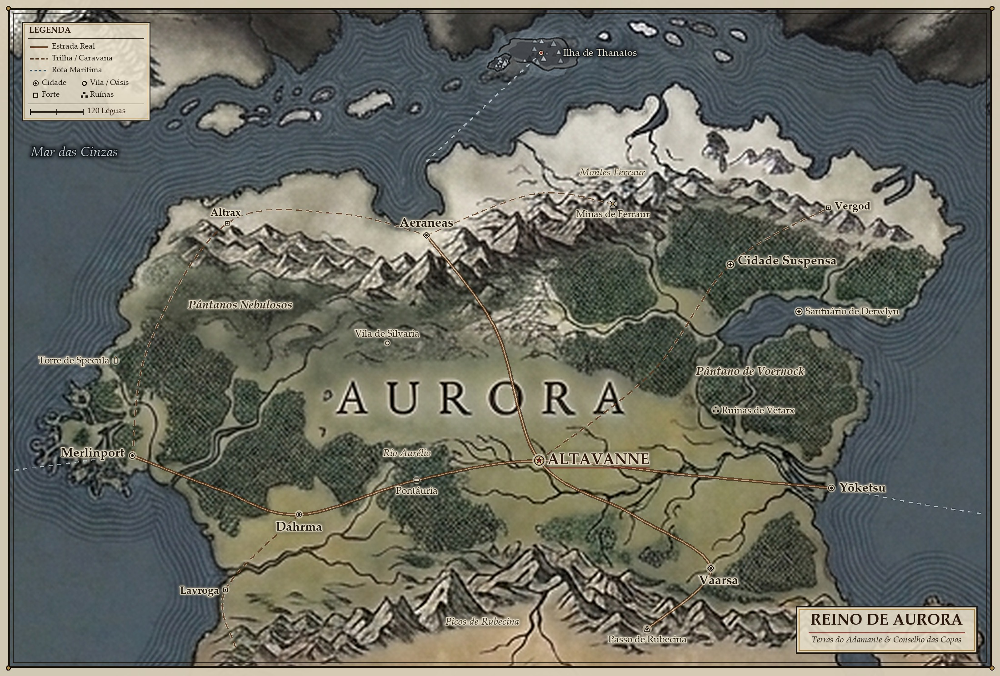
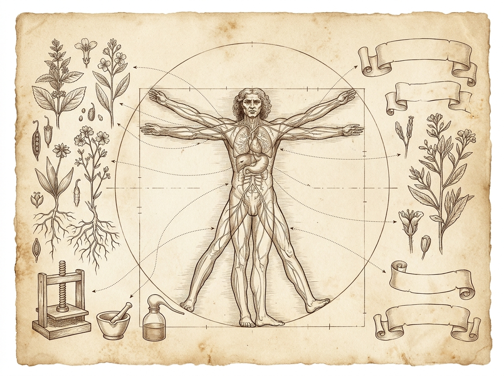

ALENIA RPG

“Cinco terras, um único aço. O volume definitivo para mestres e exploradores de Alenia.”
Livro de Regras

“O aço quebra, os reis sangram e o mar engole até os mais sábios.”
ALENIA RPG — Livro de Regras Oficial (Edição Revisada v2.0)
"O aço quebra, os reis sangram e o mar engole até os mais sábios. Só sobrevive em Alenia quem sabe quando atacar, quando aparar e quando calar."
1. Visão Geral e Proposta do Sistema
Alenia é um sistema próprio de RPG medieval sombrio movido por d20, desenhado para campanhas de exploração continental, intriga política, sobrevivência e combates táticos mortais — integrado ao RRPG Firecast.
Pilares Fundamentais
- Povos Jogáveis Exclusivamente Humanos: todas as civilizações vivas e personagens jogáveis são humanos, diferenciados por origem cultural, atributos e ofício. Feras naturais e raros horrores lendários existem apenas como ameaças do mundo.
- Sem Classes Rígidas + 36 Kits Universais: qualquer explorador pode aprender qualquer perícia ou manobra. Os Kits representam ofícios universais que definem o Dado de Vida (
1d6a1d12), o multiplicador de Inteligência para perícias, a formação inicial e uma habilidade de ofício — e podem ser trocados ou complementados ao longo da campanha. - Curva Clara de Poder (Recruta → Lenda → Épico): personagens iniciantes (Recrutas) são frágeis e sujeitos a morte súbita; veteranos (Lendas, Nív. 11–20) suportam provações maiores e dominam maestrias raras; figuras Épicas (Nív. 21–30) alcançam feitos míticos — mas o Golpe Devastador (
> 2/3do PV), venenos, ferimentos graves e inimigos do mesmo patamar mantêm a tensão real. - Combate Tático e Sem Pólvora: Defesa situacional (Aparar vs. Esquiva), armaduras comuns jamais dão RD (RD é restrita a itens extremamente raros), armas possuem margens e multiplicadores de crítico próprios, Múltiplas Ações possuem teto vinculado ao treino e ações defensivas sacrificam o ataque para proteger a si ou aliados.
- Magia Estilo Game of Thrones: raríssima, ancestral, ritualística, cara e envolta em lendas.
2. Atributos Base e Geração de Personagem
Todo personagem possui 6 Atributos Base na escala inicial 3 a 18 (com teto progressivo por Patamar ao evoluir: 18 em Recruta, 20 em Lenda e 22 em Épico):
| Atributo | Sigla | Escopo Principal |
|---|---|---|
| Força | FOR | Poder muscular, ataques corpo a corpo pesados, dano, atletismo, capacidade de carga |
| Destreza | DES | Agilidade, iniciativa, Defesa, ataques à distância e ágeis, furtividade, acrobacia |
| Constituição | CON | Vigor, Pontos de Vida (PV), testes de Moribundo, venenos, fadiga e Golpe Devastador |
| Inteligência | INT | Raciocínio, Pontos de Perícia, erudição, engenharia, alquimia, investigação |
| Sabedoria | SAB | Percepção, intuição, sobrevivência, medicina, navegação, força de vontade |
| Carisma | CAR | Presença, persuasão, liderança, enganação, intimidação, etiqueta e arte |
Cálculo do Modificador
| Valor | 3 | 4–5 | 6–7 | 8–9 | 10–11 | 12–13 | 14–15 | 16–17 | 18–19 | 20–21 | 22 |
|---|---|---|---|---|---|---|---|---|---|---|---|
| Mod. | -4 | -3 | -2 | -1 | 0 | +1 | +2 | +3 | +4 | +5 | +6 |
Geração Inicial de Atributos
- Regra Oficial (Rolagem): role
4d6e descarte o menor dado para cada um dos 6 atributos. Na ficha do RRPG Firecast, o botão "Rolar Atributos Iniciais (4d6)" só funciona quando todos os 6 campos estiverem vazios, preenche os valores automaticamente e anuncia todos os dados (incluindo o descartado) no chat da mesa. - Regra Opcional (Compra de Pontos): comece com todos os 6 atributos em
8e distribua 27 pontos (9–13= 1 pt cada;14–15= 2 pts cada; máximo inicial15).
3. Atributos Especiais (Opcionais — Evolução Exclusiva por Feitos)
Nem todo personagem possui Atributos Especiais. Eles operam na escala 0 a 5 (0 = não possui; 1–5 = nível de poder/peso narrativo e bônus direto somado em testes pertinentes).
| Atributo Especial | O que Representa | Exemplos de Feitos para Evoluir |
|---|---|---|
Status (0–5) | Linhagem nobre, patente militar, prestígio acadêmico, renome tribal ou crédito mercantil. | Salvar uma casa nobre em Altavanne, conquistar patente em Corallis, liderar caravanas em Gaddra. |
Fé Verdadeira (0–5) | Convicção espiritual autêntica e incorruptível (plural — válida em qualquer tradição sincera de Alenia), capaz de resistir ao horror e produzir bênçãos sutis ou presságios. | Sustentar juramentos sob sacrifício real, enfrentar horrores de Incognito sem recuar, realizar atos de devoção genuína. |
Influência no Submundo (0–5) | Redes de informantes, respeito entre piratas do Mar dos Corais/Ravena, contrabandistas e guildas ocultas de Kalis. | Controlar uma rota clandestina, pagar dívidas de sangue, derrubar um rival no submundo. |
Dom Antigo (0–5) | (Raríssimo — exige aval do Mestre) Sangue ancestral, visões proféticas, ecos de Incognito ou afinidade com rituais esquecidos. | Sobreviver a um rito ancestral, decifrar ruínas de Kelgore ou Incognito, pagar o preço de uma visão verdadeira. |
Especial Livre (0–5) | Espaço aberto na ficha para um atributo exclusivo da campanha criado pelo Mestre (ex.: Honra do Clã, Dívida de Sangue, Segredo de Kalgard). | Definido pelo Mestre. |
4. Testes, Dificuldades e Perícias (Recalibradas)
Teste Básico
| Dificuldade (CD) | Grau do Desafio | Exemplos em Alenia |
|---|---|---|
| 10 | Rotineira / Fácil | Negociar suprimentos comuns em Merlinport, escalar muro baixo |
| 15 | Moderada | Navegar recifes calmos, rastrear trilha recente, estancar sangramento |
| 20 | Difícil | Forjar liga superior, infiltrar mansão em Altavanne, tratar fratura grave |
| 25 | Muito Difícil | Cruzar o Mar dos Corais sob tempestade, decifrar inscrição de Kelgore |
| 30 | Lendária / Extrema | Trabalhar adamante puro em campo, sobreviver a tempestade em Incognito |
Graduação Livre, Graus Automáticos e Teto Progressivo por Nível
Em Alenia, as perícias evoluem por graduação numérica contínua (+0, +1, +2, +3, +4... — você não fica preso a saltos fixos), mas toda perícia respeita um Teto Máximo de Graduação conforme o Nível do personagem. Isso preserva a matemática do d20, impede a concentração abusiva de todos os pontos em uma única perícia (como levar Aparar a +30) e incentiva personagens amplos e verossímeis.
Conforme a graduação investida, a ficha classifica automaticamente o Grau de Domínio, usado como referência para pré-requisitos de Talentos, Defesa Total e travas de Múltiplas Ações:
| Grau Automático | Graduação (Bônus) | Custo por Graduação | Custo Acumulado (do zero) | Requisito Mínimo | |
|---|---|---|---|---|---|
| Destreinado | +0 | — | 0 pts | Nenhum | |
| Iniciante | +1 a +2 | 1 pt / grad. | 1 a 2 pts | Nenhum (ainda não cumpre pré-requisito "Treinado") | |
| Treinado | +3 a +7 | 1 pt / grad. | 3 a 7 pts | Nível 1+ (Kit inicial começa em +3 gratuito) | |
| Especialista | +8 a +11 | 2 pts / grad. | 9 a 15 pts | Nível 5+ (veterano reconhecido) | |
| Mestre | +12 a +16 | 3 pts / grad. | 18 a 30 pts | **Nível 11+ (Lenda: máx. +14 \ | Épico: máx. +16)** |
Teto Progressivo de Graduação por Nível (Regra Obrigatória)
Nenhuma perícia (fixa ou livre) pode ultrapassar o Teto de Graduação correspondente ao nível atual do personagem:
| Nível do Personagem | Patamar | Teto Máximo de Graduação | Regra Rápida |
|---|---|---|---|
| Nív. 1 | Recruta | +4 | Nível + 3 (impede concentração extrema no Nív. 1) |
| Nív. 2 | Recruta | +5 | Nível + 3 |
| Nív. 3 | Recruta | +6 | Nível + 3 |
| Nív. 4 | Recruta | +7 | Nível + 3 (topo de Treinado) |
| Nív. 5 | Recruta | +8 | Libera Especialista |
| Nív. 6 – 7 | Recruta | +9 | Progressão Especialista |
| Nív. 8 – 9 | Recruta | +10 | Progressão Especialista |
| Nív. 10 | Recruta | +11 | Topo de Especialista (Ápice Recruta) |
| Nív. 11 – 13 | Lenda | +12 | Libera Mestre |
| Nív. 14 – 16 | Lenda | +13 | Mestre Veterano |
| Nív. 17 – 20 | Lenda | +14 | Topo de Lenda (Ápice Lenda) |
| Nív. 21 – 25 | Épico | +15 | Mestre Épico |
| Nív. 26 – 30 | Épico | +16 | Teto Absoluto de Alenia (30 pts acumulados) |
(Nota: Perícias recebidas como Treinado (+3) pelo Kit inicial já contam com os 3 pts iniciais pagos — subir uma delas para +4 no Nív. 1 custa 1 pt; chegar a +7 no Nív. 4 custa +4 pts; subir para +8 no Nív. 5 custa +2 pts adicionais; alcançar +12 no Nív. 11 custa 15 pts além do +3 inicial — ou 18 pts partindo do zero — e o teto absoluto +16 no Nív. 26–30 custa 30 pts partindo do zero.)
- Acúmulo de Bônus Externos (Ferramentas, Kits, Talentos e Ajudar): para que instrumentos e habilidades não quebrem o equilíbrio do Teto de Graduação, bônus de equipamentos/ferramentas não acumulam entre si (aplica-se apenas o maior, ex.:
Instrumentos de Baldbella +2não soma comObra-Prima +1). Além disso, a soma total de modificadores fixos externos (Equipamento + Habilidade de Kit + Talentos + Ajudar + Circunstâncias) num mesmo teste não pode exceder+6(única exceção: Preparação Ritualística na Seção 10, com teto próprio de+8).
Pontos de Perícia (Uniforme e Equilibrado)
Em todas as fórmulas de perícia, aplica-se sempre a proteção máx(0, Mod. INT), garantindo que Inteligência baixa nunca reduza o ganho abaixo da base do Kit:
- No Nível 1: recebe as perícias treinadas iniciais do Kit (
+3) maismáx(2, ⌊Base do Kit + máx(0, Mod. INT) × Mult. INT⌋)pontos livres. - Ao Subir de Nível: recebe
máx(1, ⌊(Base do Kit + máx(0, Mod. INT) × Mult. INT) × Fator de Patamar⌋)pontos de perícia. - Sem Kit (Média Padrão):
Base = 1,Mult. INT = 0,75,DV = 1d8.
(Exemplo de calibração com o Teto Progressivo: um Erudito com INT 18 (+4) acumula ~80 pts livres até o Nível 11. Como o Teto de Graduação no Nív. 11 é +12 [15 pts a partir de uma perícia do Kit ou 18 pts do zero], ele jamais pode despejar tudo em Aparar; em vez disso, domina 4 a 6 áreas distintas em alto nível, mantendo Defesas e CDs (10 a 30) sempre equilibradas contra o Bestiário até o Nív. 30, onde o bônus máximo humano atinge Mod. +6 + Grad. +16 = +22!)
Lista Oficial de Perícias (34 Perícias + Perícias Livres Ilimitadas)
Além das 34 perícias oficiais abaixo, o jogador pode criar quantas perícias personalizadas quiser na ficha do Firecast (ex.: Forja de Adamante, Pilotagem nos Corais, Dialeto de Yõketsu), seguindo os mesmos custos e travas de patamar:
| Categoria | Perícias (Atributo Base) |
|---|---|
| Combate (6) | Armas Brancas (FOR/DES), Armas à Distância (DES), Luta Desarmada (FOR/DES), Aparar (FOR/DES), Esquiva (DES), Escudos (FOR) |
| Físicas & Exploração (8) | Atletismo (FOR), Acrobacia (DES), Furtividade (DES), Escalada (FOR), Natação (FOR), Cavalgar (DES), Sobrevivência (SAB), Navegação & Náutica (SAB/INT) |
| Percepção & Subterfúgio (5) | Percepção (SAB), Investigação (INT), Disfarce (CAR), Ladinagem & Fechaduras (DES), Prestidigitação (DES) |
| Sociais & Intriga (6) | Persuasão (CAR), Enganação (CAR), Intimidação (CAR/FOR), Intuição (SAB), Etiqueta & Corte (CAR), Barganha & Comércio (CAR/INT) |
| Saber, Ciência & Ofícios (9) | Medicina & Cirurgia (INT/SAB), Alquimia & Venenos (INT), Forja & Metalurgia (INT/FOR), Engenharia & Mecânica (INT), Herbalismo & Natureza (SAB), História & Lendas (INT), Geografia & Cartografia (INT), Idiomas & Cifras (INT), Religião & Ocultismo (SAB/INT) |
5. Sistema de Evolução, Experiência (XP) e Níveis 1 a 30
5.1 Como Ganhar XP — Os 5 Pilares (Muito Além do Combate)
Em Alenia, a evolução não é engessada em matar inimigos. Personagens são exploradores, diplomatas, médicos, navegadores e sobreviventes — portanto, a Experiência (XP) é concedida igualmente por cinco pilares:
| Pilar de Experiência | Exemplos Concretos em Mesa | Recruta (1–10) | Lenda (11–20) | Épico (21–30) |
|---|---|---|---|---|
| 1. Exploração & Viagem | Mapear rota inédita, atravessar tempestade/deserto sem perdas, descobrir ruína, local oculto ou recurso estratégico | 100 – 400 XP | 400 – 1.200 XP | 1.200 – 3.500 XP |
| 2. Armadilhas, Ofício & Mistérios | Desarmar armadilha letal, decifrar cifra ou inscrição antiga, solucionar investigação, cirurgia extrema ou salvar vidas | 75 – 350 XP | 350 – 1.000 XP | 1.000 – 3.000 XP |
| 3. Vitórias Sociais & Intriga | Firmar tratado, vencer duelo de corte, negociar trégua sem sangue, desmontar conspiração ou recrutar aliado-chave | 100 – 400 XP | 400 – 1.200 XP | 1.200 – 3.500 XP |
| 4. Combates Superados | Derrotar, capturar, afugentar ou contornar ameaças (contornar ou vencer sem matar rende 100% da XP) | 50 – 500 XP | 400 – 1.800 XP | 1.500 – 5.000 XP |
| 5. Contratos, Objetivos & Interpretação | Concluir missão/arco, avançar o objetivo pessoal do explorador, honrar juramento ou grande dilema moral | 150 – 500 XP | 600 – 1.800 XP | 2.000 – 5.500 XP |
- Referência Rápida para Ameaças Superadas (por grupo, dividida ou individual a critério do Mestre): Ameaça Comum/Recruta (
75–150 XP), Elite/Fera Perigosa (200–450 XP), Ameaça de Patamar Lenda (800–1.800 XP), Ameaça Épica (3.000–6.000 XP). - Ritmo Esperado de Campanha: somando 3 a 4 pilares por sessão, um grupo evolui aproximadamente a cada 1–2 sessões nos níveis iniciais (
1–4), 2–3 sessões no meio de Recruta (5–10) e 3–4 sessões nos patamares Lenda e Épico. - Regra Opcional (Marcos de Campanha): mesas que preferirem dispensar a contagem de XP podem conceder níveis diretamente ao encerrar arcos narrativos relevantes (a cada 2–4 sessões).
5.2 Tabela Completa de Evolução (Níveis 1 a 30)
| Nível | XP Acumulada | XP Próx. Nível | Patamar | Teto Atrib. | Teto Grad. | Ganhos Especiais do Nível (além de PV + Perícias) |
|---|---|---|---|---|---|---|
| 1 | 0 | 300 | Recruta | 18 (+4) | +4 | Kit Inicial (+3 grátis nas perícias do Kit) + Pontos Livres |
| 2 | 300 | +500 | Recruta | 18 (+4) | +5 | +1 Talento |
| 3 | 800 | +700 | Recruta | 18 (+4) | +6 | +1 Atributo Base (máx. 18) |
| 4 | 1.500 | +1.000 | Recruta | 18 (+4) | +7 | +1 Talento (topo de Treinado) |
| 5 | 2.500 | +1.300 | Recruta | 18 (+4) | +8 | Libera Grau Especialista (+8 a +11) |
| 6 | 3.800 | +1.700 | Recruta | 18 (+4) | +9 | +1 Talento + +1 Atributo Base (máx. 18) |
| 7 | 5.500 | +2.000 | Recruta | 18 (+4) | +9 | Evolução de PV e Perícias |
| 8 | 7.500 | +2.500 | Recruta | 18 (+4) | +10 | +1 Talento |
| 9 | 10.000 | +3.000 | Recruta | 18 (+4) | +10 | +1 Atributo Base (máx. 18) |
| 10 | 13.000 | +4.000 | Recruta | 18 (+4) | +11 | +1 Talento (Ápice Recruta — topo de Especialista) |
| 11 | 17.000 | +4.500 | Lenda | 20 (+5) | +12 | Perícias 1,5× • Maestria +1 dado • Libera Mestre (+12 a +14) & Kits de Lenda |
| 12 | 21.500 | +5.000 | Lenda | 20 (+5) | +12 | +1 Talento + +1 Atributo Base (máx. 20) |
| 13 | 26.500 | +5.500 | Lenda | 20 (+5) | +12 | Evolução de PV e Perícias (1,5×) |
| 14 | 32.000 | +6.000 | Lenda | 20 (+5) | +13 | +1 Talento |
| 15 | 38.000 | +7.000 | Lenda | 20 (+5) | +13 | +1 Atributo Base (máx. 20) |
| 16 | 45.000 | +7.500 | Lenda | 20 (+5) | +13 | +1 Talento |
| 17 | 52.500 | +8.500 | Lenda | 20 (+5) | +14 | Evolução de PV e Perícias (1,5×) |
| 18 | 61.000 | +9.000 | Lenda | 20 (+5) | +14 | +1 Talento + +1 Atributo Base (máx. 20) |
| 19 | 70.000 | +10.000 | Lenda | 20 (+5) | +14 | Evolução de PV e Perícias (1,5×) |
| 20 | 80.000 | +12.000 | Lenda | 20 (+5) | +14 | +1 Talento (Ápice Lenda) |
| 21 | 92.000 | +13.000 | Épico | 22 (+6) | +15 | Perícias 2× • Maestria +2 dados • +1 Atributo Base • Kits Épicos |
| 22 | 105.000 | +15.000 | Épico | 22 (+6) | +15 | +1 Talento |
| 23 | 120.000 | +16.000 | Épico | 22 (+6) | +15 | Evolução de PV e Perícias (2×) |
| 24 | 136.000 | +18.000 | Épico | 22 (+6) | +15 | +1 Talento + +1 Atributo Base (máx. 22) |
| 25 | 154.000 | +20.000 | Épico | 22 (+6) | +15 | Evolução de PV e Perícias (2×) |
| 26 | 174.000 | +22.000 | Épico | 22 (+6) | +16 | +1 Talento (atinge o Teto Absoluto +16) |
| 27 | 196.000 | +24.000 | Épico | 22 (+6) | +16 | +1 Atributo Base (máx. 22) |
| 28 | 220.000 | +26.000 | Épico | 22 (+6) | +16 | +1 Talento |
| 29 | 246.000 | +29.000 | Épico | 22 (+6) | +16 | Evolução de PV e Perícias (2×) |
| 30 | 275.000 | — | Épico | 22 (+6) | +16 | +1 Talento + +1 Atributo Base (Ápice Épico) |
5.3 Pontos de Vida por Dado de Vida (Estilo D&D conforme a Natureza do Kit)
- Dado de Vida (DV) do Kit:
- Combatente Brutal (
1d12): Bárbaro / Berserker. - Combatente Pesado (
1d10): Mercenário, Cavaleiro, Soldado, Guarda-Costas, Lutador. - Explorador / Híbrido / Suporte Marcial (
1d8): Sem Kit, Duelista, Arqueiro, Contrabandista, Caçador de Recompensas, Saqueador, Pirata, Navegador, Explorador, Patrulheiro, Domador, Ferreiro, Carpinteiro, Inquisidor, Ermitão. - Especialista / Erudito / Intriga / Corte (
1d6): Ladino, Assassino, Espião, Charlatão, Mercador, Alquimista, Médico, Erudito, Engenheiro, Herbalista, Astrônomo, Nobre, Diplomata, Bardo, Sacerdote, Tocado pelo Dom Antigo.
- Combatente Brutal (
- PV no Nível 1:
Valor Máximo do DV do Kit + Valor Bruto de Constituição(ex.: Mercenário1d10com CON 14 começa com24 PV; Erudito1d6com CON 10 começa com16 PV). - PV ao Subir de Nível: role
1dX + Mod. CON(mínimo1 PVpor nível; opção fixa para quem não quiser rolar: média do dado arredondada para cima +Mod. CON— equivalente aDV/2 + 1, ou seja:1d12=7,1d10=6,1d8=5,1d6=4, sempre+ Mod. CON).
5.4 Os 3 Patamares Dinâmicos, Tetos e Troca de Kit
| Patamar | Níveis | Teto Atributo | Teto Grad. | Pontos de Perícia | Maestria de Combate (Dano Base) | Papel no Mundo |
|---|---|---|---|---|---|---|
| Recruta | 1 – 10 | 18 (+4) | +4 a +11 | 1× taxa base | Dano normal da arma | Exploradores, soldados e viajantes vulneráveis. Acesso aos 36 Kits Universais. |
| Lenda | 11 – 20 | 20 (+5) | +12 a +14 | 1,5× (+50%) | +1 dado individual do tipo da arma (Especialista/Mestre) | Figuras célebres e temidas; destrava grau Mestre (+12 a +14) e futuros Kits de Lenda. |
| Épico | 21 – 30 | 22 (+6) | +15 a +16 | 2× (o dobro) | +2 dados individuais do tipo da arma (Mestre) | Nomes imortais capazes de encarar horrores de Incognito; teto absoluto +16 e futuros Kits Épicos. |
- Exemplos de Maestria de Combate: soma-se
+1dado individual do mesmo tipo da arma (e não o conjunto inteiro de dados) em Lenda, e+2dados individuais em Épico.- Espada Longa (
1d8): Recruta1d8→ Lenda2d8→ Épico3d8. - Montante (
2d6): Recruta2d6→ Lenda3d6(e não4d6) → Épico4d6. - Interação com Crítico: os dados de Maestria integram o dano base da arma e são multiplicados no Acerto Crítico, preservando a relevância do Golpe Devastador nos patamares avançados.
- Espada Longa (
- Aumento de Atributo Base:
+1em um Atributo Base à escolha a cada 3 níveis (3, 6, 9, 12, 15, 18, 21, 24, 27, 30), respeitando o Teto Progressivo do Patamar (18Recruta,20Lenda,22Épico). - Talentos / Manobras:
1Talento livre a cada nível par (2, 4, 6...). - Mudança ou Acúmulo de Kit em Campanha: o Kit inicial define sua formação e equipamento de partida. Se o personagem treinar um novo ofício durante a campanha (com tempo e mentor aprovados pelo Mestre), ele mantém todas as perícias e a habilidade já adquiridas e passa a usar o DV e multiplicadores do novo Kit nos níveis seguintes (ganhando a habilidade do novo Kit após 2 níveis nele).
6. Combate Ágil, Tático e Mortal
Turno, Economia de Ações e Iniciativa
- Iniciativa:
1d20 + Mod(DES) + ⌊Grau em Percepção / 3⌋. - No seu turno, você dispõe estritamente de:
- 1 Ação Principal: atacar, usar manobra tática (Agarrar, Derrubar, Empurrar, Desengajar, Ajudar), Defesa Total, Proteger Aliado, estabilizar aliado ou usar item complexo.
- 1 Movimento: deslocar-se até
9m(6 quadrados), levantar-se do chão (custa metade do Movimento:4,5m), recarregar besta leve ou executar interações rápidas explicitamente vinculadas ao Movimento. - 1 Reação (por rodada): usada fora do seu turno para Ataque de Oportunidade, Aparar Relâmpago ou interceptar golpe com Proteger Aliado.
- Ações Livres: atos triviais (falar poucas palavras, largar um objeto, ou efeitos explícitos de Kit como a troca de arma do Mercenário).
Defesa Situacional, Surpresa e Condições
- Contra ataques corpo a corpo: soma o grau de treino em
Aparar(ouEsquivase desarmado). - Contra projéteis / ataques à distância: soma o grau de treino em
Esquiva. - Surpreso / Desprevenido: ocorre em emboscadas (até o início do primeiro turno da vítima), quando cego ou imobilizado. O alvo usa exclusivamente
Defesa Desprevenido = 10 + Armadura + Escudo(perdeMod(DES)e a perícia Aparar/Esquiva). Não aplica penalidade extra de-4por estar surpreso. - Caído / Derrubado: condição física independente da surpresa. Enquanto estiver no chão, sofre
-4na Defesa contra ataques corpo a corpo (e recebe+2na Defesa contra ataques à distância, por apresentar perfil reduzido) até gastar metade do seu Movimento (4,5m) para se levantar. (Se estiver Caído e Desprevenido ao mesmo tempo, usaDefesa Desprevenido - 4em corpo a corpo.) - Quebrando Defesas Altas: Flanquear concede
+2no ataque; Ajudar concede+2; derrubar impõe-4na Defesa corpo a corpo.
RD Especial) existe exclusivamente em itens extremamente raros (como armaduras lendárias de Adamante Puro ou relíquias ancestrais).Múltiplas Ações (Regra Storyteller — Com Trava de Treino)
Um combatente pode dividir sua Ação Principal em N ataques (ou ações físicas rápidas equivalentes — nunca multiplicando Movimento nem Reação, e não aplicável a bestas sem recarga rápida):
- Limite Máximo de
Npelo Grau Automático na Perícia Usada:- Destreinado / Iniciante (
+0a+2): máximo1ação (não pode dividir). - Treinado (
+3a+7): máximo2ações. - Especialista (
+8a+11): máximo3ações. - Mestre (
+12a+16): máximo4ações.
- Destreinado / Iniciante (
- Fórmula do Bônus por Ação (para
N ≥ 2):
- Regra Anti-Abuso (Bônus Mínimo): você só pode declarar
Nações se oBônus por Açãoresultante for≥ 0(se ficar negativo, reduzaN). Isso impede "pesca de 20 natural" com dezenas de ataques sem habilidade real.
Ações Defensivas (Sacrificando o Ataque)
Sacrificando sua Ação Principal de ataque até o início do próximo turno:
- Defesa Total (Si Mesmo): ganha
+4na Defesa (+6se Especialista em Aparar/Esquiva/Escudos;+8se Mestre) e impõe-2nos ataques corpo a corpo direcionados a você. - Proteger Aliado: escolha 1 aliado adjacente (
1,5m). Atacantes contra ele sofrem-4no ataque (-6se Especialista em Aparar/Escudos;-8se Mestre), e você pode escolher absorver o golpe no lugar do aliado caso ainda acerte.
Críticos por Arma e O Que Multiplica
- Acerto Crítico: ocorre quando o resultado natural do
1d20cair dentro da Margem de Crítico da arma (ex.:19–20,18–20,20) e o ataque superar a Defesa (ou for20natural, que sempre acerta). - O Que Multiplica: multiplica-se pelo Multiplicador da arma (
×2,×3,×4) o pacote completo de dano base:(Dados da arma + Dados de Maestria de Lenda/Épico + Modificador de atributo + Bônus fixo da arma/adamante). Dados bônus circunstanciais externos (como Golpe Oportunista do Ladino ou dano de veneno) são rolados e somados após a multiplicação! - Falha Crítica (
1natural): erro automático + abertura tática — o atacante deve gastar seu Movimento (ou sua Reação da rodada) para recuperar a postura/destravar a arma; se já tiver gasto ambos, um inimigo adjacente recebe+2no próximo ataque contra ele.
Golpe Devastador (> 2/3 do PV Máximo) — Morte Instantânea
Sempre que um único ataque causar dano estritamente maior que 2/3 do PV Máximo do alvo (⌊PV Máx × 2 / 3⌋ + 1):
- O alvo realiza imediatamente um Teste de Constituição (
CD 15 + ⌊(Dano - Limiar) / 2⌋). - Falha: Morte Instantânea (golpe fatal em órgão vital).
- Sucesso: sobrevive reduzindo PV normalmente, mas sofre automaticamente um Ferimento Grave.
7. Procedimentos de Mesa: Moribundo, Cura, Manobras e Sobrevivência
Estado Moribundo & Estabilização
Ao cair a 0 PV (sem morrer instantaneamente), o personagem cai inconsciente e Moribundo:
- A cada turno seu: role
1d20 + Mod(CON)contra CD 12.- 3 Sucessos (não precisam ser consecutivos): estabiliza em
0 PV(inconsciente por1d4horas, desperta com1 PV). - 3 Falhas: morre.
- 20 natural: acorda imediatamente com
1 PV. 1 natural: conta como 2 falhas. - Dano sofrido enquanto moribundo: impõe 1 falha automática (ou 2 se crítico).
- 3 Sucessos (não precisam ser consecutivos): estabiliza em
- Estabilizar Aliado: Ação Principal + teste de Medicina CD 15 (ou uso de atadura/cataplasma reduz CD para
12) estabiliza imediatamente.
Descanso, Recuperação Natural e Ferimentos Graves
- Descanso Curto (
1 horade repouso e água/curativos): recupera1 Dado de Vida do Kit + Mod. CONem PV (máximo 1× entre combates pesados; até 2× por dia). - Descanso Longo (
8 horasem abrigo seguro com alimentação): recupera50%do PV Máximo (arredondado para cima) e reduz 1 nível de Exaustão. - Ferimentos Graves & Cicatrizes (Arbitragem Livre do Mestre): gatilhos incluem cair a
0 PV, sobreviver a Golpe Devastador ou sofrer crítico marcante. Exemplos para o Mestre adaptar livremente:- Sangramento:
1d4PV/turno até Medicina CD 15; - Fratura / Membro Avariado:
-3em ações usando o membro até1d4semanas (reduzido à metade com Cirurgião); - Concussão:
-2em testes mentais e Percepção até Descanso Longo; - Cicatriz / Sequela Permanente: arbitrada pelo Mestre em traumas extremos sem tratamento adequado.
- Sangramento:
Manobras Táticas e Ataque de Oportunidade
- Ataque de Oportunidade (Reação): provocado sempre que uma criatura sai voluntariamente do alcance corpo a corpo (
1,5m, ou3mpara piques) de um inimigo consciente, armado e que possa vê-la — ou realiza ação que baixa totalmente a guarda adjacente a um inimigo (como disparar arco/besta ou prestar socorro médico em corpo a corpo). Consome a Reação do inimigo para 1 único ataque básico (sem Múltiplas Ações). Deslocamento forçado (como ser empurrado) nunca provoca Ataque de Oportunidade. - Desengajar (Ação Principal): permite percorrer todo o seu Movimento (
9m) no turno sem provocar Ataques de Oportunidade ao deixar o alcance corpo a corpo de inimigos. - Ajudar (Ação Principal): exige estar adjacente (
1,5m) ao aliado ou ao inimigo distraído em combate (ou até9mpor voz/sinal fora de combate). Concede+2no próximo ataque ou teste de perícia do aliado antes do início do seu próximo turno. Limite: no máximo 1 ajudante em combate (+2máx.); em tarefas fora de combate, até 2 ajudantes (+4máx., se o espaço permitir). - Agarrar (Ação Principal): ataque corpo a corpo (Atletismo ou Luta Desarmada) contra Defesa Aparar/Esquiva do alvo. Alvo agarrado tem deslocamento
0e-2em ataques; escapar custa Ação Principal (Atletismo/Acrobacia oposto). - Derrubar / Empurrar
3m(Ação Principal): teste oposto de Atletismo (ou Armas Brancas com haste) contra Atletismo/Acrobacia do alvo. Alvo derrubado fica Caído (-4na Defesa corpo a corpo,+2contra projéteis à distância; gasta4,5mde Movimento para levantar). - Flanquear: dois aliados conscientes em lados opostos de um mesmo inimigo em corpo a corpo recebem
+2no acerto contra ele.
Fome, Sede, Frio/Calor e Exaustão (Níveis 1 a 5)
Um dia sem água (ou 3 dias sem comida, ou uma noite sem abrigo em frio/calor extremo sem sucesso em Sobrevivência CD 15) impõe +1 nível de Exaustão:
- Nível 1:
-2em todos os testes de perícia. - Nível 2: deslocamento reduzido à metade.
- Nível 3:
-3em ataques, Defesa e testes de resistência. - Nível 4: PV Máximo reduzido à metade.
- Nível 5: colapso e morte (se não socorrido imediatamente).
Doenças, Surtos e Colaboração Médica (Sistema Enxuto)
Em Alenia, doenças não são apenas penalidades matemáticas — afetam rotas, minas, portos, quarentenas e disputas políticas. O sistema distingue sempre três naturezas (pois fechar um porto, interditar uma galeria de mina ou investigar um fenômeno anômalo exigem medidas totalmente diferentes): Doenças Transmissíveis (água, superlotação ou vetores), Males Ocupacionais / Crônicos (não contagiosos) e Manifestações Anômalas.
Ficha Padrão de Doença (7 Campos)
Toda doença no cenário utiliza uma ficha curta e padronizada:
| Campo | Função em Mesa |
|---|---|
| Exposição | O acontecimento concreto que cria risco real (sem contágio arbitrário) |
| Incubação | Tempo até os primeiros sinais observáveis surgirem |
| Sinais | O que pacientes, familiares, guardas e médicos conseguem perceber |
| Evolução | Progressão enxuta em 3 estágios: Leve → Incapacitante → Crítica |
| Cuidados | O que impede agravamento, alivia sintomas ou favorece recuperação |
| Sequelas | Consequências duradouras possíveis nos casos graves sem tratamento |
| Controle do Surto | Ação concreta para interromper novas exposições na comunidade |
Ritmo de Testes, Exaustão e Investigação
- Frequência Limpa (Zero Rolagem de Hora em Hora): realiza-se apenas 1 teste de Constituição (
CON) por dia em males agudos, ou 1 teste por semana em males crônicos. Em Sucesso, o doente estabiliza ou recua1estágio (após2sucessos seguidos sob cuidados, recupera-se do quadro agudo); em Falha, avança1estágio. - Sem Acúmulo Infinito de Penalidades: a debilidade geral da doença é representada pelos níveis de Exaustão já existentes nas regras, acompanhados de apenas
1efeito característico próprio da doença (evitando somar dezenas de redutores sobrepostos). - Papel de Medicina & Cirurgia: permite reconhecer sinais, orientar cuidados, reduzir a CD ou conceder bônus no teste de resistência do paciente (respeitando o teto externo
+6) e evitar sequelas. Uma única rolagem nunca cura magicamente toda a doença, mas uma falha também jamais apaga pistas indispensáveis para investigar a origem do surto (revela menos detalhes, exige mais tempo ou leva a uma hipótese parcial).
Colaboração dos Três Ofícios (Médico, Herbalista e Alquimista)
| Ofício & Perícia | Papel no Tratamento | Contribuição Mecânica (Não Empilha Além de +6) |
|---|---|---|
| Médico / Cirurgião (Medicina & Cirurgia) | Acompanha o enfermo, avalia estágio, estabiliza crises, evita sequelas e orienta isolamento/higiene. | Cuidado contínuo (CD 14): concede +2 (ou +3 com Estojo Médico/Especialista) no teste de CON do paciente e impede agravamento por 1 ciclo em caso de falha simples. |
| Herbalista / Boticário (Herbalismo & Natureza) | Encontra e prepara recursos locais (infusões, cascas amargas, sais de reidratação, cataplasmas) sem depender de laboratório. | Preparo de campo (CD 13): reduz pela metade o custo de sustento médico e soma +2 contra febres, cólicas, tremores ou crises sazonais. |
| Alquimista (Alquimia & Venenos) | Produz compostos concentrados que exigem equipamento e reagentes (antissépticos fortes, purificadores de cisterna, fumaças repelentes, extratos refinados). | Composto técnico (CD 15 + reagentes): concede +3 em testes de controle de surto/contágio ou em casos críticos, tratando grupos inteiros ou reservatórios. |
(Os três ofícios podem colaborar no mesmo paciente ou surto — por exemplo, o Alquimista purifica a cisterna, o Herbalista prepara sais e infusões para as famílias e o Médico acompanha os casos críticos — sempre respeitando o limite de ajuda e o teto externo +6. Para o catálogo completo das doenças do continente, consulte o Tomo II — Guia de Cenário, Seção 13.)
Perseguições e Acidentes Marítimos
- Perseguições: resolvidas em 3 a 5 rodadas de testes opostos (Atletismo, Acrobacia, Cavalgar ou Navegação, somando obstáculos narrativos); quem acumular 3 vitórias alcança ou despista o oponente.
- Navegação Perigosa (Mar dos Corais / Mar Intransponível): cada dia de travessia em área de recife ou tempestade exige teste de Navegação & Náutica do piloto (CD
15calmo,20recifes/neblina,25tempestade). Falha reduz velocidade pela metade ou causa impacto no casco (2d6a4d6de avaria; barcos pequenos afundam com30–50de dano sem reparo de Carpinteiro).
8. Talentos e Manobras (Níveis Pares — 44 Talentos em 4 Categorias)
A cada nível par (2, 4, 6, 8, 10...), o explorador escolhe 1 Talento dentre as quatro categorias abaixo — Marciais & Táticos, Sobrevivência & Exploração, Sociais & Intriga e Mentais & Erudição.
Regras de Pré-Requisitos e Cadeias
- Pré-requisitos obrigatórios: para escolher um Talento, você deve atender a todos os requisitos listados (valor mínimo de Atributo Base, grau de treino em perícia, Patamar/Nível mínimo, Atributo Especial ou Talento anterior na árvore).
- Especialização em cadeia: vários Talentos formam progressões em dois degraus (ex.:
Língua de Prata→Teia de CortesouMente Analítica→Dedução de Campo). Você pode combinar livremente Talentos de categorias diferentes. - Anti-acúmulo: salvo menção explícita, o mesmo Talento não pode ser adquirido duas vezes, nenhum Talento concede RD passiva a armaduras comuns e nenhum Talento viola os limites de treino de Múltiplas Ações.
8.1 Talentos Marciais e Táticos (12 Talentos)
| Talento | Pré-requisitos | Efeito em Jogo |
|---|---|---|
| Aparar Relâmpago | DES 12+, Treinado em Aparar | 1×/rodada, usa sua Reação para somar +2 na Defesa contra um ataque corpo a corpo. |
| Riposta Mortal | DES 14+, Especialista em Aparar, Aparar Relâmpago | Quando um ataque corpo a corpo contra você errar após Aparar Relâmpago ou Defesa Total, você desfere imediatamente 1 contra-ataque básico contra o atacante (parte da mesma Reação). |
| Muralha de Aço | FOR 13+, Treinado em Escudos ou Aparar | Ao usar Proteger Aliado, cobre até 2 aliados adjacentes e anula bônus de Flanquear contra eles. |
| Bastião Inquebrável | FOR 15+, CON 14+, Especialista em Escudos, Muralha de Aço | Quando absorve golpe pelo aliado em Proteger Aliado ou mantém Defesa Total com escudo, reduz o dano desse impacto em ⌊Mod. FOR + Mod. CON⌋ (mín. 2, bloqueio ativo — não é RD passiva) e ignora Empurrar ou Derrubar. |
| Golpe Preciso | FOR 13+ ou DES 13+, Treinado em Armas Brancas ou Distância | Reduz em 1 a Margem de Crítico de um tipo de arma escolhido (ex.: 19–20 → 18–20; não acumula na mesma arma). |
| Anatomia Letal | INT 12+ ou SAB 13+, Nív. 6+, Golpe Preciso | Em Acertos Críticos com a arma escolhida, reduz em 2 o limiar do Golpe Devastador do alvo ou impõe Sangramento (1d4 PV/turno até Medicina CD 15). |
| Fluxo de Lâminas | DES 14+, Treinado em Armas Brancas ou Luta Desarmada | Reduz em 1 a penalidade -N em Múltiplas Ações (ex.: em 2 ações subtrai 1 em vez de 2; mantém teto de treino e bônus mínimo ≥ 0). |
| Tempestade de Aço | DES 16+, Patamar Lenda (Nív. 11+), Especialista em Armas Brancas, Fluxo de Lâminas | Ao usar Múltiplas Ações contra inimigos distintos em alcance, o primeiro ataque em cada alvo diferente recebe +2 no acerto. |
| Tiro Firme | DES 13+, Treinado em Armas à Distância | Ignora cobertura parcial e vento moderado com arcos/bestas; recarrega besta leve como Ação Livre 1×/turno. |
| Olho de Falcão | DES 15+, SAB 13+, Especialista em Armas à Distância, Tiro Firme | Aumenta em +50% o alcance efetivo de arcos/bestas; se gastar seu Movimento mirando imóvel antes de disparar 1 tiro único, soma +3 no acerto e +1d6 no dano (não multiplica em crítico). |
| Quebra-Guarda | FOR 14+, Treinado em Armas Brancas ou Atletismo | +3 em Derrubar, Empurrar e Agarrar; ao derrubar um oponente com arma pesada ou haste, causa dano igual ao seu Mod. FOR (mín. 1). |
| Combate de Cais | FOR 12+ ou DES 12+ | Sem penalidade com armas improvisadas (1d6), +2 contra alvos Caídos ou Agarrados e pode usar Ajudar em combate como distração suja (alvo testa DES CD 14 ou sofre -2 na próxima Defesa). |
8.2 Talentos de Sobrevivência, Vigor e Exploração (10 Talentos)
| Talento | Pré-requisitos | Efeito em Jogo |
|---|---|---|
| Sangue Frio | CON 12+ ou SAB 12+ | +3 em testes de CON contra Golpe Devastador e em testes de SAB contra medo, pânico e horrores sobrenaturais. |
| Vontade de Ferro | CON 14+, SAB 13+, Nív. 6+, Sangue Frio | Exige 4 falhas (em vez de 3) para morrer no estado Moribundo; 1×/Descanso Longo, ignora os efeitos de 1 nível de Exaustão durante uma cena inteira. |
| Passo Silencioso | DES 13+, Treinado em Furtividade | Move-se em velocidade normal (9m) em Furtividade sem penalidade e recebe +2 para ocultar rastros. |
| Fantasma da Bruma | DES 15+, Especialista em Furtividade, Passo Silencioso | Em penumbra, neblina ou mata densa, pode tentar esconder-se novamente usando o Movimento após agir (Percepção oposta); seu primeiro ataque saindo de ocultação soma +1d6 de dano (não multiplica em crítico). |
| Lobo do Mar | DES 12+ ou SAB 12+, Treinado em Navegação ou Acrobacia | Ignora penalidades de convés instável, recifes e embarcações sob tempestade; +2 em Natação e Navegação sob mau tempo. |
| Leme de Tempestade | SAB 14+, Especialista em Navegação & Náutica, Lobo do Mar | Reduz em 3 a CD de navegação em recifes/tempestades (Mar dos Corais / Mar Intransponível) e reduz à metade qualquer avaria no casco sob seu comando. |
| Mãos de Cirurgião | INT 12+ ou SAB 12+, Treinado em Medicina & Cirurgia | +3 em Medicina para estabilizar, estancar sangramentos e reduzir pela metade o tempo de recuperação de Ferimentos Graves. |
| Bisturi de Baldbella | INT 14+, SAB 13+, Especialista em Medicina & Cirurgia, Mãos de Cirurgião | Em Descanso Curto, um aliado tratado por você recupera +1d6 PV extras e remove 1 veneno leve/sangramento; reduz em 3 a CD de cirurgias extremas (incluindo extração de toxinas ou parasitas). |
| Passo de Caravana | CON 13+, Treinado em Sobrevivência | Suporta o dobro do tempo sem água ou abrigo antes de testar Exaustão e recebe +2 em Sobrevivência para guiar e abrigar até 6 companheiros. |
| Caçador de Fronteira | SAB 13+, Treinado em Sobrevivência e Percepção | Ao examinar rastros por 5 min, descobre direção, número aproximado e um hábito/vulnerabilidade da presa (arbitrado pelo Mestre), ganhando +2 na Iniciativa se o confronto ocorrer na cena. |
8.3 Talentos Sociais, Intriga e Liderança (11 Talentos)
| Talento | Pré-requisitos | Efeito em Jogo |
|---|---|---|
| Voz de Comando | CAR 12+ | Como Ação Principal, concede +2 no próximo ataque ou na Defesa (até seu próximo turno) de até 4 aliados que possam ouvi-lo. |
| Estandarte Vivo | CAR 15+, Nív. 6+, Voz de Comando | Sua Voz de Comando alcança todos os aliados a até 18m, soma +3 contra medo/horror e, 1×/combate, permite a 1 aliado realizar um Movimento livre (sem Ataque de Oportunidade) ou um novo teste contra medo/paralisia. |
| Língua de Prata | CAR 13+, Treinado em Persuasão ou Enganação | +2 em Persuasão e Enganação em audiências ou negociações; 1×/sessão, se falhar em um teste social por 3 ou menos, pode reformular o argumento e rolar novamente (aceitando o 2º resultado). |
| Teia de Cortes | CAR 15+, INT 12+, Especialista em Etiqueta ou Persuasão, Língua de Prata | Após 1h em corte, taverna ou salão mercantil, identifica quem detém o poder real na sala e um conflito oculto entre facções locais, ganhando +3 em testes sociais usando essa alavanca na cena. |
| Máscara de Mil Rostos | CAR 13+, Treinado em Disfarce e Enganação | Monta disfarces em metade do tempo, imita sotaques regionais de Alenia sem penalidade e impõe -3 na Percepção/Intuição de quem tentar desmascará-lo. |
| Sussurro de Kalgard | CAR 14+, SAB 13+, Especialista em Enganação ou Intimidação, Máscara de Mil Rostos ou Língua de Prata | Após 10 min de conversa, pode plantar uma suspeita ou boato plausível (Enganação/Persuasão vs. Intuição do alvo); em sucesso, o alvo age com cautela ou desconfiança contra o terceiro citado até obter prova contrária. |
| Presença Aterradora | CAR 13+ ou FOR 14+, Treinado em Intimidação | +2 em Intimidação; em combate, gasta Ação Principal para intimidar 1 inimigo inteligente a até 9m (Intimidação vs. SAB do alvo): em sucesso, o alvo sofre -2 nos ataques por 2 rodadas (1×/alvo/cena). |
| Olhar do Árbitro | SAB 13+, Treinado em Intuição | +3 em Intuição para detectar mentiras, coerção, emboscadas disfarçadas ou influência emocional anômala; percebe na hora se alguém age sob chantagem ou medo oculto. |
| Crédito de Porto | CAR 12+ ou INT 12+, Treinado em Barganha & Comércio | Consegue 15% de desconto em compras comuns e +15% na venda de cargas; em qualquer porto ou rota de caravana, obtém abrigo seguro, barco ou crédito modesto (até 50 PP) sem garantia imediata. |
| Rede de Informantes | CAR 14+ ou INT 14+, Submundo 1+ ou Status 1+, Crédito de Porto ou Língua de Prata | 1×/aventura (ou ao chegar a uma grande cidade), aciona contatos para obter sem rolagem um mapa de acesso, salvo-conduto discreto, rota de fuga ou dossiê básico sobre um NPC (o Mestre define o favor futuro). |
| Coração de Cronista | CAR 13+ | Durante Descanso Curto ou Longo, suas histórias, cantos ou discursos elevam o moral: até 5 aliados recuperam +1d4 PV extras no Descanso Curto ou ganham +2 no primeiro teste contra medo/Exaustão do dia seguinte. |
8.4 Talentos Mentais, Erudição e Ofício (11 Talentos)
| Talento | Pré-requisitos | Efeito em Jogo |
|---|---|---|
| Mente Analítica | INT 13+, Treinado em Investigação | +3 em Investigação e História & Lendas para reconstruir cenas, detectar documentos forjados ou estudar ruínas; encontra pistas secundárias em metade do tempo. |
| Dedução de Campo | INT 15+, SAB 13+, Especialista em Investigação, Mente Analítica | Como Ação Principal em combate (ou 1 min observando antes), testa Investigação/Intuição CD 15 contra um inimigo visível; em sucesso, descobre sua fraqueza (menor Defesa, vulnerabilidade ou RD) e você + 1 aliado ganham +2 no acerto contra ele por 3 rodadas. |
| Estrategista de Batalha | INT 14+, SAB 12+ | Usa Mod. INT no lugar de Mod. DES na Iniciativa; no início do combate, pode trocar sua posição na ordem de Iniciativa com 1 aliado voluntário que possa ouvi-lo. |
| Mestre Tático | INT 16+, Nív. 8+, Estrategista de Batalha | Ao usar a ação Ajudar em combate, orienta até 2 aliados a até 9m por voz (sem precisar ficar adjacente a 1,5m), concedendo +2 a cada um até seu próximo turno. |
| Sentidos Aguçados | SAB 13+, Treinado em Percepção | +3 em Percepção e +2 fixo na Iniciativa; não pode ser surpreendido por emboscadas mundanas enquanto estiver consciente e não incapacitado. |
| Memória Enciclopédica | INT 13+ | Recorda mapas, brasões, tratados e diálogos com precisão; +2 em História, Geografia, Religião e Idiomas, e pode realizar testes de conhecimento mesmo em perícias Destreinadas sem penalidade por falta de biblioteca. |
| Poliglota das Cinco Terras | INT 13+, Treinado em Idiomas & Cifras | Aprende imediatamente 2 idiomas/dialetos ou cifras de Alenia, recebe +3 para decifrar códigos de Kalis e inscrições de Kelgore/Incognito, e capta o sentido geral de línguas desconhecidas após breve contato. |
| Mãos de Alquimista | INT 13+, Treinado em Alquimia & Venenos ou Herbalismo | Reduz em 25% o custo de reagentes e pela metade o tempo de preparo de venenos, antídotos, óleo incendiário e extratos; aumenta em +2 a CD das misturas que você mesmo preparar. |
| Engenho de Armadilhas | INT 13+, Treinado em Engenharia & Mecânica | +3 para montar ou desarmar armadilhas, fechaduras complexas e mecanismos antigos; em 10 min com materiais de campo, monta armadilha improvisada (alerta, laço que derruba ou estacas de 1d8, Percepção CD 15 + Mod. INT). |
| Mente Blindada | SAB 14+ | +3 em testes de SAB contra manipulação, intimidação, ilusões sensoriais, sussurros de Thanatos/Incognito e impulsos psíquicos; 1×/sessão, pode refazer um teste de SAB fracassado contra horror ou coerção. |
| Vigia dos Ritos Antigos | INT 14+ ou SAB 14+, Fé Verdadeira 1+ ou Dom Antigo 1+, Treinado em Religião & Ocultismo | Soma +2 adicional na Preparação Ritualística (respeitando o teto de +8), reduz em 1d6 qualquer dano de sacrifício ritual (mín. 1) e pressente relíquias de Incognito ou condutores ativos de adamante a até 18m. |
8.5 Mapa Rápido das Cadeias de Evolução
- Duelista & Escudeiro: Aparar Relâmpago → Riposta Mortal | Muralha de Aço → Bastião Inquebrável
- Letalidade & Velocidade: Golpe Preciso → Anatomia Letal | Fluxo de Lâminas → Tempestade de Aço | Tiro Firme → Olho de Falcão
- Sobrevivência & Ofício: Sangue Frio → Vontade de Ferro | Passo Silencioso → Fantasma da Bruma | Lobo do Mar → Leme de Tempestade | Mãos de Cirurgião → Bisturi de Baldbella
- Liderança & Intriga: Voz de Comando → Estandarte Vivo | Língua de Prata → Teia de Cortes | Máscara de Mil Rostos → Sussurro de Kalgard | Crédito de Porto → Rede de Informantes
- Estratégia & Intelecto: Mente Analítica → Dedução de Campo | Estrategista de Batalha → Mestre Tático
9. Sistema Monetário, Equipamentos e Economia de Alenia
9.1 Padrão Prata, Equivalência e Peso Físico
A economia de Alenia opera sob o Padrão Prata: a prata é o metal que move o comércio real, o soldo de mercenários, a compra de armas e as expedições. Moedas de ouro são raras no cotidiano — um trabalhador braçal ganha 3 PC/dia (~9 PP/mês) e pode passar a vida inteira sem segurar um único Áureo.
- Equivalência Universal (Base Decimal Compatível):
1 Áureo (PO)=10 Pratas (PP)=100 Cobres (PC)1 Prata (PP)=10 Cobres (PC)- (Todas as tabelas de preços e fichas mantêm as siglas universais
PO,PPePC, mudando apenas o nome narrativo conforme o cunho da região.)
- Regra Social do Ouro: tentar pagar uma caneca (
2 PC) ou hospedagem comum (3 PC) com uma moeda de ouro quase sempre resulta em recusa por falta de troco, suspeita imediata da guarda ou atenção indesejada de ladrões, informantes e coletores de impostos. - Peso Físico das Moedas (
100 moedas = 1 kg):- Cada moeda padrão pesa aproximadamente
10 g— portanto,100 moedas de qualquer metal pesam 1 kg(50 moedas = 0,5 kg;500 moedas = 5 kg). - Carregar
450 PPpara comprar uma Armadura de Placas exige carregar4,5 kgde metal barulhento; carregar o mesmo valor em45 POpesa apenas0,45 kg, mas atrai olhares perigosos. Para grandes somas, viajantes experientes recorrem às Cartas de Crédito (seção 9.4).
- Cada moeda padrão pesa aproximadamente
9.2 Cunhagens Regionais dos Domínios (Aceitas por Peso)
Como na Idade Média real, mercadores experientes aceitam moedas estrangeiras pelo peso e pureza do metal, desde que não estejam raspadas ou adulteradas — mas a origem da moeda pode gerar consequências políticas e sociais em cena:
| Domínio / Povo | Ouro (PO — 10 PP) | Prata (PP — Base) | Cobre (PC — 0,1 PP) | Cunho & Peculiaridade em Jogo |
|---|---|---|---|---|
| Reino Capital de Aurora (Referência) | Áureo (Coroa de Aurora) | Escudo (Prata Real) | Vintém (Grão de Cobre) | Cunhado em Altavanne com o perfil do Alto Rei e a bigorna de Ferraur. Referência de peso em todo o continente. |
| Liga de Corallis (Moeda Mercantil) | Florim de Coral | Ducado (Vela de Prata) | Cente (Concha) | Cunhagem mais pura e uniforme dos mares (farol e galé); aceita sem desconto nem desconfiança em qualquer porto. |
| Confederação de Gaddra (Rotas do Sal) | Dinar Solar (Zahar) | Dirame (Lua Seca) | Fals (Grão de Sal) | Perfuradas ao centro para serem enfiadas em cordões sob a túnica. Em oásis remotos, blocos de sal de Bayd (1 kg = 1 PP) e fichas de água de Naasar circulam como moeda. |
| Despotado Velado de Kalis (Cofres de Ferro) | Marco Negro (liga escurecida) | Marco de Prata (Corvo) | Pfenig (Preguinho) | Bordas serrilhadas de precisão contra raspagem. Pagar com Marcos Negros diante de guardas ou nobres de Aurora desperta suspeita imediata de espionagem ou suborno. |
| Cidade Suspensa (Povo das Florestas) | (Não cunha) | Prata Cortada (por peso) | Escambo (sal, ferro, lã) | Recusam rostos de reis. Em Vergod, negociam por escambo ou prata pesada em balança (frequentemente cortada em metades e quartos). |
9.3 Moedas Raspadas, Falsificação, Barganha e Mercado Negro
- Raspagem de Borda ("Toque Leve"): ladrões e cambistas desonestos raspam limalha das bordas de moedas de ouro e prata. Um saco de moedas raspadas perde
10%a20%do valor ao ser pesado numa balança mercantil. - Detectar Fraude / Avaliar Pureza: teste de Barganha & Comércio ou Percepção (
CD 14para raspagem visível;CD 18para liga falsificada de chumbo/estanho banhada a prata). O Kit Mercador aplica seu+4de Olhar de Ouro. - Câmbio & Troca de Metal: converter pilhas de cobre/prata em ouro (ou trocar moedas de má fama como Marcos Negros por Áureos) com um cambista cobra comissão de
5%(reduzida para2%com Barganha CD 16 ou TalentoCrédito de Porto). - Barganha em Mesa: antes de fechar uma compra ou venda relevante, o comprador pode fazer um teste oposto de Barganha & Comércio contra o mercador:
- Vitória por
1–4: ajusta o preço em10%a seu favor. - Vitória por
5+: ajusta o preço em20%(acumula comCrédito de Portoaté o teto prático de30%, jamais abaixo do custo de reposição do mercador). - Falha por
5+: ofende o mercador (recusa desconto ou eleva o preço em+10%).
- Vitória por
- Venda de Espólio & Mercado Negro: equipamentos usados em bom estado vendem normalmente por
50%do preço de tabela (obras-primas, joias e adamante mantêm70%–90%com comprador certo). Itens proibidos, venenos raros, documentos forjados ou adamante sem selo real exigem acesso viaSubmundoe custam1,5×a3×o valor nominal.
9.4 Casas Bancárias e Cartas de Crédito (Corallis e Kalis)
Para evitar transportar quilos de metal por estradas de salteadores ou mares de corsários, mercadores, nobres e exploradores utilizam Cartas de Crédito (peso 0 kg) mantidas por duas redes financeiras rivais:
| Rede Bancária | Documento & Sedes | Taxa de Emissão / Saque | Valor Mínimo | Diferencial em Jogo |
|---|---|---|---|---|
| Bancos da Liga de Corallis (Casa Falcenzo & Banco dos Recifes) | Letra Selada em Cera Azul (Baldbella, Alineus, Merlinport, Altavanne) | 5% | 100 PP (10 PO) | Nominal, auditável e aceita como prova legal de solvência em estaleiros, leilões e cortes. Se roubada, exige verificação de selo/assinatura (Enganação ou Ladinagem CD 22 para fraudar). |
| Cofres Cifrados de Kalis (Banca Ulscold & Correio de Dobalbek) | Talha Cifrada (Kalgard, Fugong, Dobalbek e agentes discretos em portos) | 8% | 200 PP (20 PO) | Sigilo absoluto — duas metades de placa de madeira negra ou cédula sem nome real, liberada apenas por frase-chave. Imune a confisco da Coroa de Aurora, mas não oferece recurso legal se a senha vazar. |
- Empréstimos e Juros: casas mercantis emprestam a
10%–15%ao mês mediante garantia real (navio, imóvel ou fiador comStatus 2+). Agiotas do submundo cobram25%+ao mês — e saldam atrasos com lâminas, confisco ou dívidas de favor.
9.5 Padrão de Vida Mensal (Sustento & Impacto Social)
Entre expedições (ou por mês de campanha), cada explorador escolhe um Padrão de Vida para cobrir moradia, comida, lavagem e manutenção básica sem precisar anotar cada pão ou vela (para períodos curtos, divida por 30 ou use o custo diário):
| Padrão de Vida | Custo Mensal | Custo Diário | Moradia & Rotina | Efeito Social & Mecânico |
|---|---|---|---|---|
| Miserável | 0 PP | 0 PC | Becos, palheiros, cais, restos | Risco de doença/roubo; -2 em Etiqueta/Persuasão com cidadãos; abrigo inseguro não remove Exaustão facilmente. |
| Pobre | 6 PP | 2 PC | Albergue coletivo, sopa rala, pão duro | Sobrevivência básica; guardas e estalajadeiros desconfiam se exibir armas caras ou ouro. |
| Modesto / Viajante | 15 PP | 5 PC | Quarto simples em estalagem, refeição quente, reparos | Padrão normal de aventureiros, artesãos e soldados (Status 0–1). Sem penalidades. |
| Confortável | 45 PP | 15 PC (1,5 PP) | Casa alugada ou boa suíte, roupas limpas, cocheira | Sustenta Status 2 com dignidade; +1 em primeiras impressões com mercadores e oficiais. |
| Abastado | 150 PP (15 PO) | 5 PP | Sobrado mobiliado, 1–2 criados, bons vinhos e lã fina | Sustenta Status 3; abre portas de guildas, leilões e salões menores sem suborno. |
| Aristocrático / Nobre | 450+ PP (45+ PO) | 15+ PP | Solar/mansão, escolta, banquetes, vestes com brasão | Exigido para sustentar Status 4–5 em Altavanne ou Baldbella; +2 em Etiqueta & Corte com a alta nobreza. |
9.6 Tabelas de Preços de Referência
(Para o catálogo completo com mais de 120 equipamentos de acampamento, sobrevivência, pesca, caça, forja, engenharia, medicina, náutica, subterfúgio, vestuário, montarias e pacotes prontos — todos com peso em kg e especificações — consulte o Tomo IX — Empório & Catálogo de Equipamentos e Ofícios.)
Cotidiano, Viagem e Ferramentas
| Item / Serviço | Preço Médio | Observação |
|---|---|---|
| Refeição simples + caneca em estalagem | 2 PC | 1 PP para banquete de frutos do mar em Baldbella |
| Hospedagem (salão comum / quarto privado) | 3 PC / 1 PP | Por noite em Merlinport ou Dahrma |
| Rações secas de viagem (1 semana) | 5 PP | Indispensável em Gaddra ou pântanos |
| Salário diário (trabalhador / mercenário) | 3 PC / 2 PP | Mercenários veteranos cobram 5 PP/dia + espólio |
| Passagem marítima (Merlinport ↔ Alineus) | 15 PP | Travessia clandestina no Mar Intransponível: 80–150 PP |
| Consulta cirúrgica (tratar Ferimento Grave) | 20 PP | Cirurgiões renomados de Baldbella cobram até 50 PP |
| Cavalo de estrada / Mula de carga | 120 PP / 45 PP | Montarias do deserto em OX: 150 PP |
| Estojo médico / Gazuas / Bolsa alquímica | 25 PP / 20 PP / 40 PP | Ferramentas profissionais de ofício |
Contratações, Serviços e Especialistas
| Serviço / Especialista | Preço Médio | Observação |
|---|---|---|
| Guia local / Batedor de trilha | 3 PP / dia | 6 PP/dia em Pântanos Nebulosos ou Passo de Rubecina |
| Prático naval (Mar dos Corais) | 25 PP / travessia | Concede +4 em Navegação & Náutica contra recifes |
| Guarda-costas / Escolta armada (comum / veterano) | 2 PP / 5 PP / dia | Exige rações + cota de risco em missões letais |
| Escriba, tradutor ou cartógrafo | 4 PP / página | Decifração de selo ou mapa antigo: 15–40 PP |
| Suborno discreto (guarda de portão / oficial portuário) | 5–15 PP / 40–100 PP | Varia conforme gravidade e risco de forca |
| Acabamento Obra-Prima (arma ou ferramenta) | +150 PP (sobre base) | Concede +1 em testes com a ferramenta ou +1 no acerto (sem propriedades de adamante) |
Embarcações, Caravanas e Propriedades (Grandes Compras)
| Bem / Propriedade | Preço Médio | Observação |
|---|---|---|
Carroça reforçada + 2 mulas | 130 PP (13 PO) | Transporta até 400 kg em estradas secas |
Barco a remo / Bote costeiro (4–6 pessoas) | 80 PP (8 PO) | Ideal para rios (Rio Aurélio) e estuários |
Escuna costeira rápida (10–15 tripulantes) | 1.500 PP (150 PO) | Manutenção/tripulação: ~120 PP/mês |
| Caravela / Galé de Recife (casco reforçado) | 4.500 PP (450 PO) | Casco em madeira negra de Kalis dobra o preço (9.000 PP) |
| Pequena oficina, taverna ou armazém portuário | 1.200 – 3.000 PP | Gera renda líquida de 40–120 PP/mês se bem gerida |
| Torre de vigia ou solar rural fortificado | 8.000 – 20.000 PP | Exige concessão feudal (Status 3+) em Aurora ou Corallis |
Tabela de Armas Comuns
| Arma | Preço | Dano | Margem / Mult. | Propriedades |
|---|---|---|---|---|
| Adaga / Punhal | 4 PP | 1d4 | 19–20 / ×2 | Leve, Ágil (FOR/DES), Arremesso 6m |
| Espada Curta | 15 PP | 1d6 | 19–20 / ×2 | Leve, Ágil (FOR/DES) |
| Florete / Estoque | 30 PP | 1d6 | 18–20 / ×2 | Ágil (DES), Perfurante |
| Espada Longa | 25 PP | 1d8 | 19–20 / ×2 | Versátil (1d10 em 2 mãos) |
| Lâmina Oriental (Yõketsu) | 55 PP | 1d8 | 18–20 / ×2 | Ágil em 2 mãos, corte preciso |
| Cimitarra / Sabre | 25 PP | 1d6 | 18–20 / ×2 | Ágil (DES), ideal em convés/sela |
| Machado de Batalha | 20 PP | 1d8 | 20 / ×3 | Versátil (1d10 em 2 mãos) |
| Machado Grande | 35 PP | 1d12 | 20 / ×3 | Duas mãos, Pesada |
| Montante / Espada Grande | 50 PP | 2d6 | 19–20 / ×2 | Duas mãos, Pesada |
| Lança / Pique | 10 PP | 1d8 | 20 / ×3 | Alcance (3m se pique), Versátil |
| Martelo de Guerra | 22 PP | 1d8 | 20 / ×3 | Contundente |
| Picareta de Guerra | 18 PP | 1d6 | 20 / ×4 | Perfurante letal |
| Arco Curto / Longo | 20 / 45 PP | 1d6 / 1d8 | 20 / ×3 | 2 mãos, Alcance 24m / 45m |
| Besta Leve / Pesada | 35 / 75 PP | 1d8 / 1d10 | 19–20 / ×2 | Recarga (Mov. / Ação Principal) |
(Regra de Dano: armas corpo a corpo — inclusive armas ágeis que atacam com DES — e armas de arremesso sempre somam Mod(FOR) ao dano; arcos e bestas usam o dano base da arma + eventuais bônus fixos de adamante ou talento. Não existe pólvora em Alenia.)
Armaduras e Escudos (Bônus de Defesa — Zero RD)
| Proteção | Preço | Bônus Defesa | Penalidade Furt./Acrob. | Observação |
|---|---|---|---|---|
| Gibão Reforçado | 12 PP | +1 | 0 | Discreta para viagem |
| Couro Batido | 25 PP | +2 | 0 | Padrão de exploradores |
| Cota de Malha | 75 PP | +3 | -2 | Boa proteção contra cortes |
| Brigantina / Meia-Placa | 180 PP | +4 | -3 | Favorita de mercenários veteranos |
| Placas Completas | 450 PP | +5 | -5 | Exige FOR 13+ |
| Broquel / Escudo Médio / Torre | 10 / 20 / 45 PP | +1 / +2 / +3 | 0 / -1 / -3 | Torre dá +2 extra em Proteger Aliado |
O Adamante de Aurora (Metal Estratégico)
- Armas de Adamante (raríssimas — a partir de
800–2.000 PPou concessão real): nunca perdem o fio, concedem+1no acerto e+2no dano, e ignoram até3pontos deRD Especial. - Peças de Armadura em Adamante Puro / Relíquias Antigas: única fonte de
RD Especial(RD 2aRD 5, arbitrado pelo Mestre).
10. Magia, Rituais e Fé Verdadeira (Calibrados)
A magia em Alenia é rara, lenta, perigosa e cercada de lendas — não existem magias instantâneas de combate. Testes de rituais ancestrais ou milagres sutis utilizam 1d20 + Dom Antigo ou 1d20 + Fé Verdadeira (sempre mediante aval narrativo do Mestre).
Dificuldades e Preparação Ritualística
Como 1d20 + Atributo Especial (máx. 5) alcança naturalmente até 25, ritos maiores exigem preparação concreta para acumular bônus antes da rolagem:
| Grau do Rito / Prodígio | CD | Exemplos |
|---|---|---|
| Sutil / Presságio | 15 | Sonho profético vago, acalmar medo de um grupo, pressentir mentira ou perigo próximo |
| Menor / Bênção | 20 | Estancar praga em um enfermo, visão dirigida pelo fogo, selar uma porta contra horrores |
| Maior / Proibido | 25 | Maldição de sangue, despertar ecos em ruínas de Kelgore, desviar um golpe mortal |
| Lendário (Exige Preparo) | 28–30 | Rito colossal ligado aos segredos de Incognito ou Thanatos |
Modificadores de Preparação Ritualística (cumulativos até +8):
- Tempo e Concentração (horas de vigília, jejum ou canto):
+2 - Componentes Raros (ervas da Ilha das Safiras, cinzas de Thanatos, relíquia verdadeira):
+2 - Local de Poder / Consagração (santuário antigo, ruínas de Kelgore, eclipse observado):
+2 - Sacrifício de Sangue / Vitalidade (sofrer
1d6a2d6de dano não mitigável ou 1 nível de Exaustão):+2a+4 - Auxílio de Acólitos / Coro de Fiéis:
+1por par de ajudantes (máx.+2)
Segredos do Mestre — Regras Ocultas de Campanha
Esta seção contém segredos de campanha reservados ao Mestre. Insira a senha para revelar.
Livro do Cenário & Atlas
“Ao norte, além de Thanatos e do Mar das Cinzas, só existe o que os mapas se recusam a nomear.”
ALENIA RPG — Livro Oficial do Cenário & Atlas do Mundo (Edição Revisada v2.0)
"Ao sul há ouro e sede; a oeste, livros e naufrágios; a leste, sussurros atrás de portas fechadas. E ao norte, além de Thanatos e do Mar das Cinzas, só existe o que os mapas se recusam a nomear."
1. Visão Geral de Alenia
Alenia é um mundo medieval sombrio onde todas as civilizações vivas e povos jogáveis são exclusivamente humanos, organizados sob a soberania nominal do Alto Rei de Aurora (sediado em Altavanne) — o monarca de todos os reinos civilizados dos homens — sobre o Reino Capital de Aurora e seus três domínios vassalos (Corallis, Gaddra e Kalis), além do continente proibido de Incognito ao norte. O Alto Rei escolhe ou confirma os Regentes que governam Corallis, Gaddra e Kalis em nome da Coroa, mas seu poder efetivo alcança apenas as terras civilizadas (cidades muradas, portos, estradas reais, minas e praças-fortes): fora dos muros, tribos inteiras, clãs livres, corsários e povos das florestas não reconhecem nem a Coroa nem seus Regentes. O mundo é movido pela disputa do adamante, pela ciência sem pólvora, por rotas marítimas letais, por intrigas de corte e pelo temor crescente do desconhecido.
- Mapa-Múndi Oficial (
2752 × 1536): alenia_mapa_mundi_atualizado.png - Compêndio de Onomástica e Toponímia: 05_Onomastica_e_Toponimia_Alenia.md
Presente Histórico — As 6 Crises Ativas Agora
A campanha começa no Ano 418 da Era da Forja, em um momento de fratura simultânea:
| Crise Ativa | Quem Ganha | Quem Perde | Se os PJs Não Intervierem |
|---|---|---|---|
| 1. Sucessão Contestada em Altavanne: o Alto Rei Severor III Valerion adoeceu gravemente sem herdeiro indiscutível; sua irmã Valora Valerion disputa a regência contra o marechal Lucian Leonastis. | Espiões de Kalgard e casas menores vendendo apoio. | A Coroa de Aurora e os mercadores de Merlinport (comércio travado por impostos de guerra). | Guerra civil aberta no vale do Rio Aurélio em menos de um ano. |
| 2. Desabamento e Greve nas Minas de Ferraur: uma galeria profunda em Aeraneas desabou matando 40 mineradores; os sobreviventes paralisaram a extração de adamante exigindo segurança e cotas. | Contrabandistas do Mar dos Corais e forjadores clandestinos. | A Casa Valerion e compradores civis de instrumentos em Corallis. | O marechal Leonastis marcha sobre Aeraneas e transforma a greve em massacre. |
| 3. Quebra da Trégua dos Recifes (Corallis): Baldbella e Alineus disputam quem cobra taxas dos práticos que guiam navios e dos salvamentos retirados de O Ferro Velho. | Corsários do Arquipélago Ravena e sucateiros independentes. | Armadores pequenos e pesquisadores da Academia de Sellene. | Bloqueio naval parcial na entrada do Mar dos Corais e escalada de pirataria. |
| 4. O Emissário Perdido perto de Altrax: Cadwyn ap Merion, enviado da Cidade Suspensa, saiu da rota habitual de Vergod rumo ao noroeste para mapear e reunir provas de prospecção ilegal de adamante dentro das matas protegidas — e desapareceu nos Pântanos Nebulosos. | Os financiadores secretos da prospecção ilegal em Altavanne. | O Conselho das Copas e a frágil paz das estradas de Aurora. | O Conselho fecha Vergod e começa a atacar caravanas reais nas florestas. |
| 5. Os Despertos da Ilha de Thanatos: um navio de vigia vindo de Aeraneas jurou ter reconhecido três marinheiros comprovadamente mortos num naufrágio há dois meses caminhando vivos na praia negra de Thanatos, sob o Farol Apagado. | Ocultistas e curiosos da Academia de Sellene ávidos por investigar. | Ordens religiosas em pânico e famílias abaladas em Merlinport. | Inquisidores incendeiam barcos de investigação e Kalgard envia agentes antes de Aurora para capturar um "desperto". |
| 6. Embargo na Rota do Sal (Gaddra): o assassinato de um Árbitro do Sangue em Naasar foi atribuído a lâminas estrangeiras; clãs de Vargheim ameaçam fechar o Passo de Rubecina. | Contrabandistas marítimos pelo Mar de Zahar. | Caravaneiros de Vaarsa e Naasar, além de vilas que dependem de grãos e sal. | Guerra de fronteira nos Picos de Rubecina e escassez de sal em todo o sul de Aurora. |
2. Reino Capital de Aurora (A Potência do Adamante)

- Designador & Gentílico: Reino Capital de Aurora (Auroriano / Auroriana) | Tendência Fonética: I. Imperial / Clássico (bastardos: Cinza; Povo das Florestas: Bruma).
- Economia do Adamante: Aurora detém tanto as maiores reservas mundiais (nos Montes Ferraur, extraídas a partir de Aeraneas) quanto a maior expertise em mineração, fundição de altíssima temperatura e forja. O metal não serve apenas para armas e raras peças de armadura: suas lascas e ligas são cobiçadas em toda Alenia para brocas de mineração profunda, pontas cirúrgicas de precisão (Baldbella), engrenagens de relojoaria/astrolábios (Observatório Helmer) e travas de cofres.
- Os Limites Reais da Coroa (Onde Termina o Poder do Alto Rei): embora o Alto Rei de Aurora seja o soberano de todos os reinos dos homens e escolha os Regentes de Corallis, Gaddra e Kalis, quatro freios reais impedem o controle absoluto do mapa — (1) extração lentíssima e perigosa do adamante em galerias profundas; (2) o Mar dos Corais e o Mar Intransponível tornam intervenções navais rápidas contra regentes rebeldes ou corsários caríssimas e letais; (3) os desertos de Gaddra, os Picos de Rubecina e as florestas fechadas impedem submeter tribos livres pela força; e (4) rivalidades ferozes entre as Casas Nobres de Altavanne e intrigas silenciosas dos próprios Regentes vassalos. Na prática, o Alto Rei governa as áreas civilizadas do mundo, enquanto vastas fronteiras permanecem indomadas.
- Cidades e Fortalezas: Altavanne (Capital, Rio Aurélio), Merlinport (grande estuário comercial oeste), Yõketsu (enclave oriental na costa leste com tradições marciais próprias), Aeraneas (sede das minas e forjas de adamante nos Montes Ferraur), Dahrma (vale agrícola sudoeste), Vaarsa (fortaleza fronteiriça nos Picos de Rubecina), Altrax (forte noroeste da Casa d'Altrax), Lavroga (pedreira e posto sudoeste) e Vergod (entreposto na borda da mata nordeste).
- Conselho das Copas (Cidade Suspensa — Povo das Florestas): autonomia cultural nas copas milenares do nordeste. Logística real: abastecimento de água por calhas suspensas de coleta pluvial e roldanas sobre afluentes fundos; proteção contra incêndios por pontes de corda destacáveis em segundos, cascas umedecidas com seiva retardante e zonas de corte ao redor das árvores-mestras. Dependem de Vergod para sal, ferramentas de ferro e tecidos grossos de inverno — e vivem divididos entre anciãos isolacionistas e jovens vigias que querem agir contra a expansão mineradora.
- Marcos & Geografia: Montes Ferraur, Minas de Ferraur, Picos de Rubecina, Passo de Rubecina, Rio Aurélio, Pontáuria, Vila de Silvaria, Torre de Specula, Pântanos Nebulosos, Pântano de Voernock, Ruínas de Vetarx e Santuário de Derwlyn.
3. Liga Talassocrática de Corallis & O Mar dos Corais

- Designador & Gentílico: Liga Talassocrática de Corallis (Corallino / Corallina) | Tendência Fonética: IV. Talassocrático (bastardos: Coral).
- Política, Regência & Rivalidades: Corallis é um domínio talassocrático vassalo da Coroa de Aurora, governado por um Arconte-Regente escolhido pelo Alto Rei (atualmente Corardo della Rocca) em equilíbrio constante com o Conselho da Liga das 4 grandes cidades mercantis. Baldbella (frutos do mar, pérolas e cirurgia) disputa os impostos de pilotagem e salvamento contra Alineus (estaleiros e comércio com Merlinport), enquanto Stoneforge (engenharia sem pólvora e metalurgia) pressiona a Academia de Sellene por financiamentos práticos. Fora das cidades muradas: os sucateiros de O Ferro Velho, os corsários do Arquipélago Ravena e pescadores de atóis distantes ignoram os decretos do Regente e da Coroa.
- Cidades & Marcos: Alineus, Stoneforge (Montes Pedramar), Baldbella, Biemont, Portocala, Academia de Sellene (sede do saber de Alenia — corre entre eruditos o sussurro de um Acervo Oculto escavado sob seus alicerces, mantido sob domínio absoluto do Alto Rei e acessível apenas ao Grande Mestre e a poucos copistas juramentados), Observatório Helmer, As Ruínas de Kelgore, O Ferro Velho (sociedade inteira de sucateiros, mergulhadores, mercadores de relíquias e piratas sobre cascos encalhados), Ilhas de Syleth e Lystra, Farol de Claramar, Vila de Pelagosa, Atol das Pérolas, Cais de Litore, Ruínas de Petravella e Vigia de Syleth.
4. Confederação Tribal de Gaddra

- Designador & Gentílico: Confederação Tribal de Gaddra (Gaddrani / Gaddrita) | Tendência Fonética: V. Solar / Árido com substrato Setentrional em Vargheim (bastardos: Duna).
- Regência Real vs. Tribos Livres: formalmente, Gaddra é um domínio vassalo da Coroa de Aurora, administrado a partir de Naasar e OX por um Regente das Dunas nomeado pelo Alto Rei (atualmente o Xeique Qasir Zaharid). Na prática, o Regente governa as cidades-oásis, as cisternas e os pedágios da Rota do Sal — mas tribos inteiras das dunas, das Estepes Amaldiçoadas e os clãs guerreiros de Vargheim recusam abertamente o poder da Coroa e de seu Regente, vivendo sob suas próprias leis ancestrais.
- Vida Civil, Água e Lei da Hospitalidade: Gaddra está longe de ser apenas guerreiros errantes. A coesão entre os clãs — tanto os submetidos à Regência quanto as tribos livres — repousa sobre a sagrada Lei da Hospitalidade (ninguém pode derramar sangue sob a tenda ou poço de um anfitrião por três dias), julgada pelos Árbitros do Sangue em tribunais de conciliação que trocam vinganças de sangue por indenizações em água, montarias ou sal.
- O Segredo de Naasar e do Lago Bayd: embora o Lago Bayd seja uma imensa bacia salina imprópria para consumo, Naasar ergue-se sobre um aquífero artesiano profundo, descoberto e perfurado na grande obra do Ano 380 — poços de pedra fresca mantidos pelos Senhores da Água. Controlar essas cisternas e a exportação de sal de Bayd sustenta toda a política gaddrani.
- Cidades, Oásis & Marcos: OX (arenas, criação de montarias resistentes), Naasar (tribunais da água e comércio de sal), Vargheim (clãs guerreiros das escarpas), Qal-Zahar, Suq-Ramad (grande feira sazonal de inverno/primavera), Oásis de Al-May, Dar-Shams, Kafar-Hajar, Poço de Sul, Burj-Qar, Estepes Amaldiçoadas, Ruínas de Qadim-Shahr e O Punho de Pedra.
5. Despotado Velado de Kalis & O Mar Intransponível

- Designador & Gentílico: Despotado Velado de Kalis (Kalita / Kalisiano) | Tendência Fonética: II. Setentrional / Ferro (bastardos: Sombra).
- Vida Civil, Economia e Política Real: Kalis não sobrevive de espionagem — sobrevive de comércio estratégico protegido por disciplina implacável. Suas florestas e mares internos produzem madeira negra naval (altamente resistente à podridão marinha), vidro escuro temperado, peles frias, tintas e reagentes alquímicos e serviços bancários/de correio cifrado usados até por nobres de Altavanne. O povo comum aceita o rigor do Déspota de Kalgard porque as patrulhas costeiras e a justiça rápida de Drakenhall mantêm os corsários do Arquipélago Ravena e guerras civis longe de suas portas.
- Vassalagem Velada & Tensão Interna: embora Kalis seja formalmente vassala do Alto Rei de Aurora — recebendo sua investidura de Altavanne e pagando tributos anuais de madeira negra naval e vidro temperado —, o Déspota-Regente Grimrik Ulscold governa com autonomia extrema atrás do Mar Intransponível. Ainda assim, não governa sozinho: depende do equilíbrio tenso entre três grandes Casas do Conselho (Ulscold, von Kragstad e Hrafngard), enfrenta uma oposição mercantil silenciosa em Fugong e Dobalbek, e tampouco controla as tribos isoladas da Floresta Negra profunda, Myrkholm ou os contrabandistas da Ilha das Safiras, que não reconhecem nem Altavanne nem Kalgard.
- Cidades & Marcos: Cidadela de Kalgard, Dobalbek, Kragstad, Drakenhall, Fugong, Kalima, A Floresta Negra, Myrkholm, Skans-Kold, Jarnham, Ruínas de Eldgard, Mar Intransponível e Arquipélago Ravena (Enseada do Corvo).
- Ilha das Safiras (Ao Sul de Kalis): neutra e disputada por boticários e contrabandistas (Porto Esmeralda). Origem do nome: segundo a tradição dos navegadores, ao amanhecer a bruma marítima refletida sobre o verde vivíssimo de sua mata fechada cria um brilho azul-esverdeado semelhante ao de safiras brutas — e raros seixos de coríndon encontrados em seus riachos reforçaram o batismo.
6. Incognito & O Mistério da Ilha de Thanatos

- Ilha de Thanatos (no Mar das Cinzas): envolta no maior enigma de Alenia. Abriga um antigo Farol Apagado, praias de areia vulcânica negra e câmaras subterrâneas soterradas sob o gelo. Há relatos jurados de pessoas comprovadamente mortas (em naufrágios, guerras ou execuções) que acordam vivas nas praias de Thanatos dias depois da própria morte — os chamados Despertos. Alguns retornam lúcidos e aterrorizados; outros carregam lembranças de pessoas mortas há séculos. Marinheiros evitam ancorar ali; Aurora mantém vigia distante, enquanto a Academia de Sellene, Kalgard e inquisidores disputam respostas em segredo.
- Incognito (Extremo Norte): continente inabitado além do Mar das Cinzas, marcado por geleiras negras, cinzas vulcânicas, sombras anômalas e ruínas colossais anteriores à memória humana (Os Poços de Piche, Ruínas da Coroa Quebrada, Geleira do Silêncio, Cidadela Sem Nome, Cabo dos Náufragos e Fenda Vulcânica).
Segredos do Mestre — A Grande Ameaça
Esta seção contém segredos de campanha reservados ao Mestre. Insira a senha para revelar.
8. As 6 Facções Ativas do Mundo
| Facção | Dirigente | Objetivo Atual | Principal Recurso | Dependência | Divisão Interna | Próxima Ação |
|---|---|---|---|---|---|---|
| Coroa & Casa Valerion (Aurora) | Regente Real Valora Valerion | Manter o trono de todos os reinos civilizados e o monopólio do adamante | Minas de Ferraur, cofres de Altavanne e juramento dos Regentes | Paz com Aeraneas, escoamento via Merlinport e lealdade dos vassalos | Ala diplomática vs. ala militar de Lucian Leonastis | Contratar agentes neutros para investigar o desabamento em Ferraur e o emissário sumido. |
| Regência da Liga (Corallis) | Arconte-Regente Corardo della Rocca (nomeado pela Coroa) | Unificar tarifas do Mar dos Corais e ampliar margem de manobra frente à crise em Altavanne | Frotas, engenharia de Stoneforge e ciência de Sellene | Importação de adamante de Aurora e confirmação da Coroa | Baldbella vs. Alineus; lealistas à Coroa vs. autonomistas | Financiar expedição discreta a O Ferro Velho e à Ilha de Thanatos. |
| Regência das Dunas & Clãs (Gaddra) | Regente Qasir Zaharid (nomeado pela Coroa em Naasar) | Segurar os poços de Naasar e a Rota do Sal entre a Coroa e as tribos livres rebeldes | Controle do sal de Bayd, cisternas e Passo de Rubecina | Grãos, ferro e paz precária com tribos não submetidas | Cidades sob a Regência (Naasar/OX) vs. tribos livres e Vargheim | Exigir culpados pelo assassinato do Árbitro do Sangue antes que as tribos livres rompam o passo. |
| Regência Velada (Kalis) | Déspota-Regente Grimrik Ulscold (vassalo formal da Coroa) | Preservar autonomia prática de Kalis e antecipar-se ao segredo de Thanatos | Rede de informantes, madeira negra e bancos cifrados | Equilíbrio entre as 3 Casas e tributo formal a Altavanne | Tradicionalistas fechados vs. guildas abertas de Fugong | Infiltrar agentes em Merlinport e capturar provas sobre os despertos de Thanatos. |
| Conselho das Copas | Guardiã Aerwen ferch Taldor | Preservar as florestas contra mineração e incêndios | Domínio das matas, arqueiros e ervas raras | Sal, aço e tecidos vindos por Vergod | Anciãos isolacionistas vs. vigias jovens agressivos | Resgatar o emissário perdido perto de Altrax ou retaliar caravanas reais. |
| Irmandade do Ferro Velho | Capitã Fioresca Coral | Manter O Ferro Velho livre de impostos de Corallis e Aurora | Práticos que conhecem os recifes e cargas submersas | Compradores discretos em Biemont, Merlinport e Fugong | Sucateiros honestos vs. corsários ligados a Ravena | Disputar um galeão de adamante recém-encalhado nos recifes do sul. |
9. Moedas, Casas Bancárias e Economia dos Domínios
Em Alenia, o comércio corre sob o Padrão Prata (1 PO = 10 PP = 100 PC; 100 moedas = 1 kg). Na prática, mercadores aceitam cunhos estrangeiros pelo peso do metal na balança — mas a procedência da moeda revela alianças e perigos:
- Aurora (Áureo / Escudo / Vintém): cunhados na Casa da Moeda de Altavanne sob o selo da Casa Valerion e da bigorna de Ferraur. O Escudo de Prata (
PP) é a referência comercial de todo o eixo fluvial Altavanne–Merlinport–Dahrma; exibir Áureos (PO) em tavernas comuns atrai instantaneamente ladrões e agentes do fisco. - Corallis (Florim de Coral / Ducado / Cente): as moedas mais puras e padronizadas de Alenia, jamais rebaixadas pela Liga. É em Baldbella e Alineus que operam a Casa Falcenzo e o Banco dos Recifes, emissores de Letras Seladas em Cera Azul (
5%de taxa, mín.100 PP) — o instrumento legal que permite a armadores e exploradores viajar sem carregar sacos de prata. - Gaddra (Dinar Solar / Dirame / Fals): cunhados com furo central para serem enfiados em cordões sob a túnica durante a travessia das dunas. Nas rotas do interior e na feira de Suq-Ramad, blocos de sal de Bayd (
1 kg = 1 PP) e fichas de água de Naasar circulam com o mesmo prestígio que a prata cunhada. - Kalis (Marco Negro / Marco de Prata / Pfenig): serrilhados nas bordas para impedir raspagem clandestina. A Banca Ulscold e o Correio de Dobalbek mantêm a rede de Talhas Cifradas (
8%de taxa, mín.200 PP) — placas de madeira negra partidas ao meio e protegidas por frase-chave, sem nome do titular. Em Aurora, pagar uma conta com Marcos Negros de Kalis pode render interrogatório imediato por suspeita de espionagem. - Cidade Suspensa (Prata Cortada & Escambo): o Povo das Florestas recusa cunhagens com retratos de reis. Em Vergod, negociam trocando ervas, arcos e peles por sal, ferro e lã — ou aceitam prata cortada pesada na hora.
10. Religiões, Ordens e Cronologia Curta
10.1 Religião Oficial de Aurora: A Igreja da Chama Solar (O Criador e os Seis Aspectos)
"Não são seis fogos, nem um fogo partido: são seis rostos de uma só Chama. Cada Persona é o Criador inteiro visto por uma necessidade humana; nenhum Aspecto é menor que outro, nenhum existe sem os demais, e todos ardem juntos no mesmo centro." — Credo dos Seis Raios, Concílio de Altavanne
A fé oficial do Reino Capital de Aurora é a Igreja da Chama Solar, um monoteísmo filosófico estruturado sobre o mistério da Unidade na Hexadidade: existe um único Criador (O Primeiro Fogo, A Chama Una), mas Sua plenitude é indivisível e incompreensível ao olhar finito. Para caminhar entre os homens, Ele se manifesta em Seis Personas distintas que, ao mesmo tempo, são rigorosamente iguais em substância, dignidade e eternidade — organizadas em Três Pares Complementares.
Seu símbolo oficial é o Sol de Seis Raios (um disco solar indiviso cercado por três pares opostos de raios), gravado em ferro, bronze ou cera nas entradas de vilas, tribunais, celeiros e oficinas de todo o reino.
Teologia da Mesma Divindade em Seis Personas (Da Catedral à Lareira)
Para evitar tanto o politeísmo (seis deuses competindo entre si) quanto a abstração fria (tratar os Aspectos como conceitos vazios sem rosto), a fé auroriana vive em duas camadas que ensinam exatamente o mesmo mistério:
- Na Catedral (A Fórmula de Altavanne): cada Persona é plenamente o Criador, não um sexto d'Ele. Quem reza à Guardiã não pede a uma deusa menor do sono, mas ao próprio Criador voltado em misericórdia; quem jura diante do Vigia não invoca um espírito separado da lei, mas o mesmo Criador voltado em verdade. As Seis Personas possuem feições, temperamentos e vozes próprias — distinguindo-se em relação, nunca em poder, idade ou dignidade.
- Na Lareira (A Lição do Pai Camponês): nenhum morador de vila precisa ler tratados para explicar a fé ao filho pequeno. Diante da brasa da cozinha, um pai de Dahrma aponta para si mesmo e para o fogo:
"Olha pro seu pai aqui, filho. Eu não sou um homem quando acordo cedo pra arar a terra, outro quando bato o martelo na cerca, outro quando sento pra te contar história de noite e outro quando fico bravo se você mente — sou o mesmo pai em ofícios diferentes. Pois o Criador é assim, só que grande demais para caber num único rosto humano. Por isso Ele caminha entre nós em seis pessoas — o Vigia, a Guardiã, a Semeadora, o Barqueiro, o Artífice e a Anfitriã — cada uma com seu rosto, seu jeito e sua voz. Mas se você olhar bem fundo nos olhos de qualquer uma delas, é o mesmo Criador te olhando de volta."
- Iconografia Sacra (Seis Pessoas, Um Só Olhar): nos vitrais de Altavanne e nas estátuas de madeira das paróquias, as Seis Personas são esculpidas como seis seres humanos reais de idades, gêneros, feições e posturas diferentes (três figuras masculinas e três femininas, formando três pares) — mas todas carregam exatamente o mesmo olhar sereno de cor âmbar. Na arte sacra de Aurora, um mestre escultor prova seu gênio quando consegue fazer um velho barqueiro, uma anfitriã sorridente, um ferreiro sisudo e uma guardiã silenciosa terem os mesmos olhos inconfundíveis.
As Seis Personas Vivas do Criador (Os Três Pares da Vida Comum)
| Par | Persona & Aspecto | Feição, Temperamento & Caráter | Símbolo Popular | Prece / Expressão Popular |
|---|---|---|---|---|
| Par I — O Tempo | 1. O Vigia (O Dia) | Homem alto e ereto, olhos claros que nunca piscam, barba aparada, sem elmo nem véu; severo, direto, intolerante à meia-verdade, mas leal a quem age com retidão. | Disco solar / Balança / Lamparina erguida | "O Vigia que me ouça!" / "Que o Dia te veja inteiro." |
| Par I — O Tempo | 2. A Guardiã (A Noite) | Mulher serena de olhos fundos, xale escuro e voz baixa e firme; paciente, compassiva, discreta, senta-se ao lado de doentes, parteiras e sentinelas sem julgar quem chora no escuro. | Lamparina velada / Meia-lua de cinza | "Que a Guardiã segure tua febre." / "A Noite te cubra em paz." |
| Par II — O Ciclo | 3. A Semeadora (A Colheita) | Mulher robusta de braços queimados de sol, cabelos presos em trança, terra sob as unhas e riso largo; generosa, prática, teimosa com a paciência, despreza mesquinharia e reparte o primeiro pão. | Feixe de trigo / Foice curva | "A Semeadora encha teu celeiro." / "Grão na terra, pão na mesa." |
| Par II — O Ciclo | 4. O Barqueiro (A Passagem) | Ancião magro e tranquilo, cabelos grisalhos, manto de cinza limpa e mãos calmas; não assusta crianças nem tem pressa — acolhe os cansados com respeito e lembra aos vivos de honrar quem partiu. | Remo / Ampulheta / Tocha invertida | "Que o Barqueiro te leve em águas mansas." / "Da chama à cinza." |
| Par III — O Ofício | 5. O Artífice (A Forja) | Homem de ombros largos, sobrancelhas franzidas, avental chamuscado e antebraços marcados por fagulhas; calado, exigente, orgulhoso de obra bem feita, despreza preguiça e serviço mal-acabado. | Bigorna e martelo / Compasso | "O Artífice firme teu braço." / "O metal bom não teme o malho." |
| Par III — O Ofício | 6. A Anfitriã (O Lar) | Senhora calorosa de rosto marcado por rugas de riso, cheiro de pão assando e porta encostada; acolhedora com qualquer viajante honesto, mas sua ira contra quem fere uma criança ou trai sua mesa é mais temida que a espada do Vigia. | Lareira acesa / Chave e tigela | "Pela mesa da Anfitriã, entra e come." / "Fogo na pedra, porta aberta." |

Cantiga das Seis Personas (Recitada pelas crianças de Aurora antes de dormir):
O Vigia te vê ao clarear,
A Guardiã te embala ao deitar,
A Semeadora põe o pão no chão,
O Artífice firma a tua mão,
A Anfitriã guarda a nossa porta,
O Barqueiro acalma quem se importa —
Seis rostos vivos, um só Senhor,
Um único fogo, um só Criador.
Filosofia Moral: As Sete Desarmonias (Os Pecados Capitais da Chama Solar)
Na teologia de Altavanne, o mal raramente nasce de cultos demoníacos — nasce da Desarmonia. Enquanto a fé se sustenta em Seis Personas organizadas em Três Pares, os teólogos da Chama Solar classificam o corrompimento moral em As Sete Desarmonias: os seis primeiros pecados brotam do isolamento de uma Persona arrancada de seu Par, enquanto o sétimo — a Soberba — é o pecado central, nascido quando o mortal coloca a própria vontade no lugar do Criador.
| Desarmonia (Pecado) | Ruptura na Chama Solar | Manifestação em Alenia |
|---|---|---|
| 1. Ira | O Vigia sem A Guardiã: punir sem misericórdia | Vinganças familiares, tortura em masmorras e purificações impiedosas da Chama Branca. |
| 2. Inveja | A Guardiã sem O Vigia: alimentar no segredo o ressentimento contra o bem alheio | Espionagem íntima, difamação em salões de corte e sabotagem silenciosa de herdeiros. |
| 3. Gula | A Semeadora sem O Barqueiro: consumir sem aceitar limites nem finitude | Banquetes ostentosos durante a fome, desperdício e exploração de terras até seu esgotamento. |
| 4. Preguiça | O Barqueiro sem A Semeadora: entregar-se à resignação e abandonar o dever de cuidar da vida | Um senhor que tranca o castelo e deixa suas vilas morrerem enquanto espera que a crise passe (como o odiado Aemilius IV nos Anos do Eclipse). |
| 5. Avareza | O Artífice sem A Anfitriã: acumular riqueza e obra sem servir às pessoas | Cofres cheios, salários retidos e minas mantidas abertas apesar do risco de desabamento em Ferraur. |
| 6. Luxúria | A Anfitriã sem O Artífice: buscar satisfação sem responsabilidade pelos vínculos criados | Coação de dependentes, abuso de poder sob o próprio teto e promessas afetivas usadas como arma política. |
| 7. Soberba (Pecado Central) | O mortal que se julga a própria Chama: considera sua vontade superior à verdade, à misericórdia e à finitude | Reis acima da lei, sacerdotes que se declaram infalíveis e falsos profetas que prometem governar consciências ou abolir a morte. |
- Por que Sete Pecados para Seis Personas? (A Doutrina da Soberba): a ortodoxia de Altavanne ensina que a Soberba é a raiz de todas as outras Desarmonias — os seis primeiros pecados deformam uma relação com o Criador, mas o sétimo coloca o próprio indivíduo no trono d'Ele. A Igreja insiste oficialmente que a sétima Desarmonia nasce exclusivamente dos mortais e não corresponde a nenhuma sétima Persona oculta (controvérsia numérica que, nos bastidores de Sellene e entre dissidentes, volta e meia acende debates incômodos sobre por que o número sete retorna tanto nos antigos tratados).
- Distinções Morais Claras (Contra o Fanatismo): a doutrina clássica da Chama Solar preserva limites lúcidos para não confundir condição humana com pecado: descanso legítimo não é Preguiça, prazer e afeto não são automaticamente Luxúria, e indignação justa diante da crueldade não é Ira pecaminosa. A Desarmonia surge no instante em que o desejo ou a omissão rompe deveres concretos para com outras pessoas.
- Como as Quatro Ordens Pregam as Sete Desarmonias:
- Ordem da Chama Branca: enfatiza Luxúria, Soberba e desobediência religiosa — tratando desvios doutrinários com severidade exemplar.
- Irmãos da Lareira e do Pão: denunciam acima de tudo Avareza, Gula e a Preguiça dos senhores que abandonam seus famintos.
- Vigilantes da Brasa Velada: combatem a Ira cega e ensinam a distinguir cuidadosamente culpa moral de doença, luto ou sofrimento.
- Mestres do Malho Sagrado: debatem nas guildas e minas exatamente onde termina o fruto honrado do ofício e onde começa a Avareza que explora o trabalhador.
As Três Escolas Filosóficas de Altavanne & O Livro das Seis Brasas
O texto sagrado oficial da Igreja é O Livro das Seis Brasas (composto de seis cânticos curtos, recitados nas paróquias e jurados em tribunais). A questão de como seis Personas com personalidades distintas são o mesmo único Criador divide o clero erudito em três escolas vivas:
- Os Unitários do Prisma (Ortodoxia Oficial — Altavanne): usam a metáfora de um cristal lapidado em seis faces — uma única luz atravessa a condição mortal e revela seis rostos igualmente reais, sem jamais perder sua unidade indivisível. É a linha defendida pelo Alto Luminar Aemilius.
- Os Dialéticos dos Pares (Escola da Tensão — Forte entre Monges da Brasa Velada e Eruditos): ensinam que ninguém conhece o Criador ouvindo uma só voz — o Vigia só faz justiça quando escuta a Guardiã; o Artífice só forja com honra quando lembra da Anfitriã; a Semeadora só semeia porque o Barqueiro fecha o inverno. Para eles, toda instituição — inclusive a Coroa ou a Inquisição — peca no instante em que eleva uma Persona contra o seu par.
- Os Puristas do Primeiro Raio (Ala Rígida — Berço Intelectual da Chama Branca): embora jurem igualdade formal das Seis Personas, sustentam que O Vigia e O Artífice são as faces "ativas" que governam a história humana, enquanto A Guardiã e O Barqueiro exigem vigilância severa para que a fraqueza mortal não abra portas à heresia.
Excertos Canônicos d'O Livro das Seis Brasas (Prontos para Uso em Mesa):
- "Seis são os rostos da Chama. Seis são as formas de esquecê-los. A sétima é olhar o fogo e enxergar apenas a si mesmo." (Cântico VI — Da Anfitriã e do Encerramento)
- "Não peças ao Vigia o colo da Guardiã, nem maldigas o Barqueiro quando o pão esfriar; pois a mesma mão que acendeu a lareira da Anfitriã há de recolher tua brasa em paz." (Cântico IV — Do Barqueiro)
- "O ferro do Artífice que não passa pelo fogo quebra na primeira geada; mas a forja que não aquece a mesa da Anfitriã não passa de incêndio." (Cântico V — Do Artífice)
- "Quando dois homens juram sob o Sol de Seis Raios, o Criador não os ouve por partes: o Vigia pesa a palavra, a Anfitriã guarda o pacto e o Barqueiro recorda o fim." (Cântico I — Do Vigia)
Vida Cotidiana, Ritos de Passagem e as 4 Grandes Festas
Em Aurora, a fé não vive trancada em tratados — ela tem rosto familiar nas pequenas cenas do dia: o camponês de Dahrma deixa o primeiro feixe de trigo à Semeadora; o ferreiro de Aeraneas bate três vezes na bigorna saudando o Artífice antes de temperar uma lâmina; mães em Merlinport deixam uma lamparina velada na janela pedindo à Guardiã e à Anfitriã enquanto os barcos cruzam a neblina; e diante de um corpo frio, sussurra-se pelo Barqueiro — para que os mortos sigam em águas mansas e jamais voltem quebrados.
- Ritos de Passagem:
- Bênção da Lareira (Nascimento): a criança recebe seu nome diante de uma brasa morna e de um pão partido (Lar e Dia).
- Juramento dos Dois Raios (Casamento): os noivos atam um cordão carmesim e cinza sobre o altar do Lar, jurando fidelidade "do pão à cinza".
- Rito da Cinza (Funeral): cremação (comum entre nobres, marinheiros e vítimas de praga) ou sepultamento com um Vintém de cobre na palma e a prece da Passagem para selar o descanso definitivo dos mortos.
- As 4 Grandes Festas do Ano:
- Dia da Primeira Centelha (Início da Primavera): bênção das sementes (Colheita) e acendimento do fogo novo nas forjas e lareiras (Forja e Lar).
- Solstício do Dia Claro (Auge do Verão): grandes feiras em Altavanne e Merlinport, audiências abertas, investiduras de cavaleiros e perdão de pequenas dívidas sob o Dia.
- Festa dos Celeiros (Outono): maior celebração popular do vale do Rio Aurélio e de Dahrma — banquetes comunais, entrega do dízimo de grãos para o inverno e danças sob a Colheita.
- Vigília das Brasas (Noite mais longa do Inverno): ninguém dorme sozinho; famílias mantêm a lareira acesa até a aurora rezando à Noite e à Passagem pelos mortos do ano e perdoando ofensas antigas.
Hierarquia em Altavanne e as 4 Ordens da Igreja
A sede da fé é a Grande Catedral do Sol de Seis Raios, em Altavanne, erguida em pedra clara e bronze no alto da colina fronteira ao Paço Real da Casa Valerion:
- Alto Luminar de Altavanne: chefe supremo da Igreja (atualmente o idoso e pragmático Alto Luminar Aemilius de Pontáuria, pressionado simultaneamente pela Regente Valora e pelo marechal Lucian Leonastis para abençoar um sucessor).
- Círculo dos Seis Vigários: seis prelados que administram os cofres, os dízimos e os grandes santuários dedicados a cada Aspecto.
- Reitores de Paróquia & Irmãos de Estrada: sacerdotes locais, capelães portuários e pregadores itinerantes que vivem diretamente entre o povo.
Quatro ordens internas dão rosto prático — e político — à Igreja:
- Irmãos da Lareira e do Pão (Lar & Colheita): mantêm celeiros públicos contra a fome, orfanatos e abrigos de estrada; profundamente queridos pelo povo comum e críticos do luxo da corte.
- Vigilantes da Brasa Velada (Noite & Passagem): monges médicos, guardiões de cemitérios e administradores de hospícios e leprosários. São os primeiros a detectar epidemias — e os primeiros a suspeitar quando algo de Thanatos toca os vivos.
- Mestres do Malho Sagrado (Forja): clérigos-artesãos de Aeraneas e Lavroga que abençoam galerias de mineração, fiscalizam pesos e medidas e hoje se veem divididos na greve das Minas de Ferraur.
- Ordem da Chama Branca (Braço Inquisitorial Radical — O Dia levado ao extremo): nascida para investigar ritos de sangue e relíquias proibidas de Incognito, radicalizou-se diante dos boatos de mortos retornando de Thanatos. Seus Inquisidores da Chama Branca (ver Bestiário — Parte I) vestem mantos cinza-cal, marcam portas suspeitas com cruzes de cal e acreditam que só o fogo impiedoso purifica quem viola a Passagem — entrando frequentemente em choque com os Vigilantes da Brasa Velada e com o próprio Alto Luminar.
Pecados, Heresias e o Choque com Thanatos
- Pecados Graves do Cotidiano: violar a hospitalidade sob o Lar, falsificar moedas ou pesos sob a Forja e o Dia, incendiar colheitas ou profanar túmulos da Passagem.
- As Três Heresias Capitais:
- Negação da Passagem: tentar chamar mortos de volta ou recusar o repouso final. É por isso que os boatos dos Despertos de Thanatos e qualquer promessa de vencer a morte constituem a maior crise espiritual da história da Igreja — dividindo o clero entre quem quer queimá-los (Chama Branca) e quem busca investigá-los e salvá-los com misericórdia (Brasa Velada).
- Ritos de Sangue & Culto a Incognito: sacrifícios humanos, invocação de ecos do norte ou adoração às ruínas anteriores à Era da Forja.
- Idolatria Fragmentada: adorar um único Aspecto como divindade separada, negando a unidade do Criador (seitas rurais isoladas são pressionadas ou taxadas, mas raramente levadas à fogueira sem crime de sangue).
Uso Prático na Mesa (Fé Verdadeira, Asilo e Ganchos)
- Devoção Pessoal (para qualquer PJ): mesmo sem ser Sacerdote ou Inquisidor, qualquer personagem de Aurora pode escolher um Aspecto de Devoção (ex.: um Ferreiro ou Soldado devoto da Forja; um Médico da Noite; um Cavaleiro do Dia) para enriquecer juramentos, preces e relações com paróquias locais.
- Santuário e Direito de Asilo: sob a lei do Lar e da Noite, um fugitivo desarmado que toque o altar de um templo da Chama Solar tem direito a 1 noite de asilo inviolável antes de ser entregue à justiça do Dia (respeitado por guardas comuns, mas frequentemente testado por agentes de Kalis ou inquisidores radicais).
- Fé Verdadeira & Ritos (Tomo I, Seção 10): realizar vigília ou prece sincera num templo consagrado ao Aspecto pertinente concede o modificador oficial de
+2(Local de Poder / Consagração) em ritos ou bênçãos sutis de Fé Verdadeira — sem criar magias instantâneas de combate.
10.2 Outras Tradições Religiosas e Fé Verdadeira (Convicção Plural)
Em Alenia, Fé Verdadeira não pertence a uma única igreja: ela floresce em qualquer devoto de convicção genuína e inabalável, seja qual for sua tradição:
- Círculo das Raízes (Cidade Suspensa): reverência aos ciclos da mata e aos ancestrais; rejeita templos de pedra (tolerado em Aurora pelo Tratado de Vergod, embora visto com desconfiança pela Chama Branca).
- Culto das Marés & Estrelas (Corallis): crença marítima e filosófica que vê nas marés e astros uma harmonia matemática; tolerante com a ciência da Academia de Sellene e com a cirurgia de Baldbella.
- Caminhos do Sol e do Sangue (Gaddra): juramentos sagrados de água, sol e hospitalidade conduzidos por Anciões das Dunas e Árbitros do Sangue.
- Irmandade do Véu Silencioso (Kalis): ordem ascética que prega que os deuses se ocultam atrás de um véu — a fé é provada pelo silêncio, disciplina e resistência ao pavor.
10.3 Linha do Tempo Curta de Alenia
- Era Antiga (há mais de 1.200 anos): civilizações esquecidas erguem monumentos em Incognito e nas Ruínas de Kelgore; seu colapso deixa apenas cinzas, lendas e o fenômeno de Thanatos.
- Ano 1 da Era da Forja: descoberta das grandes veias de adamante nos Montes Ferraur; fundação de Altavanne, Pacto das Bigornas e ascensão do ramo antigo da Casa Valerion.
- Ano 112: Tratado de Vergod encerra as guerras florestais, reconhecendo a autonomia da Cidade Suspensa.
- Ano 204: fundação formal da Liga Talassocrática de Corallis e da Academia de Sellene; expansão do comércio marítimo com Merlinport.
- Ano 295: consolidação do Despotado Velado de Kalis após guerras internas; criação das rotas cifradas de Kalgard.
- Anos 348 – 356 (A Era da Sombra): o colossal dragão A Sombra assola campos, rebanhos e fortalezas de Aurora enquanto o Alto Rei Aemilius IV se tranca em Altavanne cobrando o Imposto das Cinzas. No verão de 356, Severor I Valerion lidera a Companhia da Faixa Negra, mata a criatura e conquista a Coroa para o seu ramo da Casa.
- Ano 380: descoberta do aquífero artesiano sob Naasar consolida a Confederação Tribal de Gaddra e a Rota do Sal.
- Ano 418 (Presente): doença grave do Alto Rei Severor III (neto do Matador da Sombra), greve em Ferraur e o chocante reaparecimento de mortos na Ilha de Thanatos.
11. Manual da Coroa, da Nobreza e da Cavalaria de Aurora
"Uma coroa de ouro sem o juramento dos Lordes não passa de metal pesado; um Lorde sem o respeito à Lei do Dia não passa de salteador com castelo; e um Cavaleiro que esquece o pão dos humildes já quebrou a própria espada." — Código das Bigornas, Altavanne
Este manual codifica o funcionamento real do poder no Reino Capital de Aurora — do Trono de Altavanne e seu Conselho de Seis Ofícios às Grandes Casas, leis feudais, privilégios da nobreza e o rito solene de consagração de um Cavaleiro.
11.1 A Coroa de Aurora e o Trono do Alto Rei (Rei de Todos os Reinos dos Homens)
O Alto Rei de Aurora, sentado no Paço Real de Altavanne, é o rei soberano de todos os reinos dos homens: Aurora é o Reino Capital, enquanto Corallis, Gaddra e Kalis são reinos e domínios vassalos da Coroa. Essa soberania nasceu no Ano 1 da Era da Forja com o Pacto das Bigornas e consolidou-se ao longo de quatro séculos pelo monopólio do adamante, pelas frotas e por tratados de vassalagem.
Contudo, ser o Rei de todos os reinos dos homens não significa controlar cada légua do mapa: o Alto Rei governa de fato as áreas civilizadas do mundo (cidades muradas, portos, estradas reais, minas e praças-fortes). Fora dos muros — nas dunas profundas de Gaddra, nos recifes de O Ferro Velho, nas profundezas da Floresta Negra e nas copas da Cidade Suspensa — tribos inteiras, clãs livres e corsários não reconhecem o poder da Coroa nem o de seus Regentes.
- Poderes Exclusivos da Coroa:
- Escolher, investir ou destituir os Regentes que governam Corallis, Gaddra e Kalis em nome do Trono de Altavanne.
- Declarar guerra e erguer o Estandarte Real (convocação obrigatória tanto das Grandes Casas de Aurora quanto das frotas e contingentes dos Regentes vassalos).
- Cunhar Áureos (
PO) e Escudos (PP) na Casa da Moeda de Altavanne (referência de peso de todo o império) e cobrar tributos anuais dos domínios vassalos. - Conceder, tributar ou revogar licenças de extração e fundição de adamante em Ferraur.
- Criar novos Lordes, conceder feudos vagos, emitir Salvo-Condutos Reais válidos em todas as cidades civilizadas e legitimar bastardos (
Cinza,Coral,Duna,Sombra) por decreto selado. - Presidir a Alta Corte do Dia, instância suprema de apelação para nobres e regentes.
- Freios Reais ao Poder do Rei: mesmo um Alto Rei saudável não governa como tirano absoluto — precisa do referendo do Conselho da Coroa para novos impostos extraordinários, respeita os Forais Comerciais das grandes cidades portuárias, está juridicamente vinculado ao Tratado de Vergod com a Cidade Suspensa, depende da bênção pública da Igreja da Chama Solar e sabe que exigir demais de um Regente distante pode empurrar um continente inteiro à rebelião silenciosa.
- Leis de Sucessão & a Crise do Ano 418:
- A Coroa segue primogenitura cognática (o filho ou a filha legítima mais velha herda; na falta de descendentes diretos, a linha passa aos irmãos do monarca).
- Com o Alto Rei Severor III Valerion gravemente doente e sem filho vivo, sua irmã Valora Valerion assumiu a Regência Real por direito de sangue. Porém, o Marechal Lucian Leonastis contesta que uma Regência sem herdeiro direto enfraquece a Coroa perante os Regentes de Corallis, Kalis e Gaddra — exigindo a convocação de um Grande Concílio das Casas antes que os reinos vassalos deixem de pagar tributo ou que as tribos livres avancem sobre as fronteiras.
Os Três Regentes Vassalos da Coroa & Onde Termina o Poder do Rei
| Domínio Vassalo | Regente Escolhido pela Coroa (Ano 418) | Tributo Anual a Altavanne | Áreas Civilizadas Sob a Coroa | Quem Não Reconhece o Rei nem o Regente |
|---|---|---|---|---|
| Corallis (Oeste) | Arconte-Regente Corardo della Rocca (Alineus / Conselho da Liga) | Prata comercial, navios de escolta e patentes de engenharia | Alineus, Baldbella, Stoneforge, Biemont, Portocala e a Academia de Sellene | Sucateiros de O Ferro Velho, corsários do Arquipélago Ravena e atóis remotos dos recifes. |
| Gaddra (Sul) | Regente das Dunas Qasir Zaharid (Naasar & OX) | Sal de Bayd, cavalos resistentes, especiarias e dízimo de caravanas | Naasar, OX, Qal-Zahar, a Feira de Suq-Ramad e postos da Rota do Sal | Tribos livres inteiras das dunas profundas, das Estepes Amaldiçoadas e os clãs guerreiros de Vargheim. |
| Kalis (Leste) | Déspota-Regente Grimrik Ulscold (Cidadela de Kalgard) | Madeira negra naval, vidro temperado e promessa de paz marítima | Kalgard, Dobalbek, Kragstad, Drakenhall, Fugong e Kalima | Tribos e vilas isoladas da Floresta Negra profunda, Myrkholm e contrabandistas da Ilha das Safiras. |
| Fronteiras Internas de Aurora | (Governo direto da Coroa e Grandes Casas) | Imposto real, grãos e cota de adamante | Altavanne, Merlinport, Dahrma, Aeraneas, Vaarsa, Altrax, Lavroga | Cidade Suspensa (Conselho das Copas) (autônoma pelo Tratado de Vergod), salteadores dos Pântanos Nebulosos e o norte selvagem além do Mar das Cinzas. |
11.2 O Conselho da Coroa (Os Seis Ofícios de Altavanne)
No salão circular da Mesa do Sol, no Paço Real de Altavanne, o Alto Rei governa assessorado por Seis Conselheiros (espelhando simbolicamente os Seis Raios da fé auroriana), além de um sétimo assento consultivo — sem voto de guerra, mas de imenso peso político — reservado ao Alto Luminar da Igreja da Chama Solar:
| Ofício do Conselho | Pasta & Autoridade Real | Ocupante Atual (Ano 418) | Posição na Crise Política |
|---|---|---|---|
| 1. Grão-Chanceler (O Selo) | Guarda o Grande Selo da Coroa, redige leis, preside o Conselho na ausência do Rei e conduz a diplomacia com Corallis, Gaddra e Vergod. | Regente Valora Valerion (acumula o cargo) | Defende a continuidade da Casa Valerion e soluções diplomáticas para Ferraur e Vergod. |
| 2. Marechal do Reino (A Espada) | Comanda as guarnições reais, fortalezas de fronteira e a convocação militar dos estandartes das Grandes Casas. | Marechal Lucian Leonastis | Herói dos Picos de Rubecina; quer esmagar a greve em Aeraneas pela força e pressiona por um Grande Concílio. |
| 3. Grão-Lorde do Adamante (A Bigorna) | Administra as Minas de Ferraur, cotas de extração, forjas reais em Aeraneas e o combate ao contrabando do metal. | Grão-Lorde Aurelian Ferraris | Preso no fogo cruzado: tenta negociar segurança com os mineiros sem perder o apoio da Coroa. |
| 4. Mestre da Balança (O Cofre) | Supervisiona o Tesouro Real, a Casa da Moeda, pedágios fluviais e letras de crédito junto aos bancos de Corallis. | Lady Serina Scutauria | Aliada pragmática de Valora, mas protege antes de tudo os cofres e portos de Merlinport. |
| 5. Preboste da Coroa (A Lei) | Chefe supremo dos juízes reais, patrulhas de estrada e investigações de alta traição — sua autoridade atravessa fronteiras de qualquer feudo. | Preboste Valen de Pontáuria | Jurista incorruptível (primo do Alto Luminar e tio de Sabina); recusa servir a qualquer facção fora da lei. |
| 6. Guardião dos Selos Secretos (O Véu) | Controla o correio cifrado do trono, mensageiros reais e contraespionagem frente a Kalis e Corallis. | Cassian d'Altrax (interino) | Figura opaca vinda da fronteira noroeste; tanto Valora quanto Leonastis suspeitam que joga por conta própria. |
11.3 Hierarquia Feudal, Títulos Oficiais e Tratamento em Corte
Toda a sociedade de Aurora organiza-se em sete degraus jurídicos claros, diretamente ligados ao atributo especial Status e ao Padrão de Vida Mensal (Tomo I, Seção 9.5):
| Degrau & Título | Tratamento em Corte | Domínio / Função Típica | Tropas Típicas | Status | Padrão de Vida |
|---|---|---|---|---|---|
| Alto Rei / Rainha (ou Regente Real) | "Vossa Alteza Solar" / "Majestade" | Soberano de todos os reinos civilizados dos homens; Coroa em Altavanne e monopólio do adamante | 3.000+ (guarda real) | 5 | Aristocrático (Coroa) |
| Regentes dos Reinos Vassalos (Corallis, Gaddra, Kalis) | "Vossa Regência" / "Meu Regente" | Escolhidos pelo Alto Rei para governar as áreas civilizadas de Corallis, Gaddra ou Kalis em nome da Coroa | 1.000 – 2.500 homens / navios | 4 | Aristocrático (450+ PP/mês) |
| Grandes Lordes de Aurora (Chefes das Grandes Casas) | "Meu Lorde / Minha Lady" / "Vossa Graça" | Governam províncias inteiras do Reino Capital; juram diretamente ao Trono | 600 – 1.500 homens | 4 | Aristocrático (450+ PP/mês) |
| Castelões & Barões de Terra | "Castelão" / "Senhor(a) de [Lugar]" | Fortalezas estratégicas, pontes, pedreiras ou vilas muradas | 80 – 250 homens | 3 | Abastado (150 PP/mês) |
| Prebostes & Magistrados da Coroa | "Preboste" / "Magistrado" | Nobreza togada (não hereditária) nomeada pelo Rei para julgar e fiscalizar | 20 – 60 guardas reais | 2–3 | Confortável / Abastado |
| Cavaleiros Juramentados (de Terra ou Andantes) | "Sor" (masc.) / "Dama" (fem.) | Título não hereditário ganho por vigília e consagração; comandam lanças ou protegem feudos | 0 – 20 homens-de-armas | 1–2 | Modesto / Confortável |
| Escudeiros, Pagens & Filhos Segundos | "Escudeiro" / "Jovem [Nome]" | Aprendizes de cavalaria e herdeiros sem terra servindo a um Senhor ou Cavaleiro | — | 1 | Modesto (15 PP/mês) |
Povo Livre & Bastardos (Cinza) | Pelo nome ou ofício | Artesãos, mercadores, lavradores e soldados. Bastardos nobres usam o sobrenome Cinza, não herdam terras e portam o brasão paterno cortado por faixa cinza (salvo Legitimação Real) | — | 0–1 | Pobre / Modesto |
11.4 As Grandes Casas e Praças-Fortes de Aurora (Tabuleiro do Ano 418)
| Casa Nobre | Sede & Domínio | Brasão & Lema | Liderança Atual | Força Principal | Posição na Crise de 418 |
|---|---|---|---|---|---|
| Casa Valerion | Altavanne (Capital & Vale Central) | Coroa dourada sobre bigorna negra em campo carmesim — "Do Fogo, a Ordem." | Alto Rei Severor III (enfermo) / Regente Valora Valerion | Legitimidade da Coroa, Guarda Real e controle da Casa da Moeda | Luta para evitar guerra civil e encerrar a greve de Ferraur sem massacre. |
| Casa Leonastis | Vaarsa (Picos de Rubecina & Fronteira Sul) | Leão de ferro erguido sobre três picos rubros — "Ferro Não Recua." | Marechal Lucian Leonastis | Infantaria pesada veterana e controle do Passo de Rubecina | Contesta a Regência; flerta com nobres impacientes para impor um governo marcial. |
| Casa Scutauria | Merlinport (Estuário do Rio Aurélio) | Escudo de ouro sobre ondas azuis e âncora — "O Rio Alimenta a Coroa." | Lorde Marcus Scutauria (e Lady Serina no Conselho) | Frotas fluviais, alfândega portuária e crédito com Corallis | Apoia Valora enquanto o comércio continuar aberto; teme impostos de guerra. |
| Casa Ferraris | Aeraneas (Montes & Minas de Ferraur) | Picareta e malho cruzados sob estrela prateada — "Paciência Corta a Rocha." | Grão-Lorde Aurelian Ferraris | Mestres-forjadores e gestão direta das minas de adamante | Paralisada pela greve após o desabamento; pede tempo e proteção contra Leonastis. |
| Casa d'Altrax | Forte de Altrax (Noroeste & Pântanos) | Torre negra erguida sobre névoa prateada — "Vigiamos Onde a Estrada Termina." | Castelã Aurelia d'Altrax | Patrulheiros de pântano, vigias de fronteira e rede de batedores | Cautelosa e independente; vigia tensões com a Cidade Suspensa e rotas clandestinas. |
| Casa Montavalle | Dahrma (Vale Agrícola Sudoeste) | Feixe de trigo dourado sobre ponte de pedra — "Quem Guarda o Pão, Guarda a Paz." | Lorde Lorian Montavalle | Maior celeiro de grãos de Aurora e cavalaria ligeira de estrada | Neutra na aparência, mas especuladores de grãos começam a testar sua autoridade. |
- Casas Vassalas & Enclaves Relevantes: a Casa de Pontáuria (guardiã da grande ponte central do Rio Aurélio, berço de juristas e clérigos como o Alto Luminar Aemilius, o Preboste Valen e a agente Sabina); a Castelania de Lavroga (pedreiras e vigia das estepes no sudoeste); o entreposto fronteiriço de Vergod (regido pelo Tratado de Vergod com o Conselho das Copas); e o enclave marítimo de Yõketsu (na costa leste, que paga tributo comercial à Coroa mantendo autonomia cultural e suas próprias escolas de esgrima).
11.5 Crônica da Casa Valerion: Severor I, o Rei da Última Sombra, e as Dívidas da Caçada
"Bastava alguém gritar 'a sombra!' para uma praça inteira se esvaziar — até que um senhor sem trono ficou de pé debaixo das asas dela." — Crônica da Faixa Negra, Arquivo de Altavanne

A legitimidade atual da linha reinante da Casa Valerion não repousa apenas na antiguidade do Pacto das Bigornas: ela foi refundada a sangue e cinza há sessenta e dois anos, no verão do Ano 356, pelo avô do atual rei enfermo — Severor I Valerion, o Rei da Última Sombra. Matar A Sombra significou muito mais do que abater uma fera gigante: significou interromper um evento escatológico que ameaçava apagar os reinos dos homens.
Dragões em Alenia — Eventos Escatológicos
Em Alenia, dragões não são criaturas comuns de bestiário, tampouco bestas irracionais ou montarias de guerra. Eles são eventos escatológicos:
- Raridade de Eras: surgem separadamente por séculos, sem origem confirmada pelos eruditos de Sellene — quando um aparece, a memória humana já quase o reduzira a mito.
- Inteligência Fria e Indomável: dragões são lúcidos, antigos e implacavelmente inteligentes. Jamais podem ser domados, barganhados, subornados ou dobrados por qualquer rei, pacto ou ritual.
- Natureza de Destruição: um dragão não caça apenas para se alimentar — existe para desfazer a obra humana, quebrar fortalezas, apagar colheitas e reduzir civilizações a cinza. Na teologia da Igreja da Chama Solar, um dragão é a própria antítese do Criador: o fogo que apenas devora, sem jamais aquecer um lar, temperar um arado ou iluminar a verdade.
A Devastação da Sombra (Anos 348–356) e o Abandono de Aemilius IV
Antes de Severor I, Aurora era governada pelo Ramo Antigo dos Valerion, cuja coroa já apodrecia em luxo e indolência sob o Alto Rei Aemilius IV Valerion (lembrado com desprezo como o Rei das Muralhas Fechadas). Quando o colossal dragão surgiu sobre o reino no Ano 348, o povo das vilas não lhe deu título poético: chamou-o simplesmente de A Sombra.
Sua envergadura era tão vasta que trabalhadores erguiam os olhos das lavouras ao perceberem a luz do sol desaparecer de repente sobre os campos. As pessoas corriam para dentro de casa antes mesmo de ouvir o bater das asas. E logo ficou claro que não se tratava de um animal errático — mas de uma inteligência cruel voltada à ruína do reino:
- O Terror Imprevisível: A Sombra retornava às mesmas regiões em intervalos impossíveis de prever, mas escolhia seus alvos com frieza cirúrgica — atacava pontes, celeiros de inverno, forjas de estrada e colunas de reforço antes mesmo de descer sobre os rebanhos.
- As Cicatrizes de Oito Anos: antes de ser morta, a criatura reduziu a cinzas sete vilas agrícolas inteiras do Vale de Dahrma (provocando o devastador Inverno da Fome de 352), arrasou o Porto Velho no estuário de Merlinport, derrubou a Torre de Specula (cujas ruínas enegrecidas ainda marcam a Estrada da Bruma) e massacrou duas expedições inteiras enviadas pelas Casas do norte e do centro.
- Os Anos do Eclipse: diante da destruição contínua, pregadores da Chama Solar percorriam as estradas anunciando que o fim dos tempos havia chegado e que o Barqueiro viera fechar as portas de Aurora.
- A Covardia da Coroa: em vez de liderar a defesa, Aemilius IV trancou-se atrás das muralhas internas de Altavanne, suspendeu audiências públicas, proibiu pronunciar o nome "A Sombra" no Salão do Trono e instituiu o odiado Imposto das Cinzas — tributo extraordinário arrancado de Dahrma, Merlinport e dos Regentes de Corallis e Gaddra para financiar uma "Grande Campanha Real" que jamais marchou. Os Regentes vassalos já ameaçavam romper seus tributos, e sacerdotes sussurravam que o Ramo Antigo havia traído tanto O Vigia quanto A Anfitriã.
A Caçada da Faixa Negra (Ano 356) e o Papel das Grandes Casas
Severor Valerion pertencia a um ramo secundário empobrecido da Casa — tinha nome antigo, mas nenhuma precedência para sonhar com o trono. A Sombra tornou essa distância irrelevante.
Recusando-se a esperar ordens de Altavanne, Severor reuniu sobreviventes das expedições massacradas e dissidentes de Casas rivais, formando a lendária Companhia da Faixa Negra (nome nascido das tiras de pano preto que seus soldados amarravam no braço pelos mortos da caçada). Ele não marchou às cegas: durante meses estudou onde a criatura pousava, seus intervalos de fome e os ferimentos antigos que carregava — e cada Grande Casa de Aurora carrega até hoje o orgulho ou a ferida daquela caçada:
| Participante Histórico | Casa / Origem | Papel Real na Caçada de 356 | A Dívida ou Ferida Viva no Ano 418 |
|---|---|---|---|
| Darian d'Altrax (O Caçador) | Casa d'Altrax (Noroeste) | Rastreou por nove meses os pousos da criatura nos contrafortes de Rubecina e notou uma fenda antiga e impossível sob a asa esquerda — profunda demais para ter sido aberta por qualquer arma humana. | Os d'Altrax guardam ressentimento silencioso: Severor prometeu expandir suas fronteiras até a mata profunda, mas depois recuou para preservar o Tratado de Vergod. |
| Capitã Vespera Scutauria (A Capitã) | Casa Scutauria (Merlinport) | Trouxe arpões navais pesados e correntes usadas contra leviatãs nos recifes, além de financiar suprimentos pelo rio quando Altavanne bloqueou as estradas. | Perdeu uma perna e metade da tripulação no desfiladeiro. Em troca, garantiu os Forais de Merlinport e o cargo de Mestre da Balança — mas a família ressente-se de seu nome ser menos cantado que o do Rei. |
| Mestre Orlan Ferraris (O Mestre de Forja) | Casa Ferraris (Aeraneas) | Violou o decreto real de Aemilius IV para forjar clandestinamente a ponta de adamante temperado da lança-arpão Fende-Bruma — a única lâmina capaz de rasgar a couraça da Sombra. | Foi elevado por Severor I ao título hereditário de Grão-Lorde do Adamante. Hoje, na greve de Ferraur, os mineiros lembram que foram mãos de Aeraneas que forjaram a coroa dos Valerion. |
| Sor Octavian Leonastis (Os Soldados de Casas Rivais) | Casa Leonastis (Vaarsa) | Avô do atual Marechal Lucian Leonastis. Desobedeceu ao próprio pai e levou 60 infantes pesados para segurar a boca do desfiladeiro; morreu coberto de cinzas garantindo a retirada dos feridos. | A morte heroica de Octavian alimenta o orgulho amargo e a ambição política do neto: os Leonastis julgam que pagaram em sangue por um trono que outro ramo colheu. |
| Lorde Corvus Montavalle (Abastecimento & Retaguarda) | Casa Montavalle (Dahrma) | Alimentou toda a campanha com grãos e cavalos de Dahrma — a província mais castigada pela Sombra. | Na hora crítica do combate, um contingente de retaguarda de Dahrma recuou cedo demais sob fumaça e fogo: rivais acusam os Montavalle de covardia; eles afirmam que foram abandonados sem sinal no flanco. |
O Golpe Mortal e a Coroa Conquistada
A vitória exigiu preparo, perdas brutais e um instante irrepetível de coragem pessoal — e o golpe mortal foi genuinamente de Severor. Quando as correntes navais arrebentaram e os últimos sobreviventes recuaram sufocados pelo calor, Severor permaneceu sozinho embaixo do ventre da Sombra e cravou Fende-Bruma na fenda antiga sob a asa esquerda até atingir o coração.
Quando finalmente caminhou para fora da asa caída, carregava apenas a haste partida da lança e trazia todo o lado esquerdo do rosto queimado para sempre — cicatriz que jamais cobriu com máscara, em respeito ao Vigia.
Após a vitória, vilas inteiras de Dahrma, Pontáuria e Merlinport passaram a jurar fidelidade diretamente a ele; soldados de Casas diversas passaram a usar a faixa negra no braço em memória dos caídos (costume mantido até hoje pela Guarda Real em funerais). Diante de uma marcha silenciosa de sobreviventes, camponeses e veteranos às portas de Altavanne, os Grandes Lordes precisaram escolher entre reconhecê-lo ou enfrentar o homem que o povo já chamava de rei. Sem derramar sangue nas ruas da capital, o desacreditado Aemilius IV foi forçado a abdicar (recolhido a um mosteiro da Passagem até morrer), e no Solstício do Dia Claro de 356 Severor I foi coroado na Grande Catedral — com os Regentes de Corallis, Gaddra e Kalis renovando pessoalmente seus juramentos de vassalagem, conscientes de que o homem que interrompera o fim do mundo era o único digno da Coroa. O colossal crânio enegrecido da Sombra e a haste partida de Fende-Bruma permanecem preservados em Altavanne — ao mesmo tempo prova de glória e lembrete silencioso de uma pergunta que ninguém ousa fazer em voz alta: ela foi mesmo a última?
O Segredo das Cicatrizes — O Que Pode Ferir Até Mesmo a Sombra?
Quando eruditos da Academia de Sellene e mestres-forjadores de Aeraneas examinaram o cadáver monumental da Sombra no verão de 356, uma conclusão gelou o sangue até dos veteranos da Faixa Negra: os buracos nas asas, os sulcos rasgados nas escamas negras e a própria fenda sob a asa esquerda — por onde Fende-Bruma finalmente alcançou o coração — não haviam sido feitos por homens.
Nenhum virote de balista, arpão naval ou aço forjado em Alenia teria força para perfurar escamas daquela espessura daquela maneira. As feridas eram antigas demais, vastas demais e brutais demais, abertas muito antes de A Sombra escurecer o céu de Aurora em 348. Em outras palavras: a humanidade só conseguiu matar A Sombra porque algo lá fora já a havia ferido antes.
O próprio Severor I jamais permitiu que esse relatório circulasse fora do Conselho — mas entre eruditos de Sellene, navegadores do Mar das Cinzas e velhos caçadores de Altrax, três hipóteses ainda tiram o sono de quem olha além das fronteiras civilizadas:
- Guerra Acima das Nuvens: outro dragão ainda mais antigo teria vencido A Sombra além do horizonte, expulsando-a ferida rumo aos reinos dos homens.
- O Que Habita Incognito ou as Fossas Abissais: testemunhas juraram que as bordas de certos rasgos nas asas pareciam queimadas por frio extremo ou dilaceradas por mandíbulas colossais vindas do norte inabitado ou das profundezas do Mar Intransponível.
- Ecos da Era Antiga: estudiosos das Ruínas de Kelgore observaram que a fenda sob a asa esquerda não tinha marca de ferro nem de dente — parecia ter sido aberta por uma força esquecida da mesma catástrofe que apagou as civilizações anteriores à Era da Forja.
Seja qual for a verdade, o rastro das cicatrizes deixa uma dúvida incômoda sobre toda a história recente de Alenia: A Sombra veio a Aurora para destruir os reinos dos homens — ou chegou ferida, fugindo de algo que ainda espera no resto do mundo?
A Linhagem da Sombra e a Ferida Política do Presente (Ano 418)
- Severor I (reinou 356–384): o refundador. Devolveu dignidade à Coroa, mas morreu deixando promessas políticas difíceis e versões conflitantes sobre quem realmente salvou quem no desfiladeiro.
- Severor II (reinou 384–405, filho): administrador pacífico que reconstruiu pontes e estradas, mas jamais liderou uma guerra — dando margem aos primeiros murmúrios marciais de que "o aço da Casa amolecera".
- Severor III (reinou 405–presente, neto): cresceu literalmente à sombra do avô que matou A Sombra. Passou todo o reinado tentando provar que merecia o nome, assumindo riscos excessivos nas fronteiras e escondendo os primeiros sinais da própria enfermidade até o colapso no Ano 418. Para o reino, sua agonia sem herdeiro direto não é apenas a morte de um monarca — é o enfraquecimento visível da linhagem do Matador da Sombra.
Essa memória viva é hoje a arma mais perigosa nos salões de Altavanne:
- O argumento do Marechal Lucian Leonastis: "O avô conquistou a coroa quando o reino precisou de coragem — e o meu avô morreu no desfiladeiro para lhe segurar a retaguarda. O sangue, sozinho, nunca bastou."
- A resposta da Regente Valora Valerion: "Meu avô não tomou Altavanne pelo terror: conquistou a confiança das Casas, escutou o ferreiro, o caçador e a capitã, e salvou o povo do abandono. Esmagar mineiros em Aeraneas não é honrar Severor I — é reviver o Rei das Muralhas Fechadas."
- Em Mesa (Verdade e Disputa): a grandeza de Severor I é real, mas cada Casa narra os bastidores da caçada conforme seus interesses atuais — quem abriu a ferida, quem foi deixado para trás na fumaça e quais promessas feitas antes da coroação continuam cobrando juros em segredo.
11.6 Direitos, Deveres e Privilégios Legais da Nobreza (O Código de Altavanne)
Os 5 Direitos e Privilégios da Nobreza
- Direito de Fosso e Forca (Alta e Baixa Justiça): Grandes Lordes e Castelões julgam crimes comuns dentro de seus feudos. Apenas nobres e cavaleiros têm o direito garantido de apelar contra uma sentença local diretamente ao Preboste da Coroa ou ao Alto Rei.
- Julgamento por Pares & Direito de Resgate: um nobre ou cavaleiro jamais pode ser açoitado no pelourinho ou enforcado como ladrão comum — em condenação capital, tem direito à execução limpa pela espada sob o olhar do Vigia. Em guerra, é costume capturá-lo vivo para resgate em prata ou cartas de crédito (tipicamente
200–500 PPpor um Cavaleiro,800–2.000+ PPpor um Barão ou Lorde). - Direito de Porte, Escolta e Brasão: nobres e cavaleiros podem portar espadas longas dentro das muralhas de Altavanne e manter homens armados com as cores da Casa (plebeus e mercenários precisam de salvo-conduto real ou registro de guilda dentro da capital).
- Isenção de Corveia e Pedágios Locais: a nobreza é isenta de trabalho braçal obrigatório e de pedágios menores dentro da própria província — pagando, em contrapartida, o Tributo de Escudo (prata e homens armados sempre que a Coroa convoca).
- Direito ao Duelo de Honra (Juízo do Dia): diante de acusação grave de calúnia, quebra de palavra ou traição sem prova documental definitiva, um nobre pode exigir Duelo Formal ao Primeiro Sangue ou até a Rendição sob um magistrado — podendo lutar pessoalmente ou nomear um Campeão (o que abre contratos perigosos e lucrativos para PJs duelistas, mercenários e cavaleiros!).
Os 4 Deveres Sagrados (Quebrar = Perda de Honra, Terras ou Cabeça)
- Chamado do Estandarte: responder em até
15 diascom sua cota de cavaleiros, suprimentos e soldados quando a Coroa erguer o Estandarte Real. - Guarda das Estradas e do Pão: um senhor que cobra impostos mas abandona suas vilas a salteadores, feras ou fome sem socorro pode sofrer intervenção direta do Preboste da Coroa.
- Paz do Teto (Lei da Anfitriã): ferir, prender à traição ou assassinar um hóspede após oferecer-lhe pão e sal sob seu teto mancha uma Casa por gerações — crime considerado mais infame que a derrota em campo aberto.
- Respeito ao Monopólio do Adamante: minerar, fundir ou comercializar adamante fora das cotas seladas em Aeraneas constitui Alta Traição, punível com confisco de terras, extinção do título e execução.
11.7 A Cavalaria de Aurora e o Rito Solene de Consagração
Em Aurora, a Cavalaria não se herda pelo sangue: o filho de um Grande Lorde nasce nobre, mas não nasce Cavaleiro — precisa merecer as esporas como Pagem (7–12 anos), servir como Escudeiro (13–18 anos) e passar pela consagração. Da mesma forma, qualquer homem ou mulher livre — inclusive plebeus ou bastardos Cinza — pode ser consagrado Cavaleiro por um feito extraordinário de coragem, justiça ou proteção de inocentes.
- Quem Pode Consagrar um Cavaleiro?: o Alto Rei, um Grande Lorde, ou qualquer Cavaleiro Juramentado (diante de testemunhas — pois a tradição ensina que "o aço reconhece o aço").
- O Que o Título Concede em Jogo: direito ao tratamento
Sor(masc.) ouDama(fem.), porte livre de armas nas cidades reais, direito a brasão pessoal e um Feito legítimo de+1 Status(conforme aval do Mestre) — acompanhado do peso real de responder pelos seis votos diante do povo e da corte.
As 4 Etapas do Rito Solene (A Vigília das Duas Luzes)
- A Vigília da Guardiã (Véspera — Do Pôr do Sol ao Amanhecer): o candidato banha-se em água fria (deixando para trás antigas culpas), veste túnica simples de linho cinza sem adornos e passa a noite inteira em vigília silenciosa e jejum dentro de uma igreja da Chama Solar (ou junto a uma fogueira limpa, em campanha), com sua espada desembainhada e suas esporas pousadas à sua frente. Medita sob A Guardiã e O Barqueiro sobre o peso real de tirar ou poupar uma vida.
- A Apresentação ao Amanhecer (Sob o Olhar do Vigia): ao primeiro raio da manhã (nas grandes cerimônias do Solstício do Dia Claro, sob a cúpula de vidro da Grande Catedral de Altavanne), o candidato ajoelha-se desarmado sobre um joelho diante do sagrante e de pelo menos duas testemunhas. Um padrinho entrega a espada limpa ao sagrante.
- Os Seis Toques e os Dizeres Oficiais da Consagração (Prontos para Ler em Mesa):
O sagrante ergue a lâmina e toca suavemente os ombros do candidato em seis toques pausados (três pares alternados — um por cada Persona do Criador), recitando a fórmula canônica:
Sagrante: "Quem se ajoelha diante desta lâmina sob a luz do Sol de Seis Raios?"
Candidato: "[Nome], livre de juramento contrário, pronto a servir sem temor e a morrer sem desonra."
Sagrante (tocando alternadamente o ombro esquerdo e o direito a cada voto):
"Em nome do Vigia, ordeno-te que sejas verdadeiro — que tua língua jamais sirva à mentira nem tua espada à covardia.
Em nome da Guardiã, ordeno-te que sejas misericordioso — que poupes o rendido e escutes quem clama no escuro.
Em nome da Semeadora, ordeno-te que protejas o pão e o suor dos humildes, sem pilhar quem te alimenta.
Em nome do Artífice, ordeno-te que honres teu ofício, mantenhas teu aço limpo e cumpras o que prometes.
Em nome da Anfitriã, ordeno-te que defendas os fracos, as crianças e a paz de toda mesa honesta.
Em nome do Barqueiro, ordeno-te que não temas o fim — pois a honra sobrevive às cinzas."
Sagrante (apoiando a lâmina plana sobre o ombro direito pela última vez):
"Juras guardar estes seis votos diante do Criador, da Coroa e dos homens?"
Candidato: "Eu juro — do pão à cinza, pela minha espada e pelo meu nome."
Sagrante (abaixando a lâmina e estendendo a mão para erguê-lo):
"Então ergue-te, Sor / Dama [Nome], Cavaleiro de Aurora. Que o teu aço seja firme, e que o Dia jamais te encontre indigno."
- As Esporas e o Golpe da Memória (A Coleira): o novo cavaleiro recebe as esporas de ferro ou prata, cinge a própria espada e recebe do sagrante uma palma firme no ombro (ou leve golpe ritual no rosto) acompanhada das palavras: "Recebe este golpe em paz — pois é o último que suportarás sem ter o dever de responder."
Rito de Campo de Batalha & Degradação (A Espora Quebrada)
- Consagração de Lama e Sangue (Emergência em Guerra): quando um escudeiro, soldado ou explorador realiza um ato heroico em plena batalha ou cerco, qualquer Cavaleiro pode consagrá-lo ali mesmo, de joelhos na terra, com a fórmula curta:
"Pelo Vigia, sê justo; pela Anfitriã, protege os fracos; pelo Barqueiro, não temas a morte. Ergue-te, Sor / Dama [Nome], Cavaleiro de Aurora!"
O título tem exatamente a mesma validade legal que o rito da Catedral, exigindo apenas duas testemunhas vivas para registro posterior junto ao Preboste.
- O Rito da Espora Quebrada (Degradação): se um cavaleiro comete alta traição, viola a Paz do Teto ou massacra inocentes rendidos, pode ser degradado em praça pública: um ferreiro parte suas esporas com um malho sobre uma bigorna, seu escudo é pintado de negro e pendurado de cabeça para baixo, e seu nome é riscado a faca dos livros da Coroa — tornando-se um Perjuro, sem direito a julgamento por pares nem resgate.
11.8 Etiqueta de Corte, Documentos Reais e Ascensão de PJs
- Audiências & Protocolo: entrar armado na presença de um Grande Lorde ou da Regente sem licença explícita exige teste de Etiqueta & Corte CD 18 apenas para evitar prisão imediata; vestir-se abaixo do seu
Statusimpõe-2em testes sociais na corte (enquanto manter Padrão de Vida Abastado ou Aristocrático abre portas sem suborno). - Documentos que Movem Campanhas:
- Salvo-Conduto Real: pergaminho lacrado em cera vermelha garantindo passagem livre em pontes, pedágios e portões (como o prometido por Sabina de Pontáuria em Merlinport).
- Carta de Patente: autorização temporária da Coroa ou de um Preboste para prender criminosos, investigar feudos ou navegar armado contra corsários.
- Decreto de Legitimação: documento raríssimo assinado pelo Alto Rei que apaga o sobrenome
Cinzade um bastardo e o insere na linha sucessória da Casa.
- Ascensão de Exploradores em Campanha: personagens sem berço nobre podem subir degraus reais por meio de Feitos — primeiro conquistando uma Carta de Patente (
Status 1), depois a Consagração como Cavaleiro (Status 2) e, em patamar Lenda, recebendo a guarda de uma torre arruinada ou castelania de fronteira (Status 3, como a própria Torre de Specula reconstruída!) pelos serviços prestados à Coroa.
12. Guia Operacional de Viagens, Distâncias e Estações
Tabela de Viagens Principais (Marcha normal: 30 km/dia; Navio mercante: 120 km/dia)
| Trajeto | Meio | Tempo Médio | Abastecimento / Pedágio | Risco Principal |
|---|---|---|---|---|
| Merlinport ↔ Dahrma | Estrada Real | 3 dias | Estalagens rurais; pedágio real (2 PP/carroça) | Salteadores e brumas vindas do norte |
| Dahrma ↔ Altavanne | Estrada Real (Pontáuria) | 4 dias | Pontáuria (1 PP/viajante) | Patrulhas rígidas e inspeção de cargas |
| Altavanne ↔ Aeraneas | Estrada do Adamante | 5 dias | Postos de guarda e forjas de estrada | Frio de altitude e bloqueios por greve |
| Altavanne ↔ Vaarsa ↔ Naasar | Passo de Rubecina | 8 dias | Pedágio de fronteira em Vaarsa (5 PP) + salvo-conduto | Emboscadas tribais e neve no passo no inverno |
| Merlinport ↔ Altrax | Estrada da Bruma | 5 dias | Torre de Specula (água/abrigo básico) | Pântanos Nebulosos, lobos-das-brumas e atoleiros |
| Merlinport ↔ Alineus (Corallis) | Navio mercante | 4 dias | Passagem 15 PP | Tempestades de outono e corsários |
| Alineus ↔ Baldbella ↔ Biemont | Rota Interna dos Corais | 4 dias | Exige prático local (20 PP) | Recifes afiados (Navegação CD 20 sem prático) |
| Yõketsu / Fugong ↔ Kalis (Mar Intransponível) | Navio reforçado | 3–5 dias | Passagem clandestina 80–150 PP | Janelas de travessia: viável apenas nas duas semanas de maré calma a cada troca de estação, ou usando pilotos do Arquipélago Ravena |
| Aeraneas ↔ Ilha de Thanatos | Barco polar | 3 dias | Sem porto seguro (levar tudo) | Gelo à deriva, nevoeiro fechado e pavor da tripulação |
- Estações em Alenia: Primavera e Verão abrem os passos montanhosos de Ferraur e Rubecina e favorecem o Mar dos Corais (porém tornam Gaddra escaldante —
+2na CD contra sede/exaustão); Outono traz nevoeiros densos nos pântanos e tempestades no Mar Intransponível; Inverno torna Gaddra excelente para caravanas (Feira de Suq-Ramad), mas fecha o Passo de Rubecina e congela as bordas do Mar das Cinzas.
13. Males, Pragas e Medicina em Alenia
"Um governador sábio chama o médico antes do capitão: quem fecha uma mina por praga imaginária destrói a cidade de fome; quem esconde um poço podre para salvar a honra enterra metade do bairro antes do inverno." — Tratado das Águas e dos Ares, Academia de Sellene
As doenças de Alenia nascem diretamente das condições reais de trabalho, abastecimento, viagem e convivência do continente. Em mesa, utilizam o sistema enxuto de 7 campos descrito no Tomo I — Livro de Regras, Seção 7 (1 teste de CON por dia em males agudos ou por semana em males crônicos; debilidade via Exaustão + 1 efeito característico; colaboração entre Médico, Herbalista e Alquimista).
| Doença | Natureza | Onde Aparece | Sinais Característicos | Principal Conflito |
|---|---|---|---|---|
| 1. Febre das Cisternas (Sede Suja) | Transmissível (água) | Cidades, fortalezas e caravançarais | Febre, cólicas, sede intensa e fraqueza | Água contaminada e autoridades ocultando o surto |
| 2. Tosse de Ferraur | Ocupacional (não contagiosa) | Minas, forjas e oficinas | Tosse persistente, falta de ar e escarro escuro | Condições de trabalho e responsabilidade das Casas |
| 3. Tremor das Brumas | Vetorial (insetos de áreas alagadas) | Pântanos e margens alagadas | Crises alternadas de calafrio, febre e tremores | Viagens sazonais, abandono de vilas e acesso a tratamento |
| 4. Mal do Porão (Mancha do Cais) | Transmissível (superlotação/parasitas) | Navios, prisões e cortiços superlotados | Febre alta, manchas escuras e dores intensas | Quarentenas, comércio marítimo e tratamento desigual |
| 5. Cinza da Pele | Crônica (não contagiosa) | Casos dispersos pelo continente | Placas claras, fissuras e perda gradual de sensibilidade | Estigma religioso e falsos diagnósticos |
| 6. "Febre do Coro" (Rumor nos Hospícios) | Anômala (debatida) | Relatos isolados em hospícios e vilas costeiras | Sono alterado, frases idênticas e memórias estranhas | Confusão entre doença, delírio coletivo e heresia |
13.1 Febre das Cisternas (Conhecida em Aurora como "Sede Suja")
Costuma surgir após enchentes, cercos prolongados ou negligência na conservação de reservatórios urbanos. Os primeiros adoecidos continuam trabalhando normalmente — quando finalmente procuram ajuda, bairros inteiros já dependem da mesma fonte comprometida. Tratar os enfermos individualmente salva vidas, mas o surto não cede enquanto a origem permanecer aberta.
- Exposição: ingerir água de cisterna, poço ou reservatório contaminado sem fervura (testar
CON CD 13após exposição contínua). - Incubação:
1 a 2 dias. - Sinais: sede insaciável, cólicas abdominais severas, febre úmida e fraqueza repentina.
- Evolução (Teste de CON CD 14 — 1×/dia):
- Leve:
Exaustão 1; o enfermo ainda trabalha, mas precisa dobrar o consumo de água limpa. - Incapacitante:
Exaustão 2; incapaz de marchar ou lutar por mais de1cena sem colapso; efeito característico: não recupera PV em Descanso Curto. - Crítica:
Exaustão 4; desidratação severa — falha adicional leva ao coma e morte em24 horassem hidratação assistida.
- Leve:
- Cuidados: água fervida com sais e infusões de Herbalismo (
+2), acompanhamento de Medicina (+2) e repouso. Alquimia pode preparar carvão tratado e sais concentrados para reidratação rápida em surtos coletivos. - Sequelas: em casos críticos recuperados sem cuidado médico, fraqueza digestiva e fadiga prolongada por
2semanas (Exaustão demora o dobro de descansos para sair). - Controle do Surto: isolar e limpar o reservatório comprometido, distribuir água fervida ou de fonte alternativa (caravanas de pipas/odres) e expor quem bloqueou a manutenção.
- Gancho em Naasar (Gaddra): um surto ameaça a legitimidade de um Senhor da Água. Para preservar o monopólio de sua fonte principal, ele manda fechar um poço secundário e acusa caravaneiros estrangeiros — embora os primeiros casos tenham surgido entre seus próprios criados.
13.2 Tosse de Ferraur (Mal das Minas e Forjas — Não Contagioso)
Um mal ocupacional causado pela inalação prolongada de poeira mineral fina, fuligem e escória metálica nas galerias de Aeraneas, nas fundições de Stoneforge e nas oficinas fechadas. Não é contagioso. Começa como uma tosse seca ao fim do turno; nos casos avançados, subir um único lance de escada obriga o trabalhador a parar encostado na parede para buscar ar.
Detalhe Cultural (As Tiras de Pano de Aeraneas): mineiros de Ferraur costumam pendurar tiras de pano branco junto à cabeceira da cama. Pela manhã, as manchas cinzentas e escuras mostram o quanto tossiram durante a noite — e muitas famílias guardam essas tiras enroladas em cofres de madeira como prova material ao exigir indenização dos capatazes ou da Casa Ferraris.
- Exposição: trabalhar meses ou anos em galerias mal ventiladas, britagem de rocha ou forjas fechadas sem proteção respiratória (teste semanal/mensal de
CON CD 12, subindo a15em veios profundos sem ventilação). - Incubação: gradual (meses de exposição; acelera em
2 a 4 semanasem túneis fechados após desabamentos). - Sinais: tosse seca ao fim do turno, chiado no peito, escarro cinzento-escuro e falta de fôlego em esforços curtos.
- Evolução (Teste de CON CD 13 — 1×/semana enquanto exposto):
- Leve: tosse noturna; efeito característico:
-2em testes prolongados de Atletismo, corrida ou marcha forçada. - Incapacitante:
Exaustão 1permanente enquanto não descansar; precisa parar após qualquer esforço intenso (1rodada de fôlego após correr ou combater3rodadas seguidas). - Crítica:
Exaustão 3; dor torácica constante, lábios arroxeados e risco de insuficiência respiratória fatal se voltar ao subsolo.
- Leve: tosse noturna; efeito característico:
- Cuidados: afastar o trabalhador da poeira interrompe imediatamente o agravamento. Herbalismo (vapores de folhas aromáticas e mel de montanha) e Medicina aliviam as crises (
+2); Alquimia produz máscaras filtrantes tratadas e unguentos peitorais. - Sequelas: lesões pulmonares avançadas não regridem por completo — um veterano que atingiu o estágio Crítico conserva
-1permanente em testes de fôlego/resistência física prolongada, mesmo longe das minas. - Controle do Surto: exigir chaminés de ventilação, umedecimento de rocha antes da picareta, turnos reduzidos e uso obrigatório de máscaras de pano úmido.
- Gancho em Aeraneas: a doença é um dos pilares morais da greve em Ferraur. Médicos honestos da própria Casa Ferraris reconhecem o problema nos laudos, mas administradores intermediários falsificam os livros de baixa para manter as cotas exigidas por Altavanne.
13.3 Tremor das Brumas (Febre Sazonal dos Pântanos)
Endêmica nos Pântanos Nebulosos, nas margens de Voernock e nos braços alagados próximos a Altrax. A crença popular culpa a névoa fria da madrugada — mas observadores atentos, Herbalistas e silvanos sabem que a transmissão vem de pequenos insetos de águas paradas, mais ativos ao entardecer e após chuvas quentes. Sua armadilha mais cruel são as falsas melhoras: um viajante passa dois dias sem febre, levanta acampamento julgando-se curado e desaba de novo a léguas de qualquer abrigo.
- Exposição: dormir sem rede elevada/proteção ou cruzar águas paradas infestadas ao amanhecer/anoitecer durante a estação úmida (teste
CON CD 13por noite desprotegida). - Incubação:
4 a 7 dias. - Sinais: calafrios violentos seguidos de suor febril intenso, alternados com
24 a 48 horasde aparente recuperação. - Evolução (Teste de CON CD 14 — 1×/dia durante crise):
- Leve:
Exaustão 1nos dias de crise; efeito característico: mãos trêmulas impõem-2em testes de precisão (Armas à Distância, Ladinagem, Medicina). - Incapacitante:
Exaustão 2; crises duram2dias seguidos com confusão leve e incapacidade de marchar sob chuva ou sol forte. - Crítica:
Exaustão 4; febre delirante contínua — sem resfriamento e infusão amarga, risco de morte em2dias.
- Leve:
- Cuidados: Herbalismo é protagonista — decocções de casca amarga da mata e folhas de salgueiro concedem
+3contra as crises e encurtam os ciclos; Medicina controla a febre e hidratação; Alquimia prepara óleos repelentes e extratos concentrados de casca para expedições longas. - Sequelas: em casos graves não tratados com extrato amargo, recaídas espaçadas podem retornar em épocas de Exaustão severa durante
1d4meses. - Controle do Surto: escolher terrenos elevados e ventilados para acampar, usar redes de acampamento, fogueiras com ervas aromáticas, drenar poças estagnadas e ouvir guias locais sobre os ciclos de chuva.
- Gancho perto de Altrax: moradores apavorados de uma vila ribeirinha querem incendiar a borda da mata para "expulsar as brumas". Os silvanos da Cidade Suspensa alertam que o fogo será inútil — os surtos só dispararam depois que uma obra real de drenagem represou um afluente, criando lagoas paradas de insetos.
13.4 Mal do Porão (Chamado pelos Marinheiros de "Mancha do Cais")
Praga aguda de confinamento: explode em porões lotados de navios mercantes, masmorras úmidas, quartéis sitiados e cortiços onde dezenas de pessoas dividem mantas, palha e roupas infestadas por parasitas. Atinge primeiro estivadores, remadores e prisioneiros — enquanto passageiros ricos costumam desembarcar antes da inspeção sanitária, espalhando o foco pela cidade junto com suas malas e criados.
- Exposição: contato prolongado com alojamentos, roupas ou leitos infestados de enfermos sem lavagem nem troca (teste
CON CD 14por dia em ambiente confinado;CD 11se houver higiene/troca de vestes). - Incubação:
3 a 5 dias. - Sinais: febre súbita e alta, dores musculares intensas nas costas e pernas, e manchas arroxeadas no tronco e antebraços.
- Evolução (Teste de CON CD 15 — 1×/dia):
- Leve:
Exaustão 1; febre e dores no corpo que tornam vigílias e marchas penosas. - Incapacitante:
Exaustão 3; efeito característico: manchas e rigidez articular reduzem a Defesa em-2e impedem correr ou vestir armadura pesada. - Crítica:
Exaustão 4; prostração com hemorragias leves e delírio — falha adicional reduz a0 PV(estado Moribundo).
- Leve:
- Cuidados: isolamento limpo, banho quente, troca/fervura imediata de roupas e cobertores (sem isso, a CD sobe
+2). Medicina (+2) mantém o paciente hidratado e vigiado; Alquimia fornece pós de enxofre/vinagre e soluções antissépticas para desinfetar porões e celas; Herbalismo alivia dores e febre. - Sequelas: fraqueza muscular por
1 a 2semanas após alta; cicatrizes pálidas ou manchas discretas em casos críticos. - Controle do Surto: quarentena justa (com entrega garantida de água, comida e pagamento de diárias para impedir fugas desesperadas), fervura ou queima de palha/mantas infestadas e inspeção rigorosa sem exceção para passageiros nobres.
- Gancho em Corallis: uma casa mercantil honesta mantém seu navio interditado na baía de Baldbella e continua pagando os marinheiros durante os quinze dias de isolamento — sangrando prata enquanto sua rival ostenta lucros recordes simplesmente desembarcando seus doentes de madrugada em enseadas afastadas.
13.5 Cinza da Pele (Mal Crônico — Não Contagioso)
Doença crônica lenta, não contagiosa, cujas causas exatas ainda dividem os estudiosos de Baldbella e Sellene. A pele desenvolve placas secas, esbranquiçadas ou acinzentadas que se fissuram com facilidade e perdem gradualmente a sensibilidade ao toque e à dor — fazendo pequenos cortes, queimaduras ou infecções passarem despercebidos até se agravarem.
O Estigma como Perigo Principal: mais do que o corpo, a Cinza da Pele fere a vida social. Por causa da cor pálida das lesões, supersticiosos associam-na a cinzas fúnebres, impureza ritual ou até aos boatos de mortos retornando. A doutrina oficial da Igreja da Chama Solar rejeita firmemente a ideia de que marcas físicas provem pecado (os Vigilantes da Brasa Velada mantêm casas de acolhimento e defendem esses doentes) — mas pregadores radicais e certos inquisidores da Chama Branca insistem nessa leitura, criando uma tensão viva onde a mesma Igreja pode oferecer proteção ou perseguição conforme o agente presente.
- Exposição: não transmissível por contato comum (surge de forma esporádica; fatores hereditários, carência prolongada ou exposição a águas salobras são debatidos em Sellene).
- Incubação: lenta (semanas ou meses até as primeiras placas claras chamarem atenção).
- Sinais: placas pálidas/acinzentadas secas em mãos, antebraços ou rosto, pequenas rachaduras e dormência localizada.
- Evolução (Teste de CON CD 12 — 1×/semana apenas se negligenciada ou ferida):
- Leve: placas discretas; sem penalidade mecânica, mas exige cuidados com luvas/óleos e provoca estigma social (
-2em testes sociais com supersticiosos se visível). - Incapacitante: efeito característico: perda de tato fino impõe
-2em testes de destreza manual delicada (Ladinagem, Prestidigitação, Cirurgia) e ferimentos leves infeccionam mais facilmente sem inspeção diária. - Crítica:
Exaustão 2e infecções secundárias profundas por feridas não sentidas; exige cuidado médico contínuo para evitar perda permanente de mobilidade nos dedos ou membros.
- Leve: placas discretas; sem penalidade mecânica, mas exige cuidados com luvas/óleos e provoca estigma social (
- Cuidados: óleos emolientes e ervas cicatrizantes (Herbalismo), inspeção diária de cortes e curativos limpos (Medicina), além de sabões suaves e bálsamos protetores (Alquimia). Com rotina correta, o portador pode viver décadas de forma digna e estável.
- Sequelas: cicatrizes esbranquiçadas permanentes e redução parcial de tato nas áreas afetadas.
- Controle do Surto: não exige quarentena — exige educação médica, combate a falsos diagnósticos e proteção jurídica/clerical contra linchamentos ou expulsões injustas.
- Gancho de Corte: uma jovem herdeira de Aurora esconde os primeiros sinais nas mãos com luvas finas por temer o rompimento de seu casamento político. Quando manchas são notadas, a família acusa a criada que prepara suas luvas de tê-la "contaminado" — preferindo arruinar uma inocente a admitir a doença perante os rivais.
13.6 Rumor nos Hospícios: A Chamada "Febre do Coro"
Nos últimos meses do Ano 418, cartas trocadas entre monges da Brasa Velada e cirurgiões portuários mencionam casos desconcertantes apelidados de "Febre do Coro": pacientes com sono alterado, sonhos extraordinariamente vívidos e — o detalhe mais perturbador — relatos de desconhecidos descrevendo em uníssono o mesmo aposento ou repetindo lembranças de pessoas falecidas. Parte dos enfermos apresenta até melhora emocional e física aparente, dividindo os médicos sobre se o quadro é de fato uma doença, uma histeria de porto ou algo completamente fora da medicina conhecida. (Para o Mestre: a ficha completa e a verdade oculta por trás da Febre do Coro encontram-se seladas no Tomo VIII — O Acervo Oculto da Academia de Sellene, Dossiê IV.)
14. Atlas Regional Detalhado (5 Mapas Aproximados)
Todos os 5 mapas regionais em alta resolução estão prontos para o RRPG Firecast em mapas/regionais/:
- Mapa Regional de Aurora — Estrada do Adamante, Via do Estuário, Estrada da Bruma, Trilha das Copas, Minas de Ferraur, Pontáuria, Vila de Silvaria, Torre de Specula, Ruínas de Vetarx, Santuário de Derwlyn e Passo de Rubecina.
- Mapa Regional de Corallis & Mar dos Corais — Estrada dos Eruditos, Via Costeira dos Corais, rotas dos recifes, Farol de Claramar, Vila de Pelagosa, Atol das Pérolas, Cais de Litore, Ruínas de Petravella e Vigia de Syleth.
- Mapa Regional de Gaddra — Rota do Sal, Trilha das Dunas, Caminho das Cinzas, Trilha Amaldiçoada, Oásis de Al-May, Dar-Shams, Kafar-Hajar, Ruínas de Qadim-Shahr, Poço de Sul e Burj-Qar.
- Mapa Regional de Kalis & Mar Intransponível — Estrada de Ferro, Trilha do Véu, Via da Bruma, rotas clandestinas, Myrkholm, Skans-Kold, Ruínas de Eldgard, Jarnham, Enseada do Corvo e Porto Esmeralda.
- Mapa Regional de Incognito & Mar das Cinzas — Expedições perdidas saindo de Thanatos, Farol Apagado, Cabo dos Náufragos, Geleira do Silêncio, Fenda Vulcânica, Ruínas da Coroa Quebrada, Os Poços de Piche e Cidadela Sem Nome.

Catálogo de Kits Universais

“Em Alenia, nenhum explorador sobrevive apenas pelo sangue — mas pelo ofício que carrega nas mãos.”
ALENIA RPG — Catálogo Oficial de Kits Universais (Edição Revisada v2.0)
Em Alenia, os personagens são exploradores livres que viajam entre continentes. Origem / Cidade Natal é escolhida separadamente — todos os 36 Kits abaixo são Ofícios Universais do Patamar Recruta (Níveis 1–10).
Nota de Expansão: A ficha do Firecast já reserva espaço para futuros Kits de Lenda (Nív. 11–20) e Kits Épicos (Nív. 21–30).
Como Funcionam os Kits na Edição v2.0
- Dado de Vida (
DV): define o crescimento de PV por nível (1d6,1d8,1d10ou1d12+Mod. CON, mín. 1). No Nível 1, o personagem começa comMáximo do DV + CON Bruto. - Perícias por Nível:
máx(1, ⌊(Base + máx(0, Mod. INT) × Mult. INT) × Fator de Patamar⌋)(Recruta1×, Lenda1,5×, Épico2×). As perícias usam graduação numérica contínua (+0a+16) com Teto Progressivo por Nível (Nív. 1–4:Nív.+3até+7; Nív. 5–10:+8a+11; Lenda 11–20:+12a+14; Épico 21–30:+15a+16). Custos por graduação:+1a+7=1 pt/grad.(as perícias iniciais do Kit já começam em+3pagas);+8a+11(Especialista, Nív. 5+) =2 pts/grad.;+12a+16(Mestre, Nív. 11+) =3 pts/grad.(ver tabela completa no Livro de Regras). - Troca de Kit em Campanha: o Kit não é uma prisão permanente — ao treinar outro ofício em jogo, você mantém as perícias e a habilidade já adquiridas e passa a evoluir usando o DV e os multiplicadores do novo Kit.
00. Sem Kit (Livre / Média Padrão)
- Evolução:
DV 1d8|Per. Base 1(Mult. INT 0.75) - Perícias Iniciais (
+3): Escolha 3 perícias quaisquer - Equipamento Inicial: Adaga, roupa de viagem resistente, mochila, cantil, rações (5 dias) e
25 PP. - Habilidade — Caminho Próprio: Flexibilidade total; começa com
+2Pontos de Perícia extras no Nível 1.
Grupo I — Aço, Guerra & Proteção (8 Kits)
01. Mercenário
- Evolução:
DV 1d10|Per. Base 1(Mult. INT 0.75) - Perícias Iniciais (
+3): Armas Brancas, Aparar, Sobrevivência, Intimidação, Barganha & Comércio - Equipamento Inicial: Espada longa, couro batido, capa de estrada, pedra de amolar, mochila e
30 PP. - Habilidade — Sobrevivente de Contrato:
+2em Iniciativa e pode trocar de arma como ação livre 1×/turno.
02. Cavaleiro
- Evolução:
DV 1d10|Per. Base 1(Mult. INT 0.75) - Atributo Especial Inicial: Status
1 - Perícias Iniciais (
+3): Armas Brancas, Aparar, Escudos, Cavalgar, Etiqueta & Corte - Equipamento Inicial: Espada longa, escudo médio, cota de malha, tabardo com brasão, sela e
40 PP. - Habilidade — Juramento de Aço:
+2em Cavalgar em combate e+2na Defesa ao usar Proteger Aliado com escudo. (Ver o Rito de Consagração e deveres da Cavalaria no Manual da Coroa, Nobreza e Cavalaria.)
03. Soldado / Veterano
- Evolução:
DV 1d10|Per. Base 1(Mult. INT 0.50) - Perícias Iniciais (
+3): Armas Brancas, Escudos, Aparar, Atletismo, Percepção - Equipamento Inicial: Lança de infantaria, espada curta, escudo médio, cota de malha, cantil e
20 PP. - Habilidade — Linha de Frente: Quando adjacente a pelo menos um aliado, ambos recebem
+1na Defesa corpo a corpo.
04. Duelista / Esgrimista
- Evolução:
DV 1d8|Per. Base 1(Mult. INT 0.75) - Perícias Iniciais (
+3): Armas Brancas, Aparar, Esquiva, Acrobacia, Intuição - Equipamento Inicial: Florete (ou lâmina oriental), adaga de aparar, gibão reforçado fino, luvas de couro e
35 PP. - Habilidade — Cadência Letal: Em duelos 1-contra-1, reduz em
1a penalidade adicional da regra de Múltiplas Ações (mín. 0).
05. Bárbaro / Berserker
- Evolução:
DV 1d12|Per. Base 1(Mult. INT 0.50) - Perícias Iniciais (
+3): Armas Brancas, Atletismo, Sobrevivência, Intimidação, Escalada - Equipamento Inicial: Machado grande (ou machado de batalha), peles reforçadas (Def +1), troféu de caça, cantil e
15 PP. - Habilidade — Fúria Indomável: 1×/combate por
3rodadas:+2no dano corpo a corpo e+3em testes de CON contra Golpe Devastador, sofrendo-2na Defesa.
06. Guarda-Costas / Sentinela
- Evolução:
DV 1d10|Per. Base 1(Mult. INT 0.50) - Perícias Iniciais (
+3): Armas Brancas, Aparar, Escudos, Percepção, Intuição - Equipamento Inicial: Espada longa, escudo torre (ou médio), brigantina, lanterna de vigia, apito e
25 PP. - Habilidade — Escudo Vivo: Ao usar Proteger Aliado, impõe
-2extras ao atacante e pode mover3mcomo Reação para interceptar um golpe.
07. Arqueiro / Franco-Atirador
- Evolução:
DV 1d8|Per. Base 1(Mult. INT 0.75) - Perícias Iniciais (
+3): Armas à Distância, Esquiva, Furtividade, Percepção, Sobrevivência - Equipamento Inicial: Arco longo (30 flechas), adaga, couro batido, capa camuflada e
25 PP. - Habilidade — Olho de Falcão: Ao gastar seu Movimento para mirar sem sair do lugar, ganha
+2no acerto e reduz em1a Margem de Crítico do disparo.
08. Lutador / Pugilista
- Evolução:
DV 1d10|Per. Base 1(Mult. INT 0.50) - Perícias Iniciais (
+3): Luta Desarmada, Esquiva, Atletismo, Acrobacia, Intimidação - Equipamento Inicial: Bandagens reforçadas/soqueiras de couro fervido, gibão reforçado, unguento e
20 PP. - Habilidade — Punhos de Ferro: Ataques desarmados causam
1d6 + FOR, podem aparar golpes leves e ganham+3em manobras de Agarrar e Derrubar.
Grupo II — Sombras, Crime & Intriga (7 Kits)
09. Ladino
- Evolução:
DV 1d6|Per. Base 2(Mult. INT 1.00) - Perícias Iniciais (
+3): Furtividade, Ladinagem & Fechaduras, Esquiva, Percepção, Prestidigitação, Acrobacia - Equipamento Inicial: 2 adagas, espada curta, couro batido escuro, gazuas, corda fina (15m) e
25 PP. - Habilidade — Golpe Oportunista: Contra alvos desprevenidos ou flanqueados, soma
+1d6de dano após a rolagem (sobe para+2d6em Lenda e+3d6em Épico; não multiplica em crítico).
10. Assassino
- Evolução:
DV 1d6|Per. Base 2(Mult. INT 0.75) - Atributo Especial Inicial: Influência no Submundo
1 - Perícias Iniciais (
+3): Armas Brancas, Furtividade, Alquimia & Venenos, Disfarce, Esquiva - Equipamento Inicial: Adaga estilizada, espada curta, capa com capuz, 2 doses de veneno fraco (
1d6, CON CD 14), kit disfarce e30 PP. - Habilidade — Ponto Vital: Contra alvos surpresos, reduz em
1a Margem de Crítico e impõe-2no teste de CON contra Golpe Devastador.
11. Espião
- Evolução:
DV 1d6|Per. Base 2(Mult. INT 1.00) - Atributo Especial Inicial: Influência no Submundo
1 - Perícias Iniciais (
+3): Disfarce, Enganação, Investigação, Intuição, Idiomas & Cifras, Furtividade - Equipamento Inicial: Adaga oculta, kit de disfarce, tintas invisíveis, vestes de 2 estratos sociais e
40 PP. - Habilidade — Rede de Sussurros: Após 24h em uma cidade e gastando
5 PPem subornos/bebidas, localiza um informante local e recebe+3para apurar rumores discretamente.
12. Contrabandista
- Evolução:
DV 1d8|Per. Base 2(Mult. INT 0.75) - Atributo Especial Inicial: Influência no Submundo
1 - Perícias Iniciais (
+3): Barganha & Comércio, Enganação, Navegação & Náutica, Furtividade, Esquiva - Equipamento Inicial: Sabre curto, besta leve, capa com bolsos falsos, baú de fundo duplo, mapas de enseadas e
35 PP. - Habilidade — Passagem Oculta:
+3para esconder cargas em revistas, negociar com guardas portuários corruptos ou localizar saídas discretas de cidades muradas.
13. Caçador de Recompensas
- Evolução:
DV 1d8|Per. Base 1(Mult. INT 0.75) - Perícias Iniciais (
+3): Armas à Distância, Sobrevivência, Investigação, Intimidação, Percepção - Equipamento Inicial: Besta leve (20 virotes), espada curta, algemas, rede de captura, couro batido e
25 PP. - Habilidade — Presa Marcada: Ao estudar pistas/descrição de um alvo específico por 1 hora, recebe
+2para rastreá-lo e+1em ataques contra ele até capturá-lo ou trocar de alvo.
14. Charlatão / Vigário
- Evolução:
DV 1d6|Per. Base 2(Mult. INT 1.00) - Perícias Iniciais (
+3): Enganação, Persuasão, Prestidigitação, Disfarce, Etiqueta & Corte, Intuição - Equipamento Inicial: Adaga escondida, documentos falsos com selos de cera, dados viciados, roupas finas e
40 PP. - Habilidade — Língua de Prata: 1× por cena social, pode re-rolar um teste falho de Enganação ou Persuasão, ficando com o segundo resultado.
15. Saqueador de Tumbas
- Evolução:
DV 1d8|Per. Base 2(Mult. INT 0.75) - Perícias Iniciais (
+3): Ladinagem & Fechaduras, Escalada, Investigação, História & Lendas, Percepção - Equipamento Inicial: Espada curta, pé-de-cabra, lanterna blindada com óleo, gazuas, corda (20m) com arpéu, giz e
20 PP. - Habilidade — Instinto de Ruína:
+3em Percepção e Esquiva contra armadilhas mecânicas, alçapões e desabamentos.
Grupo III — Mares, Estradas & Exploração (6 Kits)
16. Pirata
- Evolução:
DV 1d8|Per. Base 1(Mult. INT 0.75) - Atributo Especial Inicial: Influência no Submundo
1 - Perícias Iniciais (
+3): Armas Brancas, Navegação & Náutica, Escalada, Acrobacia, Intimidação - Equipamento Inicial: Sabre/cimitarra, adaga de abordagem, gancho com corda, roupas marítimas reforçadas, rum e
25 PP. - Habilidade — Abordagem Selvagem: Ignora penalidade de convés/recifes instáveis e recebe
+2no ataque no 1º turno de uma abordagem ou emboscada.
17. Navegador / Marinheiro
- Evolução:
DV 1d8|Per. Base 2(Mult. INT 0.75) - Perícias Iniciais (
+3): Navegação & Náutica, Geografia & Cartografia, Natação, Percepção, Sobrevivência - Equipamento Inicial: Espada curta, bússola/astrolábio de latão, cartas náuticas em tubo selado, capa impermeável e
30 PP. - Habilidade — Olho da Tempestade: Recebe
+3em Navegação para conduzir embarcações por recifes, correntes e nevoeiros, e percebe sinais de tempestade com horas de antecedência (CD 15).
18. Explorador / Cartógrafo
- Evolução:
DV 1d8|Per. Base 2(Mult. INT 1.00) - Perícias Iniciais (
+3): Geografia & Cartografia, Sobrevivência, Percepção, Escalada, Idiomas & Cifras - Equipamento Inicial: Espada curta ou arco curto, estojo de cartografia, luneta simples, botas reforçadas, tenda leve e
30 PP. - Habilidade — Sem Fronteiras: Recebe
+4em testes para não se perder sob céu aberto ou terreno mapeável e reduz em 25% o tempo de marcha em clima bom (neblinas fechadas, tempestades e o interior de Incognito ainda exigem testes normais).
19. Patrulheiro / Rastreador
- Evolução:
DV 1d8|Per. Base 1(Mult. INT 0.75) - Perícias Iniciais (
+3): Sobrevivência, Armas à Distância, Furtividade, Percepção, Herbalismo & Natureza - Equipamento Inicial: Arco curto/longo (20 flechas), machadinha, couro batido, laços de caça, capa camuflada e
20 PP. - Habilidade — Caçador das Ermas: Em biomas com fauna ou flora, gastando 2 horas de busca (deixando rastros), obtém alimento e água para até 4 viajantes com Sobrevivência CD 12; em desertos extremos ou terras áridas, recebe
+3para localizar poços/oásis e faz rações renderem 50% mais.
20. Mercador / Caravaneiro
- Evolução:
DV 1d6|Per. Base 2(Mult. INT 1.00) - Atributo Especial Inicial: Status
1 - Perícias Iniciais (
+3): Barganha & Comércio, Persuasão, Idiomas & Cifras, Cavalgar, Intuição - Equipamento Inicial: Besta leve, adaga, livro-razão, balança portátil, mula de carga com alforjes e
60 PP. - Habilidade — Olhar de Ouro: Estima rapidamente a faixa de valor de mercadorias comuns, recebe
+4para detectar falsificações/fraudes e negocia até 15% de margem melhor (relíquias inéditas ou ligas raras ainda exigem análise e teste).
21. Domador / Cavaleiro de Estrada
- Evolução:
DV 1d8|Per. Base 1(Mult. INT 0.75) - Perícias Iniciais (
+3): Cavalgar, Sobrevivência, Herbalismo & Natureza, Armas Brancas, Percepção - Equipamento Inicial: Lança leve ou sabre, couro batido, cavalo treinado (ou cão de caça fiel), arreios e
20 PP. - Habilidade — Elo da Sela: Sua montaria/animal treinado recebe
+3em testes contra pânico e+2na Defesa enquanto guiado por você.
Grupo IV — Ofícios, Ciência & Saber (8 Kits)
22. Ferreiro / Armeiro
- Evolução:
DV 1d8|Per. Base 1(Mult. INT 0.75) - Perícias Iniciais (
+3): Forja & Metalurgia, Armas Brancas, Atletismo, Barganha & Comércio, Engenharia & Mecânica - Equipamento Inicial: Martelo de guerra/forja, avental de couro pesado (Def +2), ferramentas portáteis de reparo, pedra de afiar e
30 PP. - Habilidade — Têmpera de Mestre: Em um descanso longo com ferramentas, afia e ajusta até 3 armas/armaduras (
+1no dano em armas comuns até o próximo descanso longo).
23. Alquimista
- Evolução:
DV 1d6|Per. Base 2(Mult. INT 1.00) - Perícias Iniciais (
+3): Alquimia & Venenos, Herbalismo & Natureza, Investigação, Medicina & Cirurgia, Barganha & Comércio - Equipamento Inicial: Adaga, bolsa alquímica, 2 frascos de ácido (
2d4), 2 bombas de fumaça, 1 antídoto e35 PP. - Habilidade — Preparos de Campanha: Em descanso longo (gastando
3 PPde reagentes por dose), prepara até1 + máx(0, Mod. INT)misturas mundanas (bálsamo1d6 PV, antídoto, fumaça densa, ácido2d4ou óleo inflamável).
24. Médico / Cirurgião
- Evolução:
DV 1d6|Per. Base 2(Mult. INT 1.00) - Perícias Iniciais (
+3): Medicina & Cirurgia, Herbalismo & Natureza, Investigação, Intuição, Alquimia & Venenos - Equipamento Inicial: Bisturis de aço fino, agulhas e fio cirúrgico, álcool destilado, ataduras limpas, bálsamos, adaga e
35 PP. - Habilidade — Mãos que Salvam: Estabiliza moribundos com
+4em Medicina, estanca sangramentos usando apenas seu Movimento (em vez da Ação Principal), cura1d6 + máx(0, Mod. INT)PV em primeiros socorros (1×/alvo após combate) e concede+4para evitar sequelas permanentes.
25. Erudito / Historiador
- Evolução:
DV 1d6|Per. Base 2(Mult. INT 1.25) - Perícias Iniciais (
+3): História & Lendas, Idiomas & Cifras, Geografia & Cartografia, Investigação, Religião & Ocultismo, Etiqueta & Corte - Equipamento Inicial: Bastão ferrado, diários de viagem, tinteiro selado, lupas, cartas de recomendação e
40 PP. - Habilidade — Memória Enciclopédica: Maior multiplicador de Inteligência do sistema (
1,25×); 1× por sessão pode obter uma pista concreta sobre história, heráldica ou idioma antigo sem rolar (se for conhecimento acessível em arquivos).
26. Engenheiro / Artífice
- Evolução:
DV 1d6|Per. Base 2(Mult. INT 1.00) - Perícias Iniciais (
+3): Engenharia & Mecânica, Forja & Metalurgia, Ladinagem & Fechaduras, Investigação, Armas à Distância - Equipamento Inicial: Besta de precisão (sem pólvora), estojo mecânico, polias, arames, compasso e
35 PP. - Habilidade — Engenhosidade Mecânica: Constrói e desarma armadilhas, fechaduras complexas e engenhos na metade do tempo com
+3.
27. Herbalista / Boticário
- Evolução:
DV 1d6|Per. Base 2(Mult. INT 1.00) - Perícias Iniciais (
+3): Herbalismo & Natureza, Medicina & Cirurgia, Sobrevivência, Alquimia & Venenos, Percepção - Equipamento Inicial: Foice curva/adaga, prensa de ervas, pilão portátil, bolsa de raízes secas, 3 cataplasmas e
25 PP. - Habilidade — Farmácia Viva: Em matas, pântanos ou oásis (1 hora de coleta + Herbalismo CD 13), prepara até 2 cataplasmas (
+2em cura/descanso) ou um sonífero leve sem gastar moedas.
28. Astrônomo / Sábio
- Evolução:
DV 1d6|Per. Base 2(Mult. INT 1.25) - Perícias Iniciais (
+3): Geografia & Cartografia, Navegação & Náutica, História & Lendas, Percepção, Intuição - Equipamento Inicial: Bastão/adaga, luneta de latão, astrolábio de bolso, mapas estelares, caderno e
35 PP. - Habilidade — Leitura dos Céus: Recebe
+4em orientação noturna, previsão de marés comuns e cálculo de rotas sob céu limpo (tempestades do Mar Intransponível e anomalias de Incognito permanecem imprevisíveis).
29. Carpinteiro / Artesão
- Evolução:
DV 1d8|Per. Base 1(Mult. INT 0.75) - Perícias Iniciais (
+3): Engenharia & Mecânica, Atletismo, Sobrevivência, Navegação & Náutica, Barganha & Comércio - Equipamento Inicial: Machadinha de ofício, serra, pregos, martelo, cordas, gibão reforçado e
25 PP. - Habilidade — Mãos de Obra: Repara cascos de barcos (
+2d6de integridade por hora com madeira), carroças e barricadas rapidamente, dobrando a resistência de fortificações improvisadas.
Grupo V — Corte, Arte, Fé & Mistério (7 Kits)
30. Nobre
- Evolução:
DV 1d6|Per. Base 2(Mult. INT 0.75) - Atributo Especial Inicial: Status
2 - Perícias Iniciais (
+3): Etiqueta & Corte, Persuasão, História & Lendas, Cavalgar, Armas Brancas - Equipamento Inicial: Florete ou espada longa fina, anel de sinete, vestes nobres, manto de viagem, cavalo e
80 PP. - Habilidade — Peso do Nome: Invoca hospitalidade, audiências e crédito em cidades que reconheçam sua linhagem usando seu
Statussem rolar em pedidos rotineiros. (Ver títulos, direitos legais e Grandes Casas no Manual da Coroa, Nobreza e Cavalaria.)
31. Diplomata / Conselheiro
- Evolução:
DV 1d6|Per. Base 2(Mult. INT 1.00) - Atributo Especial Inicial: Status
1 - Perícias Iniciais (
+3): Persuasão, Intuição, Etiqueta & Corte, Enganação, Idiomas & Cifras - Equipamento Inicial: Adaga discreta, cartas credenciais, pergaminhos e lacres, roupas de corte e
55 PP. - Habilidade — Palavra que Desarma:
+3em Persuasão e Intuição para firmar tréguas, ganhar tempo ou extrair concessões políticas.
32. Bardo / Menestrel
- Evolução:
DV 1d6|Per. Base 2(Mult. INT 1.00) - Perícias Iniciais (
+3): Persuasão, Enganação, História & Lendas, Etiqueta & Corte, Disfarce, Percepção - Equipamento Inicial: Instrumento musical, adaga ou espada curta, roupas discretas e de apresentação, caderno e
30 PP. - Habilidade — Crônica de Taverna: Cobre hospedagem e refeições simples tocando em estalagens e recebe
+3para captar boatos e segredos de viajantes.
33. Sacerdote / Clérigo
- Evolução:
DV 1d6|Per. Base 2(Mult. INT 0.75) - Atributo Especial Inicial: Fé Verdadeira
1 - Perícias Iniciais (
+3): Religião & Ocultismo, Persuasão, Medicina & Cirurgia, Intuição, História & Lendas - Equipamento Inicial: Cajado ou maça simples, símbolo sagrado autêntico (em Aurora, o Sol de Seis Raios da Igreja da Chama Solar), vestes clericais, unguentos e
25 PP. - Habilidade — Conforto da Fé: 1× por descanso, uma prece sincera (como às Personas da Guardiã, da Anfitriã ou do Vigia, ou à sua tradição) concede
+2em testes mentais e contra medo/horror para aliados na cena.
34. Inquisidor
- Evolução:
DV 1d8|Per. Base 1(Mult. INT 0.75) - Atributo Especial Inicial: Fé Verdadeira
1 - Perícias Iniciais (
+3): Intimidação, Investigação, Religião & Ocultismo, Intuição, Armas Brancas - Equipamento Inicial: Espada longa ou martelo de guerra, manto com insígnia (como o manto cinza-cal da Ordem da Chama Branca em Aurora), algemas, couro batido e
30 PP. - Habilidade — Vontade Inabalável: Soma
Fé Verdadeiraem todos os testes contra medo, intimidação, manipulações mentais e horrores sobrenaturais.
35. Ermitão / Sobrevivente
- Evolução:
DV 1d8|Per. Base 1(Mult. INT 0.75) - Perícias Iniciais (
+3): Sobrevivência, Herbalismo & Natureza, Percepção, Intuição, Furtividade - Equipamento Inicial: Lança de caça ou cajado, facão, manto espesso contra frio/chuva, pederneira e
10 PP. - Habilidade — Casca Grossa:
+3em testes contra frio extremo, calor desértico, doenças comuns e níveis de Exaustão.
36. Tocado pelo Dom Antigo (Raríssimo — Requer Aval do Mestre)
- Evolução:
DV 1d6|Per. Base 2(Mult. INT 1.00) - Atributo Especial Inicial: Dom Antigo
1 - Perícias Iniciais (
+3): Religião & Ocultismo, Intuição, História & Lendas, Sobrevivência, Percepção - Equipamento Inicial: Adaga ritualística antiga, amuleto de origem desconhecida, manto gasto, caderno de visões e
15 PP. - Habilidade — Ecos do Que Não Dorme: Recebe presságios enigmáticos em sonhos ou diante do fogo/ruínas (a critério do Mestre) e pode realizar rituais ancestrais conforme a Seção 10 do Livro de Regras.
Bestiário & Ameaças

“A maioria das feras que matam viajantes usa botas de couro e fala sua própria língua.”
TOMO IV • MESTRE — Bestiário & Ameaças
Volume restrito ao Mestre dentro do Compêndio. Insira a senha para revelar.
Onomástica & Toponímia

“A verossimilhança de um cenário medieval nasce da coesão invisível entre os nomes que habitam esse território.”
ALENIA RPG — Compêndio de Onomástica e Toponímia Oficial (Edição Revisada v2.0)
Este compêndio fixa as tendências fonéticas, radicais históricos, fórmulas heráldicas e regras sociais de nomeação de Alenia, separando claramente língua local, tradução vernácula para a mesa e substratos herdados.
Princípio de Flexibilidade Linguística
Em um mundo medieval vivo, nenhuma fronteira é hermeticamente fechada. Por isso, este guia distingue três camadas de nomes:
- Tendência Fonética Local: os sons preferidos (e os evitados na língua nativa clássica) ao criar novos nomes próprios e vilarejos.
- Tradução Vernácula para o Leitor: ofícios, títulos e sobrenomes traduzidos para o português da mesa (como Ferraz, Cinza, Coral, Mar dos Corais, A Floresta Negra) — que naturalmente usam sons do português sem violar a fonética da língua local!
- Substrato Herdado / Enclave: nomes preservados de povos anteriores, migrações ou enclaves comerciais (como
Stoneforge,Vargheim,YõketsueAs Ruínas de Kelgore).
Parte I — Fichas Matriz de Registro Cultural
1. Reino Capital de Aurora
| Campo | Registro Oficial | |
|---|---|---|
| Designador & Gentílico | Reino Capital de Aurora (Auroriano / Auroriana) | |
| Tronco Fonético de Base | I. Imperial / Clássico (autonomia Silvestre na Cidade Suspensa; enclave oriental em Yõketsu) | |
| Tendência Sonora Dominante | L, R, V, M, N, S, T, C \ | A, E, I, O; ditongos ae, ia, eo, au |
| Sons Evitados na Língua Nativa | K, W, Z, SH, KH (aparecem apenas em traduções vernáculas como "Cinza/Ferraz", estrangeirismos ou no enclave de Yõketsu) | |
| 3 Sufixos Padrão de Cidades / Fortes | -rocca / -arx (envelhecido: -trax, -ris), -port / -ostia, -vanne / -urbe / -villa | |
| 3 Radicais Geográficos Recorrentes | Aur- (Ouro/Sol/Adamante), Alt- / Mont- (Alto/Monte), Fluv- / Silv- (Rio/Mata) | |
| Fórmula das Casas Nobres Locais | Feudal-Locativo (de / d') + Dinástico Arcaico (-ion, -aris, -is) + Composto Clássico (Casa Valerion, Casa d'Altrax, Casa Leonastis, Casa Scutauria) | |
| Patronímico / Cidadão Livre | Ofício da guilda (em vernáculo) ou de [Pai/Local] (ex.: Cassian Armeiro, Loreo de Pontáuria, Martinho Ferraz em vernáculo) | |
| Sobrenome Regional de Bastardos | Cinza (ex.: Caelen Cinza, Aurelia Cinza) | |
| Títulos Exclusivos | Alto Rei / Rainha de Aurora, Grão-Lorde do Adamante, Castelão, Preboste da Coroa | |
| Banco de 5 Nomes Masc. & 5 Fem. | Masc.: Cassian, Severor, Aemilius, Valen, Lucian \ | Fem.: Valora, Sabina, Aurelia, Caelea, Serina |
2. Povo das Florestas (Cidade Suspensa — Subcultura de Aurora)
| Campo | Registro Oficial | |
|---|---|---|
| Designador & Gentílico | Conselho das Copas / Povo das Florestas (Silvano / Silvana) | |
| Tronco Fonético de Base | III. Silvestre / Antigo | |
| Tendência Sonora Dominante | L, N, W, F, GW, LL, DH, RH, M, S \ | E, I, Y, A; encontros ei, wy, ae, io |
| Sons Evitados na Língua Nativa | Z, Q, X, B duro, P seco (a partícula genealógica nativa usa forma suave ab / ferch, frequentemente transcrita como ap / ferch nos registros de Aurora; "Bruma" é a tradução vernácula de Ceth) | |
| 3 Sufixos Padrão de Assentamentos | -wen / -lyn, -gorth / -din, -gwyl / -rath | |
| 3 Radicais Geográficos Recorrentes | Coed- / Derw- (Floresta/Carvalho), Avon- / Llyn- (Rio/Lago), Gwyn- / Ceth- (Claro/Névoa) | |
| Fórmula das Linhagens / Clãs | Clânico-Silvestre (ab / ferch) + Composto Antigo (Clã Brancaden, Linhagem Gwaedlyn, Cleddwen) | |
| Patronímico / Matronímico | ab / ap (filho de) e ferch (filha de) — ex.: Cadwyn ap Merion, Aerwen ferch Moriel | |
| Sobrenome Regional de Bastardos | Bruma (em língua silvestre: Ceth — ex.: Merion Bruma, Lirys Bruma) | |
| Títulos Exclusivos | Guardião das Copas, Ancião do Ramo, Vigia das Folhas, Juiz do Círculo | |
| Banco de 5 Nomes Masc. & 5 Fem. | Masc.: Taldor, Cadwyn, Merion, Finlas, Aerdor \ | Fem.: Aerwen, Moriel, Lirys, Gwenlin, Rhianeth |
3. Liga Talassocrática de Corallis (e o Mar dos Corais)
| Campo | Registro Oficial | |
|---|---|---|
| Designador & Gentílico | Liga Talassocrática de Corallis (Corallino / Corallina) | |
| Tronco Fonético de Base | IV. Talassocrático / Mercantil (substratos antigos preservados em Stoneforge, Kelgore e Syleth e Lystra) | |
| Tendência Sonora Dominante | C, Z, L, S, P, F, V, TR, BR, NT \ | O, A, E, I; finais vocálicos sonoros (-o, -a, -i, -e) |
| Sons Evitados na Língua Nativa | K, W, Y, TH, GH (tolerados apenas em topônimos pré-Liga herdados por Substrato Conquistado) | |
| 3 Sufixos Padrão de Cidades / Portos | -bella / -mont, -cala / -porto, -fori / -vela | |
| 3 Radicais Geográficos Recorrentes | Mar- / Pelag- (Mar), Petra- / Rupe- (Rocha/Recife), Clar- / Lit- (Farol/Litoral) | |
| Fórmula das Casas Mercantis | Talassocrático (dal / della) + Dinastia Mercante (Casa della Rocca, Casa dal Pelago, Casa Falcenzo, Casa Corvella) | |
| Patronímico / Cidadão Livre | Ofício da Guilda ou -i familiar (ex.: Loreo Cartógrafo, Corardo Seleni, Vittiora dei Coralli) | |
| Sobrenome Regional de Bastardos | Coral (ex.: Fioresca Coral, Niccolo Coral) | |
| Títulos Exclusivos | Doge / Arconte da Liga, Arquimestre de Sellene, Almirante dos Recifes, Síndico Portuário | |
| Banco de 5 Nomes Masc. & 5 Fem. | Masc.: Falcenzo, Corardo, Loreo, Matteo, Sandro \ | Fem.: Fioresca, Vittiora, Corina, Lorenza, Benetta |
4. Confederação Tribal de Gaddra
| Campo | Registro Oficial | |
|---|---|---|
| Designador & Gentílico | Confederação Tribal de Gaddra (Gaddrani / Gaddrita) | |
| Tronco Fonético de Base | V. Solar / Árido (com substrato Setentrional nos clãs montanheses de Vargheim) | |
| Tendência Sonora Dominante | Q, Z, K, SH, KH, J, R, N, S, H \ | A, U, I; vogais longas aa, uu, ii (como em Naasar) |
| Sons Evitados na Língua Nativa | P, V, LH, NH, encontros BL/PL (exceto nos clãs de fronteira/substrato como Vargheim) | |
| 3 Sufixos Padrão de Assentamentos | Qal- / -kale (Forte), Madin- / -abad / -shahr (Cidade), Dar- / Suq- / Kafar- (Oásis/Feira) | |
| 3 Radicais Geográficos Recorrentes | Qar- / Hajar- (Rocha/Pedra), Wad- / Sahl- (Vale seco/Estepe), Shams- / Zahar- (Sol/Ouro) | |
| Fórmula dos Clãs / Linhagens | Solar (al- / ibn) + Dinástico (-id) + Emblemático Guerreiro (Clã Zaharid, Clã al-Hajar, Clã Qarsol, Clã Sangue-Seco) | |
| Patronímico / Matronímico | ibn (filho de) / bint (filha de) — ex.: Qasir ibn Tarash, Nadira bint Malid | |
| Sobrenome Regional de Bastardos | Duna (ex.: Tarash Duna, Soraya Duna) | |
| Títulos Exclusivos | Grande Cã / Xeique das Dunas, Senhor da Água, Voz do Clã, Árbitro do Sangue | |
| Banco de 5 Nomes Masc. & 5 Fem. | Masc.: Qasir, Tarash, Malid, Khalur, Rashan \ | Fem.: Nadira, Soraya, Miris, Zayra, Samira |
5. Despotado Velado de Kalis (e o Mar Intransponível)
| Campo | Registro Oficial | |
|---|---|---|
| Designador & Gentílico | Despotado Velado de Kalis (Kalita / Kalisiano) | |
| Tronco Fonético de Base | II. Setentrional / Ferro (enclaves costeiros históricos em Fugong e Kalima) | |
| Tendência Sonora Dominante | K, G, D, B, T, R, H, TH, SK, ST, DR \ | O, U, A, Y curto; pouca nasalização |
| Sons Evitados na Língua Nativa | Ç, J, LH, NH, V suave (partícula feudal von representa a pronúncia dura /f/ do tronco setentrional) | |
| 3 Sufixos Padrão de Cidades / Fortes | -gard / -burg / -fast (Kalgard), -bek / -stad / -hall (Dobalbek, Kragstad, Drakenhall), -havn / -holm / -skans | |
| 3 Radicais Geográficos Recorrentes | Svart- / Myrk- / Kol- (Negro/Sombra), Kar- / Krag- (Rocha/Escarpa), Jarn- / Wald- (Ferro/Mata) | |
| Fórmula das Casas Nobres | Setentrional (von) + Composto Etimológico Duro (Casa von Kragstad, Casa Ulscold, Casa Hrafngard, Casa Drakenvorn) | |
| Patronímico / Matronímico | -son / -sen (ex.: Halgar Torson, Sigrun Grimsen) | |
| Sobrenome Regional de Bastardos | Sombra (ex.: Tordan Sombra, Astrid Sombra) | |
| Títulos Exclusivos | Déspota de Kalgard, Jarl das Sombras, Juiz do Véu, Lorde-Vigia | |
| Banco de 5 Nomes Masc. & 5 Fem. | Masc.: Tordan, Halgar, Grimrik, Ragnar, Haksten \ | Fem.: Sigrun, Borhild, Astrid, Freydis, Alrun |
Parte II — Notas de Substrato, Enclaves e Terras Limítrofes
- Yõketsu (Costa Leste de Aurora): enclave cultural oriental fundado por navegadores ancestrais; preserva fonética própria (
k, y, ts, õ). - Vargheim (Gaddra) e Stoneforge (Corallis): exemplos de Substrato Herdado — antigos assentamentos de forjadores e clãs setentrionais assimilados às fronteiras de Gaddra e Corallis.
- Ilha das Safiras (Sul de Kalis): batizada por navegadores pelo brilho azul-esverdeado que a bruma cria sobre sua mata intensa ao amanhecer (e pelos raros seixos de coríndon em seus riachos).
- Ilha de Thanatos & Incognito: Incognito não possui povo vivo nem matriz cultural ativa; Thanatos também não abriga sociedade estabelecida — é cercada pelo mistério dos despertos (pessoas comprovadamente mortas que, segundo relatos, acordam vivas em suas praias negras). Seus nomes conhecidos (Thanatos, Os Poços de Piche, Cabo dos Náufragos) vêm de crônicas de marinheiros de Aurora e estudiosos de Corallis.
Parte III — Etimologia Oficial dos Topônimos do Atlas
| Topônimo | Região | Tronco | Raízes & Deriva Fonética | Função no Cenário |
|---|---|---|---|---|
| Altrax | Aurora (NO) | I. Imperial | Alt- + -arx (Síncope) | Forte vigiando os Pântanos Nebulosos e os Montes Ferraur. |
| Lavroga | Aurora (SO) | I. Imperial | Lapi- + -rocca (Sonorização) | Pedreira e posto no passo sudoeste rumo às Estepes. |
| Montes Ferraur | Aurora (N) | I. Imperial | Ferr- + Aur- (Síncope) | Cordilheira onde se concentram as reservas de adamante. |
| Picos de Rubecina | Aurora / Gaddra | I. Imperial | Rupe- + Cin- (Sonorização + Redundância) | Muralha alpina que separa Aurora de Gaddra. |
| Rio Aurélio / Pontáuria | Aurora (Centro) | I. Imperial | Aur- + Pont- (Composição Clássica) | Artéria fluvial de Altavanne a Merlinport e sua ponte central. |
| Vergod / Derwlyn | Aurora (NE) | III. Silvestre | Aber-coed (Sonorização) / Derw-llyn | Entreposto tolerado e clareira sagrada da Cidade Suspensa. |
| Montes Pedramar / Portocala | Corallis | IV. Talassocrático | Petra-Mar (Sonorização) / Port-cala | Cordilheira oeste e porto pesqueiro meridional. |
| Claramar / Pelagosa / Litore | Corallis | IV. Talassocrático | Clar-Mar / Pelag- / Lit- | Farol de entrada, vila pesqueira e cais dos corais. |
| Qal-Zahar / Suq-Ramad / Lago Bayd | Gaddra | V. Solar / Árido | Qal-Zahar / Suq-Ramad / Bayd- | Forte sudoeste, feira sazonal sul e bacia salina de Naasar. |
| Al-May / Dar-Shams / Kafar-Hajar / Burj-Qar | Gaddra | V. Solar / Árido | May- / Dar-Shams / Kafar-Hajar / Burj-Qar | Oásis central, acampamento, vila de pedra e torre de vigia. |
| Kragstad / Myrkholm / Jarnham / Skans-Kold | Kalis | II. Setentrional | Krag-stad / Myrk-holm / Jarn-ham / Skans-Kold | Fortaleza nordeste, vila da Floresta Negra, aldeia de ferro e torre costeira. |
| Mar das Cinzas / Mar de Zahar | Oceanos | Imperial / Solar | Cin- / Zahar- | Estreito gélido de Thanatos e oceano dourado meridional. |
Guia do Jogador & Escudo

“Cinco minutos de leitura para colocar seu explorador na estrada.”
ALENIA RPG — Guia Rápido do Jogador & Referência de Mesa (Edição Revisada v2.0)
Tudo o que um jogador precisa ler em 5 minutos para criar seu explorador e começar a jogar no RRPG Firecast.
Parte I — Guia Rápido do Jogador
1. O Mundo em 30 Segundos
Você é um humano explorador em Alenia, um mundo medieval sombrio sem pólvora e com magia raríssima estilo Game of Thrones. O Alto Rei de Aurora (em Altavanne) é o soberano de todos os reinos civilizados dos homens, escolhendo os Regentes que governam os domínios vassalos de Corallis, Gaddra e Kalis — mas fora das cidades muradas e estradas reais, tribos inteiras, clãs livres, corsários e povos das florestas não reconhecem a Coroa nem seus Regentes. O ano é 418 da Era da Forja: o Alto Rei está gravemente doente, uma greve ameaça as minas de adamante, cidades de Corallis disputam os naufrágios do Mar dos Corais, tribos livres de Gaddra ameaçam fechar a Rota do Sal, espiões de Kalis movimentam-se nas sombras — e marinheiros dados como mortos teriam sido vistos vivos na sombria Ilha de Thanatos, às portas do continente inabitado de Incognito.
2. Escolha sua Origem (Livre — Separada do Kit)
Sua cidade natal define sua cultura, sotaque e sobrenome de bastardo (se aplicável), mas nunca limita seu ofício:
- Aurora (Altavanne, Merlinport, Dahrma, Aeraneas, Vaarsa, Yõketsu) — nobreza, comércio fluvial, forja de adamante. (Bastardos: Cinza | Religião oficial: Igreja da Chama Solar — um só Criador em Seis Personas vivas organizadas em três pares: O Vigia & A Guardiã [Dia/Noite], A Semeadora & O Barqueiro [Colheita/Passagem], O Artífice & A Anfitriã [Forja/Lar]).
- Cidade Suspensa (Povo das Florestas) — autonomia arbórea, arqueiros, ervas e pactos antigos. (Bastardos: Bruma)
- Corallis (Alineus, Baldbella, Biemont, Stoneforge) — ciência sem pólvora, medicina, náutica e recifes do Mar dos Corais. (Bastardos: Coral)
- Gaddra (OX, Naasar, Vargheim) — clãs do deserto, Lei da Hospitalidade, oásis e sal. (Bastardos: Duna)
- Kalis (Cidadela de Kalgard, Dobalbek, Kragstad, Drakenhall, Fugong, Kalima) — madeira negra, segredos, bancos cifrados e disciplina fria. (Bastardos: Sombra)
3. Crie Seu Personagem em 6 Passos (Na Ficha do Firecast)
- Rolar Atributos: abra a ficha
Alenia RPGno Firecast e clique em "Rolar Atributos Iniciais (4d6 descarta menor)" (funciona apenas com os 6 campos vazios e anuncia os dados no chat). Regra opcional: compra de 27 pts. - Escolher um Kit Universal: selecione entre os 36 Ofícios (ou Sem Kit) e clique em "Aplicar Kit". A ficha preenche automaticamente seu Dado de Vida (
1d6a1d12), perícias iniciais (+3), habilidade do ofício, equipamento e eventual Atributo Especial. - Distribuir Perícias Extras: gaste seus pontos livres iniciais em qualquer uma das 34 perícias ou crie Perícias Livres na Aba 3 — digite a graduação numérica livremente (
+1, +2, +3, +4...) respeitando o Teto Progressivo de Graduação do seu nível (Nív. 1–4:Nív.+3até+7; Nív. 5–10:+8a+11; Lenda 11–20:+12a+14; Épico 21–30:+15a+16). A ficha classifica automaticamente o grau (0Destreinado,1–2Iniciante,3–7Treinado [1 pt/grad.],8–11Especialista [2 pts/grad., Nív. 5+],12–16Mestre [3 pts/grad., Nív. 11+]). - Conferir PV e Defesas: seu PV inicial é
Máximo do DV + CON bruto. Anote sua armadura e escudo na Aba 2 (lembre: armaduras dão Defesa, nunca RD). - Equipar Armas: cadastre suas armas na Aba 2 com dano, Margem e Multiplicador de Crítico (
19–20/×2,20/×3, etc.). - Definir Objetivo: escreva na Aba 5 o que move seu explorador (prata, dívida, pesquisa, honra ou segredo) e um vínculo com outro personagem do grupo.
Parte II — Referência Rápida de Mesa (Escudo)
Fórmulas Essenciais
- Teste de Perícia:
1d20 + Mod. Atributo + Graduação Livre (+0, +1, +2...) + Outros(CDs:10Fácil,15Moderada,20Difícil,25Muito Difícil,30Lendária). - Iniciativa:
1d20 + Mod(DES) + ⌊Grau em Percepção / 3⌋. - Defesa Corpo a Corpo (Aparar):
10 + Mod(DES) + Armadura + Escudo + Aparar. - Defesa contra Projéteis (Esquiva):
10 + Mod(DES) + Armadura + Escudo + Esquiva. - Defesa Desprevenido / Surpreso:
10 + Armadura + Escudo(sem DES nem perícia até o início do seu 1º turno). - Condição Caído / Derrubado:
-4na Defesa corpo a corpo e+2contra projéteis à distância até gastar4,5m(metade do Movimento) para levantar. - Turno:
1 Ação Principal+1 Movimento (9m)+1 Reação/rodada+Ações Livres. - Evolução & XP (Níveis 1 a 30): ganha-se XP por 5 pilares (Exploração/Viagem, Armadilhas/Mistérios, Vitórias Sociais, Combates Superados sem exigir matar e Contratos/Interpretação — tabela completa no Tomo I;
Nív. 2 = 300 XP,Nív. 5 = 2.500 XP,Nív. 11 Lenda = 17.000 XP,Nív. 21 Épico = 92.000 XP). - Subir de Nível: role
1dX + Mod(CON)(mín.1 PV) + ganhe pontos de perícia conforme o Patamar (Recruta 1–10:1×, teto Atrib.18, teto Grad.+4a+11; Lenda 11–20:1,5×, teto Atrib.20, teto Grad.+12a+14,+1dado individual de dano; Épico 21–30:2×, teto Atrib.22, teto Grad.+15a+16,+2dados individuais — ex.: Montante2d6→3d6Lenda →4d6Épico) ++1Atributo a cada 3 níveis +1Talento nos níveis pares (44 Talentos em 4 categorias no Tomo I).
Combate Especial e Manobras
| Regra | Mecânica Exata |
|---|---|
| Múltiplas Ações (Storyteller) | Divida o Bônus Total por N e subtraia N: ⌊Bônus / N⌋ - N. Limites: Destr. 1, Trein. 2, Espec. 3, Mestre 4; só válido se o bônus final for ≥ 0. |
| Defesa Total | Sacrifica Ação Principal: +4 Defesa (+6 Espec. / +8 Mestre) e -2 nos ataques corpo a corpo contra você. |
| Proteger Aliado | Sacrifica Ação Principal: atacantes contra aliado adjacente sofrem -4 (-6 Espec. / -8 Mestre) e você pode interceptar o golpe. |
| Ataque de Oportunidade / Desengajar | Sair voluntariamente do alcance corpo a corpo (1,5m / 3m pique) ou baixar a guarda adjacente provoca 1 ataque único de Reação. Desengajar (Ação Principal) evita isso; empurrões nunca provocam. |
| Ajudar / Flanquear | Ajudar (Ação Principal, adj. 1,5m): +2 no próximo teste/ataque de um aliado (máx. 1 ajudante em combate; até 2 fora). Flanquear: +2 no ataque. |
| Acerto Crítico | Dado natural ≥ Margem da arma (e acerta): multiplica (Dados da Arma + Maestria Lenda/Épico + Mod. Atributo + Bônus Fixo) × Mult. Dados externos (veneno/Oportunista) somam depois. |
Golpe Devastador (> 2/3 PV) | Dano em 1 golpe > 2/3 do PV Máx. exige CON CD 15 + ⌊excedente/2⌋ → falha = Morte Instantânea; sucesso = sobrevive com Ferimento Grave. |
Moribundo, Cura, Exaustão e Sistema Monetário
- Moribundo (
0 PV):1d20 + Mod(CON)CD12por turno (3sucessos estabiliza;3falhas morre;20acorda com1 PV;1= 2 falhas; Medicina CD15estabiliza). - Descanso Curto (
1h): recupera1 DV + Mod(CON)PV (máx. 2×/dia). Descanso Longo (8h): recupera50%do PV Máx. e-1Exaustão. - Exaustão (
1–5):1:-2perícias |2: ½ deslocamento |3:-3ataques/Defesa/resistências |4: ½ PV Máx. |5: morte. - Moedas (Padrão Prata —
100 moedas = 1 kg):1 Áureo (PO) = 10 Pratas/Escudos (PP) = 100 Cobres/Vinténs (PC). Ouro é raro e chama atenção de ladrões/guardas. Cunhos regionais aceitos por peso: Aurora (Áureo / Escudo / Vintém), Corallis (Florim / Ducado / Cente), Gaddra (Dinar / Dirame / Fals + sal de Bayd), Kalis (Marco Negro / Marco de Prata / Pfenig), Cidade Suspensa (Prata Cortada & Escambo). - Cartas de Crédito (Peso
0 kg): Corallis (Letra em Cera Azul,5%taxa, mín.100 PP, legal) | Kalis (Talha Cifrada,8%taxa, mín.200 PP, sigilo total). - Padrão de Vida Mensal: Miserável
0 PP(-2social) | Pobre6 PP| Modesto15 PP(Status 0–1) | Confortável45 PP(Status 2) | Abastado150 PP(Status 3) | Aristocrático450+ PP(Status 4–5,+2Etiqueta). - Preços Rápidos: Refeição
2 PC| Quarto1 PP| Rações (7 dias)5 PP| Soldo mercenário2 PP/dia| Cirurgia20 PP| Navio Merlinport–Alineus15 PP| Cavalo120 PP| Escuna1.500 PP.
Aventura Inicial

“Nem tudo o que a bruma devolve deveria ser encontrado.”
TOMO VII • MESTRE — Aventura Inicial
Volume restrito ao Mestre dentro do Compêndio. Insira a senha para revelar.
O Acervo Oculto de Sellene

“Há verdades que não iluminam um reino — apenas o incendeiam.”
TOMO VIII • MESTRE — O Acervo Oculto de Sellene
Volume restrito ao Mestre dentro do Compêndio. Insira a senha para revelar.
Empório & Ofícios

“Uma espada boa vence um duelo; mas são corda firme, pederneira seca e sal na mochila que mantêm um explorador vivo até o inverno.”
ALENIA RPG — Empório & Catálogo de Equipamentos, Ofícios e Sobrevivência (Tomo IX)
"Uma espada boa vence um duelo; mas são uma corda firme, pederneira seca, botas sem furo e sal na mochila que mantêm um explorador vivo até o inverno." — Ditado dos Batedores de Altrax
Como Usar Este Empório (Peso, Carga, Preços e Ofícios)
Este tomo reúne o catálogo completo de equipamentos de aventura, acampamento, sobrevivência, pesca, caça, forja, engenharia sem pólvora, medicina, náutica, subterfúgio e vestuário de Alenia — todos calibrados ao Padrão Prata e às regras de carga da Edição Revisada v2.0.
- Padrão Monetário (Tomo I, Seção 9):
1 Áureo (PO)=10 Escudos/Pratas (PP)=100 Vinténs/Cobres (PC). Moedas físicas pesam100 moedas = 1 kg. - Capacidade de Carga (
FOR × 5 kg):- Até
75%da Capacidade: carga normal, sem penalidades. - De
76%a100%(Carga Pesada):-1em Acrobacia, Escalada, Natação e Furtividade. - Acima de
100%(Sobrecarga — máx.150%): deslocamento reduzido à metade (4,5m),-3em testes físicos e exige CON CD 13 a cada 2 horas de marcha para evitar+1nível de Exaustão.
- Até
- Qualidade das Ferramentas:
- Sem Ferramentas Adequadas: tentar um ofício especializado (forja, cirurgia, fechaduras, alquimia, cartografia) impõe
-3no teste ou torna a tarefa impossível. - Ferramenta Comum (preço de tabela): permite realizar o ofício normalmente.
- Obra-Prima (+
150 PPsobre o valor base): acabamento excepcional de Aeraneas, Stoneforge ou Baldbella — concede+1permanente nos testes usando aquele conjunto.
- Sem Ferramentas Adequadas: tentar um ofício especializado (forja, cirurgia, fechaduras, alquimia, cartografia) impõe
- Regra de Acúmulo de Bônus Externos (Ferramentas, Kits e Talentos):
- Equipamento / Instrumentos (Não Acumulam Entre Si): aplica-se sempre apenas o maior bônus de equipamento pertinente ao teste (ex.: uma ferramenta
Obra-Prima +1não soma por cima deInstrumentos Cirúrgicos de Baldbella +2— prevalece+2). - Teto Combinado de Modificadores Externos (
+6): somando Equipamento + Habilidade de Kit + Talentos + Ajudar + bônus circunstanciais no mesmo teste, o acréscimo fixo total nunca pode ultrapassar+6(exceto Preparação Ritualística na Seção 10 do Tomo I, que possui teto próprio de+8). Isso garante que o Teto de Graduação por Nível continue protegendo o equilíbrio das CDs (10a30).
- Equipamento / Instrumentos (Não Acumulam Entre Si): aplica-se sempre apenas o maior bônus de equipamento pertinente ao teste (ex.: uma ferramenta
- Armas e Armaduras de Combate: tabelas completas de armas (
Adaga 4 PPatéBesta Pesada 75 PP), armaduras (Gibão 12 PPatéPlacas Completas 450 PP— zero RD passiva) e Adamante estão no Livro de Regras — Seção 9.6.
1. Mochilas, Recipientes & Transporte Pessoal
| Item | Preço | Peso | Especificações & Uso em Mesa |
|---|---|---|---|
| Mochila de Couro Reforçado | 2 PP | 1,5 kg | Comporta até 18 kg de carga (~35 L); correias largas para marcha longa e ganchos laterais para corda ou rolo de dormir. |
| Alforje de Sela (Par) | 4 PP | 2,5 kg | Comporta até 30 kg distribuídos sobre cavalo ou mula; abas duplas protegem provisões contra poeira e chuva leve. |
| Saco de Lona Comum | 2 PC | 0,3 kg | Comporta até 12 kg; útil para pilhagem rápida ou transporte de grãos, mas rasga fácil contra objetos cortantes. |
| Saco Impermeável Encerado | 8 PC | 0,5 kg | Lona tratada com cera de abelha e óleo; protege pergaminhos, pederneira, sal ou ervas contra chuva e travessias de rio (6 kg máx.). |
| Odre de Couro (2 Litros) | 4 PC | 0,3 kg (vazio) | Pesa 2,3 kg cheio; garante água para 1 dia inteiro em clima temperado (ou ½ dia em calor extremo de Gaddra). |
| Cantil de Latão ou Barro Cozido (1 L) | 1 PP | 0,4 kg (vazio) | Pesa 1,4 kg cheio; conserva água mais fresca que couro e não transmite gosto de pele curtida. |
| Tubo Selado para Mapas & Cartas | 15 PC | 0,4 kg | Cilindro de couro rígido ou latão com tampa rosqueada e cera; protege até 10 folhas contra água e fogo rápido. |
| Cinto de Bolsos / Bandoleira | 15 PC | 0,5 kg | Mantém até 6 itens pequenos (frascos, pederneira, gazuas, adaga, ataduras) acessíveis como Ação Livre em vez de revirar a mochila. |
| Bolsa Oculta de Moedas | 6 PC | 0,1 kg | Costurada sob a túnica ou bota; comporta até 50 moedas (0,5 kg) e impõe -4 em testes de Prestidigitação de batedores de carteira. |
| Baú de Viagem com Fechadura | 8 PP | 10,0 kg | Madeira grossa com cantoneiras de ferro (60 kg de capacidade); exige Ladinagem CD 15 ou FOR CD 18 para arrombar. |
2. Acampamento, Fogo & Iluminação
| Item | Preço | Peso | Especificações & Uso em Mesa |
|---|---|---|---|
| Tenda Simples (1–2 pessoas) | 5 PP | 4,5 kg | Lona grossa com estacas de madeira; protege contra vento e chuva moderada, concedendo +2 em Sobrevivência contra Exaustão noturna. |
| Tenda de Expedição (4 pessoas) | 14 PP | 11,0 kg | Lona dupla impermeabilizada com estrutura reforçada; resiste a tempestades de outono e areia de Gaddra (+3 contra Exaustão climática; exige mula ou carroça). |
| Saco de Dormir (Lã / Pele Forrada) | 15 PC / 5 PP | 2,0 kg / 3,5 kg | Modelo de lã cobre noites frescas; modelo forrado de pele de inverno anula penalidades de frio moderado nos Montes Ferraur e Rubecina. |
| Rede de Acampamento (Lona) | 12 PC | 1,0 kg | Essencial nos Pântanos Nebulosos e Voernock: mantém o explorador acima da lama, insetos e serpentes durante o descanso. |
| Lona Encerada (3m × 3m) | 15 PC | 2,0 kg | Abrigo improvisado, cobertura de carroça, coletor de água da chuva ou maca de emergência para feridos. |
| Pederneira, Aço e Caixa de Isca | 6 PC | 0,3 kg | Acende fogueira seca em 1 minuto (ou Sobrevivência CD 14 sob umidade). Indispensável fora das cidades. |
| Pavios Encerados (Maço com 10) | 4 PC | 0,2 kg | Queimam por 2 minutos mesmo sob garoa; concedem +3 em testes para acender fogo em terreno úmido. |
| Tocha Comum (Feixe de 5) | 2 PC | 2,5 kg (5 un.) | Cada tocha ilumina 6m claramente (+6m penumbra) por 1 hora; espanta feras comuns e pode causar 1d4 fogo improvisado. |
| Lanterna Comum de Ferro | 2 PP | 1,0 kg | Ilumina 9m em círculo (+6m penumbra); consome 1 frasco de óleo a cada 6 horas e resiste melhor ao vento que tochas. |
| Lanterna Blindada (Furta-Fogo) | 6 PP | 1,2 kg | Possui venezianas de cobre que fecham totalmente a luz em Ação Livre ou direcionam feixe frontal de 15m; favorita de vigias, batedores e ladrões. |
| Óleo de Lamparina (Frasco 0,5 L) | 3 PC | 0,5 kg | Alimenta lanterna por 6 horas. Se arremessado e aceso (6m), queima 1,5m por 2 rodadas causando 1d6 fogo/rodada. |
| Velas de Sebo (10 un.) / Cera (10 un.)* | 2 PC / 8 PC | 0,5 kg | Queimam por 1 hora (2m de luz); cera de abelha não solta fumaça forte nem cheiro de gordura dentro de ruínas fechadas. |
| Panela / Caçarola de Ferro | 12 PC | 2,5 kg | Permite ferver água suspeita (anula risco de doença hídrica), cozinhar caça e derreter neve em altitudes frias. |
| Grelha Dobrável & Talheres de Ferro | 8 PC | 1,0 kg | Facilita preparo de peixe e carne sem desperdício em acampamentos rápidos. |
3. Sobrevivência, Exploração & Escalada
| Item | Preço | Peso | Especificações & Uso em Mesa |
|---|---|---|---|
| Corda de Cânhamo (15 metros) | 1 PP | 4,5 kg | Suporta até 350 kg; exige FOR CD 18 para arrebentar. Fundamental para poços, encostas e amarrações. |
| Corda de Seda Trançada (15 metros) | 10 PP | 2,0 kg | Metade do peso e volume da corda de cânhamo, suporta 450 kg e concede +1 em testes de Escalada e nós firmes. |
| Arpéu de Ferro Forjado | 2 PP | 1,8 kg | Gancho de três pontas para fixar cordas em muralhas, galhos ou amuradas de navio (arremesso até 9m, Atletismo/Armas à Distância CD 13). |
| Pítons / Cravos de Escalada (10 un.) | 15 PC | 1,5 kg | Cravados em fendas de pedra ou gelo com martelo; concedem +2 em Escalada e evitam quedas fatais em grupo amarrado. |
| Polia com Roldana de Ferro | 2 PP | 1,5 kg | Permite erguer até 4× o peso normal com corda (excelente para içar baús, resgatar feridos em galerias ou erguer barcos). |
| Pé-de-Cabra de Aço | 2 PP | 2,2 kg | Concede +2 em testes de FOR / Atletismo para arrombar portas travadas, tampas de sarcófagos ou grades enferrujadas (1d6 improvisada). |
| Pá de Campanha | 15 PC | 2,0 kg | Cava trincheiras, enterra mortos (Rito da Passagem), limpa neve ou escava areia e lama em ruínas. |
| Picareta de Escavação | 2 PP | 3,5 kg | Ferramenta padrão dos mineiros de Aeraneas para abrir pedra solta, gelo duro ou entulho de desabamentos. |
| Machadinha de Lenhador | 15 PC | 1,2 kg | Corta lenha, abre trilhas em galhos densos e prepara estacas de acampamento (também serve como arma leve 1d6, 20/×3). |
| Facão de Mato (Terçado) | 2 PP | 1,0 kg | Abre passagem em vegetação fechada (Cidade Suspensa, Pântanos, Ilha das Safiras) reduzindo penalidade de terreno difícil em viagem. |
| Pedra de Amolar | 2 PC | 0,3 kg | Mantém o fio de lâminas comuns após combates prolongados ou exposição à maresia (evita penalidade de lâmina cega -1 dano). |
| Apito de Osso ou Latão | 5 PC | 0,1 kg | Audível a até 400m em campo aberto (ou 150m em neblina densa) para coordenar batedores e sentinelas. |
| Espelho de Aço Polido | 5 PP | 0,2 kg | Permite espiar esquinas, enviar sinais de luz sob o sol a até 3 km ou conferir respiração de feridos inconscientes. |
| Bússola Magnética (Corallis) | 15 PP | 0,2 kg | Concede +2 em Sobrevivência e Navegação para não se perder sob neblina ou céu nublado (nota: enlouquece perto de grandes veios de adamante!). |
| Luneta Simples / de Precisão (Helmer) | 35 PP / 90 PP | 0,5 kg | Amplia visão em 2× (simples) ou 4× (Observatório Helmer); concede +2 ou +4 em Percepção à longa distância. |
4. Pesca, Caça & Armadilhas de Campo
| Item | Preço | Peso | Especificações & Uso em Mesa |
|---|---|---|---|
| Vara, Linha e Estojo de Anzóis | 1 PP | 1,0 kg | Permite pescar em rios, lagos ou costa (Sobrevivência CD 12 garante 1d4 rações frescas em 2 horas de pesca). |
| Tarrafa / Rede de Pesca (Arremesso) | 3 PP | 2,5 kg | Cobre raio de 3m em águas rasas (Sobrevivência CD 13 rende 2d4 rações de peixe; em emergência, pode imobilizar presa pequena). |
| Arpão de Pesca Manual | 2 PP | 1,8 kg | Ponta farpada com corda de 9m; ideal para peixes grandes de estuário ou recife (1d6, arremesso 6m). |
| Covo Dobrável (Armadilha de Peixe) | 15 PC | 1,5 kg | Cesto cônico de vime e corda deixado submerso durante a noite (Sobrevivência CD 12 captura 1d4+1 rações sem gastar tempo ativo). |
| Laços de Arame (Jogo de 6) | 1 PP | 0,5 kg | Armadilhas discretas para coelhos, aves e caça miúda (Sobrevivência CD 13 garante 1d4 rações por noite em matas ou estepes). |
| Armadilha de Mandíbula de Aço | 6 PP | 6,0 kg | Fixada por corrente e pino no chão (Percepção CD 15 para notar oculta); ao disparar causa 1d8+2 perfurante e prende o alvo (FOR CD 16 para abrir). |
| Isca Aromática Seca (5 doses) | 5 PC | 0,3 kg | Pasta de peixe salgado, sangue seco ou ervas; concede +2 em testes de caça, pesca ou para atrair feras para uma emboscada. |
| Chamariz de Osso (Aves / Cervos) | 8 PC | 0,1 kg | Imita chamados naturais de fauna local (+2 em Sobrevivência para rastrear ou aproximar-se de caça). |
| Faca de Esfolar & Desossar | 1 PP | 0,3 kg | Lâmina curta e curva; concede +2 para extrair couros intactos, glândulas de veneno ou carne aproveitável sem estragar a carcaça. |
| Sal Grosso de Bayd (Bloco 1 kg) | 1 PP | 1,0 kg | Conserva até 10 kg de carne ou peixe caçado por 3 semanas (e em oásis remotos de Gaddra circula diretamente como moeda!). |
| Gancho e Corda de Açougueiro | 6 PC | 0,8 kg | Permite suspender caça longe de predadores terrestres durante a noite ou pendurar provisões em galhos altos. |
| Aljava Impermeável (20 Flechas) | 2 PP | 0,6 kg | Couro oleado com tampa; impede que a chuva ou umidade dos pântanos encharque as penas das flechas (mantendo precisão intacta). |
5. Forja, Metalurgia, Carpintaria & Engenharia (Sem Pólvora)
| Item | Preço | Peso | Especificações & Uso em Mesa |
|---|---|---|---|
| Ferramentas Portáteis de Ferreiro | 20 PP | 6,0 kg | Martelo de pena, tenazes, punções, limas e cinzéis; habilita testes de Forja & Metalurgia para reparos de campo em armas, armaduras e ferraduras. |
| Fole de Campanha (Dobrável) | 8 PP | 3,5 kg | Couro reforçado e bico de ferro; permite improvisar forja de campo quente o bastante para reforjar ferro comum (não atinge temperatura de adamante). |
| Bigorna Leve de Carroça | 25 PP | 18,0 kg | Ferro fundido compacto para acampamentos militares ou oficinas móveis; dispensa forja fixa para reparos completos de armaduras. |
| Saco de Carvão Mineral (10 kg) | 1 PP | 10,0 kg | Sustenta uma forja por 1 dia inteiro de trabalho pesado (exige carvão de alta queima de Ferraur para ligas especiais). |
| Caixa de Ferramentas de Carpinteiro | 12 PP | 5,0 kg | Enxó, formões, plaina, esquadro, martelo e broca manual; essencial para reparos de carroças, pontes, barricadas e cascos de barco. |
| Serrote de Aço | 3 PP | 1,2 kg | Corta vigas de madeira, grades de madeira ou galhos grossos silenciosamente comparado ao machado. |
| Kit de Engenharia & Mecânica (Stoneforge) | 35 PP | 4,5 kg | Chaves de ajuste, compassos de latão, molas, engrenagens de reposição, nível de água e alicates; habilita Engenharia & Mecânica para construir/desarmar mecanismos complexos. |
| Furadeira Manual de Arco | 4 PP | 1,0 kg | Perfura madeira, osso e chapas finas de metal sem fazer barulho alto; útil tanto para carpinteiros quanto para invasores. |
| Cola de Osso & Pote de Breu Vegetal | 1 PP | 1,0 kg | Veda rachaduras em cascos, fixa cabos de ferramentas e impermeabiliza juntas de couro ou madeira. |
| Pregos, Cravos e Parafusos (50 un.) | 5 PC | 1,0 kg | Necessários para erguer barricadas (+2 na resistência de portas travadas) ou reparos estruturais. |
| Corrente de Ferro (3 metros) | 5 PP | 5,0 kg | Suporta 1.000 kg (FOR CD 22 para romper); usada para prender prisioneiros perigosos, cargas pesadas ou travar portões. |
| Cadeado Comum / de Precisão (Kalis) | 4 PP / 18 PP | 0,5 kg | Comum exige Ladinagem CD 15; modelo de precisão com travas duplas exige Ladinagem CD 21. |
| Cunha de Ferro para Portas (Par) | 4 PC | 0,6 kg | Impõe +4 na CD de FOR para arrombar uma porta fechada por dentro — salva vidas em estalagens perigosas! |
6. Medicina, Herbalismo & Alquimia
| Item | Preço | Peso | Especificações & Uso em Mesa |
|---|---|---|---|
| Estojo Médico & Cirúrgico | 25 PP | 2,0 kg | Bisturis, pinças, agulhas curvas, fios de sutura, talas e tinturas (10 usos); habilita Medicina & Cirurgia para tratar Ferimentos Graves e estabilizar moribundos. |
| Instrumentos Cirúrgicos de Precisão (Baldbella) | 85 PP | 1,5 kg | Lâminas finíssimas de liga temperada; concedem +2 em cirurgias complexas e extrações delicadas. |
| Ataduras Limpas & Fio (5 usos) | 1 PP | 0,4 kg | Reduz de CD 15 para CD 12 o teste de Medicina para estabilizar aliados moribundos ou estancar Sangramento. |
| Cataplasma de Ervas (1 dose) | 3 PP | 0,2 kg | Aplicado durante Descanso Curto ou Longo, soma +1d4 PV extras à recuperação natural (máx. 1× por descanso) e ajuda contra febres. |
| Aguardente Antisséptica (Frasco) | 5 PC | 0,6 kg | Limpa feridas antes da sutura (+1 em Medicina contra infecção) e também serve como combustível de emergência. |
| Bolsa Alquímica Completa | 40 PP | 4,0 kg | Alambiques portáteis, balança de precisão, funis, frascos e reagentes básicos; habilita Alquimia & Venenos em campo. |
| Prensa de Ervas, Pilão & Almofariz | 6 PP | 2,0 kg | Ferramenta base de Herbalismo & Natureza para extrair seivas, secar raízes (como as da Ilha das Safiras) e preparar unguentos sem gastar moedas em reagentes. |
| Frasco de Ácido Comum (Alquímico) | 15 PP | 0,5 kg | Arremesso até 6m (Armas à Distância) contra a Defesa Esquiva sem o bônus de armadura comum (10 + Mod(DES) + Esquiva + Escudo, pois o líquido escorre pelas frestas): causa 2d4 de dano ácido direto (também corrói fechaduras simples em 1 min). |
| Bomba de Fumaça Seca | 10 PP | 0,4 kg | Estoura ao impacto (6m), criando nuvem densa de 4,5m de raio por 3 rodadas (concede cobertura total contra ataques à distância e permite fuga). |
| Frasco de Óleo Incendiário (Alcatrão) | 12 PP | 0,6 kg | Pávio aceso + arremesso (6m): causa 1d6 fogo imediato + 1d6 na rodada seguinte se o alvo não apagar com Ação Principal (temido por criaturas vulneráveis ao fogo). |
| Antídoto Comum (1 dose) | 15 PP | 0,2 kg | Concede +4 em testes de CON contra venenos naturais (serpentes, escorpiões, toxinas de rua) por 1 hora, ou permite refazer 1 teste falho. |
| Calmante / Sonífero Herbal (1 dose) | 8 PP | 0,2 kg | Misturado em bebida: alvo testa CON CD 14 ou sofre sonolência (-2 Percepção/Iniciativa por 2 horas; dose tripla induz sono profundo). |
| Máscara de Pano com Vinagre & Ervas | 2 PP | 0,2 kg | Concede +3 em testes de CON contra fumaça, miasmas de pântano e nuvens de esporos (ex.: Lanterna-de-Turfa). |
| Frascos de Vidro com Rolha (5 un.) | 1 PP | 0,5 kg | Para coletar amostras de água, sangue, veneno, cinzas ou seivas raras em expedições. |
7. Náutica & Viagens Marítimas
| Item | Preço | Peso | Especificações & Uso em Mesa |
|---|---|---|---|
| Astrolábio de Latão (Corallis) | 45 PP | 0,8 kg | Mede altura solar/estelar em alto-mar; concede +2 em Navegação & Náutica fora da vista da costa (indispensável rumo a Kalis ou Thanatos). |
| Ampulheta Marítima (1 hora) | 6 PP | 0,6 kg | Controla turnos de vigia, velocidade do barco e duração de rituais ou marés. |
| Prumo com Linha de Sondagem (30m) | 2 PP | 1,5 kg | Peso de chumbo com sebo na base para medir profundidade e detectar recifes ocultos (+2 em Navegação no Mar dos Corais). |
| Cartas Náuticas Seladas (por Região) | 15 PP | 0,3 kg | Mapeiam correntes, faróis e escolhos de uma região (ex.: Mar dos Corais, Estuário de Merlinport); concedem +2 em Navegação naquela área. |
| Gancho de Abordagem com Corda (10m) | 4 PP | 3,0 kg | Projetado para prender velames e amuradas inimigas sem deslizar; suporta 400 kg. |
| Kit de Calafetagem (Estopa, Breu & Tábuas) | 10 PP | 8,0 kg | Permite a um marinheiro ou carpinteiro reparar 2d6 pontos de avaria no casco de um barco em 1 hora (Navegação ou Engenharia CD 14). |
| Boia de Cortiça (Salva-Vidas) | 3 PP | 1,5 kg | Anula penalidade de fadiga em Natação e permite manter um náufrago inconsciente à tona. |
| Capa Impermeável Oleada | 3 PP | 1,5 kg | Lona pesada tratada com óleo de linhaça; protege contra borrifos gelados do Mar das Cinzas e chuvas torrenciais (+2 contra frio úmido). |
| Âncora Leve de Bote (com 15m corda) | 8 PP | 9,0 kg | Mantém barcos pequenos e esquifes fundeados perto de enseadas e naufrágios. |
| Sineta de Bronze & Bandeiras de Sinal | 6 PP | 2,0 kg | Comunicação entre navios à vista ou aviso de posição na neblina cerrada. |
8. Subterfúgio, Investigação & Corte
| Item | Preço | Peso | Especificações & Uso em Mesa |
|---|---|---|---|
| Jogo de Gazuas Comum / de Precisão | 20 PP / 75 PP | 0,4 kg | Habilita Ladinagem & Fechaduras; versão de precisão (contrabando de Kalis) concede +2 para abrir fechaduras complexas e cofres. |
| Estojo de Disfarce & Maquiagem | 20 PP | 1,5 kg | Pigmentos, ceras, barbas postiças, tintura de cabelo e lentes escuras (10 usos); habilita Disfarce convincente. |
| Kit de Caligrafia & Falsificação | 25 PP | 1,0 kg | Penas finas, tintas variadas, raspadores de pergaminho, lacres e pós secantes; habilita falsificar documentos e salvo-condutos (Enganação / Idiomas). |
| Selo de Cera & Bastões de Lacre (5 un.) | 2 PP | 0,3 kg | Lacre oficial ou anel de sinete personalizado para autenticar cartas e impedir violação discreta. |
| Tinta Invisível (Frasco) | 5 PP | 0,2 kg | Revela-se apenas quando aquecida suavemente sobre chama de vela (muito usada por agentes de Kalis e Sabina de Pontáuria). |
| Algemas de Ferro com Chave | 8 PP | 1,2 kg | Prendem pulsos com segurança (Ladinagem CD 16 ou FOR CD 20 para escapar; modelo reforçado custa 20 PP e sobe CD em +3). |
| Estrepes (Bolsa com 20 pontas) | 3 PP | 1,0 kg | Cobre um quadrado de 1,5m × 1,5m; quem pisar sem ver (Percepção CD 14) sofre 1d4 dano e reduz deslocamento pela metade até tratar o pé. |
| Bolsa de Giz & Pó Fino | 3 PC | 0,3 kg | Marca caminhos em minas/ruínas, detecta correntes de ar atrás de paredes falsas e revela fios de armadilha. |
| Lupa de Relojoeiro (Sellene) | 18 PP | 0,1 kg | Concede +2 em Investigação e Barganha para examinar moedas raspadas, selos adulterados, cicatrizes finas ou mecanismos diminutos. |
| Caderno de Pergaminho, Penas & Tinta | 3 PP | 0,5 kg | 60 folhas costuradas em couro; essencial para mapeamento, registros de expedição e tradução de cifras. |
| Dados Comuns / Dados Viciados | 2 PC / 5 PP | 0,1 kg | Dados viciados concedem +3 em apostas de taverna (Percepção ou Intuição CD 16 revela a fraude — risco imediato de briga!). |
9. Vestuário, Clima & Provisões
| Item | Preço | Peso | Especificações & Uso em Mesa |
|---|---|---|---|
| Roupas Comuns de Viagem | 1 PP | 1,5 kg | Túnica grossa, calças reforçadas, cinto e capa simples; padrão de estradas sem chamar atenção. |
| Traje Fino de Corte (Altavanne / Baldbella) | 25 PP | 2,0 kg | Lã tingida, bordados discretos e botas limpas; exigido para audiências nobres sem penalidade de -2 em Etiqueta & Corte. |
| Vestes Aristocráticas com Brasão | 120 PP | 3,0 kg | Sedas importadas, broches de prata e peles finas; reforça Status 3–5 e concede +1 em primeiras impressões na alta nobreza. |
| Manto de Inverno Forrado de Pele | 6 PP | 3,0 kg | Concede +3 em Sobrevivência contra frio extremo nos Montes Ferraur, Passo de Rubecina e Mar das Cinzas. |
| Botas Reforçadas de Marcha | 2 PP | 1,2 kg | Solado espesso pregado; evita bolhas e penalidades em marchas forçadas de vários dias. |
| Botas Altas Impermeáveis (Pântano) | 4 PP | 1,8 kg | Couro engraxado até o joelho; protege contra sanguessugas, lama ácida e reduz risco de picadas baixas em Voernock. |
| Turbante, Manto Leve & Véu (Gaddra) | 2 PP | 1,0 kg | Tecido claro respirável; concede +3 em testes contra insolação, tempestades de areia e sede nas dunas de Gaddra. |
| Luvas Grossas de Couro (Forja / Escalada) | 1 PP | 0,3 kg | Protegem mãos contra queimaduras leves, espinhos e atrito de corda em descidas rápidas. |
| Rações Secas de Viagem (7 dias) | 5 PP | 3,5 kg | Carne seca, queijo duro, pão escuro e frutas secas; duram 1 mês secas (indispensável fora das estradas principais). |
| Biscoito Naval & Carne Salgada (14 dias) | 6 PP | 6,0 kg | Sabor duro e salgado, mas dura até 4 meses no porão de um navio sem estragar. |
| Cantil de Vinho Bom / Cerveja Escura | 5 PC / 2 PC | 1,0 kg | Eleva moral no acampamento ou serve para quebrar o gelo em negociações de estrada. |
| Forragem para Montaria (7 dias) | 15 PC | 7,0 kg | Aveia e feno prensado para travessias sem pasto (obrigatório no Passo de Rubecina no inverno e nas dunas de Gaddra). |
10. Montarias, Arreios & Pacotes Prontos de Expedição
Montarias, Animais de Carga & Arreios
| Animal / Equipamento | Preço | Peso / Carga Útil | Especificações & Uso em Mesa |
|---|---|---|---|
| Mula de Carga | 45 PP | Carrega 180 kg | Deslocamento 12m; pé firme em montanhas (Ferraur / Rubecina) e quase imune a pânico trivial. |
| Cavalo de Estrada | 120 PP | Carrega 150 kg | Deslocamento 18m; viaja até 48 km/dia em estradas boas; assusta-se em combate sem treino. |
| Montaria do Deserto (OX — Gaddra) | 150 PP | Carrega 160 kg | Deslocamento 16,5m; suporta 3 dias sem água sob calor escaldante sem sofrer Exaustão. |
| Cavalo de Guerra Treinado | 320 PP | Carrega 200 kg | Deslocamento 16,5m, 36 PV; treinado para não fugir sob aço, fogo ou gritos (+2 em Cavalgar em combate). |
| Cão de Caça / Guarda Treinado | 30 PP | — | 14 PV, Percepção +6 (faro aguçado); alerta o acampamento contra emboscadas noturnas e ajuda a rastrear (+2 Sobrevivência). |
| Sela, Freio & Estribos | 10 PP | 7,0 kg | Necessário para cavalgar longas distâncias ou combater montado sem penalidade de -3 em Cavalgar. |
| Barda de Couro Batido (Montaria) | 40 PP | 12,0 kg | Concede +2 na Defesa da montaria (zero RD passiva, seguindo a regra de Alenia). |
| Carroça Reforçada (sem animais) | 40 PP | Carrega 400 kg | Exige 2 mulas ou 2 cavalos (130 PP completa com 2 mulas); ideal para expedições comerciais ou transporte de forja móvel. |
5 Pacotes Prontos de Compra Rápida (~10% de Desconto de Pacote)
Em vez de somar item por item na primeira sessão, qualquer explorador pode comprar um pacote fechado pronto (todos com soma exata de peso auditada):
| Pacote Pronto | Preço Fechado | Peso Exato (Vazio / Cheio) | Itens Incluídos no Pacote |
|---|---|---|---|
| 1. Pacote do Viajante das Estradas | 15 PP (avulso 16,5 PP) | 17,6 kg (odre cheio: 19,6 kg) | Mochila de couro, saco de dormir de lã, tenda simples, odre (2L), pederneira + 10 pavios, 5 tochas, panela de ferro, pedra de amolar, rações (7 dias). |
| 2. Pacote do Explorador de Pântanos & Ruínas | 25 PP (avulso 27,9 PP) | 20,7 kg | Mochila de couro, saco encerado, rede de acampamento, lanterna blindada + 2 óleos, corda 15m + arpéu, pé-de-cabra, facão de mato, botas impermeáveis, bolsa de giz, ataduras (5 usos), rações (7 dias). |
| 3. Pacote do Sobrevivente do Deserto (Gaddra) | 27 PP (avulso 30,3 PP) | 11,2 kg (3 odres cheios: 17,2 kg) | Mochila de couro, turbante e véu de Gaddra, lona encerada (3×3m), 3 odres (6L), pederneira, sal de Bayd (1 kg), laços de caça (6), faca de esfolar, antídoto comum (1), rações (7 dias). |
| 4. Pacote do Marinheiro & Pescador Costeiro | 21 PP (avulso 22,9 PP) | 22,6 kg | Saco encerado, capa impermeável oleada, vara e anzóis, tarrafa de pesca, arpão manual, covo dobrável, corda 15m, lanterna comum + 2 óleos, sal de Bayd (1 kg), faca de esfolar, biscoito naval (14 dias). |
| 5. Pacote do Artesão Itinerante (Forja & Reparos) | 37 PP (avulso 41,3 PP) | 19,7 kg (odre cheio: 21,7 kg) | Mochila de couro, ferramentas portáteis de ferreiro, fole de campanha, luvas grossas de couro, pedra de amolar, cola e breu, 50 pregos, pederneira, lanterna comum + 2 óleos, odre (2L), rações (7 dias). |
Herbário de Seleni

“Minha mãe conhecia ervas que não tinham nome nos livros. Em Sellene encontrei livros cujos autores jamais haviam tocado as ervas que descreviam.”
Das Raízes e dos Remédios
Herbário de Seleni
Compêndio das folhas, raízes, flores, ervas, cascas, seivas, sementes, frutos, fungos e algas de Alenia; de seus lugares de nascimento, virtudes, perigos e modos de conservação.
Por Loreo Seleni, naturalista e boticário de Baldbella, mestre correspondente da Academia de Sellene.
Edição de trabalho para o cenário — Ano 418 da Era da Forja.
“Minha mãe conhecia ervas que não tinham nome nos livros. Em Sellene encontrei livros cujos autores jamais haviam tocado as ervas que descreviam. Comecei este trabalho para que uns pudessem corrigir os outros.”
— Loreo Seleni, prefácio à edição dos portos.
Este suplemento apresenta 64 espécies fictícias, distribuídas por oito conjuntos geográficos, com usos medicinais, alimentares, artesanais, comerciais e narrativos. Fungos, líquens e algas figuram no herbário por tradição dos boticários; não são todos plantas em sentido estrito. As descrições e os tratamentos pertencem exclusivamente à ficção de Alenia.
Nota de integração: geografia, doenças, moedas e limites gerais seguem integralmente os tomos oficiais de Alenia. As 64 espécies, sua nomenclatura, os detalhes biográficos de Loreo e as regras opcionais de coleta compõem este volume. Loreo Seleni é um personagem distinto do fundador histórico Lorenzo de Sellene e do corallino chamado apenas Loreo na aventura inicial; nenhum parentesco ou identidade entre eles é pressuposto.
O autor e a circulação do livro
Loreo nasceu entre os canais de Baldbella, filho de uma vendedora de ervas dos cais e de um encadernador. Aprendeu a separar mercadoria boa de carga mofada antes de saber ler. Sua entrada em Sellene ocorreu quando apresentou um registro de plantas que sobreviviam às viagens marítimas: o trabalho interessou tanto aos cirurgiões quanto aos armadores, que perdiam pequenas fortunas em remédios estragados.
Na proposta deste suplemento, Loreo está vivo em 418, com cerca de sessenta anos. Tem dedos manchados de tinta e resina, fala pouco diante de autoridades e faz perguntas intermináveis a quem trabalha com as mãos. Não é cirurgião extraordinário, mago ou descobridor de todas as plantas. Seu mérito foi comparar nomes regionais, preservar testemunhos e separar observação de promessa comercial.
Suas viagens passaram pelos campos de Dahrma, pelas oficinas de Stoneforge, pelos mercados de Naasar e pelas margens da Floresta Negra. Nem todas as regiões foram visitadas pessoalmente: o norte depende de amostras de navegantes; algumas plantas silvanas foram descritas sem divulgar as clareiras de origem. Ele registra o nome do coletor sempre que este autoriza e aceita deixar um mapa incompleto para proteger uma comunidade.
Três versões circulam:
| Versão | Conteúdo e aparência | Quem a procura |
|---|---|---|
| Caderno dos caminhos | Cópia abreviada, resistente, com desenhos de folhas e perigos comuns; não contém o apêndice secreto. | Guias, parteiras, boticários de vila e caravaneiros. |
| Edição dos portos | Texto completo de circulação pública, com conservação marítima, preços e pranchas coloridas. | Hospitais, casas mercantis, navegadores e bibliotecas nobres. |
| Exemplar de trabalho | Folhas soltas, cartas, amostras prensadas e hipóteses não publicadas. | O próprio Loreo e colaboradores de confiança; não corresponde automaticamente ao Acervo Oculto. |
Loreo deseja cópias acessíveis aos hospitais. Editores da Academia alegam que pranchas ruins matam pacientes e defendem edições caras. Ambos têm parte da razão: cópias baratas podem ser excelentes, e livros luxuosos também podem estar errados. Esse conflito permite patronos, contrabandistas de livros, falsificadores e médicos honestos em qualquer lado.
Como usar o compêndio
Linguagem das fichas
Cada espécie recebe um código estável de H01 a H64. Os nomes populares variam; o código serve à mesa, não precisa existir no mundo. Identificação descreve características observáveis, sem exigir que personagens provem substâncias desconhecidas. Onde cresce distingue ocorrência silvestre, cultivo e mera venda. Coleta informa parte útil, estação e manejo. Conservação refere-se ao material obtido e devidamente acondicionado. Uso e efeito separa função narrativa de benefício mecânico. Perigo e história oferece limites, confusões e consequências sociais.
Quatro graus de evidência
| Marca | Significado na edição pública |
|---|---|
| Confirmado | Efeito reproduzido por vários profissionais; ainda depende de preparo, indicação e qualidade. |
| Observado | Resultado repetido por Loreo ou colaborador confiável, mas com poucos casos ou condições restritas. |
| Relatado | Tradição ou testemunho registrado sem confirmação suficiente. Não concede benefício garantido. |
| Contestado | Autores discordam; o texto identifica o que funciona e o que continua sendo alegação. |
Essas marcas representam o conhecimento dos estudiosos, não uma leitura sobrenatural da verdade. Nas fichas mistas, a evidência aplica-se ao uso indicado; uma superstição adjacente não ganha validade por proximidade.
Efeitos de mesa e limites
As seguintes convenções são propostas para este suplemento. As regras específicas já publicadas de kits, talentos, equipamentos e doenças prevalecem.
| Código | Efeito associado | Limite |
|---|---|---|
| CUIDADO | Com preparo de Herbalismo & Natureza CD 13, concede o +2 herbal já previsto no teste de CON da doença ou crise indicada. | Um paciente, um ciclo de acompanhamento; não acrescenta outro +2 ao mesmo cuidado herbal. |
| AMARGO | Concede o +3 herbal específico do Tremor das Brumas quando preparado para essa indicação. | Substitui CUIDADO; não se soma a ele. Mantém o ritmo de testes da doença. |
| CURATIVO | Componente de cataplasma, curativo ou bálsamo existente; usa o efeito do produto ou habilidade que o preparou. | Cataplasma comercial: +1d4 PV em um descanso, máximo um por descanso; não acumular versões botânicas. |
| PROTEÇÃO | Em aplicação apropriada, +2 em um teste específico contra a exposição descrita. | Dura uma cena ou uma noite de acampamento, conforme a ficha; não é imunidade nem soma com outra proteção herbal equivalente. |
| OFÍCIO | Material apropriado que permite o trabalho descrito. | Não concede bônus automático, não substitui ferramentas e não transforma qualquer personagem em especialista. |
| SUPORTE | Oferece alimentação, conforto ou uma condição material necessária ao cuidado. | Não acrescenta números nem remove sozinho penalidades, estágios ou Exaustão. |
| RESERVADO | Uso cujo efeito depende do caderno do mestre. | A ficha pública não revela automaticamente o segredo. |
Empilhamento: benefícios externos continuam sujeitos ao teto +6. Trocar plantas ou beber outra dose não reinicia um ciclo de resistência. Duas plantas com a mesma finalidade não duplicam o benefício. Um extrato de raridade maior não concede, por isso, bônus maior. Reduções específicas de CD já existentes em cirurgias extremas ou protocolos especializados de campanha não devem ser convertidas em novos bônus cumulativos.
Tempo e ações: este livro não acrescenta ações de combate, ataques extras, recuperação imediata gratuita, imunidade geral ou poções de ressurreição. Aplicar um item em combate segue a regra do item; onde ela não existir, a preparação de campo exige pelo menos dez minutos fora de combate. Um material CURATIVO nunca produz sozinho uma cura instantânea.
Custos e kits: coletar matéria-prima não cria um produto acabado. A Farmácia Viva do Herbalista conserva seus limites de tempo, quantidade e efeito; o Alquimista conserva custos, reagentes e limite de preparações. Sem essas habilidades, o personagem pode produzir itens mundanos por ofício e obter os materiais complementares. A prensa de ervas mantém a possibilidade de preparar unguentos sem gastar moedas em reagentes, prevista no catálogo; este suplemento não cobra novamente pelo benefício da ferramenta. Receitas abaixo descrevem ingredientes fictícios e funções, não dosagens reais.
Sonífero existente: as referências a sedação neste suplemento descrevem uma dose comum. O Tomo IX também prevê sono profundo com dose tripla do produto acabado; essa regra continua pertencendo ao item original. Uma folha crua, um perfume ou a mera proximidade da planta não reproduzem esse efeito.
Coleta, preparo e comércio
Unidade, raridade e preço
Uma unidade botânica útil é matéria-prima selecionada suficiente para uma preparação individual comum, depois de eliminar partes inadequadas. Pesa em média 0,1 kg seca ou 0,3 kg fresca. Raízes volumosas, madeira, alimentos e cargas de fibra têm pesos comerciais próprios. Uma unidade de ingrediente não substitui automaticamente todos os reagentes de um produto.
| Raridade local | Busca por uma pessoa em habitat apropriado | CD sugerida de Herbalismo & Natureza | Rendimento no sucesso | Preço da unidade na origem |
|---|---|---|---|---|
| Comum | 1 hora | 10 | 2 unidades | 1–3 PC |
| Incomum | 2 horas | 13 | 2 unidades | 4–8 PC |
| Rara | 4 horas | 16 | 1 unidade | 1–3 PP |
| Excepcional | Expedição a local conhecido; ao menos 4 horas no local | 19 | 1 unidade | 5–15 PP, se houver vendedor |
Essas CDs pressupõem estação, ferramenta e acesso corretos. Não substituem as CDs próprias de habilidades de kit. Uma planta comum em Dahrma pode ser inexistente em uma duna: aumentar a dificuldade não a faz nascer ali. As espécies excepcionais do norte não aparecem por uma simples rolagem em qualquer mata.
Uma tentativa corresponde a uma área e janela de coleta. Falha custa tempo ou produz material insuficiente. Nova tentativa exige deslocamento relevante, nova informação ou outra estação; trocar o personagem que rola não regenera o mesmo canteiro. Uma identificação equivocada perigosa deve ser anunciada por pistas concretas e incerteza, não aplicada retroativamente a uma coleta declarada segura.
Em locais próximos e abastecidos, material importado custa aproximadamente o dobro; em rotas difíceis, três a cinco vezes o preço de origem. Cerco, safra perdida e contrabando exigem negociação. Preços são referências de varejo, não renda garantida: atravessadores pagam menos, rejeitam cargas ruins e compram apenas o que conseguem vender. Uma raiz excepcional não é uma alternativa econômica para um cataplasma comum.
Equipamento e cuidado com o lugar
Prensa de ervas e pilão ajudam a selecionar e processar; faca pequena, espátula, frascos, pano limpo, etiquetas e cestos separados evitam perdas. Ferramentas ausentes seguem a regra de ofício do catálogo. Nunca misturar material de alimento com amostras irritantes ou desconhecidas.
- Folhas: colher parte da ramagem, preservando brotos e folhas suficientes para a planta sobreviver.
- Flores: deixar exemplares para polinizadores e formação de sementes; colher toda a floração elimina a safra seguinte.
- Raízes e rizomas: o ato costuma matar ou enfraquecer a planta. Preferir ramificações laterais quando a ficha permitir e replantar propágulos.
- Cascas: não retirar um anel completo ao redor do tronco; preferir galhos manejados e árvores cultivadas.
- Seivas e resinas: usar exsudações naturais ou incisões de manejo limitadas; feridas profundas atraem pragas.
- Fungos, musgos e líquens: deixar parte da colônia e o substrato. Raspar uma parede inteira pode destruir décadas de crescimento.
- Algas: recolher parte das frondes sem arrancar a fixação; respeitar reprodução, maré e áreas de pesca.
Coletar em propriedade, mata comunitária, terreno sagrado ou território livre pode exigir acordo. O direito de entrar não implica direito de arrancar raízes. Guias e famílias locais podem aceitar trabalho, troca de sementes ou atendimento médico em vez de moeda.
Validade e transporte
Os prazos das fichas pressupõem recipientes adequados, material identificado e ausência de umidade ou calor excessivos. Não são prazo universal para qualquer preparo. Infusões comuns duram até o fim do dia; pastas úmidas, até dois dias; produtos prontos usam o prazo de seu catálogo ou fabricante. Material vencido perde eficácia, salvo perigo específico declarado. Mofo, vazamento, troca de rótulo e carga mergulhada em água de porão invalidam o lote.
Em viagem normal, registrar a validade basta. Em naufrágio, incêndio ou tempestade, um único teste apropriado de logística ou ofício resolve a proteção da carga; não rolar por frasco. A conservação estende o uso de matéria-prima, mas pode eliminar justamente a propriedade que exige material fresco.
I — Aurora: campos, rios e jardins

Campos cultivados, sebes de estrada, jardins murados e margens de rios oferecem o acesso mais regular. A maior ameaça à coleta costuma ser humana: imposto, cerca, desvio de água ou distribuição desigual.
H01 — Folha-de-lareira
- Forma e identificação: erva baixa de folhas arredondadas, verso prateado e nervuras avermelhadas; flores creme em pequenos cachos. As folhas novas têm textura macia, enquanto as velhas endurecem nas bordas.
- Onde cresce: hortas de Dahrma, quintais de Altavanne e terrenos revolvidos próximos ao Rio Aurélio. Cultivada em casas de acolhimento; rara em solo encharcado.
- Coleta: folhas maduras na primavera e no verão; cortar a haste acima do broto inferior. Comum.
- Uso e efeito: folhas preparadas em cataplasmas são CURATIVO — Confirmado; entram em cuidados de pequenas escoriações e pele ressecada, sem fechar feridas profundas instantaneamente.
- Conservação: fresca por três dias; prensada e seca, quatro meses. Transporte em pano ventilado.
- Perigo e história: folhas cobertas de cinza de forno não são mais potentes. A folha aparece bordada nos aventais de cuidadores ligados à Lareira do Pão; uma cobrança sobre sua venda pode atingir diretamente os pobres.
H02 — Raiz-de-berço
- Forma e identificação: planta de hastes curtas e folhas em leque; raiz ramificada, pálida por fora, com anéis cor de mel no corte. Flores minúsculas ficam escondidas sob a folhagem.
- Onde cresce: solos fofos das várzeas altas de Dahrma e canteiros irrigados de Pontáuria, fora das faixas que recebem enchentes frequentes.
- Coleta: raízes laterais no outono; deixar a coroa para rebrota. Comum.
- Uso e efeito: componente de preparos para cólicas e desconforto digestivo: CUIDADO — Confirmado, quando a indicação corresponde ao quadro. Na Febre das Cisternas, complementa hidratação e higiene.
- Conservação: dez dias fresca; oito meses em lâminas secas.
- Perigo e história: não torna água contaminada segura nem substitui alimento. Seu nome vem de jardins domésticos, não de segurança universal para crianças. Vendedores fraudulentos pintam raízes de descarte para simular os anéis.
H03 — Flor-do-Vigia
- Forma e identificação: flor dourada de centro quase negro, sustentada por haste rígida; pétalas se abrem com a luz. As folhas têm três pontas desiguais e superfície áspera.
- Onde cresce: taludes ensolarados de Altavanne, campos próximos a Pontáuria e jardins de templos da Chama Solar.
- Coleta: pétalas e sementes no verão, preservando parte das flores para reprodução. Comum.
- Uso e efeito: pétalas fornecem amarelo durável para tecidos; sementes dão óleo de lamparina após trabalho de ofício: OFÍCIO — Confirmado. O aroma pode compor um ritual sem conceder bônus por si.
- Conservação: pétalas secas por seis meses; sementes em recipiente seco por um ano.
- Perigo e história: a alegação de que impede dormir é Contestada e não remove Exaustão. Buquês oferecidos a guardas podem significar gratidão ou acusação irônica de vigilância negligente.
H04 — Véu-da-Guardiã
- Forma e identificação: trepadeira fina, folhas em coração e flores azul-pálidas que se abrem ao anoitecer. O perfume é suave à distância e enjoativo em aposentos fechados.
- Onde cresce: muros sombreados de Altavanne, pátios de hospícios e jardins bem regados de Merlinport; não tolera geada forte.
- Coleta: flores recém-abertas, do fim da primavera ao começo do outono. Incomum.
- Uso e efeito: perfume e sachês de conforto para repouso: SUPORTE — Observado. Pode integrar o sedativo herbal comercial, cuja resistência e efeito continuam os do catálogo; a flor bruta não seda automaticamente.
- Conservação: flores por um dia; material seco conserva aroma por dois meses.
- Perigo e história: concentração imprópria provoca mal-estar. Não induz obediência nem apaga lembranças. Nas casas nobres, oferecer um ramo branco entre as flores azuis significa pedir uma conversa privada após o jantar.
H05 — Junco-de-Pontáuria
- Forma e identificação: junco de nós castanhos, folhas estreitas e plumas baixas; fibras internas claras, longas e resistentes quando secas. Forma faixas densas em água rasa corrente.
- Onde cresce: margens do Rio Aurélio, especialmente abaixo de Pontáuria, e canais rurais mantidos em Dahrma.
- Coleta: colmos maduros no fim do verão, sem arrancar o rizoma. Comum.
- Uso e efeito: OFÍCIO — Confirmado para esteiras, cestos, cobertura leve e suportes de secagem de ervas. Esteiras bem construídas isolam materiais do chão úmido; não tornam um acampamento impermeável.
- Conservação: feixes secos por dois anos; expostos à umidade, começam a apodrecer.
- Perigo e história: leitos perto de despejos não fornecem material aceitável para utensílios de alimento. Uma mudança no curso do rio pode destruir a renda dos tecelões e revelar contrabando escondido dentro dos feixes.
H06 — Semente-de-celeiro
- Forma e identificação: erva alta de espigas curtas com sementes achatadas, cor de cobre e sulco branco. As folhas cortam a pele quando passadas contra a borda.
- Onde cresce: bordas de lavouras de Dahrma, hortas rurais de Vila de Silvaria e campos abandonados sem sombra.
- Coleta: sementes no fim do verão; a população espontânea acompanha antigas áreas de cultivo. Comum.
- Uso e efeito: SUPORTE — Confirmado alimentar. Moída por ofício, estende farinha e engrossa sopas, mas uma unidade botânica não equivale a uma ração diária. Comprar alimento usa peso e preços de provisões.
- Conservação: sementes bem secas por um ano; farinha por dois meses.
- Perigo e história: espigas escuras ou mofadas inutilizam o lote. Em tempos de fome, a mistura cresce nos pães de Altavanne; comerciantes discutem se isso representa fraude, adaptação ou necessidade pública.
H07 — Baga-do-barqueiro
- Forma e identificação: arbusto ribeirinho com folhas alongadas, pequenas flores brancas e bagas azul-escuras marcadas por um ponto prateado. Frutos maduros soltam cor na água.
- Onde cresce: barrancos firmes do Rio Aurélio e caminhos de travessia entre Pontáuria e Merlinport; não nasce submerso.
- Coleta: frutos no outono, deixando os verdes na planta. Incomum.
- Uso e efeito: tintas de marcação e conservas alimentares produzidas por ofício: OFÍCIO/SUPORTE — Confirmado. A tinta ajuda a marcar nível de carga e identificar lotes; não é indelével.
- Conservação: fruto fresco por quatro dias; seco por quatro meses; tinta preparada por seis meses.
- Perigo e história: bagas verdes causam indisposição ficcional. Levar um ramo a um funeral homenageia o Barqueiro; marcas de tinta iguais em caixotes supostamente distintos podem ligar um armador a uma remessa clandestina.
H08 — Rosa-de-cera de Altavanne
- Forma e identificação: arbusto de flores marfim, pétalas espessas e folhas lustrosas. A face inferior das pétalas apresenta linhas rosadas; a flor ornamental falsa tem superfície uniforme.
- Onde cresce: jardins irrigados de Altavanne e estufas simples de boticários; populações ferais nos arredores de antigas propriedades.
- Coleta: pétalas caídas recentemente e película cerosa das flores, na primavera. Incomum.
- Uso e efeito: ingrediente de pomadas protetoras e cosméticos: SUPORTE — Confirmado para ressecamento e cuidados da Cinza da Pele, junto de inspeção e curativos. Não recupera sensibilidade perdida.
- Conservação: pétalas por dois dias; matéria cerosa limpa por oito meses.
- Perigo e história: perfumes e pigmentos misturados podem irritar fissuras. A procura por uma versão sem fragrância denuncia a necessidade de tratamento, mas nunca prova sozinha qual nobre está doente.
II — Ferraur, Rubecina e terras pedregosas

A altitude encurta a estação de coleta. Nas montanhas, localização e acesso pesam mais que abundância: uma planta comum pode crescer do outro lado de um desfiladeiro intransponível.
H09 — Folha-de-fole
- Forma e identificação: arbusto baixo de folhas estreitas, rugosas e prateadas, com flores violeta. Folhas novas formam pares como pequenas asas abertas.
- Onde cresce: encostas ventiladas dos Montes Ferraur, acima das galerias de Aeraneas; também cultivada em pátios mineiros com ar limpo.
- Coleta: folhas no verão, antes das geadas; evitar exemplares cobertos de poeira de britagem. Incomum.
- Uso e efeito: preparos de cuidado respiratório: CUIDADO — Confirmado para crises da Tosse de Ferraur, nas condições previstas pelo guia. Não remove poeira dos pulmões nem reverte sequelas.
- Conservação: folhas frescas por quatro dias; secas por seis meses.
- Perigo e história: queimá-la em aposento fechado piora o problema que se pretendia aliviar. Administradores podem distribuir sachês como propaganda enquanto recusam ventilação; mineiros exigem ambos, assistência e mudança no trabalho.
H10 — Musgo-de-curativo
- Forma e identificação: almofadas verdes com pontas quase brancas; a base limpa é fibrosa, sem placas negras. Absorve líquido e recupera parte do volume quando seco.
- Onde cresce: rochas de nascentes frias nos Montes Ferraur e nos Picos de Rubecina, fora de drenagens de minas.
- Coleta: pequenas placas no degelo e no verão, preservando a maior parte do tapete. Incomum.
- Uso e efeito: material absorvente para curativos processados: CURATIVO — Confirmado. Musgo arrancado da pedra não é um curativo limpo pronto para uso.
- Conservação: seco e acondicionado, três meses; úmido, apenas dois dias.
- Perigo e história: material de valas de minério pode carregar resíduos nocivos. Exportadores fraudam lotes juntando musgo escuro de túneis. Um selo de procedência de nascente vale mais que a aparência esbranquiçada.
H11 — Raiz-de-escarpa
- Forma e identificação: planta quase sem caule, folhas triangulares e raiz grossa que penetra fendas. A casca externa tem cor de pedra, enquanto a polpa é amarela.
- Onde cresce: terraços abrigados próximos a Vaarsa e passagens inferiores de Rubecina; não cresce em paredões completamente nus.
- Coleta: no começo do outono, após a maturação das sementes; retirar apenas plantas adultas de colônias numerosas. Incomum.
- Uso e efeito: alimento de reserva dos guias, depois de processamento culinário próprio: SUPORTE — Confirmado. Cargas são medidas como provisões, não em doses de cura.
- Conservação: raiz inteira por três semanas; farinha seca por seis meses.
- Perigo e história: parte verde e raiz imatura são impróprias. A ideia de que permite atravessar montanhas sem dormir é Contestada. Guias podem esconder os melhores terraços para impedir a coleta predatória por caravanas reais.
H12 — Campânula-de-Rubecina
- Forma e identificação: flores pendentes vermelho-escuro, caule peludo e folhas pequenas em roseta. As flores se fecham antes de chuva fria, mas também ao simples anoitecer.
- Onde cresce: prados de altitude dos Picos de Rubecina, sobretudo áreas protegidas do vento perto do passo.
- Coleta: flores no curto verão; deixar pelo menos metade dos indivíduos floridos. Rara.
- Uso e efeito: pigmento carmim de tecidos e iluminuras: OFÍCIO — Confirmado. Usá-la como indicador de tempo fornece pista ambiental, sem prever tempestades com certeza ou dar bônus permanente de Sobrevivência.
- Conservação: flores secas por quatro meses; corante trabalhado por um ano.
- Perigo e história: caminhantes frequentemente confundem altitude e raridade com potência medicinal. Nenhuma cura de ferida foi confirmada. Uma encomenda para o manto de um casamento pode financiar uma expedição antes do fechamento do passo.
H13 — Lágrima-do-Artífice
- Forma e identificação: resina âmbar de uma árvore retorcida, casca em placas e folhas duras em leque. Gotas antigas ficam opacas; resina nova conserva centro translúcido.
- Onde cresce: sopés secos de Ferraur e bolsões protegidos dos Montes Pedramar; cultivada lentamente perto de oficinas.
- Coleta: exsudações naturais no verão, sem aprofundar feridas. Incomum.
- Uso e efeito: OFÍCIO — Confirmado como componente de vernizes, proteção de cabos e adesivos de reparo delicado. Precisa de artesão e outros materiais; não conserta uma espada partida.
- Conservação: fragmentos secos por dois anos, separados de alimentos.
- Perigo e história: fumaça irritante quando mal trabalhada. Oficinas do Malho Sagrado usam gotas polidas como símbolos de aprendizagem; resina diluída demais pode explicar falhas em instrumentos enviados para uma cirurgia importante.
H14 — Líquen-de-ferrugem
- Forma e identificação: manchas alaranjadas aderidas a pedras, com margem cinza e pequenas escamas. A cor persiste em rochas sem minério aproveitável.
- Onde cresce: paredões expostos de Aeraneas, ruínas pedregosas e encostas de Lavroga onde a água escorre sazonalmente.
- Coleta: fragmentos de pedras já desprendidas no verão ou outono; crescimento muito lento. Comum no habitat, coleta limitada.
- Uso e efeito: OFÍCIO — Confirmado para tintas ocres e marcações de pedreira. Não funciona como detector infalível de ferro, ouro ou adamante.
- Conservação: seco, um ano; perde qualidade em umidade persistente.
- Perigo e história: pó de rocha misturado à carga prejudica o produto. Falsos prospectores usam sua cor para vender concessões vazias. Um mapa marcado com esse pigmento pode pertencer a trabalhadores locais, sem constituir prova conclusiva de autoria.
H15 — Espinho-de-Sombra
- Forma e identificação: moita de espinhos negros, folhas estreitas e pequenas flores cor de vinho. Galhos mortos permanecem em pé e parecem queimados.
- Onde cresce: terrenos secos perto da Torre de Specula e áreas antigas de incêndio em Aurora; também ocorre em queimadas sem ligação com dragões.
- Coleta: galhos de poda no inverno; flores para pigmento no verão. Incomum.
- Uso e efeito: cercas vivas, ganchos vegetais de uso leve e tinta escura: OFÍCIO — Confirmado. A história de que nasceu do sangue da Sombra é Relatada.
- Conservação: galhos secos por anos; flores secas por três meses.
- Perigo e história: espinhos deixam feridas difíceis de limpar, sem veneno sobrenatural obrigatório. Nobres disputam ramos “do lugar exato da morte do dragão”; certificados falsos podem alimentar uma intriga sobre relíquias de Severor I.
H16 — Flor-de-pedra de Lavroga
- Forma e identificação: pequena suculenta de folhas cinzentas sobrepostas e flor branca central. Vista de longe, parece cascalho; de perto, a flor apresenta cinco nervuras verdes.
- Onde cresce: fendas sombreadas nas pedreiras antigas de Lavroga e muros abandonados de pedra clara.
- Coleta: folhas externas no fim da primavera, preservando a roseta central. Incomum.
- Uso e efeito: base de pasta refrescante para pele irritada pelo sol e atrito: SUPORTE — Observado. Pode integrar um CURATIVO preparado por profissional, sem criar proteção contra fogo.
- Conservação: folhas por cinco dias; pasta pronta por dois dias. Secagem elimina a textura útil.
- Perigo e história: exemplares das áreas ativas recebem pó de corte. Pedreiros deixam plantas nas paredes mais antigas como sinal de estabilidade; retirar uma pode ser entendido como mau presságio ou marca de sabotagem.
III — Matas silvanas e pântanos de Aurora

“Silvano” designa aqui pessoas e tradições das matas de Alenia. Seu conhecimento não depende de uma espécie fantástica. Os melhores locais são preservados por manejo e memória comunitária, não por abundância infinita.
H17 — Casca-amarga de Voernock
- Forma e identificação: árvore de tronco estreito, casca cinza fissurada e interior cobre; folhas com nervura central muito clara. A identificação usa casca e folha juntas.
- Onde cresce: ilhas de terra firme nas bordas do Pântano de Voernock e matas úmidas próximas a Altrax, nunca no centro permanentemente submerso.
- Coleta: casca de ramos manejados no fim da primavera; não anelar o tronco. Incomum.
- Uso e efeito: principal ingrediente AMARGO — Confirmado contra as crises do Tremor das Brumas. Representa uma identificação local da casca amarga já citada no cenário.
- Conservação: tiras secas por um ano; pó por quatro meses.
- Perigo e história: gosto amargo de outra árvore não comprova equivalência. Famílias ribeirinhas protegem árvores antigas; uma concessão de corte concedida em Altavanne pode ameaçar o abastecimento de vários povoados.
H18 — Salgueiro-das-brumas
- Forma e identificação: árvore de ramos pendentes, folhas longas de verso azul-acinzentado e flores em pequenos filamentos. Folhas doentes apresentam manchas que não fazem parte da identificação.
- Onde cresce: margens abertas dos Pântanos Nebulosos, canais próximos a Altrax e cursos lentos do Rio Aurélio.
- Coleta: folhas sadias no verão e pequenos ramos de manejo no inverno. Comum.
- Uso e efeito: CUIDADO — Confirmado contra febres e dores; em protocolo próprio do Tremor das Brumas, integra AMARGO, sem somar os dois. É a variedade ficcional do salgueiro mencionado no guia.
- Conservação: folhas secas por seis meses; casca selecionada por nove meses.
- Perigo e história: água barrenta de margem não é veículo seguro para tratamento. A melhora entre crises pode ser confundida com cura; Loreo registra recaídas de viajantes que partiram cedo demais.
H19 — Erva-de-rede
- Forma e identificação: touceira de folhas finas, bordas ásperas e flores verde-amareladas quase invisíveis. Exala odor resinoso quando manipulada, distinto de aroma floral doce.
- Onde cresce: terrenos ventilados acima de Voernock, bordas secas dos Pântanos Nebulosos e clareiras de Vergod.
- Coleta: folhas adultas durante a estação quente. Comum.
- Uso e efeito: componente de repelentes: PROTEÇÃO — Confirmado,
+2no teste de exposição aos insetos do Tremor das Brumas durante uma noite, quando aplicado ao equipamento apropriado. Complementa redes e escolha de acampamento. - Conservação: seca por dois meses; depois perde o cheiro útil.
- Perigo e história: não trata uma infecção existente e não protege contra toda criatura do pântano. Fumaça em barraca fechada causa problemas. Um lote ainda verde, mas sem aroma, denuncia armazenamento ruim ou substituição.
H20 — Samambaia-das-copas
- Forma e identificação: samambaia de frondes largas e nervuras escuras, fixada sobre galhos sem estrangular a árvore. Brotos desenrolam-se em espiral; não produz flores.
- Onde cresce: árvores maduras próximas à Cidade Suspensa e matas contínuas acessadas por Vergod. Raramente sobrevive em quintal exposto.
- Coleta: frondes adultas na estação úmida, com autorização e técnica de subida segura. Incomum.
- Uso e efeito: embalagem de transporte curto, cobertura de cestos e suporte de secagem: OFÍCIO — Confirmado. Mantém umidade de certas mudas, mas não acrescenta dias à validade automaticamente.
- Conservação: frondes úteis por quatro dias; prensadas, seis meses para encadernação e estudo.
- Perigo e história: arrancar o ponto de fixação mata a planta. Comer seus brotos por imitação de outras samambaias é perigoso. A coleta clandestina pode romper um acordo de comércio entre Vergod e uma comunidade silvana.
H21 — Orquídea-de-orvalho
- Forma e identificação: flor branca de lábio azul, duas folhas espessas e raízes aéreas. Ao amanhecer, gotículas se acumulam na concavidade das pétalas.
- Onde cresce: ravinas sombreadas próximas ao Santuário de Derwlyn e árvores antigas de matas silvanas bem preservadas.
- Coleta: flores naturalmente caídas no período úmido; transplante tem grande mortalidade. Rara.
- Uso e efeito: perfume delicado e fixador de fragrância: OFÍCIO — Observado. A crença de que faz confessar amor verdadeiro é Relatada, sem compulsão ou teste obrigatório.
- Conservação: flor por um dia; pétalas secas por um mês com perda de parte do aroma.
- Perigo e história: sua raridade aumenta fraude, não eficácia médica. Um presente dessa flor pode revelar acesso a uma região protegida. O escândalo pode estar no furto da planta, não no romance que o presente sugere.
H22 — Fungo-de-lanterna
- Forma e identificação: cogumelos pequenos, chapéu translúcido e filamentos que emitem brilho esverdeado fraco em madeira muito úmida. Não possui folhas nem raízes; o micélio permanece no substrato.
- Onde cresce: troncos em decomposição perto de Vetarx, cavernas úmidas de borda de mata e áreas protegidas de Voernock.
- Coleta: pequenos fragmentos de madeira colonizada durante períodos chuvosos. Incomum.
- Uso e efeito: OFÍCIO — Confirmado para marcar objetos a curta distância no escuro. O brilho permite localizar uma marca próxima, não iluminar combate, ler um mapa inteiro ou revelar invisíveis.
- Conservação: até sete dias com substrato adequado; seco perde a luminosidade.
- Perigo e história: impróprio para alimento. A luz pode denunciar posição a observadores próximos. Guias usam padrões combinados para indicar rotas; um padrão alterado pode conduzir viajantes a um esconderijo.
H23 — Cipó-de-atadura
- Forma e identificação: trepadeira de folhas com cinco nervuras paralelas, flores verdes e fibras internas claras que se separam em tiras longas. O caule velho fica rígido e quebra.
- Onde cresce: bordas de clareiras entre Vergod e a Cidade Suspensa, aproveitando árvores jovens e áreas de manejo.
- Coleta: ramos laterais maduros no verão, preservando o caule principal. Comum.
- Uso e efeito: OFÍCIO — Confirmado para amarrações leves, talas e tecido grosseiro; fibras processadas integram CURATIVOS como suporte. Não equivalem a fio cirúrgico nem a corda de escalada certificada.
- Conservação: fibra seca por um ano; feixe cru por uma semana.
- Perigo e história: seiva crua irrita pele sensível. Um lote comprado como “atadura silvana” pode ser somente cipó desfiado, sem limpeza ou trabalho; a diferença importa numa enfermaria sobrecarregada.
H24 — Flor-da-lama mansa
- Forma e identificação: planta aquática de folhas circulares e flores creme acima da água; rizoma grosso preso ao lodo. A face inferior da folha apresenta pontos castanhos regulares.
- Onde cresce: remansos de Voernock com renovação lenta de água e lagoas laterais dos Pântanos Nebulosos.
- Coleta: sementes maduras no verão e parte dos rizomas no outono. Comum.
- Uso e efeito: SUPORTE — Confirmado como alimento processado de comunidades ribeirinhas. Folhas também servem como embalagem temporária de artesanato.
- Conservação: rizoma por quatro dias; sementes secas por seis meses.
- Perigo e história: crescer em água turva não significa purificá-la. Exemplares próximos a despejos devem ser rejeitados. A drenagem de um pântano pode reduzir insetos em um ponto e destruir a principal reserva alimentar de uma vila em outro.
IV — Corallis e o Mar dos Corais

Maré, salinidade e conservação dominam a botânica corallina. Uma alga trazida por naufrágio pode estar presente no cais sem ser nativa da baía; a origem da carga é parte da identificação.
H25 — Alga-de-sutura
- Forma e identificação: alga verde-escura de lâminas compridas e nervura central espessa; a borda é lisa, sem bolsas de ar. Presa à rocha por um disco firme.
- Onde cresce: águas rasas e limpas próximas a Baldbella, Vila de Pelagosa e Atol das Pérolas, fora dos canais de esgoto.
- Coleta: parte das lâminas em maré baixa, na primavera; preservar a fixação. Incomum.
- Uso e efeito: base gelatinosa para curativos e material de laboratório: CURATIVO/OFÍCIO — Confirmado. O nome comercial não significa que a alga costure carne ou substitua suturas.
- Conservação: fresca por um dia; lâminas processadas e secas por seis meses.
- Perigo e história: colônias contaminadas podem parecer saudáveis. Cirurgiões de Baldbella exigem procedência; mercadores tentam vender alga do próprio porto como se viesse de águas abertas.
H26 — Folha-de-quilha
- Forma e identificação: arbusto costeiro de folhas dobradas ao meio, lembrando um casco, flores pequenas amarelas e ramos flexíveis resistentes à maresia.
- Onde cresce: falésias baixas entre Alineus e Biemont, trilhas do Farol de Claramar e hortas de pilotos marítimos.
- Coleta: folhas maduras na primavera e no verão. Comum.
- Uso e efeito: preparos contra náusea de travessia: PROTEÇÃO — Observado,
+2em um teste de CON contra enjoo durante uma cena de navegação. Se a mesa não testa enjoo, oferece apenas conforto narrativo. - Conservação: fresca por cinco dias; seca por três meses.
- Perigo e história: não melhora equilíbrio, Natação ou Navegação, nem permite ignorar tempestades. Pilotos deixam ramos pendurados nas cabines de passageiros; um capitão pode vender esse costume como garantia absurda de travessia segura.
H27 — Flor-de-sal de Portocala
- Forma e identificação: planta rasteira de folhas carnudas, pequenas flores rosadas e crosta salina superficial. Cresce em faixas acima da linha de maré comum.
- Onde cresce: baixios salgados de Portocala e enseadas abrigadas voltadas ao Mar de Zahar.
- Coleta: brotos e folhas no fim da estação fresca, antes de endurecerem. Comum.
- Uso e efeito: condimento, conserva e acompanhamento de viagem: SUPORTE — Confirmado. É alimento salgado; não substitui água potável nem sais médicos preparados.
- Conservação: fresca por três dias; conserva culinária bem feita por quatro meses.
- Perigo e história: não torna água do mar bebível. Crescimento vigoroso em um antigo campo doce pode indicar avanço da salinidade. Disputas por canais de irrigação ficam visíveis primeiro nas plantas, antes de aparecerem nos livros de impostos.
H28 — Semente-de-vela
- Forma e identificação: erva costeira de caule grosso e cápsulas claras que estalam ao secar; sementes negras, lisas e oleosas. Folhas lembram pequenas pás.
- Onde cresce: áreas abertas de Alineus, terras cultivadas perto de Biemont e encostas suaves próximas ao Cais de Litore.
- Coleta: cápsulas maduras no fim do verão, antes que se abram. Comum.
- Uso e efeito: óleo de iluminação, sabões e proteção de peças de madeira: OFÍCIO — Confirmado. Não produz automaticamente o óleo inflamável de combate do Alquimista.
- Conservação: sementes por um ano; óleo de qualidade por seis meses.
- Perigo e história: armazenamento junto a umidade estraga o lote. Adulterações deixam cheiro rançoso e resíduos nas lamparinas; um farol apagado pode resultar de corrupção no abastecimento, sem necessidade de conspiração sobrenatural.
H29 — Líquen-de-lente
- Forma e identificação: colônia cinza-clara com bordas azuladas, sobre pedra porosa, formando rosetas finíssimas. Não brilha nem reage de modo especial ao luar.
- Onde cresce: faces protegidas dos Montes Pedramar, perto do Observatório Helmer, longe da fuligem de Stoneforge.
- Coleta: fragmentos de substrato naturalmente desprendido, sobretudo no verão. Rara, pelo crescimento lento.
- Uso e efeito: componente de pastas finas de acabamento para lentes e instrumentos: OFÍCIO — Confirmado. O resultado depende do lapidador; não concede visão sobrenatural ou bônus automático a telescópios.
- Conservação: seco e limpo por um ano.
- Perigo e história: grãos de areia misturados arranham superfícies. Um lote sabotado pode comprometer meses de trabalho do observatório; a evidência está nos resíduos e nos registros de entrega, não apenas na acusação do mestre de oficina.
H30 — Casca-de-maré
- Forma e identificação: árvore de raízes arqueadas em solo salobro, folhas grossas e casca castanha com interior avermelhado. Frutos alongados flutuam até encontrar margem.
- Onde cresce: lagunas abrigadas de Baldbella e braços costeiros próximos a Vila de Pelagosa, onde há mistura de água doce e salgada.
- Coleta: casca de ramos podados no começo da estação seca; não cortar as raízes de sustentação. Incomum.
- Uso e efeito: curtimento, tingimento de redes e proteção de certos tecidos: OFÍCIO — Confirmado. Não desinfeta qualquer objeto por contato.
- Conservação: casca seca por um ano.
- Perigo e história: derrubar a vegetação inteira expõe margens e prejudica criadouros de pesca. Um armador pode contratar coleta barata e deixar aos pescadores o custo da erosão, criando conflito entre duas atividades essenciais da mesma cidade.
H31 — Erva-de-porão
- Forma e identificação: erva de folhas estreitas verde-azuladas, flores pálidas em espiga e odor penetrante. Mantém parte do cheiro depois de seca.
- Onde cresce: terrenos secos perto de Biemont, jardins de boticários em Baldbella e canteiros ventilados dos estaleiros de Alineus.
- Coleta: folhas e pontas floridas no verão. Comum.
- Uso e efeito: ingrediente de produtos de manejo de parasitas em tecidos e alojamentos: OFÍCIO — Confirmado. Apoia o controle do Mal do Porão, com troca de roupas, limpeza e tratamento profissional; sozinha não reduz a CD da doença.
- Conservação: feixes secos por seis meses.
- Perigo e história: perfumar um porão não elimina infestação. Inspetores podem encontrar sachês novos sobre palha antiga, prova de aparência de limpeza. Não aplicar diretamente a preparação de tecidos sobre feridas ou alimento.
H32 — Coralina-de-tinta
- Forma e identificação: alga ramificada cor de vinho, flexível, sem esqueleto calcário; parece coral quando seca, mas não é animal. Produz mancha violeta intensa.
- Onde cresce: canais claros do Atol das Pérolas, recifes próximos à Vila de Pelagosa e enseadas protegidas de Corallis.
- Coleta: fragmentos laterais depois das marés vivas de primavera. Incomum.
- Uso e efeito: tinta de documentos e marcações de propriedade: OFÍCIO — Confirmado. Lotes apresentam tonalidades diferentes, úteis à investigação documental, mas não autenticam assinatura por si.
- Conservação: seca por oito meses; tinta acondicionada por um ano.
- Perigo e história: misturá-la a sedimento reduz durabilidade. Um contrato supostamente antigo escrito com lote recém-chegado é uma pista verificável; exige comparação ou testemunho de quem produziu a tinta.
V — Gaddra: dunas, oásis e escarpas

A maioria das espécies úteis depende de água subterrânea, chuva breve ou cuidado humano. Dizer que uma planta cresce “no deserto” não significa que exista a cada dia de marcha. Inverno e primavera favorecem as caravanas e a coleta; o verão torna a busca perigosa.
H33 — Raiz-de-poço
- Forma e identificação: arbusto de folhas pequenas e brilhantes, flores amarelo-pálidas e raízes profundas. Sua presença indica umidade acessível à própria planta, não a profundidade exata de um poço.
- Onde cresce: bordas do Oásis de Al-May, jardins irrigados de Naasar e trechos antigos da rota do Poço de Sul.
- Coleta: raízes laterais de exemplares cultivados no inverno. Incomum.
- Uso e efeito: ingrediente de apoio digestivo em preparos de hidratação: CUIDADO — Observado para cólicas da Febre das Cisternas, sempre com água segura e sais adequados.
- Conservação: fresca por uma semana; seca por oito meses.
- Perigo e história: não fornece água suficiente para uma caravana e não localiza fontes por magia. Arrancar raízes perto de um poço comunitário pode destruir plantas que estabilizam seu entorno e ser tratado como dano grave.
H34 — Palma-de-odre
- Forma e identificação: suculenta baixa de segmentos achatados, pele verde-acinzentada e espinhos curtos junto às junções. Flores alaranjadas antecedem frutos de polpa firme.
- Onde cresce: pomares de Dar-Shams, bordas cultivadas de Qal-Zahar e quintais dos postos de caravana; raramente isolada em areia móvel.
- Coleta: frutos maduros na primavera e segmentos de poda durante a estação fresca. Comum em cultivo.
- Uso e efeito: SUPORTE — Confirmado alimentar; fibras e casca entram em recipientes simples de ofício. A carga é provisão perecível, não uma fonte infinita de água.
- Conservação: fruto por cinco dias; polpa preservada por dois meses conforme o preparo.
- Perigo e história: espinhos menores se soltam na colheita. Mercadores vendem seu nome como promessa de travessias sem odres; guias experientes desconfiam imediatamente dessa propaganda.
H35 — Flor-de-Bayd
- Forma e identificação: planta de folhas curtas, flores brancas e caule avermelhado; forma ilhas de cor junto a crostas salinas. Tolera sal, mas não cresce dentro da água mais concentrada do lago.
- Onde cresce: margens adequadas do Lago de Bayd, perto de Naasar, onde pequenas entradas de água permitem vegetação.
- Coleta: flores no inverno tardio e sementes na primavera. Incomum.
- Uso e efeito: pigmentos claros, perfumaria mineral e condimento processado: OFÍCIO/SUPORTE — Observado. Não substitui o sal medicinal nem purifica água salobra.
- Conservação: flores secas por quatro meses; sementes por um ano.
- Perigo e história: crostas colhidas junto da planta podem conter resíduos inadequados. Famílias marcam safras por manchas de floração; um recuo dessas manchas pode antecipar conflito por mudança de nível do lago ou desvio de água.
H36 — Erva-de-sela
- Forma e identificação: touceira de folhas grossas, estreitas e flexíveis, com bordas claras; flores discretas nascem junto ao solo após chuva.
- Onde cresce: planaltos de OX, áreas manejadas de criação de montarias e terrenos firmes perto de Kafar-Hajar.
- Coleta: folhas externas no inverno e primavera, sem expor o centro da touceira. Comum.
- Uso e efeito: fibras para enchimento de arreios e componente de pastas para atrito: OFÍCIO/SUPORTE — Confirmado. Arreio reparado previne a repetição de uma lesão; não cura lesões profundas nem aumenta deslocamento.
- Conservação: fibras por um ano; folhas frescas por quatro dias.
- Perigo e história: material mal seco fere a pele sob a sela. Um tratador pode identificar uma caravana pela mistura de fibras usada nos arreios; isso fornece procedência provável, nunca rastreamento infalível de uma pessoa.
H37 — Resina-de-Zahar
- Forma e identificação: resina dourada de arbusto retorcido com folhas pequenas, casca clara e flores creme. As gotas secam como contas irregulares com linhas internas.
- Onde cresce: colinas pedregosas próximas a Qal-Zahar e vertentes abrigadas voltadas ao Mar de Zahar.
- Coleta: exsudações naturais no fim da estação fresca. Incomum.
- Uso e efeito: perfumes, lacres aromáticos e impermeabilizantes de objetos pequenos: OFÍCIO — Confirmado. Pode integrar incenso ritual como componente apropriado, sem conceder um bônus adicional fora das regras de ritual.
- Conservação: resina sólida por dois anos.
- Perigo e história: fumaça concentrada irrita e denuncia presença. Um lacre perfumado reconhecível pode revelar a oficina, não necessariamente o remetente. Casas mercantis guardam suas misturas em segredo e processam imitadores por fraude.
H38 — Semente-do-vento
- Forma e identificação: erva anual delicada, flores quase transparentes e sementes com asas em cruz. A planta seca inteira se solta e rola após dispersar parte da carga.
- Onde cresce: bordas das Estepes Amaldiçoadas, arredores de Burj-Qar e faixas que recebem chuvas breves.
- Coleta: sementes no início da primavera, antes da dispersão. Incomum, abundante apenas em anos favoráveis.
- Uso e efeito: farinha de emergência e mistura para alimentação de animais: SUPORTE — Observado. Não altera velocidade de viagem nem reduz necessidade de repouso.
- Conservação: sementes secas por oito meses.
- Perigo e história: lotes de plantas de anos diferentes variam muito de qualidade. O rumor de que sua direção revela onde alguém morreu é Relatado. Caravaneiros usam o movimento das plantas como uma pista simples do vento de superfície.
H39 — Casca-do-Punho
- Forma e identificação: arbusto agarrado à rocha, folhas pequenas dentadas e casca espessa com saliências semelhantes a nós de dedos. Flores vermelhas aparecem depois das chuvas.
- Onde cresce: fendas do Punho de Pedra e escarpas próximas a Vargheim, em pontos acessíveis apenas por trilhas locais.
- Coleta: casca de galhos podados durante a estação fresca. Rara.
- Uso e efeito: taninos para couro de arreios, correias e bainhas: OFÍCIO — Confirmado. Alguns curandeiros relatam uso medicinal, mas o herbário não concede benefício clínico para essa alegação.
- Conservação: tiras secas por dezoito meses.
- Perigo e história: arrancar a casca do tronco mata arbustos de crescimento lento. Clãs podem exigir troca por ferramentas em vez de prata. A recusa em vender não é prova de hostilidade à Coroa; pode ser proteção da próxima safra.
H40 — Flor-da-última-chuva
- Forma e identificação: flor violeta rente ao chão, folhas quase invisíveis e bulbo envolto em película escura. A floração dura poucos dias depois de chuva suficiente.
- Onde cresce: depressões pedregosas próximas às Ruínas de Qadim-Shahr e caminhos antigos que convergem para Suq-Ramad.
- Coleta: flores no inverno ou primavera chuvosos; não retirar bulbos sem projeto de cultivo. Rara e sazonal.
- Uso e efeito: perfume e pigmento violeta: OFÍCIO — Observado. A reputação de “trazer de volta quem partiu” é poesia de retorno das caravanas, sem efeito de ressurreição.
- Conservação: flor por um dia; pétalas secas por seis semanas.
- Perigo e história: uma seca pode eliminar o comércio por anos. Um noivado prometido para sua próxima floração pode ficar suspenso; falsificar flores torna-se um problema político quando famílias condicionam um acordo ao sinal da chuva.
VI — Kalis e a Floresta Negra

As matas profundas não são reservas abertas aos agentes de Kalgard. Comunidades, lenhadores, comerciantes e regência disputam caminhos, resinas e documentos de origem. A sombra favorece espécies específicas, não todas as ervas do continente.
H41 — Casca-de-tinta negra
- Forma e identificação: árvore de casca quase preta, folhas pequenas e lustrosas, interior castanho e sementes em pares. O pigmento escurece depois do processamento.
- Onde cresce: áreas manejadas da Floresta Negra, rotas de Jarnham e viveiros ligados a oficinas de Kalgard.
- Coleta: casca de podas no outono; árvores antigas são reservadas à madeira. Incomum.
- Uso e efeito: tinta escura de arquivo: OFÍCIO — Confirmado. Suporta conservação adequada, mas não resiste automaticamente a fogo, água ou raspagem deliberada.
- Conservação: casca seca por dois anos; tinta pronta conforme a oficina, normalmente um ano.
- Perigo e história: casca de árvores doentes produz manchas que aparecem depois. Um arquivo inteiro pode sofrer deterioração por fraude de fornecedor; a oportunidade de apagar dívidas transforma um defeito material em crise política.
H42 — Agulha-de-vigília
- Forma e identificação: conífera baixa de agulhas azul-escuras em grupos de três, pequenos cones castanhos e resina de odor fresco.
- Onde cresce: encostas de Skans-Kold, trilhas de Drakenhall e jardins expostos ao frio perto de Kragstad.
- Coleta: ramos caídos recentemente e agulhas adultas no verão. Comum.
- Uso e efeito: aromatização, limpeza de recipientes por ofício e conforto durante vigílias: OFÍCIO/SUPORTE — Confirmado. O nome não permite passar noites sem dormir, recuperar Exaustão ou melhorar iniciativa.
- Conservação: agulhas secas por quatro meses; resina por um ano.
- Perigo e história: excesso de fumaça prejudica ambientes fechados. Guardas escondem o cansaço atrás do cheiro forte do preparo; um comandante que compra mais agulhas em vez de contratar reforços pode estar encobrindo jornadas insustentáveis.
H43 — Raiz-de-brasa fria
- Forma e identificação: erva de folhas escuras em roseta e raiz avermelhada, que mancha pano úmido. A flor é pequena, branca, com centro vermelho.
- Onde cresce: bordas de clareiras na Floresta Negra, especialmente nos arredores de Myrkholm e caminhos de solo bem drenado.
- Coleta: raízes laterais no começo do outono. Incomum.
- Uso e efeito: componente de preparos para dores musculares e cólicas: CUIDADO — Observado, quando associados a um quadro com teste de CON apropriado. Pode apoiar o Mal do Porão, sem tratar sua origem.
- Conservação: fresca por seis dias; seca por seis meses.
- Perigo e história: sensação de calor não protege contra hipotermia nem aumenta tolerância ao fogo. Comerciantes a vendem a recrutas como “inverno engarrafado”; as famílias dos soldados podem procurar quem aprovou essa promessa.
H44 — Fungo-de-pergaminho
- Forma e identificação: fungo em prateleiras finas, bege por cima e branco por baixo, que cresce sobre madeira morta. A superfície apresenta anéis delicados, sem brilho.
- Onde cresce: troncos caídos em áreas úmidas da Floresta Negra, depósitos antigos de madeira e arredores de Ruínas de Eldgard.
- Coleta: corpos maduros no outono, preservando o tronco e parte da colônia. Comum.
- Uso e efeito: material de acondicionamento de amostras e pequenas placas para desenho depois de trabalhado: OFÍCIO — Confirmado. Não conserva qualquer documento sozinho e não equivale a pergaminho de alta qualidade.
- Conservação: seco por um ano; úmido deteriora rapidamente.
- Perigo e história: material vivo não deve entrar em acervos; pode favorecer deterioração de madeira e papel. Copistas clandestinos o usam para mensagens descartáveis, mas sua fragilidade também pode destruir a prova que desejavam preservar.
H45 — Flor-de-geada negra
- Forma e identificação: pétalas violeta tão escuras que parecem negras, centro branco e folhas coriáceas. Não nasce no gelo puro: floresce em solo descongelado e protegido.
- Onde cresce: encostas abrigadas próximas a Kragstad e jardins murados de Kalgard, depois do degelo.
- Coleta: pétalas na primavera curta; cultivo exige paciência. Rara.
- Uso e efeito: pigmento e perfume discreto: OFÍCIO — Observado. Sua associação com fidelidade não permite detectar mentira, testar amor ou impor lealdade.
- Conservação: flor fresca por dois dias; pétalas secas por três meses.
- Perigo e história: flores comuns tingidas podem denunciar fraude comercial quando examinadas por alguém que conheça a espécie. Um ramo entregue durante luto pode ser homenagem sincera, lembrança de romance ou tentativa de provocar uma família rival.
H46 — Seiva-de-casco
- Forma e identificação: seiva espessa de árvore de folhas largas, casca cinza e pequenos frutos lenhosos. Ao ar, forma película escura e flexível.
- Onde cresce: florestas manejadas nas rotas de Dobalbek e Fugong, em solos úmidos sem encharcamento permanente.
- Coleta: exsudações e manejo limitado no verão; produtores alternam árvores por safra. Incomum.
- Uso e efeito: componente de calafetagem, impermeabilização e proteção de costuras de couro: OFÍCIO — Confirmado. Reparar casco exige carpinteiro, tempo e acesso ao dano.
- Conservação: em recipiente adequado, nove meses.
- Perigo e história: seiva diluída demais parece aceitável até enfrentar a primeira travessia. Um naufrágio pode levar a disputa entre carpinteiros, fornecedores e capitães que ordenaram partir antes do reparo terminar.
H47 — Baga-de-Myrkholm
- Forma e identificação: arbusto rasteiro de folhas redondas, flores rosas e bagas cor de cobre com leve penugem. Frutos maduros cedem ao toque, sem se desfazer.
- Onde cresce: clareiras de Myrkholm, bordas da Floresta Negra e pequenos pomares comunitários.
- Coleta: frutos no fim do verão e começo do outono. Comum no habitat.
- Uso e efeito: alimento, conserva e fonte de cor em bebidas: SUPORTE — Confirmado. Ajuda a compor provisões variadas; não concede PV por fruto nem cura doença por ser “fortificante”.
- Conservação: fresca por três dias; seca por seis meses.
- Perigo e história: imitações de cor parecida sem penugem exigem nova identificação. A primeira colheita pode ser reservada a idosos e famílias de caçadores mortos; comprar toda a safra contraria obrigações comunitárias invisíveis ao mercador estrangeiro.
H48 — Folha-sem-voz
- Forma e identificação: erva de folhas estreitas com linha branca central e flores esverdeadas escondidas na base. Quando seca, a nervura fica mais clara que o restante da folha.
- Onde cresce: vales sombreados próximos a Kalima e canteiros especializados de boticários em Fugong.
- Coleta: folhas no começo do verão; identificação exige exemplar completo. Rara.
- Uso e efeito: matéria-prima controlada para o sedativo herbal já descrito no catálogo: Observado. Produto pronto: CON CD 14 ou
-2em Percepção e iniciativa por duas horas, conforme a regra existente; a folha crua não tem esse efeito garantido. - Conservação: folhas secas por dois meses, em lote rotulado e separado.
- Perigo e história: não silencia fala, não extrai verdade e não causa inconsciência automática. Compras suspeitas podem indicar abuso, mas também necessidade legítima de uma enfermaria; a investigação deve procurar contexto e vítimas.
VII — Ilha das Safiras e Arquipélago Ravena

Safiras e Ravena são áreas distintas, reunidas aqui pela coleta insular e pelo comércio marítimo. A Ilha das Safiras fica ao sul de Kalis; o arquipélago possui suas próprias rotas, enseadas e relações políticas. Uma espécie de uma ilha não deve ser presumida na outra.
H49 — Raiz-de-âncora de Safiras
- Forma e identificação: arbusto de folhas espessas com nervuras azuladas, flores creme e raízes laterais que se bifurcam como pequenas âncoras. A raiz cortada exsuda resina clara que turva ao envelhecer.
- Onde cresce: encostas úmidas e sombreadas do interior da Ilha das Safiras, perto de riachos limpos; negociada discretamente em Porto Esmeralda.
- Coleta: pequena porção lateral na estação úmida, preservando a planta. Excepcional no mercado, mesmo onde há populações conhecidas.
- Uso e efeito: resina para estudo de aderência e preparos especializados: OFÍCIO — Observado. Uma aplicação médica permanece RESERVADA; ver o caderno do mestre.
- Conservação: propriedade especial por 48 horas após a retirada; planta viva transportada corretamente mantém raízes disponíveis. Raiz seca conserva interesse botânico, não o efeito reservado.
- Perigo e história: procedência, frescor e preservação das plantas são essenciais. “Raiz azul de Safiras” é nome comercial insuficiente; lotes tingidos podem custar vidas.
H50 — Folha-de-esmeralda
- Forma e identificação: folhas largas e lustrosas, verde intenso, pequenas flores brancas e nervuras que convergem perto da ponta. A face inferior é mais pálida, sem pelos.
- Onde cresce: clareiras úmidas da Ilha das Safiras e canteiros domésticos de Porto Esmeralda.
- Coleta: folhas maduras ao longo da estação úmida, alternando plantas. Comum na ilha.
- Uso e efeito: base de bálsamos protetores e cataplasmas: CURATIVO — Confirmado. É uma opção local para tratamentos comuns, não um remédio superior por ser insular.
- Conservação: fresca por três dias; seca por três meses; a textura fresca é preferida para bálsamos.
- Perigo e história: folhas arrancadas de plantas de sombra queimadas pelo sol perdem qualidade. Contrabandistas usam a abundância da espécie para esconder raízes raras em cargas legais; um carregamento misto não implica que todos os coletores conheçam o segredo.
H51 — Orquídea-das-duas-marés
- Forma e identificação: flores com uma pétala azul e outra quase branca, raízes aéreas e folhas estreitas. A cor varia durante a abertura, sem acompanhar cada maré literalmente.
- Onde cresce: árvores sobre enseadas protegidas da Ilha das Safiras, onde névoa salina e água doce se encontram sem inundar as raízes.
- Coleta: flores caídas recentemente na primavera local; transplante fora da ilha é difícil. Rara.
- Uso e efeito: perfume e insumo de iluminuras muito delicadas: OFÍCIO — Observado. A tradição de que permite sonhar com o amado distante é Relatada.
- Conservação: flor por um dia; pétalas prensadas preservam desenho, mas perdem aroma em semanas.
- Perigo e história: não estabelece comunicação mental. Um nobre pode gastar fortunas tentando manter um jardim que exige conhecimentos de jardineiros insulares, criando dependência política muito concreta.
H52 — Musgo-de-berçário
- Forma e identificação: tapete verde-claro de filamentos curtos, base castanha e pequenas estruturas elevadas após chuva. Retém umidade sem formar lama quando bem manejado.
- Onde cresce: margens altas de riachos e pedras sombreadas da Ilha das Safiras; cultivado em viveiros de Porto Esmeralda.
- Coleta: placas pequenas durante a estação úmida, preferindo cultivo. Incomum.
- Uso e efeito: OFÍCIO — Confirmado para transportar mudas com umidade estável. É material apropriado, não garantia de sobrevivência nem extensão automática da validade de raízes já cortadas.
- Conservação: vivo por semanas sob manejo diário; seco por seis meses apenas como embalagem.
- Perigo e história: musgo encharcado apodrece raízes. O nome vem dos berçários de plantas. Um viveirista pode salvar uma expedição mais que um baú de prata, pois conhece a planta viva necessária ao transplante.
H53 — Semente-de-vidro
- Forma e identificação: trepadeira de cápsulas translúcidas, sementes claras de casca dura e folhas recortadas. As sementes parecem contas polidas, mas não são minerais.
- Onde cresce: bordas de clareiras e encostas iluminadas da Ilha das Safiras, sobretudo áreas de regeneração após queda de árvores.
- Coleta: cápsulas maduras no fim da estação seca. Incomum.
- Uso e efeito: contas, marcadores de lote e pequenos objetos de adorno: OFÍCIO — Confirmado. Cada safra tem variação de cor útil a quem conhece o material; não funciona como selo impossível de falsificar.
- Conservação: sementes secas por vários anos.
- Perigo e história: impróprias para ingestão. Mercadores vendem sementes como gemas menores a estrangeiros. Um colar pode ser barato em Porto Esmeralda e elegante em Altavanne sem que isso represente fraude, desde que sua natureza seja conhecida.
H54 — Resina-de-corvo
- Forma e identificação: resina castanho-escura de árvore baixa, folhas grossas e tronco inclinado pelo vento. Fragmentos secos têm brilho negro superficial e interior âmbar.
- Onde cresce: ilhas abrigadas do Arquipélago Ravena, acima das enseadas e longe da linha de ressaca.
- Coleta: exsudações naturais no verão e material de poda. Incomum.
- Uso e efeito: vedação de recipientes, remendos de capas e escurecimento de cordame: OFÍCIO — Confirmado. Não torna uma embarcação invisível nem oculta seu cheiro de animais treinados automaticamente.
- Conservação: sólida por dois anos.
- Perigo e história: o odor da mistura aquecida é reconhecido por trabalhadores dos cais. Pode relacionar um esconderijo a uma oficina de Ravena, mas também circula legalmente. Condenar alguém apenas por possuir resina favorece abusos de autoridade.
H55 — Erva-de-enseada
- Forma e identificação: planta rasteira de folhas estreitas e carnosas, flores amarelas e raízes que firmam areia consolidada. Cresce em faixas acima da praia.
- Onde cresce: enseadas do Arquipélago Ravena, inclusive trechos abrigados próximos à Enseada do Corvo.
- Coleta: folhas no fim da primavera; preservar a cobertura da duna. Comum.
- Uso e efeito: condimento e ingrediente local de preparo para enjoo: SUPORTE, ou PROTEÇÃO — Observado nas mesmas condições de H26. As duas plantas não acumulam bônus.
- Conservação: fresca por quatro dias; seca por dois meses.
- Perigo e história: não trata envenenamento nem anula embriaguez. Arrancar grandes faixas acelera erosão da praia que protege ancoradouros; capitães rivais podem ser forçados a cooperar para preservar o lugar onde ambos escondem suas embarcações.
H56 — Fungo-de-corda
- Forma e identificação: fungo claro que forma fios longos sobre fibras vegetais úmidas; no estágio maduro, aparecem pequenos discos cor de palha. Não é um tipo de cipó.
- Onde cresce: depósitos abandonados e madeira morta no Arquipélago Ravena; também pode viajar em carga mal seca até outros portos.
- Coleta: amostras isoladas durante períodos úmidos. Comum onde há substrato adequado.
- Uso e efeito: OFÍCIO — Observado no processamento controlado de fibras para papel grosseiro. Seu uso mais importante em viagem é diagnóstico: a presença denuncia carga úmida e cordame possivelmente comprometido.
- Conservação: amostras secas por seis meses; vivas exigem recipiente separado.
- Perigo e história: enfraquece fibras; não remenda cordas. Encontrá-lo perto de um cabo rompido não prova sabotagem, mas pode demonstrar manutenção negligente ou falsificação de inspeção naval.
VIII — Ilhas frias, Incognito e Mar das Cinzas

Syleth e Lystra têm circulação marítima e podem fornecer observações repetidas. Incognito e Thanatos exigem expedições, amostras bem documentadas e grande cautela interpretativa. O herbário não presume povoados estáveis onde o cenário não os estabelece.
H57 — Alga-de-Syleth
- Forma e identificação: alga castanha de lâminas largas com pequenas bolsas de ar e nervura clara. Frondes novas são flexíveis; as antigas ficam rasgadas pela ressaca.
- Onde cresce: costas protegidas das Ilhas de Syleth e Lystra, em água fria, com colheita organizada a partir de pontos de desembarque conhecidos.
- Coleta: frondes no verão, preservando fixação e parte da população. Comum no habitat.
- Uso e efeito: alimento processado, adubo e material para embalagem: SUPORTE/OFÍCIO — Confirmado. Uma dieta apenas dessa alga não substitui provisões variadas.
- Conservação: fresca por dois dias; seca por oito meses.
- Perigo e história: maré e água gelada são riscos maiores que a dificuldade botânica. A interdição de uma enseada por razões militares pode privar coletores de sua principal renda e levar a desembarques clandestinos.
H58 — Flor-de-faroleiro
- Forma e identificação: flor amarela baixa, folhas cobertas de pelos claros e hastes que se curvam sem quebrar ao vento. Cresce em pequenas manchas protegidas por pedras.
- Onde cresce: encostas próximas à Vigia de Syleth e terrenos abrigados de Lystra, depois do degelo.
- Coleta: pétalas no curto verão; sementes no fim da estação. Incomum.
- Uso e efeito: pigmento amarelo de sinalização e pequenos emblemas: OFÍCIO — Confirmado. Tinta clara facilita reconhecer marcas sob boa iluminação; não brilha sozinha nem aumenta alcance de um farol.
- Conservação: pétalas secas por seis meses; sementes por um ano.
- Perigo e história: a tradição de entregar um ramo a quem aguarda um desaparecido dá à planta significado ambíguo: esperança ou despedida. Um ramo fresco fora de estação pode indicar cultivo protegido, não necessariamente milagre.
H59 — Líquen-do-silêncio
- Forma e identificação: líquen quase branco, com bordas azuladas e superfície quebradiça, aderido a rochas protegidas da abrasão. Não emite som ou odor reconhecível à distância.
- Onde cresce: rochas expostas nas margens da Geleira do Silêncio, em Incognito, onde há degelo sazonal e luz suficiente.
- Coleta: fragmentos naturais no verão; exemplares crescem muito lentamente. Excepcional.
- Uso e efeito: pigmento claro de estudo e referência para pesquisadores: OFÍCIO — Observado. A alegação de abafar passos é Relatada, sem bônus de Furtividade.
- Conservação: seco e protegido de atrito por dois anos.
- Perigo e história: uma rocha inteira arrancada pode eliminar crescimento antigo. Expedições usam marcas da colônia para comparar mapas e níveis de gelo; falsificar uma amostra pode inventar uma viagem ao norte que nunca ocorreu.
H60 — Musgo-de-fenda quente
- Forma e identificação: musgo escuro de pontas douradas, crescendo em faixas estreitas entre rocha morna e ar frio. Não sobrevive sobre lava nem em vapor escaldante.
- Onde cresce: bordas habitáveis da Fenda Vulcânica, em Incognito, em microambientes de umidade e temperatura moderadas.
- Coleta: pequenas placas durante a estação de acesso marítimo. Excepcional.
- Uso e efeito: amostra de estudo e material para experimentos de cultivo: OFÍCIO — Observado. Sua distribuição ajuda a perceber gradientes locais de calor, mas não detecta erupções com antecedência garantida.
- Conservação: vivo por até uma semana com manejo especializado; prensado por anos para comparação.
- Perigo e história: gases, crostas frágeis e água quente ameaçam o coletor. A crença de que a planta aquece o corpo é Contestada. Uma encomenda científica pode valer menos que o custo de resgatar quem a aceitou.
H61 — Junco-de-cinza
- Forma e identificação: planta de colmos curtos cinzentos, folhas rígidas e espigas escuras; raízes se prendem a bolsões de sedimento entre pedras.
- Onde cresce: depressões de degelo no Cabo dos Náufragos e áreas abrigadas do litoral de Incognito, nunca sobre gelo permanente.
- Coleta: colmos no fim do verão, somente em manchas extensas. Rara.
- Uso e efeito: OFÍCIO — Observado para esteiras de emergência e isolamento de carga contra contato direto com solo úmido. Não substitui abrigo e roupas adequados ao frio.
- Conservação: seco por um ano.
- Perigo e história: colmos molhados congelam e quebram. Um feixe encontrado em embarcação distante pode sugerir uma escala no norte; correntes e comércio secundário impedem transformá-lo em prova absoluta de presença em Incognito.
H62 — Fungo-de-piche
- Forma e identificação: pequenas crostas castanhas sobre madeira soterrada nas bordas de terreno betuminoso; margens creme quando novas. Não cresce no centro de piche líquido.
- Onde cresce: zonas periféricas dos Poços de Piche, em Incognito, onde há substrato orgânico e temperatura tolerável.
- Coleta: fragmentos de substrato durante expedições de verão. Excepcional.
- Uso e efeito: interesse de estudo sobre decomposição e preservação: OFÍCIO — Observado. Não há remédio ou combustível extraordinário confirmado; o preço paga a raridade da amostra documentada.
- Conservação: exemplar seco por um ano; amostra viva perde estabilidade rapidamente fora do ambiente.
- Perigo e história: impróprio para ingestão e fácil de confundir com simples crosta mineral. Um financiador exige “cura negra” que Loreo nunca prometeu, pressionando pesquisadores a transformar uma hipótese em fraude médica.
H63 — Flor-da-praia negra
- Forma e identificação: flor pálida de quatro pétalas, folhas baixas cor de cinza e raiz curta em solo com matéria orgânica. O contraste com areia escura a torna visível de longe.
- Onde cresce: raros bolsões abrigados acima das praias da Ilha de Thanatos, próximos a áreas de degelo; presença registrada por navegantes, não por cultivo regular.
- Coleta: no curto verão, sem entrada em cavernas ser necessária à botânica. Excepcional.
- Uso e efeito: valor de estudo e pigmento pálido ainda Relatado. A ficha não concede nenhum benefício médico ou sobrenatural.
- Conservação: flor fresca por um dia; exemplar prensado conserva forma por anos.
- Perigo e história: não ressuscita mortos, detecta Despertos ou comprova infecção. Amostras são valiosas pela origem, mas uma procedência falsificada é inteiramente possível. O risco da ilha deve ser tratado pelo cenário, não como propriedade automática da flor.
H64 — Véu-de-sal negro
- Forma e identificação: película escura sobre rochas úmidas, com borda verde quando vista sob boa luz. Loreo suspeita de uma associação de organismos; sua classificação permanece aberta.
- Onde cresce: rochas lavadas pela maré em Thanatos e pontos isolados do Mar das Cinzas; relatos de colônias em câmaras subterrâneas não foram publicados como fato.
- Coleta: raspagens mínimas em recipiente separado, apenas para estudo. Excepcional.
- Uso e efeito: nenhum efeito terapêutico confirmado. RESERVADO — Contestado: determinadas amostras podem ser relevantes à investigação do mestre, mas a película não constitui, por definição, uma colônia anômala ativa (ver caderno reservado).
- Conservação: amostra seca por seis meses; propriedades de material vivo não têm validade estabelecida.
- Perigo e história: não provar, espalhar ou usar como corante de alimento na ficção. Sua presença pode ser natural, contaminação de carga ou pista; o contexto da cena determina qual hipótese merece investigação.
Preparações e substituições

As fórmulas abaixo são composições narrativas de materiais fictícios. Uma dose é uma unidade de jogo. Água limpa, recipiente, tecido, veículo e instrumentos apropriados continuam necessários. Cada linha descreve uma preparação; não somar os efeitos de todos os ingredientes individualmente.
| Preparação | Ingredientes botânicos possíveis | Trabalho e resultado | Limite e substituição |
|---|---|---|---|
| Cataplasma dos caminhos | H01 ou H50; suporte de H23 ou H25 | Produz o cataplasma por regra de kit/ofício ou item comercial. | Efeito do método escolhido; máximo um benefício botânico de cataplasma por descanso. |
| Curativo de nascente | H10 processado e suporte de H23 | Absorção e cobertura como componente do estojo médico. | Não esteriliza ferida por presença nem aumenta os usos do estojo sem reposição adequada. |
| Cuidado amargo das brumas | H17 e/ou H18, conforme o protocolo local | Herbalismo CD 13; usa AMARGO +3 na indicação existente. | Não exige a soma das duas espécies para fabricar um bônus maior; não previne picadas. |
| Sachê de acampamento | H19 | Preparo adequado de repelente; PROTEÇÃO por uma noite. | Não trata doença estabelecida e não soma com outro repelente herbal equivalente. |
| Apoio das cisternas | H02 ou H33, água segura e sais adequados | CUIDADO +2 para o quadro indicado, integrado à hidratação. | Não transforma água contaminada em remédio seguro. |
| Cuidado do fole | H09 e veículo profissional apropriado | CUIDADO +2 às crises da Tosse de Ferraur. | Afastamento da poeira continua indispensável; não reverte sequelas. |
| Bálsamo de luvas | H08 ou H50, veículo de unguento | SUPORTE à rotina da Cinza da Pele. | Não recupera tato, não mascara a necessidade de inspeção diária. |
| Preparo de travessia | H26 ou H55 | PROTEÇÃO +2 em um teste de enjoo de uma cena. | Sem teste de enjoo na mesa, benefício apenas narrativo; não beneficia Navegação. |
| Produto para alojamentos | H31 e reagentes do ofício | Apoia limpeza e controle de parasitas materiais. | Higiene e renovação de roupas determinam o controle do Mal do Porão. |
| Sedativo de boticário | H04 ou H48 como parte de formulação especializada | Uma dose do produto acabado usa CON CD 14, -2 Percepção e iniciativa por duas horas. | Custo, aplicação e demais quantidades seguem o catálogo; não produz confissão nem controle da vontade. |
| Óleo de lamparina | H28 ou sementes de H03 | OFÍCIO; iluminação normal conforme recipiente e combustível. | Não corresponde automaticamente a arma incendiária ou reagente alquímico acabado. |
| Lacre de procedência | H13, H37 ou H54, conforme oficina | OFÍCIO; fecha recipientes e permite registrar a mistura usada. | Um lacre pode ser falsificado; descobrir adulteração exige evidência e perícia. |
| Tinta de arquivo | H32 ou H41 | OFÍCIO; escrita de qualidade quando corretamente preparada. | O material não torna o conteúdo verdadeiro nem a assinatura autêntica. |
| Embalagem de muda | H52, suporte de H20 e recipiente adequado | OFÍCIO; permite tentar transportar uma planta viva. | Requer manejo, espaço e água; não preserva indefinidamente uma raiz cortada. |
| Extrato de raiz-de-âncora | H49 fresca, reagentes e instrumentos especializados | Apenas no caderno reservado: trabalho conjunto de Herbalista, Alquimista e Cirurgião. | Não é receita doméstica nem cura portátil e universal. |
O que pode substituir o quê
Substituir exige mesma função, não cor ou nome parecido. H01 e H50 podem atender a um cataplasma comum; H17 e H18 atendem protocolos amargos conhecidos; H26 e H55 servem a preparos de enjoo. H08 favorece uma pomada protetora, mas não substitui automaticamente uma planta indicada contra febre. Resinas de ofício podem ter acabamento e resistência diferentes; substituir exige avaliar o produto final.
Nenhuma espécie deste catálogo substitui automaticamente H49 em seu uso reservado. Uma tradição pode possuir conhecimento ainda não descrito, mas descobri-lo é pesquisa com evidências e consequências, não uma rolagem para declarar qualquer raiz equivalente.
Antitoxinas e venenos
O catálogo de equipamentos já oferece antitoxina: +4 em CON contra venenos naturais por uma hora ou repetição de um teste falho, conforme sua regra. Nenhuma folha listada concede esse produto simplesmente por ser mastigada. Composição, produção e indicação pertencem ao ofício adequado e à identificação da toxina.
O compêndio também não trata irritação, náusea, cheiro forte e sedação como sinônimos de veneno letal. Quando uma trama exigir um tóxico, usar as regras de Alquimia & Venenos e um item definido pelo mestre, com resistência e duração claras. Não improvisar morte instantânea a partir de uma flor ornamental já apresentada como inofensiva.
Aplicação às doenças do cenário
| Doença | Espécies e contribuição | O que precisa acontecer além da erva | O que o tratamento não faz |
|---|---|---|---|
| Febre das Cisternas | H02 ou H33: apoio herbal +2 para cólicas e cuidado do quadro. | Água segura, sais adequados, repouso, acompanhamento e limpeza da fonte contaminada. | Não cura o reservatório, não elimina automaticamente estágios e não restaura o descanso curto bloqueado enquanto o quadro ainda o impedir. |
| Tosse de Ferraur | H09: cuidado das crises +2; materiais de ofício podem apoiar equipamento. | Afastamento da poeira, ventilação, proteção apropriada e mudança das condições de trabalho. | Não reverte dano pulmonar avançado nem legitima continuar a exposição. |
| Tremor das Brumas | H17/H18: cuidado específico +3; H19: proteção contra exposição aos insetos. | Redes, terreno apropriado, manejo de águas paradas, controle de febre e hidratação. | Não transforma neblina em causa da doença, não soma tratamento e prevenção no mesmo teste de finalidade diferente. |
| Mal do Porão | H18 ou H43: cuidado dos sintomas +2; H31: apoio material ao controle de parasitas. | Isolamento limpo, troca e tratamento de roupas, água, comida e assistência. | Não torna um porão seguro apenas pelo cheiro nem substitui a mudança de condições que reduz a exposição. |
| Cinza da Pele | H08, H50 e curativos adequados: proteção e conforto. | Inspeção diária de feridas, cuidado de infecções secundárias, orientação e combate ao estigma. | Não restaura sensibilidade perdida, não exige quarentena e não prova pecado. |
| “Febre do Coro” | A edição pública registra incerteza; detalhes de H49 ficam reservados. | Investigação da causa e consulta ao dossiê correspondente. | Não se trata como febre comum, não se diagnostica por gosto, odor de pele ou sonho isolado. |
Ritmo: manter um teste diário nas doenças agudas e semanal nas crônicas, salvo especificação da própria ficha. O tratamento modifica o teste ou fornece condições; não acrescenta uma bateria de rolagens por xícara. Medicina, Herbalismo e Alquimia colaboram dentro do teto externo +6 e das regras de ajuda.
Diagnóstico: sintomas podem se parecer. Uma pessoa com tosse em Ferraur pode ter outra doença; uma pessoa de Thanatos não está automaticamente infectada. Identificar uma planta corretamente não identifica por si a enfermidade. Falha investigativa não deve apagar a pista necessária para prosseguir: pode custar tempo, exigir comparação ou deixar a conclusão parcial.
Índices de consulta
Por região de coleta
| Região e pontos de referência | Espécies |
|---|---|
| Dahrma, Altavanne, Pontáuria e Rio Aurélio | H01–H08; H18 nas margens adequadas. |
| Ferraur, Aeraneas, Rubecina, Vaarsa e Lavroga | H09–H16. |
| Vergod, Cidade Suspensa, Derwlyn, Vetarx e pântanos | H17–H24. |
| Baldbella, Alineus, Biemont, Portocala e costa corallina | H25–H28, H30–H32. |
| Montes Pedramar e Observatório Helmer | H29; ocorrência secundária de H13. |
| Naasar, Bayd, Al-May, Dar-Shams e Qal-Zahar | H33–H35, H37. |
| OX, Kafar-Hajar, Burj-Qar, Vargheim, Qadim-Shahr | H36, H38–H40. |
| Kalgard, Kragstad, Drakenhall, Floresta Negra e portos de Kalis | H41–H48. |
| Ilha das Safiras e Porto Esmeralda | H49–H53. |
| Arquipélago Ravena e Enseada do Corvo | H54–H56. |
| Syleth e Lystra | H57–H58. |
| Incognito | H59–H62. |
| Thanatos e pontos do Mar das Cinzas | H63–H64. |
Por parte aproveitada
As categorias podem se sobrepor: uma espécie pode fornecer folhas e sementes. O índice não autoriza aproveitar partes que a ficha não descreve como úteis.
| Parte ou grupo | Referências principais |
|---|---|
| Folhas, agulhas e frondes | H01, H09, H16, H18–H20, H26–H27, H31, H36, H42, H48, H50, H55. |
| Raízes, rizomas e bulbos | H02, H11, H24, H33, H43, H49; H40 apenas para cultivo autorizado, não como ingrediente comprovado. |
| Flores e pétalas | H03–H04, H08, H12, H15, H21, H35, H40, H45, H51, H58, H63. |
| Cascas | H17–H18, H30, H39, H41. |
| Seivas, ceras e resinas | H08, H13, H37, H42, H46, H49, H54. |
| Sementes, frutos e cápsulas | H03, H06–H07, H24, H28, H34–H35, H38, H47, H53, H58. |
| Colmos, caules e fibras | H05, H15, H23, H34, H36, H61. |
| Musgos | H10, H52, H60. |
| Líquens | H14, H29, H59. |
| Fungos | H22, H44, H56, H62. |
| Algas e películas de classificação incerta | H25, H32, H57, H64. |
Por efeito e atividade
| Necessidade | Consultar | Observação |
|---|---|---|
| Cataplasmas e materiais de curativo | H01, H10, H16, H23, H25, H50 | Preparo determina efeito; matéria-prima não é produto pronto. |
| Febres e dores | H17–H18, H43 | H17 tem indicação forte no Tremor das Brumas; não é cura universal. |
| Cólicas e cuidado digestivo | H02, H33, H43 | Depende da doença, hidratação e acompanhamento. |
| Crises respiratórias de Ferraur | H09 | Não reverte sequelas. |
| Pele ressecada e Cinza da Pele | H08, H16, H50 | Proteção e conforto, sem recuperação automática de tato. |
| Prevenção de picadas e manejo de alojamentos | H19, H31 | Finalidades distintas: insetos do pântano versus tecidos e parasitas do porão. |
| Enjoo de travessia | H26, H55 | Não melhora capacidade de navegação. |
| Sedativo comercial e conforto de repouso | H04, H48 | Produto regulado pelas regras existentes; aroma comum não seda. |
| Alimentos e condimentos | H06–H07, H11, H24, H27, H34–H35, H38, H47, H55, H57 | Coleta alimentar usa peso e provisões. |
| Tinturaria, escrita e iluminura | H03, H07, H12, H14–H15, H30, H32, H35, H40–H41, H45, H51, H58–H59 | Diferenças de pigmento oferecem pistas, não respostas infalíveis. |
| Perfumes, presentes e costumes | H04, H08, H21, H35, H37, H40, H45, H51 | Nenhuma fragrância impõe amor, confiança ou verdade. |
| Fibras, embalagens e papel | H05, H20, H23, H34, H36, H44, H52, H56–H57, H61 | Fungo-de-corda exige processamento controlado. |
| Lamparinas, lacres e reparos | H03, H13, H28, H37, H46, H54 | Trabalho e ferramentas continuam necessários. |
| Pesquisa óptica e botânica | H29, H49, H53, H59–H64 | Raridade científica não equivale a força medicinal. |
| Marcação discreta no escuro | H22 | Brilho fraco e alcance curto. |
Cultivo, comércio e conflitos
Um jardim de boticário que funciona em jogo
Um canteiro bem estabelecido fornece regularidade, não produção instantânea. H01, H02, H03, H08, H19 e H31 são boas candidatas nas regiões adequadas; H50 e H52 são opções locais em Safiras. H17 exige árvores e anos; H29 depende de crescimento lento; H49 precisa de pesquisa e ambiente adequado. Mudar uma planta para outra região pode demandar abrigo, solo, irrigação e conhecimento de cultivo.
Regra opcional: um canteiro de aproximadamente dez metros quadrados, dedicado a uma erva comum já adaptada, rende quatro unidades botânicas úteis por semana durante sua estação produtiva. O rendimento pressupõe trabalho e irrigação; não se aplica a árvores, líquens, espécies raras ou alimentos medidos em sacas. Implantação exige mudas e pelo menos uma estação de estabelecimento. Definir produtividade local antes de calcular renda evita que uma horta pequena sustente um hospital inteiro.
Falhas de cultivo podem vir de excesso de água, sombra, pragas, solo inadequado ou colheita antecipada. O personagem deve poder investigar a causa. Uma simples rolagem ruim não precisa destruir todo o jardim; reduzir a safra ou perder uma espécie costuma gerar decisões melhores.
Cadeias de abastecimento
| Produto | Quem conhece a origem | Quem processa | Dependência e conflito possível |
|---|---|---|---|
| Casca-amarga | Famílias de ribeirinhos e guias silvanos | Boticários de Altrax e Vergod | O corte de árvores ameaça a próxima estação de febres. |
| Curativo de alga | Coletores costeiros | Oficinas e hospitais de Baldbella | Poluição, bloqueio de enseada ou fraude de procedência. |
| Folha-de-fole | Coletores e hortas de Aeraneas | Enfermarias e famílias mineiras | Patrões podem usá-la para adiar ventilação e indenizações. |
| Raiz-de-poço | Jardineiros de oásis | Boticários de Naasar | Monopólio de água determina quem consegue cultivar. |
| Tinta de Kalis | Comunidades florestais e manejadores | Oficinas de escribas | Compra estatal, falsificação e destruição de matas. |
| Muda de raiz-de-âncora | Viveiristas de Safiras | Especialistas em cooperação | Tempo de viagem, sigilo e preservação do local de coleta. |
| Amostras do norte | Tripulações e expedicionários | Pesquisadores | Procedência duvidosa e pressão de patronos por resultados impossíveis. |
Um livro comprado em Altavanne pode indicar a região sem divulgar a nascente exata. Esse limite permite que conhecimento escrito e conhecimento local tenham valor simultaneamente. Respeitar guias, negociar acesso e aprender manejo são soluções tão legítimas quanto encontrar uma planta rara.
Doze situações para usar o herbário
- A safra confiscada: um cobrador apreende H17 como pagamento de tributo na véspera da estação de febres. O carregamento é legalmente penhorado, mas a vila precisa dele. Há espaço para negociação, exposição pública, compra coletiva ou furto.
- Luvas perfumadas: uma herdeira usa H08 para fissuras nas mãos. Uma rival espalha que a fragrância vem de encontros secretos; a criada conhece o tratamento e teme quebrar a confiança da senhora.
- O jardim sem flores: H04 deixou de florescer no pátio de um hospício. A causa pode ser uma nova cobertura, desvio de água ou troca de mudas, não uma maldição. A falta do produto acaba revelando desvios de orçamento.
- O carregamento exemplar: um armador mostra H31 recém-comprada aos inspetores. Sob os sachês, a palha do porão não foi trocada há meses. Os marinheiros querem cuidado e salário durante a interdição.
- O manto impossível: uma casa nobre exige H12 fora de estação para um casamento. O fornecedor oferece um pigmento substituto honesto; o intendente prefere mandar coletores a um passo prestes a fechar.
- A greve perfumada: administradores distribuem H09 gratuita enquanto exigem o retorno às galerias. Médicos precisam provar que o remédio alivia crises, mas não torna o ambiente seguro.
- A flor roubada: H21 aparece num salão de Altavanne. O anfitrião acredita ter comprado um presente legítimo; a comunidade de origem acusa um intermediário de violar o acordo de coleta.
- O documento violeta: H32 liga uma tinta recente a um contrato apresentado como antigo. O escriba pode ter apenas restaurado letras apagadas; é preciso descobrir se também alterou o conteúdo.
- O poço e as raízes: um Senhor da Água proíbe colher H33 alegando preservação. A proteção é necessária, mas ele também monopoliza o único viveiro e aumenta o preço durante um surto.
- A muda que precisa chegar viva: um hospital contrata transporte de uma planta de Safiras. O trajeto mais rápido passa por fiscalização hostil; o mais seguro ultrapassa a validade de raízes já cortadas, tornando o manejo da muda decisivo.
- A corda que ninguém inspecionou: H56 aparece nos cabos de um navio onde morreu um herdeiro. Assassinato é possível, mas negligência documentada já pode arruinar a casa responsável.
- A cura que não existe: um patrono quer vender H62 como remédio milagroso. Loreo recusa assinar o laudo. Desaparecem as páginas de observação que demonstravam a falta de evidência.
Costumes sem poderes obrigatórios
Flores permitem linguagem social sem virar magia mental. H03 pode acompanhar juramentos de vigília; H04, pedidos de conversa noturna; H07, despedidas; H15, celebrações da vitória sobre a Sombra; H40, espera pelo retorno de uma caravana; H45, fidelidade ou luto; H58, esperança por desaparecidos. Os significados variam por região e família. Um personagem pode interpretar errado sem que exista uma tabela universal conhecida por toda Alenia.
Plantas usadas em ritos da Chama Solar não são prova de ortodoxia ou heresia. Ter sete flores num jardim não demonstra culto secreto. Um tribunal, pregador ou rival pode alegar isso, mas a narrativa deve distinguir acusação, tradição e evidência.
Caderno Reservado ao Mestre
Esta seção contém segredos de campanha reservados ao Mestre. Insira a senha para revelar.
Referências e precedência
Este volume integra a coleção oficial de Alenia RPG como Tomo X — Herbário de Seleni, articulando-se diretamente aos demais tomos:
| Documento | Partes usadas na integração |
|---|---|
| Tomo I — Livro de Regras | Descansos, Exaustão, ajuda, teto externo (+6), doenças, ofícios e protocolos cirúrgicos. |
| Tomo II — Guia de Cenário | Geografia, estações, culturas, Chama Solar, doenças e regiões de Alenia. |
| Tomo III — Catálogo de Kits | Farmácia Viva, preparações do Alquimista e atuação de profissionais. |
| Tomo V — Onomástica e Toponímia | Nome corallino do autor e coerência dos topônimos. |
| Tomo VIII — Acervo Oculto | Dossiês sigilosos reservados exclusivamente ao Mestre (criptografados). |
| Tomo IX — Equipamentos e Ofícios | Moedas, ferramentas, cataplasma, antitoxina e sedativo herbal. |
Precedência: uma ficha específica de doença ou habilidade prevalece sobre uma convenção geral deste suplemento. Os valores de coleta, cultivo, validade e preços de matéria-prima são propostas novas e podem ser ajustados à economia da campanha antes de entrarem em jogo. Alterar um desses valores não exige mudar a identidade botânica ou a geografia da espécie.
“Uma boa erva no frasco errado não cura. Uma boa receita nas mãos de quem não escuta também não. E nenhum jardim, por vasto que seja, substitui uma cidade disposta a cuidar dos seus.”
— Loreo Seleni, nota final.
Crônica das Terras e das Marés

“O rei mandou escrever que fundara a cidade. Debaixo da praça onde ergueram sua estátua encontramos três ruas, dois cemitérios e a soleira de uma casa.”
Crônica das Terras e das Marés
Uma história de Alenia: das montanhas anteriores à memória aos conflitos do Ano 418 da Era da Forja.
“O rei mandou escrever que fundara a cidade. Debaixo da praça onde ergueram sua estátua encontramos três ruas, dois cemitérios e a soleira de uma casa. Nenhum deles sabia o nome do rei.”
— Nota atribuída à cartógrafa Benetta de Litore.
Tomo XI — Cronologia ampliada, atlas histórico e memória dos povos.
Este volume reúne 100 acontecimentos e processos históricos, seguidos de um atlas de fundações, um registro de nomes de águas, relações entre passado e presente e um caderno reservado ao mestre. A história abrange natureza, povoamento, navegação, trabalho, religião, instituições, guerras, comércio, doenças e conhecimento.
Estatuto editorial: as datas identificadas como Marco estabelecido vêm dos livros existentes. As demais datas, personagens históricos, nomes de afluentes e episódios são propostas novas deste volume. Uma entrada pode reunir um marco estabelecido e detalhes novos; nesse caso, o texto distingue ambos. Os documentos anteriores não foram alterados por esta expansão.
Como ler esta história
Calendário, fontes e incerteza
- EF: Era da Forja. O Ano 1 marca o Pacto das Bigornas, a descoberta das grandes veias de adamante e a fundação formal de Altavanne. Não representa o começo da humanidade ou da metalurgia.
- AF: antes da Forja. Não existe ano zero nesta convenção; o ano 1 AF precede o ano 1 EF.
- Cerca de: aproximação adotada pelos compiladores. Eventos anteriores ao calendário comum são convertidos retrospectivamente; os povos da época não usavam essas datas.
- Períodos naturais: estimativas de bastidor, não datas que um camponês ou mesmo um erudito de Sellene conseguiria medir com precisão. Os estudiosos conhecem estratos, conchas e marcas de gelo; suas explicações continuam incompletas.
- História pública: pode ser conhecida por livros, tradições, inscrições ou pessoas especializadas. Não significa conhecimento universal de todo personagem.
- Tradição disputada: existem versões incompatíveis. O texto registra a divergência sem transformá-la automaticamente em fraude ou verdade sobrenatural.
- Caderno reservado: contém informação reservada ao Mestre, protegida por senha (AES-256-GCM) na edição HTML oficial e separada da cronologia pública entregue aos jogadores.
Fundar pode significar quatro coisas diferentes: ocupar um lugar; estabelecer um povoado permanente; conceder uma carta de vila ou cidade; reconstruir e reorganizar uma comunidade antiga. Este volume identifica qual delas está em jogo. Uma carta real não apaga quem já vivia ali.
As grandes épocas
| Época | Período aproximado | Transformação principal |
|---|---|---|
| As terras antes dos nomes | Tempos geológicos até cerca de 1800 AF | Montanhas, bacias, costas, geleiras e solos moldam possibilidades de vida. |
| Os caminhos anteriores à Coroa | Cerca de 900–1 AF | Comunidades, migrações, embarcações e mercados antecedem o calendário real. |
| A Forja e as primeiras fronteiras | 1–112 EF | Altavanne organiza poder, trabalho, rotas e campanhas contra as matas. |
| A idade dos pactos e dos portos | 113–219 EF | Autonomias negociadas, navegação e instituições de saber. |
| A idade dos livros fechados | 220–347 EF | Crédito, epidemias, guerras kalitas, arquivos e expedições perdidas. |
| Os Anos do Eclipse | 348–356 EF | A Sombra devasta Aurora e destrói a legitimidade do ramo reinante. |
| A Coroa da Faixa Negra | 357–404 EF | Reconstrução, promessas, água e novas dependências econômicas. |
| As heranças em conflito | 405–418 EF | O passado converge em crises que os personagens ainda podem mudar. |
I — As terras antes dos nomes

T001 — Antes da memória: a lenta elevação das terras altas
Natureza · Ferraur, Rubecina e Pedramar · Reconstrução geográfica proposta.
Muito antes dos reinos, forças profundas elevam e deformam conjuntos de rochas em épocas diferentes. Ferraur, Rubecina e Pedramar não precisam ter nascido num único cataclismo. Suas diferenças ajudam a explicar a concentração de determinados minérios, a existência de passos e as rotas que séculos depois parecem decisões de reis.
Herança em 418: pedreiras expõem camadas inclinadas e conchas petrificadas longe do mar. Forjadores interpretam essas marcas como vestígios da primeira oficina do Artífice; outros estudiosos defendem antigos fundos marinhos. Nenhuma das interpretações revela por si a origem do adamante ou das galerias artificiais.
T002 — Antes da memória: a formação dos canais orientais
Natureza · Costas de Aurora e Kalis · Reconstrução geográfica proposta.
Mudanças lentas de relevo, erosão e nível do mar estabelecem os canais e baixios da região que receberá o nome de Mar Intransponível. Ventos sazonais, correntes e passagens estreitas tornam certas travessias difíceis. O mar não surge por uma maldição comprovada nem por uma única batalha.
Herança em 418: ruínas costeiras podem estar hoje submersas, e antigas enseadas podem ter desaparecido. Um mapa de séculos atrás é testemunho histórico, mas não substitui uma carta náutica atual. Esta entrada não define a idade exata da separação das massas continentais, ainda desconhecida.
T003 — Cerca de 12000–8000 AF: o recuo dos grandes gelos
Natureza · Norte e vales montanhosos · Estimativa de bastidor proposta.
Geleiras recuam em parte das terras hoje habitáveis. Torrentes transportam pedras, escavam vales e deixam depressões onde a água se acumula. O extremo norte permanece severo; o degelo não torna Incognito uma extensão hospitaleira de Aurora.
Herança em 418: rochas riscadas, blocos isolados e lagos de montanha sustentam teorias rivais em Sellene. Guias conhecem as encostas instáveis sem precisar compartilhar essas teorias. Passagens que parecem estradas naturais devem sua forma ao gelo, mas sua segurança depende de manutenção humana.
T004 — Cerca de 8000–5000 AF: o rio procura o estuário
Natureza · Bacia do futuro Rio Aurélio · Processo proposto.
Ao longo de muitas gerações, canais se unem, abandonam meandros e depositam sedimentos até formar a grande artéria fluvial entre o interior de Aurora e o estuário ocidental. Não existe um dia em que o Aurélio “nasce” completo: sua bacia amadurece antes que alguém lhe dê esse nome.
Herança em 418: terras férteis, braços mortos e antigos leitos explicam tanto a riqueza de Dahrma quanto disputas de propriedade. Um limite traçado “pela margem do rio” pode ter mudado de lugar sem que qualquer família tenha movido suas cercas.
T005 — Cerca de 7000–4000 AF: as chuvas recuam de Gaddra
Natureza · Gaddra · Processo proposto.
Uma transformação climática prolongada reduz a regularidade das chuvas em amplas áreas. Pastagens se fragmentam e cursos sazonais deixam de correr em muitos anos. O território passa por fases, com avanços e recuos da aridez; não se converte inteiro em deserto numa só estação.
Herança em 418: vales secos, madeira enterrada e ruínas junto a antigos cursos d'água alimentam histórias de uma Gaddra verde. Algumas são memórias distorcidas; outras exageram a extensão da vegetação. Conhecer um leito antigo pode ajudar a procurar água, mas não garante encontrar um aquífero acessível.
T006 — Cerca de 5000–2500 AF: a bacia branca de Bayd
Natureza · Lago Bayd · Processo proposto.
A água de uma bacia sem saída regular para o mar concentra sais ao longo de ciclos de cheia e evaporação. As margens mudam repetidamente. Bayd já é salino muito antes dos poços artesianos de Naasar; sua água superficial e as reservas profundas de água doce pertencem a condições distintas.
Herança em 418: antigos terraços marcam níveis anteriores do lago. Salinas competem por faixas que ora ficam submersas, ora expostas. O aquífero explorado em 380 não resulta da transformação mágica do lago em água potável, e sua descoberta não torna ilimitada a disponibilidade de água.
T007 — Cerca de 4000–2000 AF: lagoas, recifes e costas móveis
Natureza · Corallis e ilhas meridionais · Processo proposto.
Recifes, barras de areia e sedimentos formam enseadas protegidas, lagoas e canais que mudam com tempestades e marés. Em Corallis, lugares favoráveis à pesca nem sempre permitem a entrada de grandes embarcações. Na região de Safiras, substratos e umidade favorecem uma mata de diversidade própria.
Herança em 418: Baldbella depende de conhecimento local de canais; práticos podem valer mais que capitães com mapas caros. A vegetação da Ilha das Safiras resulta de uma história ambiental longa, não da fundação recente de Porto Esmeralda.
T008 — Antes de cerca de 1800 AF: construções sem cronologia segura
Vestígios humanos · Kelgore, norte e outros sítios antigos · Datação disputada.
Monumentos, alicerces e estruturas anteriores aos calendários conhecidos sobrevivem sob ocupações posteriores. Não há motivo para atribuir todas as ruínas de Alenia a um único povo ou a um único desastre. Semelhança de material pode indicar comércio, imitação ou coincidência técnica.
Herança em 418: cada escavação oferece peças incompletas. A cronologia pública registra apenas a antiguidade incerta dos vestígios; a relação entre algumas estruturas, o adamante e o norte fica no caderno do mestre. As civilizações vivas do cenário continuam exclusivamente humanas.
II — Os caminhos anteriores à Coroa

T009 — Cerca de 900 AF: as margens habitadas
Povoamento · Vale do futuro Aurélio · Proposta.
Comunidades de pescadores, agricultores e criadores ocupam terraços acima das cheias mais frequentes. Caminhos ligam ancoradouros, campos e locais de reunião. As terras que serão chamadas Dahrma já sustentam famílias; elas não aguardam uma carta de Altavanne para começar a produzir.
Herança em 418: túmulos sob celeiros, pedras de moagem e limites de campos antigos. Algumas famílias reivindicam precedência sobre a nobreza justamente por esses vestígios. Sua antiguidade não estabelece automaticamente propriedade legal, mas pode mobilizar aldeias inteiras contra novos impostos.
T010 — Cerca de 740 AF: os caminhos da madeira negra
Trabalho e migração · Kalis · Proposta.
Comunidades costeiras trocam peixe seco por madeira do interior. Trilhas tornam-se corredores de transporte, e pontos de arraste de troncos atraem ferreiros e construtores de barcos. Os antecessores dos povoados de Jarnham e Dobalbek aparecem nessa rede, ainda sem as instituições posteriores.
Herança em 418: direitos de passagem reivindicados por famílias de trabalhadores e comunidades florestais. Cartas da regência podem ser séculos mais recentes que as trilhas que pretendem controlar. A economia kalita começa no trabalho de madeira e transporte, não na espionagem.
T011 — Cerca de 620 AF: o pacto das três noites
Sociedade · Oásis de Gaddra · Tradição proposta.
Após vinganças interromperem o acesso a uma sequência de poços, anfitriões de diferentes grupos reconhecem um período de proteção a quem recebe água e abrigo. A tradição conta três noites sem sangue sob a tenda. Não existe um exemplar original indiscutível do acordo.
Herança em 418: o costume é um antecedente da Lei da Hospitalidade, não uma invenção de Qasir Zaharid ou dos Senhores da Água. Tribos livres e habitantes sujeitos à regência compartilham essa obrigação, embora discordem sobre quem pode julgá-la.
T012 — Cerca de 510 AF: as vigas acima da cheia
Povoamento e técnica · Matas do nordeste de Aurora · Proposta.
Comunidades elevam depósitos, passarelas e abrigos para proteger alimentos de cheias e animais. Aos poucos, algumas estruturas passam das estacas às grandes árvores. A Cidade Suspensa nasce dessa evolução, com assentamentos distribuídos e técnicas transmitidas entre gerações.
Herança em 418: árvores-mestras guardam histórias de reconstruções; nenhuma plataforma precisa ter permanecido intacta por novecentos anos. A continuidade pertence ao povo e ao lugar, não a cada corda. Essa distinção explica como uma cidade antiga sobrevive ao apodrecimento da madeira e a incêndios locais.
T013 — Cerca de 420 AF: os primeiros cadernos de maré
Navegação · Costa de Corallis · Proposta.
Marinheiros registram em tábuas e cordões combinações de vento, fases lunares e altura da água. Não inventam a observação do mar: organizam conhecimentos acumulados por pescadores e mergulhadores. Cópias permitem que certas rotas sejam repetidas por tripulações diferentes.
Herança em 418: corporações de práticos reivindicam antigas linhagens de conhecimento. Algumas guardam registros familiares; outras fabricam genealogias profissionais. A disputa entre Alineus e Baldbella terá raízes nessa pergunta: quem mantém uma passagem tem o direito de cobrar por ela?
T014 — Cerca de 330 AF: OX, o encontro dos currais
Povoamento e comércio · Planaltos de Gaddra · Proposta.
Feiras de montarias tornam-se recorrentes em terreno firme próximo a fontes sazonais. Currais, alojamentos e oficinas sobrevivem entre as reuniões, formando o núcleo de OX. Competições de manejo antecedem as arenas; força e habilidade de animais são inicialmente demonstradas para compradores.
Herança em 418: famílias de criadores consideram seus pactos anteriores à regência. A grafia curta OX já aparece em marcas comerciais antigas, mas sua origem linguística permanece discutida. Evita-se transformá-la arbitrariamente na sigla de uma instituição moderna.
T015 — Cerca de 250 AF: os cais de conchas
Povoamento · Baldbella e Pelagosa · Proposta.
Coletores de moluscos, pescadores e mergulhadores fixam moradias em pontos protegidos das lagoas. Baldbella cresce como encontro de ancoradouros; Pelagosa permanece uma comunidade menor, ligada às águas abertas. Curar cortes, fraturas e acidentes de mergulho torna-se parte cotidiana do trabalho.
Herança em 418: a futura reputação cirúrgica de Baldbella terá raízes práticas anteriores à Academia. Famílias de pescadores podem questionar mestres que desprezam seus métodos enquanto utilizam conhecimentos herdados deles.
T016 — Cerca de 180 AF: as pedras de Qadim-Shahr
Ambiente e abandono · Interior de Gaddra · Proposta.
Um centro antigo de entreposto, hoje chamado Qadim-Shahr, perde gradualmente sua viabilidade após mudanças nas fontes e nas rotas. Parte da população migra com ferramentas, animais e materiais de construção. Incêndios e saques posteriores confundem as camadas de abandono.
Herança em 418: a versão de uma cidade destruída numa única noite é atraente, mas não explica todos os vestígios. Casas vazias podem ter servido de abrigo por séculos. Mapas escondidos em uma ruína não precisam pertencer aos seus primeiros habitantes.
T017 — Cerca de 150 AF: os navegadores de Yõketsu
Migração e povoamento · Costa leste de Aurora · Data proposta para origem estabelecida.
Um conjunto de embarcações orientais alcança a costa e negocia permanência com comunidades locais. Os recém-chegados trazem técnicas, vocabulário, cerimônias e tradições marciais; também dependem de alimento, materiais e conhecimento regional para sobreviver. O enclave de Yõketsu nasce de adaptação e alianças.
Herança em 418: a origem marítima ancestral é conhecida, mas os detalhes da terra de partida são fragmentários ou protegidos. Situar a chegada aproximadamente 567 anos antes do presente respeita a referência do Acervo a mais de cinco séculos. O motivo oculto da migração não entra na história pública.
T018 — Cerca de 130 AF: a cheia que abriu dois caminhos
Natureza e povoamento · Baixo Aurélio · Proposta.
Uma cheia excepcional amplia um canal do estuário e reduz a utilidade de outro. Famílias transferem depósitos e oficinas para um ancoradouro que oferece melhor acesso. Esse núcleo será incorporado a Merlinport; a margem abandonada conserva pequenas comunidades de pescadores.
Herança em 418: “o cais velho” pode estar longe da água navegável. Contrabandistas utilizam canais ignorados por cobradores de taxas. O episódio não cria o estuário inteiro, apenas muda a relação humana com uma parte dele.
T019 — Cerca de 110 AF: o caminho das pedreiras
Trabalho e circulação · Lavroga e Pedramar · Proposta.
Oficinas locais ampliam a extração de pedra para muros, cais e moinhos. Em Lavroga, a pedreira favorece um povoado de trabalhadores e condutores; em Pedramar, oficinas perto de afloramentos aproveitam água e desníveis. Redes distintas trocam técnicas sem constituir ainda um Estado unificado.
Herança em 418: sinais de pedreiro atravessam fronteiras políticas e podem aparecer em edifícios de épocas diferentes. As marcas servem à investigação de equipes e oficinas, mas não identificam com certeza um único indivíduo.
T020 — Cerca de 60 AF: o nome dourado do rio
Toponímia e comércio · Rio Aurélio · Proposta.
Escribas de entrepostos passam a empregar uma forma ancestral de Aurélio para unificar registros de frete. Associam o nome à luz dourada sobre a água e aos campos que o rio alimenta. A raiz Aur- permanece compatível com a tradição onomástica existente; não se inventa um conquistador chamado Aurélio para substituir essa origem.
Herança em 418: comunidades continuam usando nomes locais para trechos e braços. “Descer o Aurélio” significa participar de uma rota reconhecível, embora o rio não tenha passado a existir quando os mercadores concordaram sobre sua grafia.
III — A Forja e as primeiras fronteiras

T021 — Ano 1: o Pacto das Bigornas
Política, mineração e calendário · Aurora · Marco estabelecido.
A descoberta das grandes veias de adamante nos Montes Ferraur permite um pacto entre poder, extração, forja e abastecimento. Altavanne é formalmente fundada como capital, e o ramo antigo dos Valerion ascende. A soberania que depois será reivindicada sobre os demais domínios começa aqui; sua aplicação continental ainda levará séculos.
Detalhe proposto: o pacto usa testemunhos de oficinas e depósitos, não apenas juramentos de guerreiros. Herança em 418: divergências entre cópias sustentam disputas sobre cotas e privilégios. A história pública da descoberta não explica todas as estruturas encontradas nas minas; ver o caderno reservado.
T022 — Ano 4: os acampamentos se tornam Aeraneas
Povoamento e trabalho · Ferraur · Proposta.
Abrigos de prospecção, fornos e depósitos recebem administração permanente, áreas de mercado e abastecimento regular. Esta é a organização urbana de Aeraneas, não a primeira vez que pessoas extraem minério da montanha. Famílias de trabalhadores trazem crianças, ferramentas e costumes de regiões diferentes.
Herança em 418: bairros antigos conservam nomes de ofícios e origens. A cidade não pode ser tratada apenas como mina ou fortaleza: depende de padeiros, carregadores, lavadeiras, cuidadores e animais de carga, cuja paralisação também compromete o adamante.
T023 — Ano 9: os marcos do grão em Dahrma
Administração e sociedade · Dahrma · Proposta.
A Coroa manda registrar campos e capacidade de armazenagem para garantir alimento à capital e às minas. A contagem facilita algumas obras de irrigação, mas converte obrigações locais negociadas em tributos escritos. Povoados sem representantes reconhecidos aparecem como terras “sem senhor”.
Herança em 418: comunidades guardam cópias incompatíveis dos primeiros limites. Um documento pode provar que certa obrigação nasceu como contribuição temporária, embora famílias nobres a cobrem há gerações como direito permanente.
T024 — Ano 14: o fechamento das galerias fundas
Mineração e governo · Aeraneas · Data estabelecida; versão pública proposta.
Registros de trabalho assinalam o fechamento de um conjunto de escavações e a redistribuição de equipes. A explicação pública fala em rocha insegura e custo de ventilação. O episódio importa pouco às crônicas de reis, mas muda turnos, contratos e alojamentos.
Herança em 418: mapas técnicos têm trechos apagados, paredes mais antigas que sua alvenaria aparente e ferramentas abandonadas. O Acervo fixa o confisco de um relatório neste ano; as razões efetivas do fechamento pertencem ao caderno do mestre, não à versão disponível a qualquer aprendiz.
T025 — Ano 19: a ponte recebe nome e guarda
Infraestrutura e topônimos · Pontáuria · Proposta.
Uma travessia de barcos e estruturas de madeira é reorganizada como passagem permanente com manutenção, vigias e cobrança regular. O nome Pontáuria, formado pelas raízes já registradas no atlas, se consolida. A ponte de pedra atual resulta de fases posteriores, não de uma obra intacta desde 19.
Herança em 418: quem deve pagar a travessia, quem tem isenção e quem financia reparos tornam-se disputas recorrentes. A tradição jurídica local cresce da necessidade de arbitrar passagem, carga danificada, cheias e responsabilidade por acidentes.
T026 — Ano 26: o foral dos cais de Merlinport
Comércio e política · Estuário do Aurélio · Proposta.
A Coroa reconhece mercados e magistrados do porto em troca de receitas e transporte. O assentamento é muito anterior ao documento; a novidade é sua posição legal. Oficinas navais se aproximam dos depósitos, enquanto pescadores são empurrados para margens menos rentáveis.
Herança em 418: o porto possui privilégios anteriores aos concedidos aos Scutauria na caçada de 356. Isso permite distinguir direitos antigos da cidade das recompensas posteriores de uma casa, evitando atribuir toda autonomia urbana a um único herói.
T027 — Ano 34: Dobalbek mede a madeira
Comércio e técnica · Costa de Kalis · Proposta.
Mercadores e construtores concordam sobre medidas de toras, marcas de procedência e responsabilidades por madeira podre. Pequenos portos usam essas medidas para negociar entre si, sem obedecer ainda ao Despotado consolidado séculos depois.
Herança em 418: as marcas mais antigas podem sustentar direitos de guilda contra decretos de Kalgard. O acordo explica uma base econômica da autonomia mercantil: confiar em medidas comuns permite negociar antes de existir um governo central forte.
T028 — Ano 43: o desvio do Várzea-Clara
Natureza e água · Dahrma · Afluente novo proposto.
Chuvas prolongadas provocam a mudança parcial de curso do Várzea-Clara, afluente meridional do Aurélio. Moinhos perdem corrente; campos antes secos passam a inundar. Uma tentativa de devolver toda a água ao canal antigo fracassa, e aldeias negociam novos caminhos.
Herança em 418: pontes sobre terreno seco e capelas próximas a antigos ancoradouros. O episódio não modifica os mapas atuais sem revisão cartográfica: o afluente é uma proposta de escala local, descrita no registro hidrográfico ao final.
T029 — Ano 51: as escarpas de Vargheim
Povoamento e pactos · Sudeste de Gaddra · Proposta.
Comunidades de pastores, refugiados e vigias de passagem consolidam fortalezas de clã em torno de um ponto de reunião nas escarpas. A tradição reúne a história sob o nome Vargheim, embora não exista uma fundação única aceita por todas as famílias.
Herança em 418: alianças locais dependem de garantias recíprocas, não apenas de título concedido por Altavanne. Quando um regente apresenta um tratado assinado por um chefe antigo, outros clãs podem responder com razão que aquele signatário nunca falou por todos.
T030 — Ano 59: a pedra e a fortaleza de Vaarsa
Defesa e circulação · Passo de Rubecina · Proposta.
Uma posição de vigia recebe muralhas, alojamentos e depósito de alimentos. Vaarsa cresce para controlar uma travessia que também sustenta feiras e caravanas. O financiamento vem de obrigações de passagem e apoio da Coroa, com trabalho local frequentemente compulsório.
Herança em 418: a fortaleza protege mercadores e pode estrangulá-los. Seu poder depende tanto de celeiros e água quanto de soldados. Famílias das aldeias próximas preservam memórias diferentes das crônicas militares sobre quem realmente pagou pela construção.
T031 — Ano 66: os cais irmãos de Alineus e Biemont
Urbanização e comércio · Corallis · Proposta.
Autoridades portuárias organizam registros permanentes de oficinas em Alineus e de armazenagem em Biemont. As duas cidades têm ocupação anterior; os documentos consolidam funções que depois as levarão à Liga. Trabalhadores passam a viajar entre estaleiros, e casamentos unem famílias de portos diferentes.
Herança em 418: a identidade corallina cresce de circulação e cooperação, embora rivalidades locais permaneçam fortes. A fundação formal da Liga em 204 não será a criação das cidades a partir do nada.
T032 — Ano 74: as primeiras cartas de mata
Expansão e conflito · Nordeste de Aurora · Proposta.
Altavanne concede direitos de corte e prospecção em territórios apresentados como pouco ocupados. Os moradores das matas não reconhecem a autoridade dessas cartas. Expedições encontram caminhos mantidos, locais de culto e áreas de coleta que contradizem a imagem de floresta vazia.
Herança em 418: começa uma sequência de conflitos, não uma guerra contínua de décadas em toda a fronteira. Algumas comunidades negociam, outras resistem e outras se deslocam. Os documentos serão importantes quando o Tratado de Vergod limitar antigas concessões.
T033 — Ano 82: o inverno das pontes quebradas
Clima e sociedade · Aurora e Rubecina · Proposta.
Neve persistente fecha passagens e o degelo danifica pontes. Casas ricas compram estoques, enquanto aldeias afastadas trocam ferramentas por alimento. Redes de hospitalidade religiosa ganham prestígio ao distribuir grão e acolher viajantes.
Herança em 418: comunidades atribuem a esse inverno a expansão de celeiros e abrigos que mais tarde se vinculam à Lareira e ao Pão. Isso não fixa a fundação inteira da ordem numa data única, mas dá origem social a algumas de suas instituições.
T034 — Ano 91: a fortificação de Altrax
Defesa e povoamento · Noroeste de Aurora · Proposta.
Um posto de fronteira torna-se fortaleza e centro de suprimentos. Altrax, conforme a formação do nome já prevista na onomástica, domina caminhos entre pântanos e terras altas. A cidade atrai caçadores, guias, soldados e comerciantes de peles.
Herança em 418: os d'Altrax herdam uma posição estratégica, mas não controle irrestrito de tudo que conseguem avistar. A distinção entre vigiar uma estrada e possuir as matas explica parte de suas reivindicações futuras.
T035 — Ano 99: a fome das folhas novas
Guerra e abastecimento · Matas silvanas · Proposta.
Uma campanha de corte destrói pontos de armazenagem e interrompe trocas de sal e ferramentas. Combatentes de ambos os lados procuram viver do terreno; famílias precisam consumir reservas antes da estação adequada. O conflito passa a custar mais que o ganho prometido pelas concessões.
Herança em 418: algumas clareiras são locais de sepultamento, não bons terrenos “disponíveis”. A memória da fome sustenta a preferência silvana por depósitos distribuídos e rotas alternativas. O episódio também cria defensores humanos da paz dentro dos domínios da Coroa.
T036 — Ano 106: as duas margens de Vergod
Diplomacia e comércio · Borda da mata · Proposta.
Intermediários estabelecem dias de troca em terreno aceito pelos lados em conflito. A prata é pesada; armas permanecem afastadas das bancas. O lugar já possui nome de origem silvestre, associado à forma ancestral Aber-coed, que os registros aurorianos adaptarão para Vergod.
Herança em 418: o entreposto antecede a paz formal. Intérpretes, carregadores e famílias de fronteira tornam o tratado possível, mesmo quando as crônicas atribuem tudo a reis e guardiões.
T037 — Ano 112: o Tratado de Vergod
Diplomacia e autonomia · Aurora e Cidade Suspensa · Marco estabelecido.
O tratado encerra as guerras florestais e reconhece a autonomia da Cidade Suspensa. A Coroa aceita limites à sua autoridade; o comércio fornece uma alternativa à ocupação. As tradições do Círculo das Raízes passam a ter proteção reconhecida dentro desse acordo.
Detalhe proposto: uma cópia textual e uma memória de limites mantida pelas comunidades coexistem, criando discussões sobre traduções. Herança em 418: defender o tratado é defender uma restrição antiga ao poder real. Promessas posteriores de terras florestais não o anulam automaticamente.
IV — A idade dos pactos e dos portos

T038 — Ano 118: a água acima das raízes
Técnica e sociedade · Cidade Suspensa · Proposta.
Após incêndios localizados, comunidades reorganizam reservatórios, calhas, roldanas e pontes destacáveis. A manutenção torna-se uma obrigação compartilhada. Jovens aprendem a remover passagens para conter fogo sem isolar pessoas que precisam escapar.
Herança em 418: a logística da cidade possui história e trabalho especializado. O sistema continua vulnerável a seca, sabotagem e negligência, mas não depende de uma floresta magicamente incapaz de arder. Ofícios de manutenção têm autoridade própria diante do Conselho das Copas.
T039 — Ano 127: o mar chamado Intransponível
Navegação e topônimos · Travessias orientais · Proposta.
Depois de uma série de perdas, uma carta comercial populariza a expressão Mar Intransponível. Pilotos de Yõketsu e navegantes locais contestam o exagero: conhecem janelas de travessia, mas não podem garantir passagem em qualquer estação. O nome persiste porque serve à prudência, ao prestígio dos pilotos e à retórica dos governantes.
Herança em 418: “intransponível” nunca significa que ninguém o atravessou. O termo descreve uma reputação, não uma barreira absoluta. O conhecimento de rotas exteriores mais distantes permanece questão separada.
T040 — Ano 138: a pedra de Stoneforge
Indústria e urbanização · Montes Pedramar · Proposta.
Oficinas de pedra, metal e mecanismos se unem numa administração urbana capaz de manter canais de força, depósitos e contratos. Stoneforge consolida seu nome de cidade de ofício; o assentamento e a extração local são mais antigos.
Herança em 418: mestres defendem que conhecimento prático merece financiamento semelhante ao dos eruditos. A tensão com Sellene terá uma história anterior à Academia: medir, construir e reparar já eram formas de investigação antes de receberem reconhecimento institucional.
T041 — Ano 147: o farol de Claramar
Navegação e serviço público · Corallis · Proposta.
Uma torre de sinalização recebe manutenção regular, combustível reservado e turnos de vigia. O nome Claramar se fixa pela função da luz que orienta a entrada. A construção reaproveita uma posição já utilizada por fogueiras de pescadores.
Herança em 418: o direito de cobrar pela passagem depende da obrigação de manter o sinal. Um farol apagado pode gerar processos e revoltas, além de naufrágios. O farol de Claramar não deve ser confundido com o antigo Farol Apagado de Thanatos.
T042 — Ano 156: a febre dos canais baixos
Saúde e urbanização · Baldbella · Proposta.
Uma sequência de doenças febris atinge bairros que usam canais contaminados. Cuidadores comparam famílias, fontes e hábitos, sem dispor de uma teoria completa das causas. Algumas autoridades investem em água e remoção de resíduos; outras atribuem os casos a estrangeiros.
Herança em 418: registros de abastecimento ganham valor médico. O episódio não “inventa” a Febre das Cisternas nem comprova que todo caso era a mesma doença, mas inaugura uma tradição de comparar lugares e exposições em Baldbella.
T043 — Ano 163: Portocala e o abrigo das duas cargas
Comércio e povoamento · Sudoeste de Corallis · Proposta.
Pescadores e transportadores de mercadorias do sul estabelecem depósitos permanentes num porto abrigado. Portocala consolida o nome formado de porto e enseada, conforme a onomástica. Sua posição favorece trocas com Qal-Zahar, sem torná-la automaticamente membro fundador da futura Liga das quatro grandes cidades.
Herança em 418: pescadores e armadores disputam espaço de cais. O pequeno barco que traz alimento cotidiano pode ser obrigado a esperar enquanto um grande comerciante descarrega bens de luxo.
T044 — Ano 171: o primeiro acordo das dunas com a Coroa
Diplomacia · OX, cidades-oásis e Aurora · Proposta de ligação histórica.
Representantes de núcleos urbanos aceitam um intermediário confirmado por Altavanne para negociar circulação, sal e fornecimento de metal. Esse acordo é um antecedente da Regência das Dunas. Tribos que não participaram não se consideram sujeitas a ele.
Herança em 418: a proposta explica como já podia haver um regente de Gaddra na coroação de 356, antes da consolidação econômica de 380. Os poços de Naasar ampliarão e reorganizarão um poder anterior; não criarão retrospectivamente toda relação política com Aurora.
T045 — Ano 180: o Conselho das Medidas de Pedra
Técnica e trabalho · Stoneforge e portos corallinos · Proposta.
Oficinas negociam medidas para encaixes, rodas, blocos e peças de reposição usadas em equipamentos de porto. A padronização é parcial: mestres ainda preservam métodos e tolerâncias próprios. Algumas guildas resistem por medo de perder trabalho de ajuste.
Herança em 418: peças compatíveis podem circular entre cidades, sustentando instrumentos mais complexos. Um sabotador pode explorar pequenas diferenças sem precisar dominar magia. Aprendizes reclamam que mestres cobram pela mesma medida que ajudaram coletivamente a criar.
T046 — Ano 188: as marcas de duas nascentes
Água e topônimos · Ferraur e Rubecina · Proposta.
Mapas de abastecimento registram o Fio-de-Ferro, curso que desce dos setores mineradores de Ferraur para a bacia do Aurélio, e a Água-Rubra, curso sazonal de encosta em Rubecina. Os nomes descrevem aparência e uso; não indicam adamante dissolvido ou sangue sobrenatural.
Herança em 418: comparar sedimento, vazão e nomes antigos ajuda a reconstruir a expansão das minas. Os dois cursos são novos detalhes de escala regional deste volume; sua posição precisa deve ser definida ao atualizar os mapas.
T047 — Ano 196: o banco de areia de Petravella
Natureza e declínio urbano · Costa de Corallis · Proposta.
Tempestades e assoreamento pioram o acesso a um ancoradouro antigo. Obras mantêm passagem por alguns anos, mas parte do comércio migra. Petravella perde oficinas e moradores gradualmente; outros permanecem, reaproveitando estruturas.
Herança em 418: as Ruínas de Petravella guardam fases diferentes de ocupação e abandono. O lugar oferece um contraponto às cidades destruídas por guerra: uma comunidade pode morrer de perda de acesso e investimento, deixando sobreviventes que nunca tiveram uma batalha para lamentar.
T048 — Ano 204: a Liga e a Academia
Instituições · Corallis · Marco estabelecido.
A Liga Talassocrática de Corallis e a Academia de Sellene são formalmente fundadas. A cooperação liga grandes cidades, saberes de navegação, ofícios, arquivos e interesses mercantis. O comércio com Merlinport se expande. A instituição acadêmica recebe conhecimentos que já circulavam havia séculos.
Detalhe proposto: o ato de fundação resulta de patronos e corpos de ofício, sem atribuir neste volume um fundador individual não confirmado pelos outros livros. Herança em 418: disputas sobre financiamento nascem do pacto original entre utilidade comercial, prestígio e investigação.
T049 — Ano 207: o observatório no alto
Ciência e navegação · Observatório Helmer · Proposta.
Uma posição de observação anterior recebe instrumentos, alojamento e registros sistemáticos apoiados por oficinas e estudiosos. A comparação de observações favorece calendários de viagem e mapas celestes. Nuvens, erros de instrumentos e competição entre autores permanecem problemas reais.
Herança em 418: o Observatório Helmer depende de trabalho de precisão de Pedramar e de materiais importados. Observar o céu não elimina a necessidade de práticos nos recifes. Uma previsão correta de estação não garante uma travessia específica.
T050 — Ano 212: a luz sobre Safiras
Navegação e topônimos · Ilha das Safiras · Proposta.
Cartas corallinas difundem o nome já usado por tripulações que observam a bruma azul-esverdeada sobre a mata ao amanhecer. Seixos de coríndon encontrados em riachos reforçam a designação. O registro escrito não constitui descoberta de uma ilha vazia nem posse sobre seus habitantes e usuários.
Herança em 418: o nome promete pedras preciosas a estrangeiros, mas o valor mais constante está em rotas, plantas e conhecimento de cultivo. A explicação respeita a origem do topônimo já estabelecida no cenário.
T051 — Ano 219: o concílio e o livro ausente
Religião e censura · Aurora e Sellene · Marco estabelecido com versão pública proposta.
Um concílio condena um texto atribuído a Frei Lucian de Silvaria. A versão pública enfatiza desvio doutrinário e reforça a unidade das Seis Personas; cópias são recolhidas. A existência de uma condenação pode ser conhecida sem que os leitores tenham acesso ao conteúdo proibido.
Herança em 418: índices de biblioteca têm lacunas, e sermões respondem a argumentos que não reproduzem. O depósito inquisitorial de 219 é estabelecido pelo Acervo; a natureza do Cântico e das inscrições de Kelgore permanece no caderno reservado.
V — A idade dos livros fechados

T052 — Ano 225: o inverno da água alta
Natureza e saúde · Voernock · Proposta.
Chuvas e obstrução de canais elevam água em áreas já pantanosas. Novas poças persistem após o recuo da cheia. Famílias transferem casas e começam a relacionar certos locais de pernoite a crises de febre, embora muitas ainda culpem a névoa.
Herança em 418: o Pântano de Voernock é anterior ao episódio, mas sua configuração humana muda. Guias preservam listas de terrenos adequados a acampamento. A memória de uma inundação útil ao campo pode coexistir com a de uma tragédia sanitária.
T053 — Ano 232: o vão de pedra de Pontáuria
Infraestrutura e justiça · Rio Aurélio · Proposta.
A travessia recebe uma grande fase de reconstrução em pedra. Contratos distribuem manutenção, pedágios e obrigações de socorro. Construtores precisam conciliar navegação, vazão e circulação sobre a ponte.
Herança em 418: blocos reaproveitados e pilares de épocas diferentes explicam reparos desiguais. Famílias de juristas ganham influência administrando conflitos de obra, passagem e pagamento. A Casa de Pontáuria pode reivindicar serviço duradouro sem precisar afirmar que ergueu sozinha cada estrutura.
T054 — Ano 241: o porto de Esmeralda
Povoamento e neutralidade · Ilha das Safiras · Proposta.
Ancoradouros sazonais se consolidam em Porto Esmeralda. Boticários, pescadores, pilotos e comerciantes dependem de coexistência prática; nenhuma potência consegue impor autoridade estável sobre todo o interior. A neutralidade surge de acordos e equilíbrio local, não de proteção sobrenatural.
Herança em 418: taxas de cais e direitos de coleta são negociados por pessoas diferentes. Pagar para desembarcar não compra licença para arrancar qualquer raiz. A separação entre porto e interior sustenta conflitos com pesquisadores e contrabandistas.
T055 — Ano 249: as correntes de Ravena
Navegação e sociedade · Arquipélago Ravena · Proposta.
Tripulações organizam sinais de abrigo e redes de informação entre enseadas. Algumas vivem de pesca e pilotagem; outras de contrabando, resgate ou pilhagem. A Enseada do Corvo se torna ponto de encontro recorrente, cujo nome marinheiro antecede qualquer tentativa de governo unificado.
Herança em 418: os habitantes não formam uma única facção pirata. Um guia pode proteger mercadores em uma viagem e recusar serviço militar na seguinte. Governos chamam de pirataria atividades que também incluem comércio independente e salvamento legítimo.
T056 — Ano 257: o reconhecimento das águas do norte
Navegação e topônimos · Syleth, Lystra e Mar das Cinzas · Proposta.
Viagens repetidas ampliam as cartas ao norte. Cinza vulcânica, areia escura e relatos de nevoeiro ajudam a consolidar Mar das Cinzas como nome de uma região marítima. Syleth e Lystra recebem registros de ancoragem mais confiáveis; não são descobertas pela primeira vez pelos cartógrafos.
Herança em 418: mapas distinguem águas visitadas com regularidade de costas apenas vistas ao longe. O nome Incognito será usado como indicação de desconhecimento, e não como tradução comprovada do nome dado pelos antigos habitantes.
T057 — Ano 266: as cartas que viajam sem prata
Economia e confiança · Corallis · Proposta.
Casas mercantis ampliam acordos que permitem receber valores em outra cidade mediante documento reconhecido. Selos, testemunhas e correspondência entre agentes importam tanto quanto cofres. Fraudes e falências acompanham a inovação.
Herança em 418: antecedentes das letras de crédito reduzem transporte de moeda e fortalecem quem controla redes de confiança. O poder financeiro de Corallis se desenvolve sem exigir bancos modernos, transferências instantâneas ou autoridade política uniforme em cada porto.
T058 — Ano 274: a extinção de uma antiga Casa nobre
Política e memória · Aurora · Marco estabelecido; versão pública proposta.
Uma casa nobre desaparece abruptamente dos registros de investidura. Propriedades são redistribuídas, certos servidores deixam de aparecer nos livros e uma ala inteira de seu solar é selada. A versão pública fala em crimes graves e confisco, sem descrever integralmente a investigação.
Herança em 418: terras e documentos ainda podem render disputas. A identidade e a razão oculta da extinção de 274 pertencem ao Acervo e ao caderno reservado ao mestre.
T059 — Ano 281: as disputas dos portos kalitas
Guerra e comércio · Kalis · Proposta.
Casas e cidades disputam taxas, escoltas e controle de depósitos de madeira. Embargos locais se transformam em ataques a comboios e fortalezas. Comunidades do interior negociam com diferentes lados para manter acesso a sal e metal.
Herança em 418: ninguém controla toda Kalis de modo contínuo. O conflito fornece antecedentes às guerras internas encerradas pela consolidação de 295. Casas atuais preservam memórias seletivas de proteção ao povo e omitem requisições, reféns e fome.
T060 — Ano 288: o cerco dos celeiros vazios
Guerra e sociedade · Entorno de Kalgard · Proposta.
Uma campanha prolongada fracassa em alimentar seus próprios apoiadores. Negociantes, oficinas e chefes locais começam a preferir uma autoridade capaz de proteger circulação a vitórias que destroem estoques. Refugiados formam novos bairros junto às defesas.
Herança em 418: a futura legitimidade do governo kalita depende da promessa de ordem material. Isso ajuda a explicar por que parte da população tolera repressão: compara o presente a uma memória de insegurança que as famílias ainda narram.
T061 — Ano 295: a consolidação do Despotado Velado
Política e informação · Kalis · Marco estabelecido.
Após as guerras internas, o Despotado se consolida e Kalgard organiza rotas cifradas. A soberania nominal da Coroa de Aurora convive com forte autonomia local. Consolidação não significa eliminar todos os clãs, contrabandistas e povos da floresta.
Detalhe proposto: cartas de confirmação preservam concessões a aliados e deixam obrigações diferentes entre cidades. Herança em 418: Ulscold, von Kragstad e Hrafngard dependem de um equilíbrio institucional que não desaparece por vontade isolada do déspota.
T062 — Ano 300: o Posto Frio e a Vigia de Syleth
Defesa e navegação · Skans-Kold e Syleth · Proposta.
Em regiões distintas, postos costeiros recebem manutenção regular para avisar sobre embarcações e condições de passagem. Skans-Kold mantém a formação setentrional de seu nome; a Vigia de Syleth descreve uma função de observação numa rota insular. Não há um império comum administrando ambos.
Herança em 418: torres semelhantes podem ter lealdades opostas. Uma vigia deserta é um problema de abastecimento e informação, além de defesa. Livros de turno podem provar que uma embarcação passou onde seu capitão nega ter estado.
T063 — Ano 306: a convenção dos nomes de costa
Cartografia · Sellene e portos · Proposta.
Copistas comparam cartas e estabelecem grafias de referência para Claramar, Litore, Pelagosa e costas do norte. Registram Thanatos e Incognito como nomes usados por navegadores e estudiosos, sem pretender recuperar as línguas antigas. Versões locais continuam em circulação.
Herança em 418: nome oficial, nome popular e nome antigo podem coexistir. A convenção permite comparar relatos, mas também privilegia quem possui acesso aos arquivos. A torre conhecida como Farol Apagado já está registrada antes da expedição de 312; sua construção permanece sem data segura.
T064 — Ano 312: os três navios desaparecidos
Exploração · Corallis e norte · Marco estabelecido; história pública incompleta.
Uma expedição financiada discretamente parte para além das rotas habituais. Três navios deixam de retornar ao comércio; famílias recebem notícias vagas de naufrágio. O capitão da expedição ocupa um lugar incerto nos registros públicos, entre desaparecimento e relatos contraditórios.
Herança em 418: pensões recusadas, cargas sem destino e descendentes que não aceitam a versão oficial. Os detalhes do diário da expedição e o que foi testemunhado ao norte ficam selados no caderno reservado ao mestre.
T065 — Ano 318: as semanas de roupa fervida
Saúde e trabalho · Corallis · Proposta.
Doenças em alojamentos e navios levam cuidadores a insistir em troca de roupa, limpeza e isolamento com sustento. Armadores contestam o custo de manter tripulações paradas. Alguns abandonam enfermos em enseadas para evitar inspeções.
Herança em 418: o controle do Mal do Porão tem precedentes e interesses econômicos contrários. Quarentena sem alimentação e pagamento favorece fuga e ocultação. O episódio fornece origem a ordenanças locais, sem declarar que todos os portos as adotaram ou obedeceram.
T066 — Ano 324: os cascos que viraram moradia
Tempestade e sociedade · O Ferro Velho · Proposta.
Uma estação de naufrágios amplia um conjunto de cascos já encalhados. Salvadores, mergulhadores e comerciantes montam plataformas e depósitos duradouros. Famílias passam a viver do que retiram dos destroços, e acordos próprios regulam passagem e posse de achados.
Herança em 418: O Ferro Velho não surge de um único naufrágio nem reconhece automaticamente a jurisdição de todos os armadores. Disputas de salvamento carregam duas perguntas: quem perdeu o navio e quem arriscou a vida para recuperar sua carga?
T067 — Ano 330: as histórias de Eldgard e da Água-Velada
Abandono e topônimos · Floresta Negra · Proposta.
Uma carta reúne testemunhos sobre as Ruínas de Eldgard e registra Água-Velada como tradução de comércio para um curso florestal ligado às rotas de madeira. A data é do registro, não da construção ou destruição de Eldgard. Comunidades locais preservam outros nomes.
Herança em 418: antiquários que confundem primeira menção com fundação produzem genealogias falsas. A Água-Velada serve como detalhe regional proposto, sem definir ainda em qual ponto exato deve ser desenhada no atlas de Kalis.
T068 — Ano 337: as placas sob a máscara
Saúde e sociedade · Aurora e Corallis · Proposta.
Casas de acolhimento registram que pessoas com placas claras na pele convivem durante anos com cuidadores sem lhes transmitir o mesmo mal. A observação não explica a causa da Cinza da Pele, mas enfraquece justificativas para expulsão automática.
Herança em 418: a Brasa Velada pode apoiar sua defesa dos doentes em história de cuidado, enquanto pregadores radicais selecionam outros testemunhos. A resistência ao estigma não é consenso moderno transplantado: nasce de experiência, dever religioso e conflito dentro das instituições do mundo.
T069 — Ano 343: o imposto que antecedeu as cinzas
Economia e política · Aurora · Proposta.
Despesas militares, obras e ostentação pressionam arrecadação. Agentes do ramo antigo dos Valerion ampliam cobranças e compram apoio por isenções. O ressentimento rural antecede a chegada do dragão, embora a catástrofe futura o transforme em rejeição aberta.
Herança em 418: Aemilius IV não perde legitimidade apenas porque uma criatura aparece. Sua reação à calamidade se soma a relações já desgastadas. Isso dá profundidade à mudança de 356 e impede que toda a história política dependa de uma única fera.
VI — Os Anos do Eclipse

T070 — Ano 348: a primeira sombra sobre as aldeias
Catástrofe e memória · Aurora · Marco estabelecido.
O grande dragão passa a devastar campos, rebanhos e fortalezas. As vilas o chamam A Sombra, pelo tamanho das asas que cobrem a luz durante o sobrevoo. Relatos divergem sobre o primeiro lugar atingido; o início da devastação em 348 é o marco comum.
Herança em 418: sobreviventes identificam a história pelo telhado onde estavam ou pela família que perderam, não pela data de um decreto. Algumas aldeias jamais são reconstruídas; seus nomes sobrevivem em sobrenomes, festas de luto e disputas de terras.
T071 — Ano 349: os campos sem semeadores
Migração e fome · Dahrma e vale do Aurélio · Desdobramento proposto.
Famílias abandonam terras expostas. A perda de animais de trabalho, sementes e pessoas reduz a próxima colheita, mesmo onde o fogo não chega. Cidades recebem refugiados e tentam limitar sua entrada; oficinas encontram mão de obra desesperada.
Herança em 418: a memória da Sombra inclui fome e deslocamento, não apenas ataques. Comunidades descendentes de refugiados podem ocupar terrenos sem título completo, tornando-se alvo de despejo quando a terra volta a valorizar.
T072 — Ano 350: o Imposto das Cinzas
Política e religião · Altavanne e domínios de Aurora · Data proposta para medida estabelecida.
Aemilius IV exige recursos sob justificativa de enfrentar a catástrofe, enquanto se protege em Altavanne. A cobrança recebe o nome de Imposto das Cinzas. Parte do clero legitima a necessidade de defesa; outra parte denuncia o abandono de quem já perdeu suas casas.
Herança em 418: cobrar tributo depois de um desastre evoca essa memória. O guia estabelece a existência do imposto durante 348–356; situar sua formalização em 350 é uma proposta, não uma data anteriormente fixada.
T073 — Ano 352: as correntes fracassadas
Guerra e técnica · Aurora · Proposta.
Expedições contra a criatura falham, deixando soldados mortos, armas partidas e relatos úteis aos sobreviventes. Técnicas de caça, cerco e navegação são testadas com resultados desiguais. Os preparativos posteriores da Faixa Negra dependem dessa experiência acumulada.
Herança em 418: a vitória de Severor não acontece porque todos os anteriores eram incompetentes. Viúvas e veteranos reivindicam reconhecimento pelo conhecimento obtido a custo de vidas. Um equipamento guardado num solar pode pertencer a uma tentativa anterior, não à caçada final.
T074 — Ano 354: as casas começam a agir sem o rei
Política e abastecimento · Aurora · Proposta.
Senhores, oficiais e comunidades organizam proteção e transporte sem aguardar autorização central. Alguns querem salvar pessoas; outros aproveitam o vazio para ampliar poder. Os vínculos que permitirão a campanha de Severor se formam entre desobedientes de origens diferentes.
Herança em 418: a mesma ação pode ser lembrada como traição ou serviço ao reino, conforme o resultado. As casas aprenderão que a obediência ao trono pode ser contestada em nome de uma obrigação maior — argumento que voltará na crise sucessória.
T075 — Ano 355: o inverno dos mapas de Darian
Exploração e preparação · Aurora e Rubecina · Datação proposta.
Darian d'Altrax e seus guias comparam pousos, caminhos e intervalos de alimentação da Sombra. O guia já estabelece nove meses de rastreamento; situar o começo no ano anterior permite que a preparação atravesse o inverno e a primavera antes da vitória de 356.
Herança em 418: mapas não mostram apenas a fera, mas água, abrigo, aldeias e rotas de suprimento. Anotações marginais podem documentar serviços de pessoas que não aparecem na lista de heróis nobres. A causa das feridas antigas continua reservada e incerta.
T076 — Ano 356, antes do solstício: a Caçada da Faixa Negra
Guerra e cooperação · Desfiladeiro de Rubecina · Marco estabelecido.
Severor reúne sobreviventes e dissidentes. Darian contribui com rastreamento; Vespera Scutauria, com correntes, arpões e abastecimento; Orlan Ferraris forja Fende-Bruma; Octavian Leonastis leva sessenta infantes e morre protegendo a retirada; Corvus Montavalle fornece grãos e cavalos. A campanha exige meses de preparação.
Herança em 418: Severor desfere de fato o golpe mortal. A cooperação não diminui sua coragem, e sua coragem não apaga os demais. A cronologia posiciona o combate antes da coroação no solstício, preservando a sequência já estabelecida.
T077 — Ano 356, Solstício do Dia Claro: a coroa da haste partida
Sucessão e legitimidade · Altavanne · Marco estabelecido.
Aemilius IV abdica diante da perda de apoio; Severor I é coroado sem massacre nas ruas da capital. Regentes de Corallis, Gaddra e Kalis renovam juramentos. A haste partida de Fende-Bruma e o crânio da Sombra tornam-se símbolos materiais da nova legitimidade.
Herança em 418: o ramo antigo da Casa Valerion é substituído por outro ramo da mesma casa, não por uma família inteiramente nova. A faixa negra conserva memória dos mortos. O destino monástico de Aemilius IV não exige inventar aqui uma data de morte que os livros ainda não fixam.
VII — A Coroa da Faixa Negra

T078 — Ano 357: a partilha das recompensas
Política e direitos · Aurora · Data proposta para consequências estabelecidas.
Recompensas da caçada são registradas e disputadas. Ferraris recebe o título hereditário ligado ao adamante; os privilégios de Merlinport e a posição dos Scutauria são reforçados. Promessas que invadem direitos protegidos por Vergod não podem ser cumpridas sem provocar outra crise.
Herança em 418: gratidão, propriedade e ressentimento se misturam. A concessão a uma casa não resolve o que cada veterano ou trabalhador considera devido. O conteúdo das cartas secretas da caçada continua separado da versão pública.
T079 — Ano 361: a aldeia que voltou ao campo
Reconstrução e sociedade · Dahrma e Silvaria · Proposta.
Grupos de refugiados retornam a terras abandonadas, enquanto outros permanecem nos lugares onde reconstruíram a vida. Silvaria recebe famílias e amplia oficinas e depósitos; seu povoamento é anterior a esse episódio, compatível com a origem do Frei Lucian citado no Acervo.
Herança em 418: títulos antigos e trabalho recente entram em conflito. Famílias que limparam campos e reergueram casas contestam a restituição integral de propriedades a senhores ausentes. Nem toda reconstrução representa retorno à ordem anterior.
T080 — Ano 366: a pedra branca das cotas de água
Água e sociedade · Al-May, Dar-Shams e Naasar · Proposta.
Secas pressionam acordos entre fontes, caravanas e povoações. Naasar ainda depende de recursos limitados, armazenamento e fornecimento externo; não explora o aquífero profundo que será alcançado em 380. Árbitros registram compensações para evitar vinganças por acesso negado.
Herança em 418: os Senhores da Água podem alegar que salvaram a cidade; famílias lembram a vida anterior aos poços e os direitos que perderam depois. A cidade não precisa ter sido fundada apenas em 380, mas sua escala prévia era menor.
T081 — Ano 371: a torre reerguida de Specula
Infraestrutura e memória · Estrada da Bruma · Proposta.
Uma fase de reparos torna a Torre de Specula mais útil como posto de abrigo, água e observação. Pedras de construções danificadas são reaproveitadas. A torre não nasce necessariamente nesse ano; a cronologia fixa uma reconstrução após o período da Sombra.
Herança em 418: marcas de incêndio e peças deslocadas confundem investigadores. Um símbolo antigo na parede pode ter vindo de outro edifício. O espinho-de-Sombra cresce em áreas queimadas, mas sua presença não prova que o dragão tocou aquele ponto exato.
T082 — Ano 376: o projeto das brocas e dos poços
Técnica e diplomacia · Gaddra, Corallis e Aurora · Proposta.
Financiadores e especialistas organizam uma tentativa de alcançar água profunda em Naasar. Conhecimento local do terreno combina-se com ferramentas, transporte, trabalho e crédito de outras regiões. Há poços fracassados e custos que não serão apagados pelo êxito posterior.
Herança em 418: cada participante reivindica ter sido indispensável. Instrumentos de adamante fazem parte de uma cadeia técnica; não localizam água sozinhos. A obra ajuda a explicar por que ciência, minas e política das dunas dependem umas das outras.
T083 — Ano 380: a água sob o sal
Técnica, urbanização e política · Naasar · Marco estabelecido.
A grande obra alcança o aquífero artesiano profundo. O controle das cisternas e da exportação de sal consolida a Confederação Tribal de Gaddra e a Rota do Sal. Naasar cresce e passa a sustentar uma centralidade que antes era muito mais frágil.
Herança em 418: os Senhores da Água convertem manutenção de uma infraestrutura essencial em poder. Os poços não submetem todas as tribos nem apagam leis anteriores. Saber quem paga reparos, quem recebe água primeiro e quem responde por contaminação torna-se questão política central.
T084 — Ano 384: a morte de Severor I
Sucessão e memória · Aurora · Marco estabelecido.
Termina o reinado do Matador da Sombra e começa o de seu filho, Severor II. A geração que participou da caçada envelhece; testemunhos pessoais passam a competir com monumentos, canções e versões patrocinadas por casas nobres.
Detalhe proposto: copistas recolhem relatos de veteranos, mas selecionam quais entram nas crônicas oficiais. Herança em 418: documentos modestos podem contradizer obras prestigiosas. O reinado de Severor I dura de 356 a 384, sem deslocar sua vitória para uma geração anterior.
T085 — Ano 389: o reinado das pontes
Administração e infraestrutura · Aurora · Desdobramento proposto.
Severor II prioriza reconstrução de estradas, pontes e depósitos, coerente com sua caracterização de administrador pacífico. Pontáuria recebe manutenção, caminhos de Dahrma são recuperados e o transporte volta a sustentar mercados mais regulares.
Herança em 418: quem chama o rei de fraco percorre obras feitas durante seu governo. A prosperidade resultante é desigual: novas rotas favorecem algumas vilas e deixam antigas estalagens sem movimento. A ausência de grandes campanhas não significa ausência de escolhas difíceis.
T086 — Ano 394: as terras que o rio levou
Natureza e justiça · Rio Aurélio e Dahrma · Proposta.
Uma cheia altera ilhas, margens e braços de irrigação. A Coroa precisa decidir como tratar propriedades cujos limites desapareceram. Comissões de medição recolhem depoimentos, mas encontram documentos incompatíveis e testemunhas interessadas.
Herança em 418: nasce uma geração recente de litígios que pode envolver personagens vivos. A Volta das Viúvas, nome popular de um braço do rio, registra uma petição coletiva por terras perdidas; não indica um rio separado ou um lugar necessariamente assombrado.
T087 — Ano 399: os cadernos de Loreo
Conhecimento e circulação · Corallis e rotas de Alenia · Proposta.
Loreo Seleni, então um pesquisador maduro mas ainda distante dos sessenta anos que terá aproximadamente em 418, organiza cadernos comparativos de nomes, plantas e conservação. Suas viagens e correspondência permitem confrontar vendedores, cuidadores e estudiosos.
Herança em 418: a história do Herbário começa antes de sua edição atual. A data é proposta e não o transforma em descobridor exclusivo das espécies. Seus registros dependem de comunidades que podem recusar divulgar locais de coleta ou exigir reconhecimento por seu conhecimento.
VIII — As heranças em conflito

T088 — Ano 405: Severor III recebe a coroa
Sucessão · Aurora · Marco estabelecido.
Com o fim do reinado de Severor II, seu filho assume. Severor III herda obras, compromissos, rivalidades e o peso de ser neto do Matador da Sombra. Busca demonstrar mérito próprio por presença nas fronteiras e decisões arriscadas.
Herança em 418: a comparação com o avô é uma força política real. Isso não exige atribuir ao rei todas as crises posteriores: autoridades locais, casas, regentes e circunstâncias naturais mantêm capacidade de ação.
T089 — Ano 407: os laudos de pano branco
Trabalho e saúde · Aeraneas · Proposta.
Cuidadores e famílias organizam registros de tosse, afastamento e morte entre trabalhadores das minas. Tiras de pano manchadas de escarro acompanham pedidos de auxílio. Administradores discutem se reconhecer o problema criará obrigações de compensação.
Herança em 418: a greve tem antecedentes materiais e humanos. O conhecimento da Tosse de Ferraur não nasce do recente desabamento. Ervas e assistência podem aliviar sofrimento, mas não substituem ventilação nem eliminam a responsabilidade pelas condições de trabalho.
T090 — Ano 409: o acordo precário dos recifes
Comércio e jurisdição · Alineus e Baldbella · Data proposta.
Um acordo temporário organiza parte das taxas de pilotagem e salvamento. Cada cidade guarda sua própria interpretação sobre áreas, embarcações e destroços abrangidos. O Ferro Velho e tripulações independentes não aceitam todas as cláusulas.
Herança em 418: esta proposta dá uma data recente à trégua cuja quebra o cenário já estabelece. O conflito atual não exige ódio ancestral inevitável: interesses antes conciliados tornam-se incompatíveis diante de perdas, novas receitas e acusações de fraude.
T091 — Ano 411: o censo dos depósitos kalitas
Administração e oposição · Kalis · Proposta pública.
Agentes registram estoques de madeira, vidro, tinta e embarcações. Comerciantes de Fugong e Dobalbek resistem à fiscalização e ao custo de serviços compulsórios. Algumas informações são omitidas; outras seguem por canais cifrados.
Herança em 418: a oposição mercantil tem causas próprias, sem precisar ser explicada por conspirações ocultas. Registros sigilosos desse mesmo ano permanecem no caderno reservado ao mestre.
T092 — Ano 413: a sangria represada de Altrax
Obra pública e saúde · Pântanos Nebulosos · Data proposta para antecedente do cenário.
Uma intervenção destinada a drenar ou organizar caminhos deixa água parada em um afluente. O braço recebe entre moradores o nome Sangria de Altrax. Surtos sazonais de tremores aumentam nas áreas afetadas, enquanto autoridades defendem o investimento.
Herança em 418: o guia já relaciona obras reais e águas represadas a uma crise local. Esta data e o nome do braço são novos. O problema pode ser resolvido por revisão técnica e cuidado sanitário, não por incendiar a mata para expulsar a névoa.
T093 — Ano 415: a volta dos marcos de prospecção
Terra e fronteira · Matas protegidas · Proposta.
Intermediários reúnem cartas antigas para justificar novas pesquisas de adamante. Algumas concessões antecedem Vergod; outras reproduzem promessas cuja validade é discutida. Guias encontram marcas de corte e acampamentos recentes fora das áreas permitidas.
Herança em 418: o desaparecimento do emissário silvano terá antecedentes verificáveis. A investigação pode seguir contratos, pagamentos, ferramentas e testemunhos, em vez de depender de uma confissão conveniente do responsável.
T094 — Ano 416: as caixas de raízes vivas
Botânica e comércio · Safiras, Kalis e Corallis · Proposta.
Viveiristas e boticários aperfeiçoam o transporte de mudas, usando recipientes, manejo de água e substratos apropriados. A técnica serve a diversas plantas comerciais e medicinais. Parte das cargas morre, e o comércio permanece caro.
Herança em 418: existe uma base logística para levar uma planta viva de Safiras a outro lugar. Isso não garante o sucesso de qualquer missão nem torna público o uso secreto da raiz-de-âncora. Jardineiros passam a ter valor estratégico além do preço das sementes.
T095 — Ano 417: as cartas dos hospícios
Saúde e investigação · Corallis e vilas costeiras · Extensão proposta de pesquisa estabelecida.
Correspondência entre cuidadores registra sono alterado, lembranças incomuns e casos que não se encaixam facilmente em febres conhecidas. Os autores discordam sobre o significado. Estudos cirúrgicos reservados desse período não circulam publicamente.
Herança em 418: a expressão “Febre do Coro” pode consolidar-se depois das primeiras observações. O povo não precisa conhecer o nome antes de reconhecer que algo está estranho. O diário de 312 impede tratar estes como os primeiros retornos de toda a história; são sinais da investigação recente.
T096 — Ano 418, antes do colapso público do rei: a galeria e os quarenta mortos
Trabalho e crise política · Aeraneas · Marco estabelecido.
Um desabamento mata quarenta mineradores. Sobreviventes paralisam a extração, exigindo segurança e mudanças nas cotas. O choque atinge armas, instrumentos, crédito e abastecimento. A ordem exata entre etapas da paralisação e notícias da corte pode variar, mas o acidente precede o envio de suas amostras ao rei.
Herança em 418: famílias têm motivos legítimos para agir. O fato de agentes ocultos explorarem a crise não elimina negligência, sofrimento ou direitos. Detalhes do rompimento da câmara antiga e das amostras ficam no caderno reservado.
T097 — Ano 418: o rei adoece e a corte se divide
Sucessão e governo · Altavanne · Marco estabelecido.
Severor III entra em crise grave sem herdeiro indiscutível. Valora Valerion e Lucian Leonastis disputam caminhos para a regência e o futuro da Coroa. Casas menores negociam apoio; comerciantes temem impostos de guerra e interrupção das rotas.
Herança em 418: a doença manifesta a fragilidade de uma ordem sustentada por acordos antigos. Sua causa definitiva permanece escolha do mestre. A cronologia não transforma uma hipótese de conspiração em verdade obrigatória nem decide antecipadamente quem governará.
T098 — Ano 418: a trégua dos recifes se desfaz
Comércio e conflito · Corallis · Marco estabelecido.
Alineus e Baldbella contestam cobrança por pilotagem e salvamento. Armadores independentes, sucateiros e corsários encontram oportunidades, enquanto pequenos comerciantes enfrentam custos crescentes. Bloqueio amplo é um risco futuro, não um acontecimento consumado por esta cronologia.
Herança em 418: documentos e acordos anteriores oferecem meios de negociação. Uma campanha pode deter a escalada, revelar fraude ou reorganizar direitos. O passado cria pressão sem transformar a guerra em destino inevitável.
T099 — Ano 418: Cadwyn não retorna
Diplomacia e investigação · Vergod, Altrax e pântanos · Marco estabelecido.
Cadwyn ap Merion, emissário da Cidade Suspensa, abandona a rota habitual para reunir provas de prospecção ilegal e desaparece nos Pântanos Nebulosos. O Conselho das Copas precisa decidir quanto esperar e em quem confiar.
Herança em 418: um indivíduo liga documentos antigos, fronteiras, água e interesses atuais. O fechamento de Vergod e ataques a caravanas continuam consequências possíveis da inação, não resultados já escritos. O destino de Cadwyn deve permanecer disponível à campanha.
T100 — Ano 418, presente de campanha: sal, mortos e livros abertos
Convergência · Toda Alenia · Marcos estabelecidos com integração proposta.
O assassinato de um Árbitro do Sangue em Naasar ameaça a Rota do Sal. Um navio de vigia reconhece em Thanatos três marinheiros dados como mortos num naufrágio de dois meses antes. Circulam cartas de hospícios e a edição atual do Herbário de Seleni; o mundo acumula informações sem possuir uma explicação única para elas.
Herança jogável: as seis crises coexistem, mas não precisam ter o mesmo autor. Não há ano 419 predeterminado neste volume. A história chega ao ponto em que decisões dos personagens podem impedir uma guerra, preservar uma vila ou mudar quem contará os próximos acontecimentos.
IX — Atlas histórico das cidades, vilas e lugares
Aurora e as matas
| Lugar | Camadas de formação | O que se pode encontrar em 418 |
|---|---|---|
| Altavanne | Ocupação do vale anterior à Forja; fundação formal como capital no Ano 1. | Fundações sob edifícios reais, documentos do pacto, monumentos de governos rivais. |
| Aeraneas | Extração anterior; organização urbana proposta em 4; galerias fechadas em 14. | Bairros de ofício, mapas técnicos contraditórios, paredes de fases diferentes. |
| Dahrma | Agricultura antiga; registro fiscal proposto em 9; perdas de 348–356 e reconstrução. | Leitos abandonados, marcos de campo, direitos de famílias deslocadas. |
| Merlinport | Ancoradouros pré-Forja; mudança de canal em cerca de 130 AF; foral proposto em 26. | Cais secos, privilégios antigos e concessões posteriores aos Scutauria. |
| Pontáuria | Travessia anterior; administração em 19; grande fase de pedra em 232. | Pilares antigos, arquivos de pedágio e marcas de cheia. |
| Vaarsa | Vigia de passagem; fortificação proposta em 59; expansão posterior. | Celeiros, trilhas de abastecimento e dívidas de serviço militar. |
| Altrax | Postos anteriores; fortificação proposta em 91. | Cartas de fronteira, rotas de caçadores e concessões contestadas. |
| Lavroga | Extração pré-Forja; crescimento de povoado e posto ao longo dos séculos. | Pedreiras antigas, marcas de trabalhadores, pedras reutilizadas. |
| Vergod | Lugar de troca de origem silvestre; feira protegida em 106; tratado em 112. | Limites em duas tradições, casas de intérpretes e registros de prata pesada. |
| Cidade Suspensa | Desenvolvimento gradual desde cerca de 510 AF; autonomia reconhecida em 112. | Árvores-mestras, plataformas reconstruídas, memórias comunitárias de incêndios. |
| Yõketsu | Chegada proposta cerca de 150 AF; origem navegadora ancestral estabelecida. | Arquivos familiares, termos marítimos, pactos de convivência e fragmentos de cartas. |
| Silvaria | Ocupação anterior a 219, sem data de fundação fixada; ampliação proposta em 361. | Tradições do frei condenado, casas de refugiados e registros de reconstrução. |
| Torre de Specula | Construção original ainda sem data; reconstrução proposta em 371. | Abrigo, cisterna e blocos reaproveitados que não datam toda a torre. |
| Vetarx | Ruínas de cronologia aberta; não identificadas como obra de um único povo. | Camadas de reutilização, caminhos de coleta e materiais deslocados. |
| Derwlyn | Lugar sagrado anterior ao reconhecimento escrito de Vergod. | Memórias de peregrinação, acordos de proteção e nomes locais preservados. |
Corallis e os mares ocidentais
| Lugar | Camadas de formação | O que se pode encontrar em 418 |
|---|---|---|
| Baldbella | Ancoradouros propostos cerca de 250 AF; crescimento de ofícios; Liga em 204. | Canais antigos, registros de cuidadores e disputas de acesso à água limpa. |
| Alineus | Porto anterior; administração de oficinas proposta em 66; Liga em 204. | Marcas de estaleiro e direitos de pilotagem de diferentes épocas. |
| Biemont | Entrepostos anteriores; organização de depósitos proposta em 66. | Armazéns convertidos, alojamentos e ordenanças sanitárias locais. |
| Stoneforge | Oficinas antigas; organização urbana proposta em 138. | Canais de força, padrões de peças e contratos de obras públicas. |
| Portocala | Porto pesqueiro anterior; consolidação proposta em 163. | Cais compartilhados e vínculos com as rotas do sul. |
| Academia de Sellene | Fundação formal estabelecida em 204. | Documentos de patronos, coleções anteriores à instituição e arquivos restritos. |
| Observatório Helmer | Uso observacional anterior; instalação apoiada proposta em 207. | Séries de medidas, instrumentos substituídos e divergências de mapas. |
| Claramar | Sinais costeiros anteriores; farol mantido regularmente em 147. | Livros de combustível, turnos e obrigações de manutenção. |
| Pelagosa | Comunidade pesqueira antiga, associada ao movimento de cerca de 250 AF. | Conhecimento de correntes e genealogias de mergulhadores. |
| Cais de Litore | Lugar de carga de formação gradual; nome padronizado em 306. | Reaproveitamento de estruturas e documentos de frete. |
| Petravella | Porto antigo; declínio proposto a partir de 196. | Assoreamento, casas abandonadas em fases e ocupações posteriores. |
| O Ferro Velho | Acúmulo de naufrágios; ampliação de moradia permanente proposta em 324. | Direitos próprios, destroços de datas distintas e cargas sem dono consensual. |
| Kelgore | Construções anteriores aos calendários seguros; investigação e censura em 219. | Inscrições de tradução incompleta; conteúdo sensível no caderno reservado. |
| Syleth e Lystra | Uso local anterior às cartas; melhor registro proposto em 257. | Ancoragens sazonais, coleta de algas e documentação de viagens. |
Gaddra
| Lugar | Camadas de formação | O que se pode encontrar em 418 |
|---|---|---|
| OX | Feiras de montarias propostas cerca de 330 AF; permanência de oficinas e currais. | Marcas antigas, acordos de criadores e memória anterior às arenas. |
| Naasar | Núcleo menor ligado ao sal e à água limitada; aquífero profundo alcançado em 380. | Cisternas de fases diferentes, concessões recentes e antigas obrigações de acesso. |
| Vargheim | Comunidades de escarpa; consolidação proposta em 51. | Fortalezas de clã e tratados assinados por representantes de alcance limitado. |
| Qal-Zahar | Povoamento costeiro e oásis anteriores; fortificação desenvolvida por etapas. | Direitos de abrigo, depósitos e relações marítimas com Portocala. |
| Suq-Ramad | Feira sazonal de formação gradual; não precisa ser cidade permanente. | Marcas de tendas, depósitos temporários e pactos renovados por estação. |
| Al-May | Água e ocupação anteriores aos documentos da Coroa. | Regras de hospitalidade e árvores com manejo de gerações. |
| Dar-Shams | Acampamentos que mantêm jardins e abrigo de caravana. | Canteiros, estruturas sazonais e direitos de famílias anfitriãs. |
| Kafar-Hajar | Vila de pedra formada junto à circulação de animais e mercadorias. | Reparos de arreios, reservatórios e hospedagem coletiva. |
| Poço de Sul | Ponto de água e referência de itinerário, com fases sucessivas de manutenção. | Inscrições de viajantes e disputas sobre quem tem obrigação de conservar. |
| Burj-Qar | Torre de vigia e apoio de passagem, sem data única de fundação fixada. | Sinais de estrada e registros de caravanas interrompidos por períodos de abandono. |
| Qadim-Shahr | Centro antigo; declínio proposto cerca de 180 AF. | Casas reutilizadas e antigas rotas de água, sem destruição única obrigatória. |
| Punho de Pedra | Formação natural nomeada pela aparência e usada como marco de orientação. | Caminhos locais, áreas de coleta e histórias de clãs. |
Kalis, ilhas e norte
| Lugar | Camadas de formação | O que se pode encontrar em 418 |
|---|---|---|
| Kalgard | Centro anterior às guerras; sede consolidada do Despotado em 295. | Arquivos de alianças, bairros de refugiados e correspondência cifrada. |
| Dobalbek | Circuitos de madeira antigos; convenção de medidas proposta em 34. | Marcas de origem e privilégios mercantis anteriores à centralização. |
| Kragstad | Fortaleza e ocupação de falésia desenvolvidas em etapas. | Camadas de muralha e memória própria das guerras kalitas. |
| Drakenhall | Fortaleza de papel regional anterior ao Despotado consolidado. | Registros de patrulha, estradas protegidas e obrigações militares. |
| Fugong | Porto de crescimento gradual, com rotas abertas e clandestinas. | Contabilidade paralela, pilotos e oposição mercantil. |
| Kalima | Núcleo costeiro e oficinas, com conexões de interior e baía. | Jardins especializados e comércio regional de materiais. |
| Myrkholm | Comunidades florestais anteriores à pretensão de domínio de Kalgard. | Caminhos próprios, pomares e memória de terras comuns. |
| Jarnham | Trabalho de metal e madeira ligado a redes antigas. | Marcas de oficina e contratos de transporte. |
| Skans-Kold | Posto anterior; manutenção regular proposta em 300. | Livros de vigia e fases de reparo. |
| Eldgard | Ruínas de data de abandono ainda aberta; registro comparativo em 330. | Camadas difíceis de atribuir e histórias contraditórias. |
| Porto Esmeralda | Consolidação proposta em 241 sobre ancoradouros anteriores. | Acordos de cais distintos de direitos de coleta no interior. |
| Ravena | Uso antigo de enseadas; rede proposta em 249. | Sinais de abrigo, alianças entre tripulações e ausência de governo único. |
| Thanatos | Estruturas antigas sem fundação conhecida; nome em cartas anteriores a 312. | Farol Apagado, praias negras e sítios reservados ao mestre. |
| Incognito | Continente com vestígios antigos, sem sociedade humana viva estabelecida no presente. | Ruínas, gelo, vulcanismo e nomes modernos que não recuperam necessariamente os antigos. |
X — Como as águas receberam seus nomes
Rede hidrográfica proposta
O Rio Aurélio permanece a grande artéria já estabelecida. Os cursos abaixo acrescentam escala local, sem transformar cada um numa nova fronteira continental. A rede exata deve ser posicionada no atlas antes de fixar distâncias de viagem.
| Água | Estatuto | Relação geográfica proposta | Origem ou consolidação do nome | Vestígio histórico |
|---|---|---|---|---|
| Rio Aurélio | Existente | Curso principal entre o interior de Aurora e o estuário de Merlinport. | Forma comercial consolidada cerca de 60 AF, ligada à raiz Aur- e à paisagem dourada. | Nomes locais de trechos anteriores ao padrão escrito. |
| Várzea-Clara | Novo afluente | Afluente meridional do Aurélio que drena parte de Dahrma. | Referência a campos e água sobre sedimento claro; registrado no desvio de 43. | Pontes sobre leitos secos e processos de terras. |
| Fio-de-Ferro | Novo afluente | Desce de setores de Ferraur para a bacia do Aurélio. | Nome de trabalhadores, registrado em 188; associa curso estreito e sedimentos de áreas mineradoras. | Mudanças de cor e depósitos ligados à expansão de oficinas. |
| Água-Rubra | Novo curso sazonal | Corre em vertentes de Rubecina; não cruza automaticamente toda a cordilheira. | Sedimento avermelhado depois de chuva, registrado em 188. | Marcos de cheia e trilhas de passagem abandonadas. |
| Sangria de Altrax | Novo braço local | Braço e canais de drenagem na região dos Pântanos Nebulosos. | Nome difundido após intervenção proposta em 413. | Comportas, poças persistentes e reclamações de moradores. |
| Água-Velada | Novo nome de comércio | Curso do interior da Floresta Negra ligado ao transporte regional de madeira. | Tradução externa registrada em 330; nomes locais preservados. | Contratos que usam nomes diferentes para a mesma passagem. |
| Volta das Viúvas | Novo nome de trecho | Meandro ou braço do próprio Aurélio, sem status de rio separado. | Petição coletiva após a cheia proposta de 394. | Depoimentos de mulheres que reclamaram terras e sustento. |
| Lago Bayd | Existente | Bacia salina de Gaddra, distinta do aquífero profundo de Naasar. | Nome regional antigo; não atribuído a um explorador auroriano. | Terraços de margens anteriores e concessões de salinas. |
Mares, costas e nomes que afirmam poder
| Nome | Como passa à história | O que o nome não prova |
|---|---|---|
| Mar dos Corais | Conhecimento de pescadores e pilotos; cartas associadas a recifes e rotas. | Que toda a costa tenha a mesma profundidade, segurança ou temperatura. |
| Mar Intransponível | Reputação de travessia perigosa popularizada em registros propostos de 127. | Que ninguém atravesse ou que não existam técnicas e janelas de navegação. |
| Mar de Zahar | Nome meridional ligado à tradição linguística solar e às rotas de Gaddra. | Que tenha sido descoberto por uma única casa que hoje usa nome semelhante. |
| Mar das Cinzas | Consolidação cartográfica proposta em 257, ligada a paisagens e relatos do norte. | Que toda água escura contenha perigo sobrenatural ou contágio. |
| Ilha das Safiras | Nome de navegadores difundido em 212, por bruma e seixos de coríndon. | Que seja uma mina inesgotável de pedras preciosas. |
| Incognito | Designação de desconhecimento usada por cartógrafos externos. | Que fosse o nome empregado pelos povos antigos. |
| Thanatos | Nome de crônicas marítimas, padronizado em cartas antes da viagem de 312. | Que os marinheiros conhecessem a função real das estruturas da ilha. |
Princípio para novas descobertas: um capitão pode ser o primeiro a registrar uma costa em Sellene sem ser a primeira pessoa a chegar ali. Sempre perguntar quem já conhecia o lugar, quem recebe crédito e quem perde direitos quando um nome entra no mapa.
XI — A história que ainda trabalha no presente
Dez cadeias de causa e consequência
| Processo antigo | Transformação intermediária | Conflito vivo em 418 |
|---|---|---|
| Formação de vales e fertilidade do Aurélio | Agricultura, tributação e crescimento de Altavanne | Quem controla Dahrma pode alimentar ou pressionar a capital. |
| Adamante e pacto do Ano 1 | Minas, instrumentos, contratos e títulos | Greve de Ferraur afeta guerra, cirurgia, navegação e crédito. |
| Comunidades florestais anteriores à Coroa | Guerras, negociações e Tratado de Vergod | Prospecção ilegal reabre concessões que o tratado limitou. |
| Conhecimento de marés dos pescadores | Práticos, forais e Liga de Corallis | Disputa por taxas de pilotagem e salvamento. |
| Aridez e hospitalidade de Gaddra | Árbitros, rotas e controle das cisternas | Assassinato de um árbitro ameaça cooperação entre grupos autônomos. |
| Redes de madeira de Kalis | Guerras e centralização em 295 | Regência forte depende de comerciantes que a contestam. |
| Migração e comércio de Yõketsu | Preservação de língua, arquivos e técnicas | Conhecimento de rotas pode desafiar o monopólio dos mapas oficiais. |
| Devastação da Sombra | Coalizão e nova linha reinante | Casas disputam o significado das dívidas da caçada. |
| Água profunda de Naasar | Crescimento urbano e Senhores da Água | Saúde pública, preço da água e legitimidade política tornam-se inseparáveis. |
| Tradições locais de cuidado | Hospícios, cirurgia e Herbário de Seleni | Conhecimento pode salvar vidas ou ser monopolizado por editores e autoridades. |
A memória não pertence apenas aos nobres
| Quem lembra | Suporte de memória | O que pode preservar que a crônica oficial perdeu |
|---|---|---|
| Parteiras e cuidadores | Cadernos, nomes de famílias, receitas e registros de crises | Movimentos de população, epidemias e tratamentos que antecedem a Academia. |
| Mineiros | Marcas de turno, ferramentas, tiras de pano e mapas de trabalho | Galerias fechadas, acidentes omitidos e mudanças de cotas. |
| Pescadores e pilotos | Nomes de pedras, cantigas de rumo, tábuas e cartas | Canais desaparecidos, naufrágios e identidade de embarcações. |
| Mulheres responsáveis por terras e casas | Contratos, enxovais, petições e testemunhos | Deslocamentos, alianças e perdas que não aparecem em genealogias masculinas. |
| Povos das matas | Caminhos, nomes de árvores, assembleias e narrativas | Limites de uso, incêndios e acordos anteriores às cartas reais. |
| Caravaneiros | Marcas de poço, dívidas, cordões e testemunhas | Quem manteve uma rota aberta e quem negou água em momentos críticos. |
| Pedreiros e carpinteiros | Marcas de oficina e técnicas de encaixe | Reparos, reconstruções e materiais reaproveitados. |
| Refugiados | Nomes herdados, festas e histórias domésticas | Aldeias abandonadas e direitos que governantes preferem considerar extintos. |
Doze vestígios prontos para aventuras
- A ponte sobre o campo: uma estrutura de 43 revela o leito antigo do Várzea-Clara. Dois senhores apresentam títulos válidos para margens que já não existem.
- O peso de Vergod: uma medida de prata anterior ao tratado demonstra que a família acusada de comércio ilegal mantinha direito reconhecido de troca.
- O livro dos trabalhadores: uma lista de Aeraneas contém nomes de pessoas pagas depois da data em que oficialmente teriam morrido no fechamento de uma galeria.
- As cartas de hospitalidade: registros anteriores a 171 mostram que o direito de beber em certo poço não nasceu de concessão do regente.
- O cais enterrado: escavar um armazém de Merlinport revela uma embarcação sob a fundação; sua carga pertence à época do canal abandonado.
- A pedra que viajou: um bloco em Specula conserva inscrição de outro edifício. A mensagem é antiga, mas sua localização atual leva investigadores ao lugar errado.
- O nome apagado do mapa: uma rota de Yõketsu coincide com correntes anotadas por um piloto contemporâneo. O valor está na comparação, não numa carta infalível.
- A dívida da ponte: documentos de 232 mostram que uma cobrança tinha prazo e finalidade definidos. A arrecadação continuou após a obra ser paga.
- As viúvas do rio: descendentes de peticionárias de 394 procuram a ata que comprova uma compensação prometida e nunca entregue.
- O sobrevivente omitido: uma família de Corallis apresenta um registro que contradiz o desaparecimento oficial de todos os integrantes de uma expedição de 312.
- A árvore e o contrato: uma área de coleta mencionada no Herbário aparece como terra vazia num título recente. Mapas e testemunhos demonstram uso comunitário antigo.
- O calendário do rei: datas de cartas, remessas e sintomas não combinam com a versão pública da doença. A inconsistência aponta para investigação, sem determinar sozinha o culpado.
Caderno Reservado ao Mestre
Esta seção contém segredos de campanha reservados ao Mestre. Insira a senha para revelar.
XII — Marcos que a expansão preserva
| Marco | Data mantida | Fonte principal |
|---|---|---|
| Pacto das Bigornas, descoberta das grandes veias e fundação formal de Altavanne | 1 | Tomo II, cronologia e Coroa. |
| Fechamento de galerias antigas em Ferraur | 14 | Tomo II e Acervo (Mestre). |
| Tratado de Vergod | 112 | Tomo II, cronologia. |
| Fundação formal da Liga e da Academia | 204 | Tomo II, cronologia. |
| Concílio e texto condenado de Silvaria | 219 | Tomo II e Acervo (Mestre). |
| Extinção de antiga Casa nobre em Aurora | 274 | Acervo (Mestre). |
| Consolidação do Despotado | 295 | Tomo II, cronologia. |
| Expedição desaparecida ao norte | 312 | Acervo (Mestre). |
| Devastação da Sombra | 348–356 | Tomo II, crônica Valerion. |
| Caçada e coroação de Severor I | 356 | Tomo II, crônica Valerion. |
| Aquífero de Naasar | 380 | Tomo II, Gaddra e cronologia. |
| Reinado de Severor I | 356–384 | Tomo II, linhagem. |
| Reinado de Severor II | 384–405 | Tomo II, linhagem. |
| Reinado de Severor III | 405–presente | Tomo II, linhagem. |
| Presente de campanha e seis crises ativas | 418 | Tomo II, abertura. |
Fontes e uso editorial
- Tomo II — Guia de Cenário: geografia, cronologia, instituições, casas, religião e crises.
- Tomo V — Onomástica e Toponímia: formação dos nomes e tradições regionais.
- Tomo VIII — Acervo Oculto: documentos datados sigilosos reservados ao Mestre (criptografados).
- Tomo X — Herbário de Seleni: conhecimentos locais, plantas, conservação e pesquisa contemporânea.
Este volume integra oficialmente a coleção de Alenia RPG como Tomo XI — Crônica das Terras e das Marés, com seu Caderno Reservado ao Mestre protegido por criptografia AES-256-GCM na edição online.
“A cidade guarda o nome do rei. A ponte guarda a marca do pedreiro. O rio passa pelos dois.”
— Provérbio proposto dos barqueiros de Pontáuria.